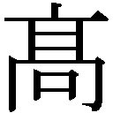

| 有頂天家族 | |
| 森見登美彦 | |
| 幻冬舎 (2012) | |
幻冬舎文庫
有頂天家族
森見登美彦
有頂天家族
桓武天皇の御代、万葉の地をあとにして、大勢の人間たちが京都へ乗りこんできた。
彼らは都を築き、産み増え、政権を争い、神を畏れ、仏にすがり、絵を描き、歌を詠み、刃をきらめかせて合戦し、ついに火を放って街を焼いたかと思えば、飽かずに再建し、また産み増え、商いに精を出し、学問をたのしみ、太平の世を満喫し、四隻の蒸気船に仰天したとたん、うっかり火を放ってまた街を焼き、「文明開化」を合い言葉に懲りずに再建し、やがて来たる戦争の時代を乗り越え、笑ったかと思えば泣き、泣いたかと思えば笑い、色々あって現代に至った。
桓武天皇が王城の地をさだめてより千二百年。
今日、京都の街には百五十万の人間たちが暮らすという。
だが待て、しばし。
平家物語において、ミヤコ狭しと暴れ廻る武士や貴族や僧侶のうち、三分の一は狐であって、もう三分の一は狸である。残る三分の一は狸が一人二役で演じたそうだ。そうなると平家物語は人間のものではなく、我々の物語であると断じてよい。皆の者、誇りをもって高らかに宣言しよう。人間の歴史に狸が従属するのではない、人間が我らの歴史に従属するのだ。
という大法螺を吹き、偽史を書き散らす長老がいた。
言うまでもなく狸である。
彼はあまりにも毛だらけで、もはや長老というより、知恩寺阿弥陀堂裏に転がったふはふはの毛玉であった。先年、誰も気づかぬうちにまがうことなきホンモノの毛玉になっており、いつの間にか白玉楼中の狸となっていたことは記憶に新しい。
平家物語云々は老い先短い毛玉の見た夢にすぎないとしても、今日もなお、洛中には大勢の狸たちが地を這って暮らしている。ときには人間に交じって右往左往する。かつて平家物語の端役を演じたように、狸はいつだって人間をまねたがる。
狸と人間はこの街の歴史をともに作ってきた――そう語る狸もある。
だが待て、しばし。
王城の地を覆う天界は、古来、我らの縄張りであった。
我らは天空を自在に飛行し、その天狗的威厳を発揮して下界へ遍く唾を吐き、地を這って暮らす有象無象どもを手玉に取ってきた。人間というものは己が功績を大げさに吹聴し、まるで己の腕一本で歴史を練り上げてきたようなツラをする。ちゃんちゃらおかしい。笑ってやる。たとえ狸たちの毛深い手を借りたとて、吹けば飛ぶような人間風情に何ができよう。いかなる天災も動乱も、魔道に生きる我らの意のままである。国家の命運は我らが掌中にあり。
街を取り囲む山々の頂きを仰ぎ見よ。天界を住処とする我らを畏れ敬え。
ということを傲然と言ってのける者がいた。
言うまでもなく、天狗である。
人間は街に暮らし、狸は地を這い、天狗は天空を飛行する。
平安遷都この方続く、人間と狸と天狗の三つ巴。
それがこの街の大きな車輪を廻している。
天狗は狸に説教を垂れ、狸は人間を化かし、人間は天狗を畏れ敬う。天狗は人間を拐かし、人間は狸を鍋にして、狸は天狗を罠にかける。
そうやってぐるぐる車輪は廻る。
廻る車輪を眺めているのが、どんなことより面白い。
私はいわゆる狸であるが、ただ一介の狸であることを潔しとせず、天狗に遠く憧れて、人間をまねるのも大好きだ。
したがって我が日常は目まぐるしく、退屈しているひまがない。
第一章 納涼床の女神
ある引退した天狗が、出町商店街の北にあるアパート「コーポ桝形」に住んでいた。
外出はめったにしない。商店街で買いこんできた具材を手当たり次第に放りこんだ薄気味悪い粥を煮て、延々と命をつないでいた。おそろしく歳をとっている。古今無双の風呂嫌いだが、鯣のように乾いた肌をこすっても、どうせ垢すら出ないのである。プライドは秋空のように高く、そのくせ何一つ自分ではできない。往年は国家の命運を好き放題に歪め得たと自賛する神通力も、もはや失われて久しい。性欲は旺盛である。しかしラブライフを営む能力もまた、失われて久しい。恨めしげな顔をして、赤玉ポートワインを舐める。甘いワインを舐めながら、かつて阿呆な人間どもが右往左往した戦乱について語る。幕末の話だと思っていれば応仁の乱であり、応仁の乱だと思っていたら平家没落であり、平家没落だと思っていたら幕末の話である。要は筋が通っていない。血肉をそなえた生き物というよりも、むしろ化石に近い。はやく石になってしまえと誰もが言う。
皆は彼を赤玉先生と呼ぶ。その天狗こそは、私の恩師であった。
○
京都に住む狸たちは、読み書き算盤、化けるための心得、弁論術、うら若き乙女の口説き方などを、天狗から学ぶ。京都には天狗もたくさん住んでいるから、おびただしい流派があった。鞍馬山の鞍馬天狗が最も名高く、いわゆるエリートたちが集った。しかし如意ヶ嶽の赤玉先生も負けず劣らず有名であった。先生は「如意ヶ嶽薬師坊」という物々しい名を持っていた。
今となっては昔のことだが、赤玉先生は大学の講義室を借り、狸を集めて講義をした。
校舎の隅にある薄暗い階段教室に居並んだ生徒たちに向かって、先生は存分に天狗としての本領を発揮し、むやみに威張ってばかりいた。生徒に文句があろうはずもない。当時の先生にはまだ本物の威厳があった。威張るから威厳があるのか、それとも威厳があるから威張るのか、そういう役にも立たない懐疑が湧き出してくるのを問答無用で抑えつけてしまうものこそ、本物の威厳というものだ。
先生は皺一つない背広を立派に着こなし、難しい顔をして、窓外の木立を喰らいつくように睨みながら喋っていた。その姿を懐かしく思い出す。俺はおまえらを軽蔑しておるんだと、先生は何遍も繰り返した。おまえらだけじゃない、俺は俺以外の者をすべて軽蔑しておるんだと。
天空を自在に飛行し、気ままに辻風を吹かせ、気に入った乙女をひっ攫い、世にあるものへことごとく唾を吐く。赤玉先生、栄光の日々であった。その先生が、やがて落ちぶれ果てて商店街の裏へ逼塞する羽目になるとは、誰が想像できたろう。
我が一族に生まれた者は、赤玉先生の教えを受けるのが遠い昔からの習わしで、私もその例に漏れることなく入門した。今思い出してみると、私は先生に叱られてばかりいた。それはなにゆえか、私なりに考えてみるに、要するに私は自分の能力をきちんと矯めて一族のために使うということをしなかったからであろう。私はわがままであり、我が道ばかりを歩こうとし、孤高の地位に憧れた。
自分は孤高の地位にありながら、先生は他の者が孤高の地位に上るのを嫌った。しかし、あの頃、私は先生のようになりたかった。
今となっては昔のことである。
○
その日、赤玉先生のアパートを訪ねる前に、私は出町商店街に立ち寄った。商店街は買い物客で賑わっていて、きわめて人間臭い。赤玉ポートワイン、便所紙、綿棒、弁当などを買いこんでから、北へ延びる路地に入った。祇園祭も終わった七月末の夕暮れである。
私は可愛らしい女子高生に化けていた。
昔から化けることだけは得意で、あまりにもくるくる姿を変えるものだから叱られてばかりいた。近年、狸一般の化力低下に伴い、たとえ狸であってもムヤミに姿を変えてはいかんという妙な風潮が広まって、甚だつまらない。我々だけに許された能力を思うさま使って、愉快に世を渡って何が悪いか。
なぜうら若き乙女に化けていたかといえば、それも先生のためである。可愛い乙女が差し入れに来れば、先生も晴れやかな気分になるだろうと考えたのである。
しかし私がアパートを訪ねると、先生は烈火のごとく怒った。
「このぼけなすめ、そんなつまらん小細工をするな」
先生は万年床にあぐらをかいたまま、四畳半の隅で埃をかぶっていた掛け軸、招き猫、茶道具、壷、信楽焼の小狸などを手当たり次第に投げつけてきた。私も台所から便所紙を投げつけて応戦した。
「このうんこじじいめ、ぼけなすとはどういうことだ。毎日毎日ぼうっと腐りきっている先生のためを思えばこそ、灰色の日常に一服の清涼剤として」
先生はペッと畳に唾を吐く。「おまえの艶姿など見たくもないわ」
「この芸術的なまでに完成された化け方が分かりませんか。見よ、この完璧な胸のふくらみ、腰のくびれ、ぴちぴちのその他もろもろ」
「やめいやめい。薄気味が悪い」
「グッときた自分が許せないだけではないですか。ならば私に怒るのは筋違いだ」
「おまえごときの技量で儂が化かせると思っているのか。つけ上がるな」
そうして先生はむっつりと黙りこみ、腰を痛そうにさすっている。
狭い四畳半に窓から夕陽が射しこんで、その明かりの中をもうもうと埃が舞っている。溜めこんだ瓦落多で四方を囲まれた万年床にあぐらをかいている皺くちゃの先生には、王国を失った国王のような風情がある。
先生が野良犬の餌のような不気味な粥をすすって暮らしているのを見かねて、私がここへ差し入れに来るようになってから半年以上が過ぎていた。じつに先生はわがままであり、健気な私の苦労たるや生半可ではない。そもそも先生は自分の気に入らない食べ物は、決して喰おうとしない。私が買っていった松花堂弁当も好きなものだけ摘んで残りを放置する。蜜柑が大好きなくせに皮を剥いてもらわないと喰わず、こちらが剥かないでいると癇癪を起こす。珈琲はブルーマウンテンをその場で碾いて淹れないと「珈琲ではない」とのたまい、そのくせ三日も珈琲が飲めないとまた癇癪を起こす。そうしてのべつまくなし癇癪を起こす合間には、赤玉ポートワインばかり舐めている。神をも畏れぬ悪行三昧とはこのことだ。
「おまえ、最近、弁天を見たかね」先生は呟いた。
「いいえ、ここしばらく会っておりません」
「もう長く顔を見せない。どこでどうしているのやら」
自分では何もできないくせに、弁天の身の上は案じているのである。顔を合わせるたびに先生が口にするのは弁天のことであった。
「彼女がこんなところに帰りたがるわけがありません」
私が言うと、先生は大きく放屁した。
そうして、その音に「おや」と驚いた顔をした。
○
「弁天」とは天狗でも狸でもない、ただの人間である。しかしながら彼女の美しさたるや、筆舌に尽くしがたい。尽くしがたいので書くことができない。
琵琶湖のほとりをぽてぽてと目的もなく歩いていた若き日の弁天は鈴木聡美という人間の名前を持ち、それなりにぷりぷりした可愛さを遺憾なく発揮してはいたものの、あくまでそれなりに可愛い田舎の女子にすぎなかった。
かつて天空を自在に飛行した栄光の日々、年始の挨拶に琵琶湖上をひとっ飛びして竹生島へ出かけた赤玉先生は、彼女を京都へ連れ帰ってきた。ありていに言えば未成年者誘拐である。そうして赤玉先生は彼女に手取り足取り天狗教育をほどこし、彼女は人間から天狗への階段を勢いよく駆けのぼった。駆けのぼったところで美脚を一閃、彼女は誘拐犯かつ師匠たる赤玉先生を蹴り落としたのである。
今の弁天に昔日の面影はない。
人間でありながら天狗よりもなお天狗的となった彼女は、天狗というよりはただの独居老人となった赤玉先生を置き去りにして、京都大阪神戸を自在に往来しての放蕩無頼の悪行三昧、ぷりぷりした若々しい頬は綿菓子のように溶け去り、その下から現れたのは冷徹なる美貌である。どこへ向かうというあてもなく琵琶湖のほとりを歩んでいた少女は、今や向かうところ敵なしの女となった。向かうところ敵なしであるのに、向かうところを知らないのだから、なおのこと恐ろしい。弁天が気ままに向かう先でぼんやりしていると踏みつぶされる羽目になる。
○
先生が赤玉ポートワインをよこせというのを容赦なく足蹴にして、飯を喰わせた。不味そうに口をもぐもぐやりながら、「今日は金曜日である」と先生は言った。「おそらく弁天は〝金曜倶楽部〟へ出かけているにちがいないぞ」
金曜倶楽部と聞いて毛が逆立つ思いがしたのでぷるぷる身体を振るい、私は先生が投げ散らかした骨董品を部屋の隅へ押しこんだ。
「きっと弁天様も楽しくやっているのでしょう」
「あんな人間どもとつるんで何が楽しいものか」
「弁天様だって人間ですよ。お忘れですか」
「あいつは夜遊びばかりしおって、儂が見ていてやらねばすぐに魔道を踏み外す。しょうのないやつだ」
「魔道を踏み外すというのは、なんだか妙な言い方では」
「やかましい」
先生は怒鳴って、米粒を口からぼろぼろこぼした。そうして「ああ不味い不味い。こんなものは喰えたものではない」と言って弁当を放り投げた。半分喰っているので、まずまず旨かったと見てよろしい。
私が赤玉ポートワインを手渡すと、先生はゆっくり舐め始めた。
私は先生の向かいにようよう腰を下ろして息をついた。窓外に目をやれば、さっそく日が暮れかかっている。瓦落多をかき分けて開け放った窓からは、夕暮れの風がひそやかに入ってくる。「意外に風が通りますねえ」と私は言った。電燈が明滅した。蛾が一匹、先生がワインを注いでいる湯呑の縁にとまって、電燈の明かりを浴びながらゆっくり羽を動かしている。
「うちに寄りつくのは蟲とおまえぐらいのものだ。味気ない」
「少しは感謝して頂きたいものです」
「誰がおまえに来てくれと言うたか」
先生はふんぞり返る。「おまえはまったく厄介な生徒であった。ようやくそのツラを見る面倒がなくなったというのに、今さらのこのこ来られて嬉しいと思うか。説教の種も尽き果てた」
「駄目な生徒ほど先生には可愛いものだと言うではありませんか」
「そんなことを誰が言っておるんだ。馬鹿め」
私は煙草を吸いだした。先生は黒光りする箪笥から水煙管の一式を取り出して、こぽこぽ音を立て始めた。しばらく二人で煙を吹いた。
「おまえはどうせひまであろう。弁天を捜して連れてこい」
先生が無茶を言った。
「いやです。私が説得したって、来やしません」
「どうせ今宵の金曜倶楽部で、色目をつかっておるのだろう。儂が説教してやる」
「私は行きませんよ。弁天様も金曜倶楽部も大嫌いです」
「出かけるついでに綿棒を買ってこい。耳が痒いと儂はいらいらして辻風を吹かす」
「綿棒は新品を洗面台に置いてあります。私は行かないと言ってるじゃないですか、分からんジジイめ。おとなしく耳掃除をしてさっさと寝てしまえ」
「しばし待て。今、手紙を書くとしよう」
会話が成立しないこと甚だしい。先生は塵に埋もれた文机に向かった。皺の寄った紙を丁寧に延ばしてから、何やらくしゃくしゃと一心に書いている。
「弁天弁天」
先生はぷつぷつと豆を数えるように呟いていて、私は聞こえよがしに溜息をついた。
先生は弁天に恋い焦がれ、彼女の帰りを待っている。
しかし切ないことに、どう考えてみても、この老いらくの恋は敗色濃厚であった。かつては輝かしい勝利の時代もあったろう。しかしそんな想い出も今となっては夢のごとく、武器を捨てて全軍撤退となる日も遠くない。まだ撤退しないのが妙なのである。
先生は書き上げた手紙を私に押しつけた。
「これを今夜中に必ず弁天に届けい。名誉な御役目と心得よ」
そんな名誉は御免こうむって、スタコラと糺ノ森へ戻り、柔らかい寝床に入ろうかと思ったが、なにしろ目の前で傲然とふんぞり返る赤玉先生に対しては、特大漬け物石よりもなお重い負い目がある。その重みに押しひしがれて、私は四畳半の隅に平伏した。
「下鴨矢三郎、心得ました」
私ごときが加勢したところで恋の負け戦が華々しく逆転するとは思われなかったが、私は化け慣れぬ恋のキューピッドに化けることを余儀なくされた。ちと考えがあったので、山のような瓦落多から弓と矢をこっそりくすねた。これはキューピッドに恰好の小道具なりと考えて、少しだけ悦に入った。
○
東山丸太町、熊野神社西の町内に玉垣で囲われた「魔王杉」という古木がある。
そんな名がついたのは、古来その木の股が天狗の腰かけとして広く活用されてきたからである。天狗の休憩所として一般に屋上が使われる時代になっても、その古くからある魔王杉は変わらずに親しまれ、京都在住の多くの天狗が小粋な休憩所として足を休めたり珈琲を飲んだり連れの乙女と睦言を交わしたりした。赤玉先生もその例に漏れない。先生はしばしばその杉を足場にした。まだ出町柳へ追い落とされる前であり、先生は如意ヶ嶽で己の縄張りを守っていたので、街中へ出てゆくときには吉田山や大学の時計台や魔王杉を点々と伝って足を延ばした。
当時、西の方で大きな地震があった。
先生は魔道に生きる者としての責務を果たすべきだと考えた。自分で起こした災厄でもないのに、わざわざあちらへ足を延ばして人間たちが苦しむさまを笑ってやらねばならぬと考えたのである。先生は講義を休んで出かけた。
先生の視察の話を聞いて、私は憤った。
天狗がそもそも人間を歯牙にもかけない存在であるということは私だって重々承知していた。狸も人間も、天狗にはこれまでひどい目に遇わされている。しかしすでに起こってしまった大災厄の尻馬に乗って人間たちを嘲笑いに出かけるという先生のやり口は、じつにぶざまに思われた。天狗という肩書きに忠実であるためだけの空々しい残酷さが、天狗の名にかえって泥を塗るもので、先生の沽券に関わると若かりし日の私は断じた。
ここへ弁天が登場する。
その頃の弁天は着々と天狗的な力を腹に溜めて、言うなれば人間からよりいっそう天狗らしく一皮剥けようとしていたところであった。自分で言うのも何だが、私がうっかり惚れたのも無理はない。先生に対する憤りを弁天に漏らすと、彼女はしきりに感心して、自分も賛成である、一緒に先生を懲らしめてやろうと言った。私は俄然やる気になった。「一緒に」というのがじつにいいと思った。
魔王杉に化けて先生の帰りを待つというのは弁天の考えであり、それは図に当たった。長旅で疲れていた先生は、夜の街を大きく弧を描いて飛んできて、本物の魔王杉と偽物の魔王杉の見分けがつかなかった。哀れ、如意ヶ嶽薬師坊は、どちらの魔王杉へ降りるべきか思い迷っているうちにそのきっちり中間へ墜落し、民家の屋根に大穴を開けた。
それから後、先生の転落は桜が散るように早かった。
先生は腰をいためて寝こんでしまい、それがきっかけでほとんど飛ぶことができなくなった。わずかに残っていた神通力も失われた。天狗同士の陣取り合戦にも大敗を喫し、鞍馬の天狗たちに如意ヶ嶽から追い落とされ、やがて狸相手の教職も退いて、出町柳へ逼塞することになった。
先生が絵に描いたような没落の運命を辿る一方、まるで天秤の反対側が持ち上がるようにして弁天は力をつけていった。彼女はあたかも先生という桎梏をようやく振り払えたというように元気溌剌、先生のもとへも帰らず、縦横無尽に飛び廻るようになった。私が彼女にいいように使われたのは一目瞭然であるが、もはや何も言うまい。
「狸であったらだめですか」というまったく工夫のない台詞は、その頃の私が口にしたものだ。弁天は「だって私は人間だもの」と応えた。
さらば初恋。
人間の前には、狸も天狗もかたなしである。私はあまりの恥ずかしさと情けなさに先生のもとへふたたび顔を出すことができず、自分で自分を破門にした。
ほとぼりが冷め、私が先生のもとへふたたび出入りするようになるには、数年の歳月を要した。下宿でくすぶっている先生に、私が滅私奉公するようになったのには、そういういたたまれない経緯がある。
○
河原町今出川からバスに乗った。久しくバスには乗らなかったけれども、夜の街を滑り抜けていくのはたいへん気持ちが良かった。北から南へ下って、御池通を過ぎると燦然たる街の明かりが、賑やかに両側を流れてゆく。
バスの座席に腰かけて、先生が書いた手紙を盗み読んだ。思いの丈を恋文にぶつけたにせよ、先生にもある程度の節操はあるだろうと思っていた。ところが目を通してみると、夢見る阿呆高校生が書いたような、まるで蜂蜜のように甘くとろけた文章には手綱を引き締めた跡もなく、あまりの恥ずかしさに最後まで読み通すのは骨が折れた。
私は憤りを感じた。
いったいどうなっておるのか。かつて我らが尊敬の念を惜しみなく捧げた赤玉先生は、老いらくの恋の甘みにめろめろになるあまり、天狗としての矜持も何も一切合財、便所に流してしまったか。しかも先生は「逢い引き」の場所として四条南座を指定していた。腐りかけたあの万年床から抜け出して、どうやって南座までやって来るつもりか。
ぷりぷりしながら四条河原町でバスを降りて、私は賑わう街を抜けて鴨川へ向かった。何やかや、今宵は妙な男どもが声をかけてくるなと訝しく思っていたら、今の私はうら若き乙女姿なのであった。
その名を口にするのもおぞましい金曜倶楽部は、今宵は鴨川沿い納涼床で開かれると聞いている。私は四条大橋を渡って、藍色の夜空に明るく照らし出されている南座の大屋根を眺めた。蒸し暑い粘ついたところへ涼しい夜風がときおり吹きこんでくるのがありがたい。ビルの屋上ではビアガーデンをやっていて、並んだ提燈が熟れた果物のように赤く光っている。なんだかみんな可愛く楽しげである。
どうしたものかと思ったけれども、ひとまず弓の用意もしてきたことだし、弁天の御尊顔をせめて対岸から拝もうと考えた。
私は四条大橋のたもとから鴨川の土手へ下りて、向こう岸でぽつぽつと橙色の明かりを灯す納涼床を眺めた。土手を北へ歩いて橋から遠ざかるにつれて、だんだん街の賑わいが遠のいて、暗い水の向こうに街の光だけが浮かび上がる。対岸に連なる宴席はまるで夢の景色のようだし、電燈に照らされて杯を手にする人間たちもまるで芝居の役者のようだ。
一つだけ落ち着いた、ひっそりとした床があった。六人の男がまるで福の神のようにふかふか笑っている。その中に交じる、ひやっと冷たそうな紅一点が弁天である。
あれが金曜倶楽部だと分かった。高い悪名のわりには暢気そうであった。
○
金曜倶楽部とは大正時代から続いている秘密の会合で、ひと月に一度、金曜日に開かれることからその名がついたといわれる。七人の会員が祇園や先斗町の料亭などで一席設けて飲み喰いをする。大学教授や、作家や、ささやかな金持ちやらが集まる。会員には交代があるものの、必ず席数は七つと決まっていた。七つの席にはそれぞれ七福神にちなんだ名前がつけられている。
弁天はこの倶楽部の一席を陣取り、紅一点としてずいぶん楽しくやっている。先生や我々が口にする「弁天」という渾名も、もとはといえば彼女が金曜倶楽部の一席を占めていることに由来する。弁天にその由緒ある席を譲り渡した先代の「弁天」は、髭面の大男だったそうな。たしかにそれならば弁天の方が「弁天」の席にはふさわしかろう。
ひっそりと集まっているからといって、その席上で何か太平の眠りをさますような企みが練られているという証拠があるわけではないし、案外、たんなる仲良し同士の気楽な集いなのかもしれない。それならそれでよいのであって、問題はほかにある。
金曜倶楽部は忘年会で、ある残虐無比なことをする決まりになっていて、それゆえに我々の仲間内では蛇蝎のごとく嫌われていた。
彼らは毎年、狸鍋を喰うのだ。
きゃーッ。と、絹を裂くような女の悲鳴を私は上げる。
およそ信じられないことである。この文明開化の世の中で、今さら好きこのんで狸を喰う必要はないはずだ。野蛮である。世間に向かって自分たちの独自性を声高に主張したいというのであれば、蝦蟇でも五位鷺でも八瀬の猿でも亀の子束子でも、奇抜なものは幾らでもある。なにゆえ狸なのかと私は問いたい。
○
目の前を鴨川がどうどうと流れて、そこへ街の明かりが跳ね返ってきらきらする。
先生の恋文を矢にくくりつけて、私は金曜倶楽部に狙いをつけた。ぷりぷりに膨らました乳房が邪魔をするので、しゅんと縮めてしまった。甲冑そ身につけておらねど、我こそは現代版那須与一なりと一人狸芝居。対岸に連なる納涼床の下には鴨川の土手が続いて、笑いさんざめく人々が歩いているけれども、矢が逸れるようなことは万に一つもないという満腔の自信がある。
床で弁天が、つと立ち上がった。彼女は何やら真っ白な背広めいたものを着ているが、私には何というのか分からない。そうして床を歩き廻りながら、派手なふさのついた飾り扇を持って、宙をくねくね掻き廻している。踊り歩いているようにも見える。扇の黒い骨がてらてら光っている。あの扇は赤玉先生が「愛の記念」として贈ったもので、幾度か弁天に自慢されたことがある。描いてあるのは風神雷神である。あんな大事なものを弁天にくれてやったということで、赤玉先生の評判はますます落ちた。
歩き廻る弁天に狙いをつけているうちに、興趣が湧いてきた。かの平家物語の弓の名手よろしく、あの扇を射貫いてやろう。こういうことばかりしているから長兄には説教され、赤玉先生にも怒られるのだと思ったけれども、いったん思い立つと抑えがきかない。
怖じ気づく前にやっつけてしまえと思って、ひょうふつと矢を放った。
矢は柔らかに弧を描き、目論み通りに弁天の手にある扇を貫いた。それを見て、男たちがワッと立ち上がる。川のこちらに立っていると、まるで自分がしでかしたことでなく、芝居を見物しているがごとく暢気なものだ。えらく騒いでいるなあと感心して突っ立っていると、弁天が納涼床の欄干に手をかけて、こちらをまっすぐ見据えた。彼女は嫣然と微笑んだ。腹の底がヒヤッとした。
金曜倶楽部の男たちが弁天のとなりに並んで、下手人を捜して目を走らせている。私はむくむくと胸を膨らませるひまもなく、ひょいひょいと土手を伝って逃げだした。
○
言うなれば自分のやったことを対岸の火事だと思っていたのだが、対岸へ火をつけたのは自分だ。四条通を駆け抜けながらわくわくした。
武者震いを鎮めるために、「朱硝子」にもぐりこむことに決めた。「朱硝子」は寺町三条の地下にある店で、我々の眷属がしきりに出入りする。昼は喫茶店であり、夜は酒場にもなる。
寺町通はすでに大方の店舗がシャッターを下ろして、行き来する人もまばらであった。大声で喋る酔っぱらいの声がひっそりとした空気を震わせていた。
べたべたと謎めいたビラが貼ってある狭い階段を下りていくと、地の底から怪しい音楽が湧き上がってきて、地獄巡りへでも出かけるような気がする。それはあながち私の妄想でもない。「朱硝子」はひどく広くて、その果てがどうなっているのか、誰も知らない。これまでに幾度か大集会が開かれたが、幾らでも客は入るので、満席になったことはないという。奥へもぐりこめばもぐりこむほど店は狭くなり、ついには紅いビロード張りの椅子と木の卓子が連なるだけの暗い廊下のようなものになって、ところどころにぼんやりとストーブが燃えている。そこはいつでも冬であり、冥途へ通じているという話だ。
すでに夜となり、「朱硝子」はもう昼の顔をしまいこんで、酒場になっていた。カウンターに私が近づくと、店主は怪訝な顔をしてこちらを見た。
「俺だよ俺だよ」そう言って私は鼻をひくひくさせた。
「なんだ、おまえか」
店主は嫌そうな顔をする。「またそんな格好をして遊んでる」
「どんな格好をしてもいいじゃないか」
「そう迂闊にころころ姿を変えるべきもんじゃない」と、店主は泥鰌のような髭をひねり、真面目な顔をした。「少なくともここへ来るにふさわしい格好をしな。紛らわしい」
私は説教を受け流し偽電気ブランをもらって啜った。
そうやって頬杖をつきながら音楽に耳を澄まし、弁天は先生の恋文を読んだろうかと考えた。よぼよぼの老人が渾身の力をこめて書いた恋文を読んだところで、弁天がいそいそと逢い引きに出かけるわけがない。あの恋文の気色悪さは、想う人を逢い引き場所からむしろ渾身の力をこめて追い払うたぐいの気色悪さだ。たぐいまれなる経験を累々と積み重ねて幾星霜、本来ならばそれぐらいのことは先生にも呑みこめているはずなのにこの体たらく。いと恥ずかしくも哀れなり。
そうやってぼんやりしていると、「私は赤割りを」と言う声がした。そのとたん、うなじを氷のように冷たい掌で掴まれて、私はウワッと首をすくめた。
傍らに座ったのは弁天であった。
○
赤割りというものは焼酎を赤玉ポートワインで割ったものである。弁天がこくこくと白い喉を鳴らして桃色の杯を干しているうちに、「朱硝子」の中は潮が引くように静かになった。こっそり目をやってみると、先ほどまで悠々とくつろいでいた我が眷属たちは姿を消している。店主だけは持ち場を離れるわけにもゆかず、カウンターの隅へ引き篭もって、手足を飴で固められたようにぎくしゃくしながら仕事に精を出すふりをする。臆病者め。小魚たちが怪魚から逃げ惑うさまを思わせるようなあたりの反応についても、弁天はまったく意に介する風もない。日常茶飯事だからである。
彼女は矢が宙を飛ぶ姿を指で描いた。
「さっきのあれは何です。私、びっくりしたわ」
「先生から恋文を届けるように言われてきたのです。川向こうからでは遠いですし、矢文で一つ、やらせてもらいました」
「ひょっとして私に喧嘩をお売り？」
「愛憎表現と呼ぶべきものです」
「売られた喧嘩は買うのが好き」
「買ってはいけません」
「大切な扇が台無し。金曜倶楽部も大騒ぎ。私、気分が悪いと言って出てきたの」
「本当に貴女へ当てたければ、当てておりますよ、ははは」
「でしょうね、おほほ。こう、目玉にぶっすりとね」
そう言って弁天はくだんの飾り扇をカウンターに置いて、大きく裂けた真ん中を細く長い指でなぞっている。弁天の一本一本の爪には何か私には分からぬ文様が描かれており、彼女が指を動かすたびに赤黒く光って、まるで生き物のように形を変えてゆくのが不気味であった。
「扇のことは申し訳ありません。よろしければ私が」
「いいの。これは私が持っています」
弁天はひしと扇を押さえた。
「恋文、読みましたか」私は訊ねた。
「ええ。先生はまた駄々をおこねになってる？」
「こねにこねて、かちかちになっております」
「でしょうね」
弁天はくすくす笑った。「もうずいぶんと帰っていませんから」
「せめて週に一度ぐらい帰るようにしてはいかがです」
「あなたに口出しされたくはないわ」
「こちらも首を突っこむつもりはない。夫婦喧嘩は犬も喰わない」
「狸のくせに」
「狸であったらだめですか」
「だって私は人間だもの」
そう言って弁天はなんだかつまらなそうな顔をした。たしか昔にもこういうやり取りをしたと思った。
「あなたが喧嘩を売ってくれたら、私喜んで買うのに」
「とんでもない」
「そうしたら捕まえて忘年会の鍋にしてやるわ」
「またそんな無茶を」
私はひやひやしながら冷静さを保ち、にわかに恐るべき雲行きになってきたその場を切り抜けるべく、手を挙げて店主を呼んだ。しかし店主の姿はなく、人を馬鹿にしたように大きな信楽焼の狸がカウンターの中で直立不動の体でいる。どうやら店主は恐怖のあまり信楽焼の狸に化けることを選んだらしい。私はやむを得ずカウンターの中へ入り、偽電気ブランを注いだ。そして弁天のために赤割りをもう一つ作った。
彼女はカウンター越しに手を伸ばして、私の胸を突っついた。「ところで、なぜ今日はそんなに可愛らしい格好をしているの？ 女の子が夜遅くにこんなところにいてはいけません」
「なかなか可愛くできてるでしょう」
「そうね」
「先生の日常に潤いを与えようと、若い乙女に化けまして」
「うるわしい師弟愛ですこと」
「それなのにひどく叱られました」
「ねえ。あんなワガママじじい、放っておけばよろしいのです」
「そんなわけにはいきません」
弁天は赤割りを舐めながら、じいっと私を見つめている。「魔王杉のことを気にしているのでしょう」
「貴女は気にしておらんのですね」
「何を気にするというの」
「これだからな。人間ってやつは、これだから敵わん。天狗よりもよっぽどタチが悪い」
「ごめんなさいまし。でもあなたは先生の気持ちがちっとも分かってないのね」
弁天はにっこり笑い、赤割りを干して立ち上がった。
「南座ですよ」
私は出ていこうとする弁天に言い募った。「先生はあそこにいますよ」
彼女が急に般若のような恐ろしい顔をして、カウンター越しに私の胸ぐらを掴んだ。「会うか会わないか、そんなのはあなたの知ったことではないでしょう」と彼女は言った。真っ白な顔がますます白くなって、眼のまわりだけが黒くなった。凍りつくように冷たい息が彼女の口から溢れ出た。
「出すぎたことを申しました」
そう言ったばかりの私の唇へ、弁天はぶちゅっと音高く接吻した。とても冷たくて、唇が凍りつくかと思われた。唇を引き剥がして「うぎゃ」と呻く私を尻目に、弁天は「朱硝子」を出ていった。
「大丈夫かね」
信楽焼の狸が声をかけてきた。「おまえ、よく命が続いとるなあ」
「これが生き甲斐でござる」
「本当に鍋にされて喰われちまうぞ」
起きあがって唇に触れると、桃色の氷のかけらがぱらぱらと剥がれ落ちた。掌に載せると、瞬く間に溶けた。舐めると赤玉ポートワインの味がした。
「とりあえず酒でも飲め。いや、呆れたもんだよ」店主が言った。
「奢ってくれるかい？」
「奢るとも」
○
弁天に初めて出逢った日のことを思い出した。
その頃、弁天はまだ弁天ではなかった。
私は長い階段をつたって屋上へ出た。烏丸通に面した洛天会ビルの屋上は広々としていて、そこへうららかな春の陽が射している。吸いこまれるような青空で、ぼやぼやと柔らかく薄い雲が浮かんでいる。小ぢんまりとした稲荷社や薄汚れた貯水タンクの脇を抜けていくと、屋上の真ん中にふいに大きな桜の古木が現れた。まるで菓子のように美しい花弁をいっぱいつけている。四条烏丸のビル街を風が渡ってくるたびに、桜吹雪が屋上から烏丸通の上へ吹き流れた。地上を歩く人間たちは桜が降ってくる空を見上げて、不思議に思ったことだろう。
その日、私は父に頼まれて、赤玉先生へ酒を届けに出かけたのである。父だけは赤玉先生とざっくばらんな付き合いをしていたので、先生がこっそりしつらえた屋上花見の席に酒を届けるという悪戯を思いついたのであろう。
桜から少し離れたところへ苔がいっぱい生えていて、大きな傘が立ててあった。先生と弁天が柔らかい苔の上へ仲良く座って、桜を眺めていた。先生は堂々たる和服姿で、立派な天狗の証たる棍棒みたいに大きな葉巻をしきりにふかしていた。私が赤玉ポートワインを抱えてえっちらおっちら近づいていくと、先生は葉巻の煙の向こうで険しい顔をさらに険しくした。私は叱られるかと思ってひやひやしたが、どうやらその鬼瓦のような顔は照れ隠しであったらしい。
「なにゆえ参った」
先生が重々しく言った。「それは何だ」
私は瓶を床に据え、膝をついた。
「罷り越しましたるは下鴨総一郎の三男、矢三郎でございます。如意ヶ嶽薬師坊様へ、献上の品でございます」
「御苦労」
先生がそれきりまた桜へ目をやって威張った姿勢を崩さないでいると、弁天が笑って立ち上がった。ぴっぴっと可愛らしい仕草で洋服の裾を伸ばした。その頃の弁天はそういった普通の姿をして、道行く人と何ら変わらなかった。わけの分からぬ皺くちゃの怪人に攫われてきたというのに、そのことをじつに当たり前に受け容れているようにそのときは見えた。
「御苦労様でございます」
弁天は低頭してから、私から受けとった赤玉ポートワインを胸に抱いた。
「その格好はなに？」彼女は私を見て笑った。
自分がいったいどんな格好をしていたのか、とんと思い出せない。どれだけまわりから説教されても言うことを聞かずにくるくると姿を変えていたからである。はて。
「あなたも一緒にワインを飲む？」
「けっこうです」
「あなたもやっぱり人間ではないの？」
「さてどうでしょうね。貴女は？」
「私はただの鈴木聡美です」
「よせよせ、からかうな。そいつは曲者だぞ」
先生が弁天へ声をかける。「たちの悪いやつだ」
「面白そうだわ」
「面白いものか。何でもできる器用者だが、己を矯めるということを知らんやつでな、どうせロクな者にはなるまい」
「ずいぶんお気に入りのようです」
「馬鹿を言う」
弁天は微笑み、私を連れて桜の下へ行った。「あなたも御覧」
桜の花弁が弁天と私のまわりをふわふわと流れていくのが夢のようであった。
「ねえ、すごいわねえ。こんなに立派な桜は見たことがありません。ほら、花に埋もれてしまって梢が見えないでしょう」
私は何とも口にせずに、ぽかんと桜を眺めている。
「おい。教えた通りにやってごらん」
先生がふいに、聞いたこともないような優しい声で言ったので驚いた。
「あら。私、まだできません」
「やってごらん」
弁天は首を逸らして眩しそうに桜を見上げ、しばらく緊張したように息を詰めていたが、やがて軽く地面を蹴った。私の目の前で弁天がふわふわと浮かび上がった。降りしきる花弁の中をすり抜けて、大きく伸びた枝へ手をかけ、そこからさらに弾みをつけて、上へ上へと軽やかに飛んでゆく。私はあっけにとられて見つめていた。いつの間にか赤玉先生が傍らにやって来て、満足そうに見上げていた。
「できました」
降りしきる桜の間から、弁天が顔をのぞかせて笑った。
先生は重々しく頷いた。
「天空を自在に飛行する、それが天狗というものだ」
○
夜も更けたけれども、四条大橋はぞろぞろと人間が行き交っている。
弁天の氷の接吻でにわかに興奮した私は、店主の奢りであることをよいことに、偽電気ブランを続けざまに呷って大いに酔った。そこで四条大橋の欄干へ優雅にもたれて、夜風に吹かれながら酔いを醒ました。
四条大橋の東詰にレストラン「菊水」があって、屋上にはビアホールらしい明かりが灯っている。真ん中がぽこんと高く飛び出していて、そのてっぺんがつるりと丸いのがいつ見ても妙ちくりんである。壁面に並んでいる縦長の二連窓から細く明かりが漏れてきらきらしているのが、酩酊している私には模型細工のように見えた。
あのつるつるした塔へ登ったらどんなものだろうと考えていると、その塔のてっぺんに弁天が通りかかった。そのまま彼女は「菊水」の塔を踏み台にして、ぽうんと大きく跳ね、祇園の明かりを股にかけ、南座の大屋根に飛び移った。昼に焼けた瓦がまだ熱いであろうと私は思ったけれども、弁天は涼しげな顔をしてついつい瓦を踏んでいく。
大屋根の南側へ赤玉先生がようやく姿を現したけれども、よくも南座の屋根まで辿りつけたものだと思われた。もはや気息奄々たるありさまで、身体中の螺旋がゆるんだように震えている。偉大なる赤玉先生、ほとんど死力を尽くしての登頂だ。不幸なことに傾斜のきつい屋根では上等の黒塗り洋杖を使いこなすこともできない。当然、四つん這いとなる。威厳をもって弁天を迎えんとする気迫は先生の全身から滲み出ていて、それを認めるにやぶさかではないけれども、相手の足下に這い蹲って、いかにしてこの一方的な恋の負け戦を逆転へ持ちこむつもりか。まさに手に汗握るものがあった。
弁天は先生の前に立つ。先生は四つん這いのまま、弁天を見上げている。何か二言三言、言葉を交わす。弁天が冷ややかに首を振る。夜間照明に照らされた玲瓏たる美女を見上げる先生の顔は情けなく伸びて痩せた馬面となり、もはや鑑賞するに堪えない。負け戦はやはりどこまでも負け戦であるようだ。
先生は「堂々と立ち上がっておまえに威厳を示し、何であればその身体を抱いてやり、さらに何であれば二人で優雅な夜の空中散歩へ出かけ、この埃っぽい地表をうごうごしている下らん有象無象どもを思う存分罵倒してやろう」と言いたげにしているのが分かったが、いかんせん四つん這いで尻と頭をもじもじさせているだけなので、それが弁天に通じたのかどうか判然としない。
これはそろそろ私の出番であるかと思って南座へ向かった。
私が四条大橋の東詰に着くよりも早く、先生と弁天の久々の逢い引きは、甘美さなどひとかけらもなく終わった。
弁天は身動きのとれなくなった先生を残して、ひらりと夜空へ飛び立った。引き留めるスキもない。彼女が鴨川を一息に飛び越え、「東華菜館」の屋上にあるスペイン風の塔を踏み台にして、またそこから煌めく夜の街へ飛び去るのが見えた。
先生は彼女を追いかけて飛ぶことができない。ただもじもじしている。
四つん這いの先生を置いてけぼりにするにあたり、彼女は夜空へ向かって高らかに天狗笑いをした。
本職を顔色なからしめるほど巧かった。
○
先生はようやく降りた南座の陰で、歩道の脇にへたりこんで息をついていた。茶色の背広はよれよれで、弛んだズボンからシャツがはみ出している。
「おや先生、こんなところで何を」
私は声をかけた。
「何だおまえか」先生はびっくりして私の顔を見た。「酔っておるな」
「へへ。いささか飲みました」
「遊んでばかりおるやつだ」
「今宵はこれで切り上げます」
「まあ待て。儂も帰るから、タクシーを呼んでこい」
「先生、タクシーなどよりも、空をひとっ飛びした方が早いのでは」
ぎろりと先生は私を睨んだ。それからしゅんと俯いて「そんな意地悪を言うでない」と言う。子どもが駄々をこねるように、洋杖で地面をぽかぽか叩く。「まったく情けない。儂は腰が抜けてしまった」
私は川端通でタクシーをつかまえておき、それから先生をおぶってタクシーまで運んだ。先生の身体はふにゃふにゃであり、じつに軽かった。私の背中にのせられて運ばれながら先生は苦渋に満ちた溜息をついた。
「この馬鹿めが。その乙女の格好をやめろと言うたろう」
「孫娘がじいさまを迎えに来たように見えます」
「オナゴにおぶわれるのは妙だ」
そう言いながら、先生は前に廻した手で、こっそり私の乳を揉んでいる。「ふん。やはり偽物ではないか」と得心がいったように呟いた。
タクシーは鴨川に沿って滑ってゆく。車窓の外を街の明かりが流れて、だんだんと繁華街が遠くなる。
「おまえ、弁天に手紙は届けたのだな」
「はい。金曜倶楽部は恐いので、矢文で一つ」
「おまえはそうやって無粋なことばかりしているのがいかん」
「弁天様は帰ってきますかね」
「分からぬ。あいつも夜遊びばかりしていかん」
「それにしても先生はあそこで何を」
「たまには祇園で酒を飲もうと思うてな」
それから我々は少し黙った。
先生は私が恋文を盗み読んだことを先刻御承知であり、私は先生がそのことを先刻御承知であることを先刻御承知である。今宵にかぎったことでなく、これまでの長いやり取りの積み重ねを通して、互いの先刻御承知が入り乱れている。けれども先生はそれを踏まえて喋ろうとはしないし、私も「ぶっちゃけ」はせぬ。師弟たるもの、迂闊に肝胆相照らすわけにはいかないのである。
私は夜空へ飛び去る弁天の姿を思い描き、その反対に南座の大屋根で尻をもじもじさせるしかなかった先生の姿を思い描いていた。
「天空を自在に飛行する、それが天狗というものだ」
先生が川沿いの景色を眺めながら呟いた。「そうではないか」
「しかし、たまにはタクシーに乗るのも悪くないのではありませんか？」
「うむ。悪くない」
「我々も化けるのに飽き飽きすることがあります」
私が言うと、先生はふんと鼻を鳴らした。
「狸と一緒にするやつがあるか」
そして先生は座席に深々と沈んで、大きな欠伸をした。
○
「魔王杉の事件」を反省し、自分で自分を破門にしてから数年、私は先生に会わなかった。その間、先生はなお教壇に立ち、両手から高級砂糖のようにこぼれ落ちる威厳を保とうと孤独に戦ったが、ついに敗れ、むざむざ醜態を衆目に晒すよりは教職を捨てることを選んだ。ぼろアパートへ篭城を決めこみ、赤玉ポートワインを舐めながら、ただ弁天の訪れだけを待ち望んで暮らした。弱った分だけ剥き出しになったプライドをもって周囲に斬りつけるから、たまに見舞いに来る教え子たちも辟易する。やがて寄りつく者も絶えた。
今年の初春、先生が夜更けの賀茂川べりで飛ぶ練習をしているという噂話を聞いて、私は見物に出かけた。葵橋から北へ延びる広々とした人気のない賀茂川べりを、身を切るような寒風が吹き渡っていた。裸になった木々を震わせる荒涼たる景色の中で、土手をもぞもぞしている影がある。赤玉先生はゆるゆると歩いては、ぴょんと跳ねた。ときたまふわりと少し浮かぶこともある。しかしそれだけであった。到底、天空を自在に飛行するというわけにはいかなかった。
「こんばんは、先生。寒いですね」
私が闇の中から声をかけると、ぴょんぴょん跳ねていた先生は顎を上げて私を睨んだ。
「じつに寒いな。だからこうして跳ねて温まっておる」
「私も跳ねてよろしいですか」
「よかろう。おまえも温まれ」
そこで二人でぴょんぴょん跳ねた。
何もかも互いに先刻御承知という関係は、すでにそこから始まっている。先生は、私が弁天にちょっぴり惚れていたことも、魔王杉に化けて先生を騙したことも、先刻御承知であった。しかし先生は何も言わなかった。狸ごときに化かされて墜落したことを認めるぐらいならば先生はとっとと冥途へ旅立ったことであろう。
自分で自分を破門したわけだから、自分で破門を解いてもよかろうと考えた。しかし、ここはひとまず礼儀をわきまえているところを先生に見せねばなるまい。私は値の張る舶来のワインを「朱硝子」からくすねていって、丁重に頭を下げた。
ところが先生は断固として飲まなかった。私が狸であるから本物と偽物の区別がつかないのだと無茶なことを言った。
「こんなものは偽物だ。おまえはワインというものを知らないか。本物のワインには、赤玉ポートワインと書かれてある」
○
赤玉先生は車中ですっかり眠りこけてしまった。山鳥の尾のしだり尾の長々しい涎を垂れ流す先生を担ぎ上げて、私はタクシーを降りた。「コーポ桝形」の階段を足音静かに上って部屋に入り、先生を万年床に放り出すと私は疲れ果てた。先生は思うさま涎を垂らしながらふいごのごとく鼾をかく。蛾が額で羽を休めていても、一向に気づく気配もない。
私は先生が飲み残した赤玉ポートワインを啜って一休みした。赤玉先生が愛飲する赤玉ポートワインはじつに哀しく甘い。
私は洗面台の前にぶらさがっている薄汚れた鏡の前で弁天に化けた。
惚れた人間に化けるというのは妙な感じがする。顔かたちは瓜二つに化けられるけれども、鏡を見てもまったく興趣をそそられない。それは当の惚れた相手が自分の意のままに動くからだ。相手が自分の思い通りに動くことと動かないことの間隙にこそ、惚れるということの味がある。もっとも、奇妙と言えば、狸たる自分が人間に惚れるということの方が妙なのだ。
「帰ったのかね。こっちへおいで」
先生が眠そうな声で言った。
私は先生のかたわらに座った。どうやら先生は寝惚けているらしい。
「な、儂は今は空を飛ぶこともできんがな、しかしこんなのは一時のことだ」
先生は諭すように言うのであった。「いずれ身体も治って、調子が戻ったら、また色々なことを教えてやろう。儂だってその気になれば地震を起こすこともできるのだし、辻風でビルを薙ぎ倒すことだってできるのだ」
「はい。きっとそうでしょうとも」
「このままではあんまり情けない。必ずまた天が下に大いに悪戯をしてやろう。しかし魔道の追究どころか今はひどく眠くてな......」
「どうか御休み下さいな」
「うむ。眠るさ、眠る。おまえもたまにはここで寝ておいき」
そう言って先生は私の尻を撫でながら眠りこんだ。
撫でていたのが弁天の尻ではなくて私の尻であったことに先生は気づかなかった。尻と偽尻の見分けもつかないのは、寝惚けていたとはいえ嘆かわしい。あるいは先生は先刻御承知で、気づかぬふりをしたのかもしれぬ。
○
かつて私は、狸として如何に生くべきかという難問に取り組んだことがある。
面白く生きる術は心得ているつもりではあったが、そのほかに己が何をすべきか判然としなかった。「どうすべきか分からないときには、何もしない方が得策だ」とは、かのナポレオンの言葉である。そうやって何もしないでぶらぶらしているうちに、これはどうやら面白く生きるほかに何もすべきことはないようだという悟りを得た。
出町商店街は残らずシャッターを下ろして、ひっそりとしている。これだけ深夜になれば行き交う人の姿もない。私はそこをすたすたと走った。商店街を抜け出して、ぼんやりと御神燈の灯る出町弁財天の前を通り過ぎ、そこから下鴨神社を目指した。黒々とした東山の上へ赤錆のこびりついたような色のお月様が出ている。走っているうちに、私は化けているのに飽き飽きして、四つ足で走り始めた。
恐るべき人間たる弁天はまだ夜の街を飛び廻っているだろう。かたや落ちぶれ果てた天狗たる赤玉先生は万年床にて哀しげな大鼾、狸たる私は川沿いを四つ足で駆ける。天狗と狸と人間の三つ巴。それがこの街の大きな車輪を廻している。廻る車輪を眺めるのは面白いが、面白いことは疲れるもので、私はひどく眠かった。
○
私は糺ノ森へ帰った。
真っ暗な柔らかい寝床にもぐりこむと、弟が目を覚ました。
「兄ちゃん、帰ったの？」と囁いた。
「帰った」
「何してたの？」
「恋のキューピッド」
「面白かった？」
「うむ。面白かった」
そうして私は弟の頭を叩いてやり、眠りに就いた。
第二章 母と雷神様
遥か平安時代から我々の血脈が続いているのは明白である。いかに我々が狸といえども、楠の洞から毛深い飴のようにむくむくと浮き世に押し出されてきたわけではない。私に親父がいる以上、親父の親父もいるのが道理だ。
私が不本意ながら末席を汚す下鴨の一族やその流れを汲む夷川の一族を例に出せば、桓武天皇の御代、平安遷都と時節を同じくして奈良の平群から四神相応の新天地へ乗りこんできた狸たちが開祖であるという。どうせ人間がこしらえる旨い飯と汁物の匂いに誘われて、うつつに万葉の地を捨てた烏合の狸に決まっている。頼みもせんのに産み増えて、「開祖」も何もないものだ。
平安時代から受け継がれて野放図に枝分かれした血脈は、そこはかとなく我々を縛る。私のような「ぼへみあん狸」ですら、軽々に捨てられないのが血縁というものであり、なまじな血縁があるだけにささやかな諍いが便所に流せず、水ならぬ血で血を洗う争いとなることもある。
「血は水よりも濃い」とは、私の手に余る言葉だ。
○
我が父は、洛中に名高い立派な狸であった。大勢の狸たちから敬われ、その威光で狸界を束ねてきたが、無念なことに数年前に不帰の狸となった。
その偉大なる親父殿が遺したのは、私を含む四匹の息子たちである。しかし無念なことに、父親の偉大を引き継ぐには、ちょっぴり器の幅が足りない小狸ちゃんが揃っていた。偉大なる父親を持つ子どもたちを巡る、数かぎりない悲劇のうちの一つである。
父亡き後、我々が長じるにつれて、長兄のカチカチに堅いわりに土壇場に弱い性格と、次兄の引き篭もりと、私の高杉晋作ばりのオモシロ主義と、弟の「史上未曾有」と評される不甲斐ない化けぶりが満天下に知られるようになると、「あの下鴨総一郎の血を受け継ぎそこねた、ちょっと無念な子どもたち」という我々に対する世間の評価は定まった。
それを小耳に挟んだ長兄はその憤懣やる方なく、八つ当たりに岡崎公園の松に巻かれた菰を剥がして廻り、「必ず父上を超えてみせる」と右の拳を固く握った。次兄は「そんなこと言われたって、知ったこっちゃない」と井戸の底でぷうっと泡を吹き、私はとっておきの美味しいカステラを食べて腹を膨らまし、弟は「お母さんごめんなさい」と小さく丸まって、これもやっぱりカステラを食べた。
それでも母は平気であった。
その理由は単純明快だ。
我が母は、よりにもよって自分の子どもたちが、狸界に名高いダメ狸であるとは毛ほども信じていなかったからである。我が子は一人残らず、今は亡き父の跡目を継ぐにふさわしい狸だと母は信じた。もはや不条理の領域へと雄々しく足を踏みこんだ、その根拠不問の信念こそ、母を母たらしめ、ひいては我らを我らたらしめるものだったのである。
我らの父は偉大であったが、母もまた偉大であった。
○
八月に入って連日カッカと日が照って、街はどこもかしこも蒸し暑い。
それでも我々一家が暮らしている下鴨神社・糺ノ森は、まだしも涼しくて過ごしやすかった。私は弟と一緒に糺ノ森を流れる小川に足を浸し、清水焼のどんぶりに注いだラムネで一杯やったり、恩師の天狗「赤玉先生」のもとへ弁当と赤玉ポートワインを届けて過ごした。そのかたわら、たまには岡崎の図書館へ出かけて大きな机に向かい、書籍に埋もれて先賢のありがたい御言葉を学んだ、という夢を見た。
そのうち母が「そんなことばっかりしていては阿呆になる」とぷりぷりし始めたので、母につき従って玉突きへ出かけることにした。母がぷりぷりするのは、たいてい淋しいときである。
賀茂大橋の西詰にあるカフェの上階、そこのビリヤード場に姿を現す一組の男女がいて、そのあまりにも場違いな雰囲気によって、その界隈に知らぬ者がなかった。男は黒々としたスーツをりゅうと着こなして、深紅のネクタイを締め、髪を一点の乱れもなくピッタリと撫でつけた白皙の美青年。一方、女は雪のように白い衣装に身を包んだ可憐な少女で、深窓の御令嬢を思わせる。彼らの立ち居振る舞いはあまりにも芝居がかって、まるで宝塚歌劇を眼前に観るようであった。
などと他人事のように述べているが、その深窓の御令嬢はワタクシであり、現代にもあるまじきモダンボーイ風美青年は我が母であった。
ああ華麗なるタカラヅカ！
「宝塚歌劇」は、母上御幼少のみぎりからの熱愛の対象であって、今でもひまさえあれば阪急電車に乗りこんで聖地巡礼に出かけている。人間界・狸界を問わず、いったん「タカラヅカ」に罹患した者の治癒はほぼ絶望視されており、現代の最先端医療をもってしても完治は不可能であるという。
したがって我々は母の楽しみを奪うことなどハナから諦めていたのだが、父亡き後、そのタカラヅカ病はいよいよ止めようもなく、母は夕暮れどきになると、糺ノ森の暗がりでパリッとしたタカラヅカ風美青年に変じては街へ繰り出すようになった。母は必ず美青年に化けるから、その同伴を仰せつかったとき、我々兄弟はたいてい可憐な乙女に化けたものだ。あまりにも目立つために、寺町通で京都テレビに声をかけられ、母が得意気に街頭インタビューを受けていたときには肝を冷やした。
私の知るかぎり、かつて母は玉突きなどしなかったはずだが、いつの間にか熱心に通うようになり、人間の学生やオッサン連中の知り合いも増え、しかるべき筋に教えも乞うて、その腕を磨き上げた。「美青年には優雅な玉突きがふさわしい」という母独自の古風な観念のしからしむるところだ。
人間界と狸界を合わせて、母は「黒服の王子」という通り名を持つ。
どうやら、自分でつけたようだ。
○
私は可憐な乙女に化けて、ビリヤード場の窓辺から夕暮れの鴨川を見下ろしていた。川にかかった賀茂大橋を、きらきらと車灯をきらめかせて市バスや車が渡っていく。雲が空をどこまでも覆っており、東山の空は墨を滲ませたように暗い。
母は先頃から玉突きに余念がない。いかに身をかがめても、髪は決して乱れない。私は玉突きに興味がないので、転がる球に夢中になっている母をぼんやりと見守っていた。
「この間、また弁天様と会ったのかい？」
母が棒を振り廻しながら言った。「またそんな危ないことをして！」
「大丈夫ですよ、母上」
「あの人は無茶だから、油断してると鍋にされてしまうよ。昔から狸は鍋にされるものだけれども、とにかく人間というのは天狗や狐よりも陰険でタチが悪いのだから」
「だって赤玉先生に頼まれたんだからしょうがないや」
「あの人も年甲斐のないことにうつつを抜かすのだから。ああいう人が一番困るわねえ」
母は嘆息した。
赤玉先生が、琵琶湖畔から拐かしてきて魔道へ導いた「弁天」という乙女に無我夢中、なのに当の弁天には洟もひっかけられないという醜態を晒していることは洛中に遍く知れ渡っていた。
ぽんと母が突くと、色とりどりの球がわらわらと動く。見物しているとひどくカンタンに見えるけれども、実際にやってみるとうまくいかない。母は私にも玉突きを教えこもうとしてひとしきり頑張ったが、私はてんでうけつけなかった。今では弟に教えようとしているらしい。
「もうすぐお盆だから、また納涼船を出さないと。矢一郎はちゃんと準備をしているのかしらね。おまえは何か聞いているの？」
「いや、兄さんは何も言わない」
「うまくいっているのかしらねえ。万福丸はもうないんだし」
美青年は眉をひそめた。「あの子も一人でやらずに、おまえに相談すればいいのに」
我々の家族は毎年、五山送り火の夜に納涼船を出す。その納涼船には特別な仕かけが施してあって、酒を燃料にして空を飛ぶのである。そうやって夏の夜空で涼みながら、次々と点火される送り火を眺めるのは、父ありし頃からの盆のならわしだった。しかし前年、下らぬ争いに巻きこまれて船は半分がた焼け落ちてしまった。酒を燃料にして飛ぶ船は、たやすく手には入らない。長兄が新しい船を手配しているはずだったが、その成果については私の関知するところではなかった。
「兄さんは弟に頼るのが嫌いなんだな」
「おまえも、もう少しあの子と仲良くしておやり」
「俺は兄さんを愛しているよ。兄さんはイイやつだ」
「またそんないやみを言う、この子は！」
そう言って母は私を睨んだ。「矢一郎はまっすぐで不器用で、おまえのようなひねくれ者の扱い方が分からないのだから。そこはおまえが一歩譲ってやらなくちゃいけないよ」
「いやだなあ」
「おまえが、ふわふわしているくせに根が頑固なのは、きっと私に似たんだろうね。それにしたって限度というものがあるよ」
やがて母と親しく遊んでいる学生連中がやって来た。
彼らは楚々として佇んでいるフリをしている私に遠慮している風であったが、私は六道珍皇寺にいる次兄に会いに行こうと思っていたので、このあたりで退散することにした。
賑やかに野郎どもと喋っている母を隅に呼んで、ひそひそ話をした。次兄のところへ行くと言ったら、母は嬉しそうに笑って、「そうなの」と言った。「ちゃんと生きているか見てきてちょうだい」
「母上も会いに行けばいいのに。一度も行ったことがないんでしょう？」
「あの子は私が行くのを嫌がるから」
「そんなことないだろう」
「あそこでああしているのはあの子の信念だけれど、私にはそのことを恥じているのよ」
母は玉突き仲間のところへ行きかけたが、ふいに戻ってきた。
「それから、帰りに夷川の発電所へ寄って、矢四郎を迎えに行ってあげなさい。もう修業にうんざりしているらしいから、何か美味しいものでも食べさせてやって」
末の弟の矢四郎は一昨日から、夷川発電所の裏にある偽電気ブラン工場へ見習い修業に出かけているのである。
「今日は天気が悪いから、母上もほどほどに切り上げた方がいいよ。雷が鳴りだしたらまた大騒ぎするんだから」
「分かっているよ」
ふんと鼻を鳴らして玉突きへ向かう「黒服の王子」の後ろ姿を私は見送った。
綺麗に撫でつけた髪が室内灯を浴びてきらきらと光っている。どう見ても、イドコロとイデタチを間違えている風変わりなヒトと言うべきで、毛ほども狸の母とは見えないが、その中には熱く燃える母魂がぎうぎうに詰まっている。まことに母というものは信じられない。恐るべきものだ。
私は集まっている学生連中に可愛く会釈をして彼らをニヤケさせてから、階段を下りた。
賀茂大橋のたもとに出るとき、私の姿は小さくて可憐な乙女から、髪をぼさぼさにのばした冴えない男子大学生に変じていた。それは私が人間界をうろつく際の日常的なイデタチであり、それゆえに私は「腐れ大学生」という通り名を持つ。
○
夕闇の垂れこめる東大路通を、私は自転車で南へ向かっていた。
私が目指していたのは建仁寺の南側にある六道珍皇寺である。次兄が珍皇寺境内の古井戸へもぐりこみ、早すぎる隠居生活に入ってから、もう何年も経っていた。
次兄は洛中において、最もやる気のない狸として知られていた。
そもそも子狸の頃から、次兄は虎の子のようにしまいこんだ「やる気」を、めったに他人に見せないタチで、他に交わって生彩を発揮するということが一切なく、ほとんど馬鹿だと思われていた。
大きくなってからもおおむね同じ調子だったが、酒を呑むようになったために、少しは面目を施す機会を得た。酒が廻ると次兄のやる気のなさは雲散霧消するのである。彼は夜な夜な十八番の「偽叡山電車」に化けて街路を疾走しては、夜遊びに耽る人間どもを恐怖のどん底に叩きこんだ。
父はよく次兄を誘って酒を呑んでいたが、そのたびに「あれをやれ」と煽り、街路を疾走する次兄に乗りこんでカラカラ笑っていたという。父は次兄の偽叡電をよほど気に入っていたらしい。
しばしば飲み歩くのだから、次兄は父と一緒に過ごした時間が最も長かったであろうし、我々の知らない父の一面を知っているに違いない。酒を呑まない長兄が、ひどく嫉妬したのも分からぬではない。それだけに父が亡くなったことは次兄にとって痛恨の一打であり、それ以来偽電気ブランを飲むこともぷっつりやめ、ますます覇気を失った。
ひどいときには「息をするのも面倒くさい」と呟き、激怒した母に鴨川へ突き落とされたことがある。父が亡くなったばかりで気が立っていたとはいえ、我が子を川へ放りこむ母も母だが、そこで慌てず騒がず「泳ぐというのも面倒なことだ」とぷつぷつ呟きながら五条大橋下まで流れていった次兄の、筋金入りのやる気のなさというものには言葉もない。その日、五条大橋の橋脚にひっかかっていた濡れ狸を、私と弟が引き上げ、抱いて帰った。
そんな日々を送るうち、やがて次兄は狸であることをやめることにした。
ついに次兄がおかしくなったと我々は慌てたが、ひとたび次兄がこれと決めたら、それを翻させることは誰にもできなかった。次兄は追いすがる我々を足蹴にして、糺ノ森をあとにした。
彼は六道珍皇寺の井戸の底にひそんで、小さな蛙になったのである。
それ以来、次兄が狸の姿に戻ったことはない。私は次兄の毛並みを忘れてしまった。
母が井戸の底にひそむ次兄に会いに出かけることはなく、次兄と母はもう幾年も言葉を交わしていなかった。
○
祇園八坂神社の界隈は、すっかり夜の風情が漂っていた。
八坂神社の石段下から、四条通に沿って賑やかな明かりが連なっている。四条から南へ延びる花見小路は、人間がたくさん行き交っているので、そこから西へ外れた人気の少ない細い路地を辿っていった。表通りから入りこんだ祇園界隈はひっそりとしており、私が自転車を走らせてゆくと、料理屋の明かりが夢のようにぼんやりと輝きながら、すいすいと後ろへ流れてゆく。
建仁寺の塀の切れ目から中へ入りこむと、夕闇に沈んだ境内は広々として、人影もない。ナトリウムランプの黄色い光が、黒々と立ち並ぶ松の間から射していた。私は境内を抜けて、南の門から八坂通へ出た。
東山安井の方へ坂道をのぼり、南に入った町中に六道珍皇寺がある。もう拝観時間が終わっているので、人に見られる憂いもない。私はブロック塀を乗り越え、本堂の裏手にある古井戸へ廻った。木戸を乗り越えて井戸をのぞいた。
私が「兄さん」と声をかけると、真っ暗な井戸の底から「矢三郎かよ」と、あぶくを吹くような小さな声がぷつぷつと響いた。私は井戸の縁に腰かけて、しばらく底を睨んでいたが、次兄の姿はまったく見えなかった。どうせ見えたところで蛙なので、どうでもいいやと思い直した。
「今日の晩飯はここで喰うよ」
私は井戸のかたわらに座りこんで、八坂神社前の牛丼屋で買ってきた弁当を喰いだした。
「牛丼は旨かろうなあ」次兄は井戸の底でしみじみと呟いている。
「兄さんは虫ばかり喰ってるんだろう」
「そりゃあ、蛙になったら蛙らしく生きなくちゃいかんよ、おまえ」
「喉につかえないかい？」
「水だけはここにたくさんあるからなあ」と次兄はふわふわと言う。「しかし、手頃な虫をごくりとやるときの喉ごしというのは、なかなかいいもんだぜ」
「兄さんの蛙もいよいよ円熟の境地に入ったね」
私はもりもりと牛丼を食べた。
日も暮れた境内はひっそりとしており、井戸のそばへやって来る人影もない。表通りから奥へ入ったところにある寺だから、車の音も遠い。
蛙が板につきすぎて次兄がもとの姿に戻れなくなったという悲劇的事実が判明したのは二年ほど前のことであったが、慌てるこちらを尻目に、次兄の穏やかな口ぶりは常日頃と変わらなかった。哀しくないのかと私が訊ねると、「どうもダメらしいと分かった晩はちょっとしんみりしたが、まあ、もう諦めはついたなあ」と次兄は言った。いくらなんでも諦めがよすぎるというものだ。
祖母なら直せるんじゃないかと提案してみたが、次兄は「あんな性悪クソばばあの手を借りるくらいなら、生涯カエルで悔いはない」と言い張った。「もともと狸に戻る気はなかったんだぜ、俺は。だったら願ったり叶ったりだよ」
そして次兄は悠揚迫らざる態度で運命を受け容れたのであった。
「最近御無沙汰だったけど、淋しくはなかったかい」
牛丼を食べながら私は訊ねた。
次兄は井戸の底でぷぷっと笑ったらしい。「みんなが入れ替わり立ち替わりやって来て、同じことを訊くんだからなあ。淋しがってるひまもない」
「まだ、大勢来るの」
「去年よりは落ち着いたけれども、まだちょくちょく来る。俺が狸だった頃よりも今の方が賑やかだ。やっぱりこれは、何だかあべこべだと思うよ」
「兄さんは狸の頃は友達がいなかったからねえ」
「......そういえば、この間、珍しく赤玉先生が来た」
「どうせ恋の悩みだろう」
「我が麗しの弁天だってさ......。かつての大天狗の威厳はどこへ行ったのだろう。俺はびっくりした。誰か早急に対策を講じるべきだと思うよ」
「もう手遅れなんだ。あれは先生が死ぬまで治らない」
「先生の恋の話があんまりしつこかったから、底にもぐって黙っていたら、帰った。それで赤玉先生の後に矢一郎兄さんも来た」
「げ、兄貴が？ なんで？」
「何か悩みごとがあったんだろう。黙ったまま帰ったけれども」
「説教しようとして諦めたんじゃないか」
「そんな感じでもなかった。おい、あいつにも悩みごとは多いんだぜ」
「分かってるよ、そんなことは」
「俺はこの頃、兄さんがつくづく可哀想になるんだ。偉大なる親父の跡目を継いで生真面目に踏ん張っているのに、弟たちが蛙と阿呆と坊やだからな。屁の役にも立たん」
「反論できない。するつもりもない」
「長子でなくてよかったよ」
次兄は大きく溜息をついた。
「もし俺が兄さんの立場だったら、蛙になって井戸に篭もっちゃうね」
○
前年、次兄の井戸にお参りすることが悩める老若男女狸たちの間で流行した。
かつて狸であった頃は誰からも相手にされず、ちびっ子広場で遊んでいるちびっ子狸たちにすら馬鹿呼ばわりされていた次兄が、いざ井戸の中の蛙と変じて狸界にサヨナラした段になってにわかに脚光を浴びたのは、運命の女神の意地悪である。
誰のお参りが嚆矢となったものか、今となっては分からない。狸たちが訪れ、井戸端で神妙にうなだれては、胸に溜めこんだ悩みごとを次兄に語るようになったのである。そうすると翌朝たいへんスッキリして便秘解消や美容にも効果的という無責任な評判が日に日に高まって、井戸へ夜な夜な悩みごとを投げ入れる迷える小狸たちが門前市をなした。ついには天狗たちまでやって来た。
彼らは晴れ晴れとした顔で帰ってゆき、ただ一人次兄だけが井戸の底でむっつりしていた。
「俺を悩みごとで生き埋めにする気か」と次兄はいささか腹を立てた。
しかし、横のものを縦にもしない次兄にすれば、ごろんと横になった腹をわざわざ立てるのすら面倒だったらしく、だんだん平気で聞き流すようになった。ここが次兄の愛すべきところだ。
世に蔓延する「悩みごと」は、大きく二つに分けることができる。一つはどうでもよいこと、もう一つはどうにもならぬことである。そして、両者は苦しむだけ損であるという点で変わりはない。努力すれば解決することであれば悩むより努力する方が得策であり、努力しても解決しないことであれば努力するだけ無駄なのだ。しかし、そう綺麗に割り切れないときには、いわば当座の気散じと言うべきものが必要で、ここで次兄の井戸が役に立つ。
井戸の底で耳を傾けているのは蛙にすぎないのだから、問題解決に効能がないのは明らかで、誰もそんなことは期待しない。期待せずにただ語りかける。はなから期待しないのだから、霊験がなくてガッカリという心配もない。ただ次兄に喋って、涙をちょっぴり流せば、何となく胸がスッキリする。それゆえに、次兄が何ら役に立つ助言をしなくても、彼らには実益がある。
次兄はかつて、次のように言った。
「誰にしたって、ただの穴ぼこに向かって喋りかけるのはバカバカしいし、誰かが悩みを聞いてくれないと張り合いがない。けれども狸が相手では恥ずかしいし、人間や天狗は問題外だろう。その点、俺は狸界から半ば退場して忘れ去られたエセ狸だし、蛙からもとに戻ることは二度とない。いつ来ても井戸の底にいるのが分かっている。このコンビニエントな感じがヒットの理由に違いないと俺は分析するよ」
「兄さんは何か助言をしないのかい？」
私が訊ねた。
「ほかの連中のことなんぞ、俺はどうでもいいからなあ」
次兄は言った。「それに、時には親身にならない聞き手の方がいいこともあるだろうさ。だからみんな、俺のところに来るんじゃないのかね」
「そういうものかな」
「あっしにはかかわりあいのねえことでござんす、ごめんなすって」
次兄はぷつぷつ言ってみせた。「なにせ井戸の中の蛙ですから。大海を知らんのですから」
「兄さんは、俺たちや母上のこともどうでもいいかい？」
次兄はいささかムッとしたように「俺もそこまで腐ってはいないぜ」と言った。少し黙ってから、ちょっと困ったように付け足した。
「でもなあ。なにせ蛙だからなあ」
○
「牛丼を旨いと思う純粋な心だけはずっと失わずにいたい」と念じながら牛丼を食べ終えて、私はしばらく井戸をのぞきこみながら、次兄と話をした。もともと次兄と私は仲が良かったが、次兄は井戸に篭もって蛙になってからの方がよく喋るようになった。よほど蛙としての自分がしっくりきているのかもしれない。
「おまえはとくに悩みごとはないのか」と次兄は言った。「おまえはちっこい頃からそういうことを口にしないやつだったけれども」
「悩みなど皆無だ。オモシロおかしく生きると決めたのだから」
「海星とはうまくいってるのか？」
「そんなやつは知らん」
「隠さなくてもいいじゃないか。この頼り甲斐のある兄貴に何でも打ち明けてみなさい......蛙だけどさ。しかし言っておくが、蛙を笑うものは蛙に泣くことになるぞ」
「許嫁というのは父上が昔勝手に決めたことだ。それに夷川はもう約束を取り消した」
「今もまだ会ってるそうじゃないか」
「ふん。あいつがどんなことを考えてるか、俺にはサッパリ分からない。まともに顔を合わせたこともない」
「初々しいなあ。緑の蛙が紅くなっちゃうゼ」
「兄さんは勝手にエロい妄想でむっつり膨らんでおくがいい。だけど、そんなふんわり甘いお話ではないのだ。だいたい夷川の叔父が義理の親父になって、金閣と銀閣のダブルくそたわけが兄になるとしたら、これは生き地獄だ」
「うむ、俺なら井戸に篭もって然るべき境遇だ」
「兄さんはいずれにしても井戸に篭もるのう」
「おまえはたいへんだが、しかしこれも父上の決めたことだからなあ」
「そう言われても困るよ」
「父上には何か深い考えがあったのだろうと思うよ」
「いや、案外、偽電気ブランを横流ししてもらえると思っただけかもしれない」
「そんな阿呆な。いくら父上が酒好きでもそれはないだろう」
次兄は憮然として言った。
洛中にその名も高き「偽電気ブラン」は、狸界で広く愛飲され、人間の中にも隠れ常飲者が多いといわれる。東京浅草の電気ブランをまねて造った、大正時代より伝わるこの秘酒は、夷川発電所の裏手にある工場でこっそり造られているのだが、その製造の秘法を一手に握る夷川一族が製造販売を統括している。下鴨家から婿入りして夷川家の頭領となり、今や洛中の巨魁といわれるまでになった夷川早雲は父の弟であった。
そもそも夷川家は下鴨家から分かれて新たにできた一族であるそうだが、昔から両家の仲はヨロシクない。長きにわたる対立を和らげるための方策はしばしば模索され、早雲が下鴨家から夷川へ婿入りしたのもその一つだったが、当の早雲が下鴨家を目の敵にしてかえって火に油を注ぐようなことばかりしたのだから、下鴨家は馬鹿をみた。
父亡き後、両家の対立はますます深まるばかりで、早雲の息子たちも親父同様、我々を目の敵にした。彼らは夷川呉二郎と呉三郎という双子で、通り名を「金閣」「銀閣」という。彼らと私は赤玉先生のもとで同窓だったが、狸のくせに犬猿の仲であった。なぜ父が彼らの末の妹である夷川海星を、私の許嫁と決めたのか、私には解せなかった。いくらなんでも無茶だと思った。ちなみに従妹の「海星」という狸らしからぬヘンテコな名前は、父が考えたものだ。
父が亡くなった後、夷川早雲は私と海星の結婚の約束を一方的に取り消し、母を激怒させた。
母は海星がお気に入りだったのだが、しかしその怒髪天を衝くというべき怒り方は尋常ではなかった。母は訪ねてきた夷川早雲に「くたばれ」と怒鳴って、糺ノ森から文字通り蹴り出したのである。しかし早雲は卑猥な笑みを浮かべるだけで何も言い返さず、そのまま帰っていった。私にとって幸いだったこの一件によって、下鴨家と夷川家は事実上の断交状態に入り、そして今日に至る。
「まあじつに阿呆らしいことだよなあ」
次兄は言った。「いつまでこんな争いが続くのかなあ」
「父上がいれば、早雲なんかにデカい顔はさせないよ」
「たしかに父上なら、もう少しうまくやるだろうな」
「なあ、兄さん。昔から思ってるんだが、父上の件は夷川のやったことじゃないのかい」
私が言うと、次兄はぷつっと黙ってしまい、しばらくは何の音もしなかった。
「兄さん、どうした？」
「めったなことは言わん方がいいよ」
次兄は似合わないムツカシイ声で言った。「こんな無駄話でまた面倒が増えたら、それこそ阿呆らしいじゃないか」
私は黙った。
狭い路地をぶーんと走り抜けていくバイクの音が聞こえた。
「もうすぐ盆だから、父上のことを思い出すよ」
次兄がしみじみ呟いた。「今年も送り火には納涼船を出すんだろう？ 俺は蛙だから乗れないけどなあ」
「兄貴が船の手配をしてるらしい。うまくいってるのか分からん」
「ああ、去年燃やされたのか」
「思い出すと腹が立つ。金閣銀閣の野郎め」と私は井戸端で地団駄踏んだ。
「まあ、暢気にやるとよいぜ。父上なら、笑って水に流すだろう」
次兄は深い井戸の底で、遠く昔に思いを馳せているらしい。「父上が死んだとき、矢四郎はまだ生まれたてのほやほやで、おまえは赤玉先生の学校へ入門したばかりだったね」
「いつの間にやら、こんなに大きくなりました」
「父上は酒を飲んだときはいつもおまえのことを喋っていたよ。矢一郎兄さんに言ったら悔しがるから言わないけれども、父上はおまえを一番買っていたんだぜ。赤玉先生にも、あいつには特別に気をかけてくれと言ったそうだ。あいつが一番俺に似た子だと言っていた」
いささか鼻の奥がつんとしたので、私はくんくんと夕闇に鼻を鳴らした。
「なあ矢三郎。おまえは父上から最後に聞いた言葉を覚えているか？」
「いや、分からない」
「俺は父上の最後の言葉を思い出そうとするんだけれど、どうしても思い出せない。それが今でも悔しくてならんね」と次兄は言った。
「俺はまったく、駄目な息子だったよ」
○
父の生きていた当時から、五山送り火の夜に納涼船を出すのは大切な行事であった。そうやって我々は、毎盆飽きもせずに洛中へやって来るらしい御先祖の霊を冥途へ叩き出していたのだが、いつしか自分の父が冥途に居を構え、叩き出される側に廻るとは考えたこともなかった。
弟の矢四郎が生まれた夏は、父にとって最後の夏となった。
我々の空飛ぶ納涼船「万福丸」は満艦飾で古都の夜空を賑やかに輝かした。父は布袋に化けていた。生まれたてホヤホヤの弟を御先祖に自慢するのだと父は言った。舳先に釣り下げられた大きな洋燈の明かりを受けて、にかにかと笑っていた父の姿を思い出す。
次兄が言ったように、私も父から聞いた最後の言葉を思い出そうとしたが、あまりにも父の死は突然であったために何も思い出せなかった。あながち親不孝とは言えまい、次兄が自分を責める必要はないと私は思った。我々の誰一人として、あんなことになるとは微塵も考えていなかったのである。
静かな寺の境内で、蛙と狸が淋しく頭を垂れ、父の想い出に耽っていた。
ふいに次兄がしっかりした声で言った。
「おい、これから御立派なのが来るぜ」
「何が来るって？」
私がびっくりして問うと、次兄は言った。
「何だか尻がむずむずするよ。雷神様の御着到だ」
「そりゃいかん」
私は井戸端で身を起こして、空を仰いだ。すっかり日も暮れた空は一面の雲に覆われている。まだ神鳴りは聞こえなかったが、水に馴染みの深い次兄の言うことだから間違いはない。
「来てくれてありがとうよ」
次兄が井戸の底からぷつぷつ言った。
「母上を頼んだぜ。なにせ俺は蛙なのだから」
兄の言葉を聞き終わらぬうちに、私は走りだしていた。
八坂通へ出ると、肌に冷たい突風が、ふいに街路をごうと流れた。
○
「くたばれ」
これは母が怒り心頭に発した際に口にする、密度の濃い罵倒語である。
母に倣って、我々兄弟は一人残らず、怒り心頭に発した際には必ず「くたばれ」と叫んでことに臨む。この歯切れ良く相手を全否定する言葉は、我々兄弟の口にしっくり馴染んだ。
母は我が子がそんな言葉を使うのをひどく嫌い、「汝の敵を愛せよ」と自戒をこめて説きながら、それでも気に喰わぬ輩に満腔の怒りをこめて「くたばれ」と叫ぶ自分を抑えようがない。そして、ときには子どもたちの制止をも振り切って、本当に相手をくたばらせかねない暴挙に出るのが我が母のすごみと言うべきで、彼女はこうして我々に、「言行一致の美徳」をもまた説いたのである。
そんな肝っ玉母上が、蛇蝎のごとく嫌ったのが雷であった。
ひとたび雷鳴が轟けば、母は居ても立ってもいられなくなった。ぴりぴりする毛を震わせ、隠れる場所を探し廻った。そして、糺ノ森の奥深くに吊ってある古式ゆかしい蚊帳の中にもぐりこみ、我々兄弟を抱きかかえていなければ、心を鎮めることができなかった。
雷鳴が聞こえるたびに、我々兄弟は母のもとに馳せ参じた。蚊帳の中でおしくらまんじゅうをするように身を寄せ合っていると、稲妻があたりを照らすたびに母が凍りついたようになるのが分かったものだ。そうして、雷神様が空を物々しく渡ってゆくのを、我々は息を殺してやり過ごすのである。
なにより気がかりなことは、雷鳴を聞くと母の化けの皮が剥がれることであった。
出町界隈でその名も高き「黒服の王子」が、球を突きながら毛深い狸に変わったとあっては、人間界も狸界もちょっとした騒ぎになるであろう。
○
自転車で東大路通を疾風のごとく駆けた。街の灯が雲の底を照らしている。
ひょっとすると弟も出町柳へ向かおうとしているかもしれないと思ったので、岡崎から流れてくる疏水に突き当たったところで左へ折れて走っていった。
その疏水沿いに夷川発電所があって、水門の手前に淀んでいる琵琶湖の水が、まばらな街灯の光を浴びてぬらぬらしている。対岸で白い明かりを浴びて淋しく浮かび上がっているのは、琵琶湖疏水建設に尽力した北垣国道知事の銅像である。我らが御先祖の一人である下鴨鉄太郎は、北垣知事とは「鉄ぼう」「国やん」と呼び合う仲であったとかなかったとか。しかし鉄太郎は、死んでからも半年ほど生きているふりをしたほどの大嘘つきであったから、十中八九嘘であろう。
水門を横目に見ながら、疏水に渡された小橋にさしかかったら、その上で事件が持ち上がっていた。
橋の中ほどに小さな狸が丸まって、みもふたもなく震えている。その尻の頼りなさそうな案配からして、我が弟に間違いない。橋の北詰には、インド象ぐらいの巨大な招き猫が憎々しくふんぞり返って通せんぼうをし、震えている弟をぎらぎらと光る眼で睨みすえていた。
我が愛すべき弟が、なんだか妙にふてぶてしい招き猫にいぢめられている！
助太刀するのが兄の務めだと断じ、私は「下鴨矢三郎見参ッ」と叫んで走った。招き猫の大きな目玉がぎょろりと動いて、こちらを見た。自転車を乗り捨てて私が駆け寄ると、弟は夢中でこちらの腕の中にもぐりこんできた。私はふわふわする弟を胸に抱いて、招き猫を睨み上げ、仁王立ちした。
「おやおや、矢三郎が来たよ」
立ちふさがる招き猫が言った。そうして、ニンマリと口を裂いて笑った。笑ってぷうっと胸を膨らませるたびに、首からぶらさげている木札が揺れる。そこには「捲土重来」と寄席文字で書いてあった。
「どーん」
ふいに甲高い声がして、私の背後に大きな招き猫がもう一匹、空から降ってきた。その真っ黒な招き猫は、我々の退路を断つと同時に、私の自転車を踏みつぶした。そいつも首から木札をぶら下げていて、そこには「樋口一葉」と書いてある。
前門の「捲土重来」、後門の「樋口一葉」。そんな四文字熟語を意味も分からずにぶら下げて、己が阿呆ぶりの広告塔となって得意がるのは、狸界きっての阿呆兄弟「金閣と銀閣」を措いてほかにない。彼らはムツカシイ四文字熟語が好きで、それを身につけるのがカッコイイと信じている。それなのにたいてい意味を知らずに使っている。だいたい「樋口一葉」は四文字熟語ですらない。
「矢三郎。その弟はもう仕事をほっちらかして工場を逃げ出したのだよ」
目の前の金閣が得意気に説教をした。「頼まれたから修業させてやっているんだ。それだけでも迷惑なのに、途中で仕事を投げられたら、たまったものじゃないね」
「まったくそうだよ、兄さん」と背後から銀閣が言う。「たまったものじゃない」
「自分に与えられた仕事を、文句を言わずにキチンとやり遂げてこそ一人前なのさ」と何一つやり遂げたことのない金閣は続ける。「首を突っこみたくはないけれど、下鴨一族の行く末が心配になってしまうよ僕は」
「下鴨家は半端なやつらばっかりさ、兄さん」と半端なことしかできない銀閣が合いの手を入れる。
「そうだね。次男は蛙だし、三男は阿呆だし、末の弟もやっぱりこの程度だしね。うちの一族がしっかりしなくちゃ、狸界の未来も暗いね」
「兄さんがいるから大丈夫だよ。いわゆるひとつの希望の星というやつさ」
我が弟は化け方も忘れて震えているだけだが、私には彼が母のところへ行くために工場を抜け出したことが分かっていた。弟は底抜けに繊細で化け下手なので、軽く威圧されるとすぐに尻尾を出す。それゆえに「尻尾丸出し君」という不名誉な通り名まである。
「やい、銀閣」と私は言った。「樋口一葉は四文字熟語じゃないぞ」
「そんなことでは騙されないね。おまえは四文字熟語博士か」と銀閣。
「樋口一葉は人の名前なのだよ、諸君」
私は憐憫の情をこめて言った。「名前と四文字熟語は別のものだよ」
「兄さん、そうなのかい？」
急に不安になったらしい銀閣が金閣に問うと、金閣は堂々と応えた。
「信じてはいけない。樋口一葉というのは、雨樋の端に濡れた枯葉が一枚ひっかかっているということさ。秋の淋しさを表した四文字熟語だ。僕は本で読んだことがある」
「さすがだよ、兄さん。僕もおおかたは分かっていたんだ」
「こんなやつ、気にすることはないよ」
金閣はどしんと地響きを立てて足を踏み出した。
「さあ、そのちびっこい弟をこちらへ渡せよ。僕たちがお灸を据えてやる。父上から全権を委任されているのだからね。仕事の厳しさを教えてやるのが僕らの仕事だ。そして僕たちは、仕事を途中で放り出したりはしないんだ」
「御免こうむる」と言って、私は弟を固く抱いた。
「おまえはあいかわらず自分勝手だね。おまえみたいに狸界の掟をないがしろにするやつがいるのは、嘆かわしいことだとつねづね僕は思っている」
「おまえたちだって、ないがしろにしてるじゃないか」
「僕らはいいんだ。なぜなら、エライのだもの」
金閣はそう言ってから、「融通無碍というやつだ」とつけ加え、にんまりとした。
「すごいぞ、兄さん。ユーズームゲなんてよく知ってるなあ！」銀閣が惚れ惚れとした声を出した。
「それに僕たちはね、誰かさんのように人の家の大事な娘につきまとったりしないからね」
金閣は言った。「誰かさんというのは、つまりおまえのことだけどね」
「なんだとコノヤロウ、いつ俺がそんな破廉恥なことをした」
「海星の将来に差し障りがあると言って、父上も困っていた。もう約束は取り消したというのに、まだ納得いかないか。下鴨家の血なんか、もう僕らはいらないのさ」
私と弟は同時多発的に怒り心頭に発し、「くたばれッ」と叫んだ。
「そこまで言うなら、こっちだって本気になってしまうよ」
「やってやるがいいよ、兄さん。踏みつぶしてしまえ」
空の彼方から、ごろごろと石臼を碾くような音がはっきりと聞こえた。いよいよ雷神様が古都の空を踏み鳴らし始めたらしい。
私の顎に冷たい鼻先をすりつけながら、弟が泣き声を出した。
「兄ちゃん、母上が困ってるよう」
「分かってる」
こんなところで阿呆ディードルダムと阿呆ディードルディーを相手に、押し甲斐のない押し問答していては、母のもとへ駆けつけるのが遅れるのは必定。しかし金閣と銀閣には膂力がある。それゆえに正面きって勝負するのは愚の骨頂である。ここはいったん退却し、その後、練りに練ったる卑劣な策で、ぐうの音も出んほどやっつけてやらねばならない。なるべく己の手を汚さぬ方法で。
二匹の超特大招き猫に前後を挟まれ、小さな弟を抱きかかえ、私は速やかな脱出法を考えた。
しかし私が思慮を巡らすまでもなかった。
立ちふさがる銀閣の背後から、ふいに「金閣、銀閣よ」と重々しい声が響いた。そうして、大きな虎の唸る「ごおっ」という音が続いて、我らの腹を震撼させた。金閣と銀閣が血の気をなくし、無彩色の白磁のごとき招き猫になった。
虎。ほ乳綱食肉目ネコ科、ライオンと並ぶ大型の猫、体長は二メートルにも及び、体重は二百キロを優に超す。金色に輝く身を黒い縞でオシャレに覆い、ときに熊をも倒すといわれる、アジアが誇る猛獣の中の猛獣。人間でも狸でもヤマアラシでも亀でもバッタでも、とにかくイロイロ喰う。
ちなみに、洛中に野生の虎は生息しない。唯一、狸が化けた場合をのぞいては。
「矢一郎兄さんだ」と弟が言った。
長兄は律儀に狸界の風潮にしたがうので、決してむやみに姿を変えたりはしない。しかし、その怒りが頂点に達したときにかぎって、堂々たる虎に変じるのである。
したがって長兄は、「鴨虎」という通り名を持つ。
○
怒り心頭に発した長兄は、まず手頃なところにある銀閣の尻をかぷりとやった。
銀閣は「きゃああ、お尻がやられた」と妙な悲鳴を上げて、たちまち貧相な狸面へ逆戻りした。毛玉になった銀閣の尻を甘噛みしたまま、長兄が大きく首を振ると、銀閣は街灯の投げかける白い光の中をよぎって宙を舞った。「飛んでるよ！」「誰か受け止めて！」と宙を舞う毛玉はわめいていたが、やがてぼちゃんと疏水の水の跳ねる音がして静かになった。
そのままどこへなりとも勝手に流れてゆけと私は思った。
弟の銀閣が疏水に流されて遥かなる大洋を目指した今、金閣は腹をくくったらしい。招き猫のぼよんとやる気のない後ろ足がみるみる細くなり、でっぷりと重たかった腹も縮んで締まっていく。手元にある大判は消え失せて、ギロギロしていた眼は冷ややかになり、ふさふさの黄金の毛が顔のまわりに生えだした。
金閣はすっかりライオンに変じた。いつでも飛びかかれるように全身を緊張させながら長兄の動きを睨んでいる。長兄は用心深く首を落とした格好のまま、そろそろと近づいていく。
私と弟は電信柱の陰に退いて、ライオンと虎のあり得ない対決を観戦した。
やがて金閣が長兄へ飛びかかった。しばらくは黄金のふさふさと黒の縞々が混じり合ってわけが分からなかったが、やがて金閣が「そこはダメ！」と鋭く叫ぶのが聞こえた。
「そこは噛んだらイロイロとヤバイってば！」
噛んだらイロイロとヤバイところを噛まれた金閣はあっけなく狸に戻った。
長兄が首を振ると、金閣は銀閣と同じ弧を描いて宙を舞った。ぼちゃんと疏水の鳴る音がして、本当にあたりは静かになった。
ぴしゃっと空が光った。雨もぽつぽつ降り出した。
長兄は虎の姿からいつもの「和服姿の若旦那風」に変じた。そうして、街灯の下に佇んでいる私と弟をしばらく冷たい目で睨んでいたが、橋のたもとでぴゅうっと音高く口笛を吹き鳴らした。そうすると道ばたで待っていたらしい自働人力車がやって来た。これは父から譲り受けた長兄の宝物である。人力車を引いている車夫は、かつて京都の名高いからくり職人が発明した偽車夫で、もう動きも悪くなっていたが、長兄は父の形見であるそれを幾度も修繕しながら愛用していた。
長兄は人力車に乗り込んだ後、私と弟に声をかけた。
「何をぐずぐずしてるんだ！ 早く乗れ！」
私は弟を抱いたまま、人力車に駆け寄った。
○
人力車は狭く入り組んだ町中を抜けてゆく。雨がだんだん強くなってきたが、偽車夫は文句も言わずに黙々と車を引いて走る。
長兄は祇園あたりで催された、狸界の権力闘争の行く末にかかわる会合に出席していたらしい。お気に入りの自働人力車でわざわざ乗りつけたのも、かつてそれを乗り廻した父の威光にあやかろうとしたのであろうと思う。しかしその会合は不首尾に終わったようだ。
駆ける人力車の中で、不愉快な会合の記憶を反芻しながら、雷に脅かされている母の身の上を気遣い、さらに夷川に苛められていた二匹のダメな弟たちへの説教案を練っていたのは明らかだ。長兄はもうそれ以上しかめると顔の造作が分からなくなるほどの猛烈なしかめっ面をしていた。
「なぜおまえたちは夷川の連中にあれだけ侮辱されて、何もやり返さないのだ」
長兄は言った。「身を挺して一族の誇りを守ろうという気概はないのか」
「ごめんなさい」と弟が小さい声で言った。彼は少年の姿に戻っていたが、兄に怒られてふたたび動揺し、いつ尻尾を出すか分からなかった。「でも、くたばれって言ってやったよ」と弟は遠慮がちにつけ加えたが、長兄は相手にしなかった。
「一族の誇りとはなんぞや。俺には分からんね」私は言った。
「自分ばかりが面白ければそれでいいというやつには、そりゃ分からんだろう」
長兄は言った。「まったく、おまえは親不孝者だ。父上は冥途で哀しんでいるに決まってる」
「父上はそんなことを気にするような狸ではない」
私が言うと、長兄はむっつりと押し黙った。
賀茂大橋の西詰にあるカフェに着く頃には、雨はいっそう激しくなって、今出川通のアスファルトが白く煙っていた。あたりを震わせる雷鳴が響いて、我々兄弟は肝を冷やした。
上階にあるビリヤード場に行ってみたが、母の姿はなかった。
キューを振り廻している学生をつかまえて聞いたところによると、「黒服の王子」は雷が鳴りだしたとたんに白皙の顔をますます白くし、蹌踉としてビリヤード場から階下へ下りていったという。その後、階下のカフェに狸が迷いこむという珍騒動が持ち上がって、玉突き仲間たちもカフェに殺到したが、「黒服の王子」の姿はなかったと彼は言った。「帰ったんじゃないかな」
その狸はどうなったと我々は勢いこんで訊ねたが、「いつの間にかどこかへ行った」と彼は怪訝な顔をして言うばかりであった。
我らが母の行方は分からない。
この雷雨の中、母が一人で糺ノ森まで帰るとは到底思われなかった。どこかの暗がりで雨に濡れて怯えているかもしれない。あるいは雷鳴に身がすくんで、人間に捕まったり、車にひかれていはしまいか。暗い鴨川が稲妻に照らし出されるたびに、我々の胸中に渦巻く悪い想像はよりいっそう恐ろしさを増した。
「ああ、母上！」
長兄が叫んで髪をかきむしり、にわかに錯乱状態となった。「玉突きなんぞしてるからだ！」
彼はこういう肝心な場面に直面すると精神的脆さを剥き出しにするタチであったので、常日頃身に纏っている威厳のメッキをぽろぽろ剥がして果てしがなかった。彼は早急に伝令を走らせて洛中の全狸に呼びかけ、母の一大捜索を断行しようと言いだした。
「いくらなんでも大げさだよ、兄貴」と私が抑えた。「あんた、母上がわざわざ五条や西陣くんだりまで逃げると思うか。とにかく、橋のまわりを手分けして捜そう」
「そうだ。それが先決だ。では俺が指揮をとろう！」
長兄は雨に打たれながら、勢いこんで叫んだ。「矢一郎は同志社大学の方面を捜せ。おい、分かったか？ あ、矢一郎は俺か。かまわん、俺が同志社の方を捜す。矢三郎は鴨川の北を捜せ、矢四郎は橋の向こうだ。それから、ええい、鴨川の南を矢三郎が捜せ。しっかりやれ」
「兄貴、俺は北と南を同時には行けないよ」
「不器用なやつめ。じゃあ、矢二郎が行け」
「矢二郎は珍皇寺の井戸の中だ。そのうえ蛙だ」
「どこまで役に立たなければ気が済むんだ、あいつは！」
長兄は髪をかきむしった。「何の因果だ！ なぜ俺の弟たちはこんなに役に立たないやつばかりなんだ！」
「落ち着いてくれ、兄貴。あんたが一番危なっかしい」
錯乱する長兄の身が案じられたが、我々は母の姿を求めて、雷雨の中を散った。
賀茂大橋は雨に煙って、そのぼんやりした中を車の光が行き交う。欄干に点々と灯る橙色の明かりが、やがて古都に舞い戻ってくる祖霊たちのための目印のように思われた。
○
雷に脅かされ、雨に濡れそぼちながら、我々は賀茂大橋の近辺を捜索した。
そうして、賀茂大橋の下にある暗がりに隠れていた母を私が見つけた。
毛をびっしょりと濡らした母は無我夢中で土手を駆けてきて、鴨川沿いをうろうろしていた私の腕に飛びこんだ。そのとたんに雷鳴が轟いて、母は身を震わせた。ホッと安堵した私は、腕に抱いた母の顔を拭い、濡れて眼を覆っていた毛を丁寧に分けた。母はぶしゅっとくしゃみをした。そして「夷川の娘が一緒にいてくれたわ」と空を切り裂く稲妻に身をすくめながら囁いた。
「もう少しで川に落ちるところを、あの子が拾ってくれてね」
母が隠れていた橋下は真っ暗だったが、海星がその奥からこちらをうかがっているのが私には分かった。
自分の顔を流れてくる雨滴を拭って、私が橋下の闇を見つめていると、「なに見てんだよ」と海星が怒った声で言うのが聞こえた。「いつまでそこにいるんだよ。早く森へ帰れよ」
「いや、礼を言わんと」
「そんなことはいいよ。お母さんに風邪ひかす気かよ、この阿呆が」
海星は橋下から出てこようとはしなかった。
私が次兄に言った「まともに顔を合わせたこともない」というのは、照れでも何でもなく、単なる事実であって、元許嫁だというのに私は彼女の狸面も化け姿も拝んだことがなかった。彼女は私に姿を見せようとしないのである。そして私には見透かせない闇の奥から、いつも何だかんだといちゃもんをつけてきた。姿を見せないのに、口はこの上なく悪かった。親の教育がなってないのであろう。海星は、私にとって、闇からふいに飛来して私を襲う言葉の暴力である。言葉だけで腹一杯であった。
かつて彼女が許嫁であった頃、父が決めた約束という重みと、姿の見えない許嫁の罵詈雑言に耐え続ける現実という重みを、私は心の天秤にしばしばかけた。二者はその重さ伯仲して私の心の天秤を壊さんばかりにねじ曲げた。ひいひい言っているうちに、父が死んで、婚約は解消された。
さらば、海星。もう逢うこともないでしょう。と清々しく思っていたが、彼女は未だに私の身辺に神出鬼没をほしいままにして、何かと色々言ってくる。退屈しのぎに使われるこちらは災難だ。その上、夷川家から私が海星につきまとっているように言われるのは、理不尽きわまりないことである。万人が同意してくれるに違いない。
しかし今宵は母を救ってくれたのだから、礼をつくさねばならぬ。
私は姿の見えない元許嫁に頭を下げて、「ありがとう」と言った。「（疏水に流れていった）金閣と銀閣に宜しく伝えてくれたまえ」
闇の中で彼女はふんと鼻を鳴らして、「気をつけて帰れ」と言った。
そこで海星と別れた。
「夷川のやつらは残らずクタバレばいいけれど」
私の腕に抱かれて運ばれながら、母は言った。「あの子だけは別だね」
○
川向こうをうろちょろしていた弟を呼び寄せ、錯乱状態で今出川通を走り廻っていた長兄を捕まえ、雷雨の中、我々は人力車を飛ばして糺ノ森へ逃げ帰った。
糺ノ森に入ったとたん、降り注ぐ豪雨は鬱蒼たる木々の葉の天蓋に遮られて、柔らかい雨に変わった。雨滴が木々の葉を打ち鳴らす音が、南北に延びた長い森の中に飛沫のように立ちこめている。ぴしゃっと青白い光がときおり参道に射しても、森の中ならば怖いものではなかった。母を抱いた私と、長兄と弟は、下鴨神社の長い参道を進んでいった。
森の木陰にある小さな蚊帳の中にもぐりこみ、毛深い身を寄せ合って我々は息をひそめた。母は濡れた身体に白い手拭いを纏い、木々の梢を見上げて鼻をくんくんやりながら、雷神様の動向をうかがっていた。弟が母にぴったりと身を寄せており、それを私と長兄が両側から挟んでいた。
闇の中で、皆の吐く息が温かく湿って感じられた。
そうして身を寄せ合って、遠い雨音と雷鳴を聞いていると、私は懐かしい気持ちになった。
昔のことを思い出した。弟が生まれたばかりであり、父が生きており、次兄がまだ井の中の蛙ではなかった頃のことである。長兄も身の丈に合わない責任を身に引き受ける前で、まだまだノンビリしたところがあった。その頃も雷が鳴れば、みな母のもとに集ったものだ。
母は我々四人の兄弟を抱きかかえ、そうして眼をつぶっている母を、父が大きく抱きかかえた。
そういったことを思い出すと、私らしくもなく、甘く、切ない気持ちになった。
だんだん雷神様が琵琶湖の方角へ去っていった。東山の向こうは賑やかであろうと思った。
「おまえたちがいてよかったよ」
静かになった暗闇の中で母は言った。「総さんがいなくても、私にはおまえたちがいるのだから」
○
今は亡き我らの父、下鴨「偽右衛門」総一郎は偉大なる狸であった。
下鴨の一族を束ねるにとどまらず、その威光は洛中の狸界を遍く照らし、烏丸のビル街上空を跳ね廻る天狗たちをも感服せしめた。
狸柄はまさに春風駘蕩無欲恬淡、慈悲心に富み、無類の酒好き将棋好き、嫌ったものは不味い酒とちんけな縄張り争いであった。しかしひとたび争うと決まれば、これと睨んだ相手を鬼神のごとき謀略と腕力と化力の三位一体で、容赦なく木っ端ミジンコにした。私の先生である老天狗、如意ヶ嶽「赤玉」薬師坊先生の盟友であり、鞍馬の天狗たちにひと泡吹かせたこともある。そんなことをやってのける狸は、我が偉大なる親父殿を措いてほかになかった。
そして狸界を束ねるただ一匹の狸が「偽右衛門」と呼ばれる。
「下鴨偽右衛門あるかぎり、洛中はなんとなく平和だねえ」
みんながぼんやり思っていたところ、思いもかけずあっけなく逝った。
京都には「金曜倶楽部」という秘密めかした人間の団体があって、彼らは忘年会に狸鍋を喰うというので、洛中の狸たちから忌み嫌われていた。
弟の矢四郎が生まれた年の暮れ、彼らは恒例の忘年会を催して狸鍋を囲んだ。
その鍋の具は父であった。
父が死んだと分かったとき、我々兄弟は半日ばかりも唖然として、それからようやく泣きだした。長兄も泣いたし、次兄も泣いたし、私も泣いた。弟は赤ん坊だったので、もとより泣いていた。泣きだすと今度は延々としてやまなかった。
「狸として生きるかぎり、鍋にされることもある。なんの珍しいことがありますか！」
泣き続ける子狸たちに母は言い聞かせた。
「お父さんは立派な狸だったのですから、悠々笑って、ミゴト美味しい鍋になってみせたでしょう。あなたたちもそんな狸にならなければいけません。金曜倶楽部の鍋なんぞ鼻で笑ってあしらえる、器の大きな狸におなりなさい。お父さんのようにおなりなさい。けれども、それを実地に試すことはないのですよ」
そこまで言ったところで、ようやく母は、我々を抱きながら泣いたのである。
「お願いだから、あなたたちだけは鍋にならないで」
我が父がやすやすと狸鍋となり、物好きな会員たちの胃の腑の暖簾をくぐるとときを同じくして、洛中の狸界はふたたび風雲の兆しを見せた。
○
雷雨がしずまって、眠りに就くまでの間、そういったことを話した。
「母上の言ったように、器の大きい子どもたちに育ったけれども、うち三匹は役立たずだぜ」
私は言った。「さらに言えば、一匹は蛙だ」
長兄が苦笑するのが気配で分かった。
母は寝入った弟の頬に鼻先をよせていた。
「蛙でも何でもかまわないよ。あなたたちがこの世にいるだけで、私はじゅうぶん」
少し考えてから、つけ加えた。
「それに、あなたたちは皆、立派な狸だものね。お母さんには分かっているよ」
第三章 大文字納涼船合戦
花鳥風月をまねるのも風流だが、やはり一番味があるのは人間をまねることであろう。そうやって人間の日常生活や年中行事にどこまでも相乗りして遊ぶのが、なんだか妙に面白い。このやむにやまれぬ性癖は、遠く桓武天皇の御代から、脈々と受け継がれてきたものに違いなく、今は亡き父はそれを「阿呆の血」と呼んだ。
「それは阿呆の血のしからしむるところだ」
我々兄弟が何か悪さをして騒ぎを起こすたびに、父はそう言って笑ったものだ。
夏の風物詩たる五山送り火の宵、浮かれる人間どもに調子を合わせて、我ら狸が浮かれるのも、結局はその阿呆の血のしからしむるところであろう。
私にとって五山送り火がとりわけ楽しく思われるのは、それが父の想い出と結びついているからである。父は空飛ぶ納涼船「万福丸」をきらびやかに飾り立て、山々に点る火を眺めながらどんちゃん騒ぎをした。布袋に化けて船の舳先でふんぞり返り、ニカニカ笑っていた父の姿を、今もありありと思い出す。そうして父は現世に生きてある一族の健康と幸福を、祖霊たちに自慢したのである。
父があっけなく冥途へ居を移した後も、残された母と我々小狸兄弟は、毎年送り火の宵には納涼船を出してきた。下鴨一族の御先祖様のことなんぞは念頭にも上らない。ときには父を偲びもするが、たいていはただ賑やかに夏の夜空でどんちゃん騒ぎをする。
狸なのだから、しょうがない。
これもまた、阿呆の血のしからしむるところだ。
○
送り火が迫った八月である。
憎々しいほどしつこい暑気に茹でられた昼下がり、私は弟の矢四郎を連れて、下鴨神社・糺ノ森を出た。てくてくと歩いて葵橋を渡り、出町商店街へ向かった。
我が恩師、赤玉先生へ献上するため、商店街で松花堂弁当と出町ふたばの豆餅を買った。先生は「如意ヶ嶽薬師坊」という立派な名を持つ天狗であり、多くの狸たちに教えを垂れてきたが、今は商店街裏の安アパートへ隠棲して、世の中へ満遍なく唾を吐いて暮らしている。
先日、先生の精力増進の一助たらんとして、うら若き乙女に化けて出かけたところ、思わぬ罵倒を浴びるという屈辱に際会した。弟子の鑑というべき健気な心遣いに対して罵倒をもって返礼され、私も腹に据えかねた。そこで今回は茹だるような暑さをいたずらに増してやるべく、薄汚い大学生に化けていた。
弟の矢四郎は少年に化けて、赤玉ポートワインの大瓶を胸に抱えている。
弟はこの一通りの化け方しか知らず、少し肝っ玉が縮み上がれば、文字通り尻尾を丸出しにするという軟弱ぶりで、「尻尾丸出し君」という渾名を持つ不憫な子だ。
その夏、弟にそっと打ち明けられた。
「でも兄ちゃん。僕は携帯電話の充電ができるんだよ」
そして彼は誇らしげに、小さな指先で携帯電話を充電してみせたが、電気炊飯器で飯が炊けるならばまだしも、この電線の張り巡らされた街において、携帯電話の充電ができたところで何の足しになるだろう。出先でちょっと困ったときに意外と便利だというほかにありがたみがない。それでも幼い弟は、偽電気ブラン工場が夏休みに入ると、日がな一日、糺ノ森の木陰で携帯電話を充電して遊んでいた。
「おまえはいったいどこへ電話をかけるんだい」と私は歩きながら言った。
「母上だよ」
「しかしおまえ、いつも母上と一緒じゃないか」
「そんなことないよ。工場に行っているときとか」
そんなことを喋りながら、我々はぶらぶら歩いていった。
商店街の中ほどから延びた路地を北へ入ったところに、古いアパートがある。天空を自在に飛行する天狗には、およそ似つかわしくないそのアパートに、赤玉先生は住んでいる。
赤玉先生の住処を訪ねたのは、薄気味の悪い手製の粥を啜って衰弱するばかりの先生に食料と酒をさしあげるためだけではない。もう一つ重要な用件があった。
「万福丸」の件である。
○
送り火が迫っているというのに、我々下鴨一族には、浮かべる納涼船がなかった。
なぜならば、我らの「万福丸」は、前年の送り火の宵に繰り広げられた夷川家との不毛な合戦によって、惜しくも失われたからである。
「景気づけの花火が引火した。あれは不慮の事故であった」と夷川家は言い張る。
しかし事故にしては妙だと私は思う。夷川家の阿呆狸たち、通称「金閣」と「銀閣」が、「呉越同舟！ 呉越同舟！」と意味不明なことを叫びながら、こちらへ花火を撃ちこむのを私は見た。たしかにやつらの言う通り、あんな性悪狸たちがこの世に生を享けたのは、不慮にもほどがある「事故」である。
私には替わりの船の心当たりがあったが、長兄の矢一郎は万事につけ己が政治的能力に恃み、血のつながった弟の才覚を疑ってかかるきらいがある。はなから頼りにならんと決めつけて、彼は私の提案を聞こうともしなかった。そこでこちらも腹を立て、六道珍皇寺の井戸へ出かけていっては、長兄に対する罵詈雑言を井戸の底へ沈めた。
母は納涼船で送り火を見物するのを楽しみにしているし、たとえどんちゃん騒ぎが本筋だとはいえ、亡き父を偲ぶという大切な行事でもある。だから長兄は苦労して「二代目万福丸」を手に入れる算段を重ね、ようやく奈良の知り合いから借りてくることに決めてきた。
ところが先日、夜陰に紛れて奈良から輸送する途上で墜落、二代目万福丸はその真価を発揮することなく、木津川の中洲にて虚しく破船した。送り火を目前にして、長兄の策略は水泡に帰した。
母に諭されて、長兄は私に頭を下げた。
「この通りだ。何とかならんか」
最初からこの有能なる弟の協力を仰いでおけば、もっと事は容易であったはずである。私は長兄が頭を下げるのを尻目に、糺ノ森の小川に両足を浸し、どんぶりに入れたラムネをぐいぐい飲んでいた。
「今回のことは矢一郎が悪かった。もう、あなただけが頼りなのよ」
母が言った。
「土下座したら、何とかしてやる」
私が言うと、長兄は怒りに毛を震わせながら土下座しようとした。
そのとたん母が怒り心頭に発し、「いいかげんにしなさい！」と叫んで、私を小川へ突き落とした。
「兄さんが困っているのに、土下座させる弟がありますか！」
私は小川から上がって、毛をぷるぷると震わせた。
そういう次第で長兄の毛深い尻ぬぐいを仰せつかった私は、赤玉先生から「薬師坊の奥座敷」を借りようという企みを実行に移すことに決めた。
「薬師坊の奥座敷」とは、天狗たちが使う乗り物の一種で、小さな茶室の形をしている。周囲には濡れ縁が巡らせてあって、空の旅にはなかなか快適である。乗り物に頼ることを嫌った赤玉先生は、常日頃「奥座敷」を使わなかったが、まさか馴染みの骨董屋へ売り払ったりはすまい。今もどこかで埃をかぶっているに違いないと私は踏んでいた。
もはや老境の極みに達して飛行能力を失った赤玉先生が、なにゆえ便利至極の奥座敷で自在に飛行しないのか。「たとえ腐っても天狗、天狗たるアイデンティティーの危機に自分が直面していることを宣伝したくない」という無駄なあがきもあるだろう。しかしそれだけではない。
赤玉先生の奥座敷は、赤玉ポートワインを燃料として空を飛ぶ。先生は乗り物にワインを飲ませるぐらいならば、いっそ己が腹中に収め、妄想の天空を自在に駆けることを選んだのである。
天狗としてそれでいいのか、と私は言いたい。
○
赤玉先生のアパートへ踏みこむと、蒸し風呂のように暑かった。瓦落多が積み上がって、窓から射しこむ光の中にもうもうと埃が舞っている。見ているだけで鼻がむずむずする。弟が「ちん」とクシャミをして、尻尾を出した。
「おまえらか」
赤玉先生はつまらなそうな声を出したが、そのまま誰かと喋っている。狭い座敷の中央に黄ばんだ下着姿の赤玉先生があぐらをかき、その向かいにもう一人の老いた男が座っていた。
それは岩屋山金光坊という天狗であった。
彼はこちらへ振り向いて、「下鴨の矢三郎か。立派になったのう」と天狗らしくないやさしい声で言った。黒縁の眼鏡が白く光った。ワイシャツが汗で濡れて、首からは紐ネクタイが下がっていた。
「阿呆か。狸が立派になってどうする」と赤玉先生が団扇を使いながら言った。「おまえは狸に甘すぎる。そんなことだから、毛玉風情がつけ上がる」
金光坊は岩屋山天狗の地位を二代目に譲って、今は大阪で趣味の中古カメラ屋をやっている。天狗のくせに写真機などに夢中になっていると、赤玉先生が馬鹿にしていたことを覚えている。ちょうど今到着したばかりだと金光坊は言い、畳にある土産の包みをそそくさと破いて、「薬師坊はいらんと言うから、おまえらが喰えばいいよ」と言った。
「それにしても大阪から京都まで電車で来るとは、天狗の風上にも置けんやつ」
赤玉先生がぶうぶう言うと、金光坊は苦笑した。
「こんな真夏に大阪から京都まで飛んでみろ、脳みそが茹だってしまう。京阪電車は涼しい」
「情けないことだ」
「しかしまあ、驚いた。出町まで来て、おまえの顔を見ようと思って如意ヶ嶽へ飛んでみたら、居座っているのは鞍馬天狗ばかりだ。それで肝心のおまえは出町商店街へ移ったというんだから驚いた」
「面倒だから、如意ヶ嶽一円はあいつらに預けてある」
「いやしくも如意ヶ嶽薬師坊ともあろう者が、そんなことをしてはいかんと思うよ」
金光坊は駄々っ子を見るような顔をした。「儂は鞍馬の連中というのはどうも好かん。モヤシみたいに生っ白くって気色悪いよ」
赤玉先生が天狗たちの陣取り合戦に惨憺たる敗北を喫して、如意ヶ嶽を追い落とされたのは一年ほど前のことであるが、先生はそれを認めようとしない。「鞍馬の連中にお山の管理を任せた」と、どこまでも言い張る姿は涙ぐましくさえある。
「あいつらを追っ払うなら、うちの二代目にも手伝わせるよ」
金光坊は親切に言った。「頼めば愛宕山も手を貸してくれる。あんたとはそりが合わんらしいが、太郎坊は鞍馬の連中を嫌っているから」
「いらぬお世話だ」
「決着をつけて、あんたも如意ヶ嶽を二代目に譲ってしまえばよいではないか」
「あの阿呆とは縁を切ってある」
赤玉先生に息子がいるという話は聞いたことがあった。先生から血脈を受け継いだとも思われぬ美貌の持ち主で、「水もしたたるイイ天狗」だったそうだが、彼にまつわる話には長い歳月を費やして付け足された尾ひれがいっぱいで、噂の真贋が見きわめがたい。
美貌の二代目がパパ天狗に刃向かって、東山三十六峰を震撼させる大喧嘩を繰り広げたのは、大昔のことである。当時まだ堂々たる大天狗だった赤玉先生は情け容赦なく息子を迎え撃った。獅子は我が子を千尋の谷へ突き落とすというが、癇癪を起こして勢い余ったのだと私は睨む。
三日三晩続いた大喧嘩の末、若き二代目は無惨な敗北を喫して、洛外へ逃れた。そのまま日本各地を転々としたあげく、英国へ渡ったという。それ以来行方は知れない。背伸びをして紳士のふりをしているうちに、すっかり大英帝国に馴染み、帰朝の機会を逸したのかもしれない。
ちなみに喧嘩の原因は、恋の鞘当てだったそうである。
○
「二代目が帰ってこなくては、話にならんな」
「あいつはもう帰るまい」
赤玉先生は団扇で音を立てながら、窓から射しこむ暑苦しい陽射しを見た。そして「跡目を譲ってもいいのが、もう一人おる」と呟いた。
「あんた、ほかに息子があったかな」
「息子ではない。修業の足りないオナゴだが、見こみはある」
私は毛が逆立つほどびっくり仰天して、膝を進めた。「先生、ちょいとお訊ね申しますが、その跡目候補とは、もしや弁天様では？」
赤玉先生が頷いたので、私と弟と金光坊が三人揃って溜息をついた。
「それはいかにもまずい」
金光坊が呻いた。「あれはタチが悪い」
「タチの良い天狗があるものか。おまえも分からんことを言う」
「あれは災いの種になる。それだけはやめておけ」
赤玉先生はムッとして金光坊を睨んでいたが、やがて豚のように鼻を鳴らすと、団扇を放りだして寝っ転がってしまった。何百年と齢を重ねているのに、都合が悪くなると「ふて寝」するとは、如意ヶ嶽薬師坊の面目躍如たるところだ。
そんな赤玉先生を前にして、金光坊は正座をしたまま首を垂れた。汗がぽたぽた畳へ落ちている。
「もうすぐ送り火だろう。自分の山におれないのは淋しくないかね」
「送り火を眺めるなら、下界の方が楽しかろう。山の上にいては、何のこっちゃ分からんからな」
「またそんな理屈を言う」
それきり金光坊は黙ってしまい、赤玉先生はぎゅっと目をつむり、むなしく時が過ぎた。
「大」の字の点る大文字山は、如意ヶ嶽の西裾にあたる。
赤玉先生は如意ヶ嶽のヌシであるから、大文字送り火も当然に己の管轄下にあると自惚れていた。監督者として睨みをきかせにゃならんというつもりであろう、送り火の宵には大文字のまわりをうろうろして、せっかく組んである松を押し崩しては下鴨警察署に追われたりした。しかしそれも鞍馬天狗たちに追い落とされて出町商店街へ退く以前のことである。今や赤玉先生は、あれほど馬鹿にしていた人間たちと居並んで、自分の山を見上げる境涯にある。哀れなる先生の心中や、如何に？
私はおそるおそる口を出した。
「先生、その送り火のことですが」
「なんだ矢三郎」先生は目をつむったまま唸る。
「うちは毎年、納涼船を出すのは御存じでしょう」
「知っている。まったく、狸というのは救いがたい阿呆だな」
「しかしながら昨年、夷川一族の卑劣千万な企みにひっかかり、我々は船を焼かれてしまいました。べつの船を手に入れる算段も重ねましたが、そちらも不首尾に終わり......つきましては先生の奥座敷をひと晩だけ我らにお貸し頂けぬものかと思いまして、参上した次第」
「奥座敷とはなんぞ？」
「ほら、先生。あの小さい茶室みたいな、空を飛ぶやつですよ」
「ああ、あれか。そういえば、あれはどこへやったかな」
赤玉先生はむっくりと身体を起こし、ぽかんとした顔をした。
「おおそうじゃ、あれは弁天にやってしまった」
一同唖然となり、座敷は森閑とした。
赤玉先生が「風神雷神の扇」を弁天へ惜しげもなく与え、「どこの馬の骨とも分からぬ乙女に尻の毛まで抜かれた」と顰蹙を買ったのは記憶に新しい。その上に奥座敷まで譲ってしまって、先生の手元には何が残っているのであろう。空も飛べず、辻風も起こせず、ただでさえ払底気味と言っていい天狗としての属性を、呆れるばかりの大盤振る舞いだ。
満腔の敬意をもって先生に仕えている私も、堪忍袋の緒が切れた。じつにしばしば切れるのである。
「いいかげんにしろ」と私は叫んだ。「なんで、そう何でもかんでも、やってしまうんです！」
赤玉先生はあぐらをかいたまま、みるみる顔面に朱を注ぎ、皺だらけの顔を歪めた。そして手近にあった大きな達磨を掴んで、こちらへ投げつけた。金光坊が「まあまあ」と宥めたが、先生の怒りはおさまらず、達磨の次には招き猫、招き猫の次には福助、福助の次には達磨を掴み、掴んで掴んでさんざんに投げる。私は首を縮めて逃げ惑う。
「まだ分からんか、愚か者め！」
偉大なる恩師は叫んだ。
「喜ぶ顔が見たいからだ！」
○
赤玉先生を宥めて、私と弟は岩屋山金光坊と一緒にアパートを出た。
出町商店街を抜けながら、「いつも薬師坊が世話になっているそうだな」と金光坊は言った。「まことに感心な心がけだ」
「うかうかしているうちに押しつけられた体です。ほかの教え子は寄りつきもしない」
「薬師坊は文句を言うてばかりだが、感謝しておるに相違ないよ」
「口先だけの慰めは御免でございます」
「これはしたり」金光坊は額を叩いた。「我ながら、いいかげんなことを言った」
「そんなあてにならぬものを期待していては、到底立ちゆきません」
「まことに然りだ」
金光坊は岩屋山にこれからしばらく滞在するということであった。戻るつもりはなかったが、二代目がぜひ遊びに来いと誘ってくれたのだと嬉しそうに語った。五山送り火には山から下りてきて、見物するつもりであるという。
「納涼船には、薬師坊を乗せてやってくれんか。儂も寄せてもらおう」
「そのように取り計らいましょう」
「それではな。弁天にはくれぐれも気を許すまいぞ」
金光坊は出町柳駅からバスで岩屋山まで向かうというので、賀茂大橋の西で我々は別れた。太陽はぎらぎらと天頂に輝いて、鴨川の水嵩も減っている。焼けた賀茂大橋を、金光坊がよたよたと渡っていくのを私と弟は見送った。
弁天は三条高倉の扇屋「西崎源右衛門商店」に出かけていると先生が教えてくれたので、私と弟は河原町通から市バスに乗った。弟は座席に腰かけて身を硬くしていた。弟は怯えて今にも尻尾を出しそうだったので、私は「弁天もしょっちゅう狸鍋を喰っているわけではないよ。忘年会のときだけだ」と言って慰めた。
「なんなら、おまえはもう帰ればいい」
しかし弟は踏みこたえた。
「僕も一緒に行く。心胆を練りなさいと母上が言うから」
○
三条高倉から少し上がったひっそりとした町中に、外観は古めかしい民家と変わりない扇屋「西崎源右衛門商店」がある。
店名が浮き彫りになっている硝子の嵌められた引き戸を開けて、「ごめん」と我々は踏みこんだ。店の中は涼しく、線香の匂いがした。薄暗い土間には木製の陳列台があって、気まぐれに翅を休めている蝶のごとく、立派な扇が並んでいる。上がり框に座って客と喋っていた源右衛門に挨拶して、私と弟は履き物を脱いで上がった。
紺色の暖簾をくぐって、黒い板張りの廊下を歩いていくと、線香の匂いがきつくなって、息をするのも難儀になる。そこを堪えて歩いていくと、塩気のせいで足の裏がぺたぺたと床に張りつくようになる。街の音は遠のいて、世界の果てへもぐりこんだかのような静けさに包まれたかと思うと、高い空で鳴くカモメの声が響く。廊下の先が左へ折れて、光が射して揺れている。
廊下を曲がると、小さな食堂の前へ出た。
潮風が吹いてきて、入り口の暖簾を揺らしている。水明かりが食堂の中いっぱいに広がっている。板張りの広間に質素なテーブルが並び、壁には色褪せたメニューの札が掲げられているけれども、客の姿はなかった。食堂を抜けたところには桟橋があり、幾つも小舟が浮かんでいた。向こうには海が広がっていて、穏やかに波を打って輝いている。風が鳴らす風鈴の音と、青い空で迷うカモメの声と、潮騒が混じり合って、私は三条高倉界隈とも思われない旅愁を味わった。
炊事場から婆さんが立ってきた。
「弁天様は時計台にいるかい？」
私が訊ねると、「はい、お見えですよ」と婆さんは言い、沖を指さした。ぼやぼやと靄がかかって見えにくいが、海面に屹立する建物の影が見えていた。
「先日まで沖が荒れていましたが、今日は本当に良いお天気で」
婆さんは桟橋へ出て小舟の支度をしながら、そんなことを言った。
私と弟は小舟に乗りこんで、ぎっこんばったん船出した。我々の下で海がちゃぽちゃぽ鳴った。初めのうちは楽しげだった弟も、沖へ出て海の色が濃くなるにつれて、調子を合わせるように蒼い顔になってきた。小舟を漕いでいた私が行く先を確認してから振り返ると、目の前に少年の姿はなく、毛深い狸が小さくちぢこまっていた。
「やっぱり駄目か」
「兄ちゃん、ごめんよ。恐くてもう化けてられない」
「まあいい。安心して俺に任せておけ」
海面に屹立していた建物が近づいてきた。
長年風雨にさらされて荒れ果てたそれは、大正時代に成功した貿易商が建てた堂々たる洋館であるが、今は八割がた海中に没している。海上に高く聳えている時計台は、かつてその洋館がホテルとして盛名を誇った当時、恰好の宣伝塔の役目を果たしたという。その名高い時計台も、絶え間なく吹きつける潮風に今は錆びついて、二度と動くことはない。
時計台の下の海面に、浮き台がぷかぷか揺れていて、鮮やかなパラソルが見えた。
「おうい」と私が声をかけると、寝転んでいた弁天が立ち上がって手を振った。彼女は「天下無敵」と悪趣味な四文字熟語が大書きされたＴシャツを着て、半ズボンを穿いていた。
○
私が浮き台のかたわらに小舟をつけると、弁天は小舟の隅にちぢこまっている小さな狸を見て、サングラスを外した。「あら可愛い。弟さんかしら？」と言う。
パラソルのかたわらには弁天の気に入っている小さなラジオや、読んでいたらしい文庫本、喰い散らしたドーナツ、遠眼鏡、そして偽電気ブランの大瓶などが散らかっている。弁天が齧りかけのドーナツをくれたので、弟はもじもじしながら、それを齧りだした。ときどき喉に詰まらせて、あぐあぐ言っている。
「それにしても暑苦しい格好ですこと。もっと清々しい姿に化けてくれないの？」
私はむっつりとあぐらをかいて、「そのシャツはなんですか。あなたらしくもない悪趣味な」と指摘した。
弁天は胸のふくらみを見下ろした。「これは夷川の狸たちから頂いたの」
「金閣と銀閣ですか？」
「そう。こちらの偽電気ブランも一緒にね」
私が今日訪ねたわけを説明しだすと、弁天は偽電気ブランをスイスイ飲みながら耳を傾けていた。金閣と銀閣たちに納涼船を燃やされた話には、白い腿をぴたぴた叩いて大笑いした。
「ちょうど昨日、金閣と銀閣が訪ねてきて、あなたがきっと来るだろうと言っていました。狸同士のいざこざに首を突っこまないで欲しいと言って、このへんちくりんなＴシャツと偽電気ブランを置いていったの」
「けちな賄賂ですなあ」
「本当に。欲しくなったら幾らでも奪ってやれるというのに」
「阿呆兄弟なので企みの底が浅いのです」
弁天は悪戯っぽく笑った。
「奥座敷が欲しい？」
「喉から毛が出るほど欲しいです」
「どうしようかしら。あなたに貸しても、私には何の得もないのだもの」
そう言って弁天は膝を抱えて三角に座り、面白そうに沖を見つめている。
こりゃあ押すばかりでは埒があかんなと思い、私は引いてみることにした。
「今日は何をしているんです？」
「鯨を待っているの」
「そんなものがいるんですか？」
「ときどき頭を出します、向こうの方に」
彼女はそう言って沖を指さした。「今朝起きたら、急に鯨の尻尾が引っ張ってみたくなったの。それで来たんだわ。でも待ち受けているときにかぎって、なかなか出ないものね」
「万事そういうものです」
そうやってあれこれ喋りながら、弁天の鯨待ちに付き合った。彼女にすすめられるままに私は偽電気ブランを飲んだ。暑さと酔いと浮き台の揺れのために、頭が痺れてきた。
○
桟橋から一艘の小舟がゆらゆらと近づいてきた。扇屋の源右衛門が一人で乗っていた。
弁天がついと立ち上がってにこやかに笑った。源右衛門爺さんは這い蹲るようにして、小さな木箱を弁天に献じ、そそくさと戻っていった。
「何です」
「御覧なさいな」
木箱の中には折りたたまれた立派な扇が入っていた。
それは名高き風神雷神の扇であった。かつて赤玉先生はその扇をつねに懐中に忍ばせており、洛中の天候を気の赴くままに操った。風神の面で大きく扇げば大風が吹き、雷神の面で大きく扇げば雷雨となる。赤玉先生はこれを駆使して、幾多の出かけたくない会合をお流れにしたという。先生がこの扇をうかうかと弁天にやってしまったのは、古今未曾有の軽はずみである。
「扇の修理を源右衛門さんに頼んでおいたのです。先月に、あなたが那須与一ごっこをして穴を開けたのよ。お忘れ？」
「過去は振り返らぬと決めたのです」
「いけない狸だわ。反省なさい」
弁天は箱から扇を取り出して広げた。
金粉で装飾された扇の面が真夏の陽射しにきらきらと光った。彼女は嬉しそうに笑いながら、扇を宙でこねくり廻した。舞いを踊るようだが、弁天に舞踊の心得はないはずだ。やがて彼女は沖を睨み、風神雷神の扇を高々とさし上げた。彼女が扇を振ったとたん、ごうっと風が巻き起こって、白いもやもやしたものが、独楽のようにくるくる廻りながら天空へ飛んでいく。
一天、にわかにかき曇る。
巨大な石臼を碾き廻すような音が四方八方から聞こえだした。ピシャッと蒼い稲妻が光って海面に聳える時計台を照らす。すぐさま大粒の雨が海面を叩き始め、目の前に広がる海が鉛のような色をしてうねりだした。
「せっかくのお天気が台無し」
弁天が雨に濡れながら愉快そうに言った。「決めたわ。あなたの頼みだから、奥座敷を使わせてあげましょう」
「ありがとうございます」
「けれども扇みたいに奥座敷まで台無しにされたらどうしましょう」と弁天は眉をひそめて言った。「あなたは暴れん坊なんだもの」
「大事に使います」
「そうだわ！」
ふいに弁天はひそめていた眉をひらいて、楽しげに手を打った。
「もし奥座敷を壊したら、金曜倶楽部で座敷藝をやってもらうことにしましょう。ちょうど余興を頼まれているの。もし藝がつまらなければ、あなたを狸鍋にして食べればいいのだわ」
「俺は美味くないですぜ」
「それでもいいの。食べちゃいたいほど好きなのだもの」
喰うと言ったら百年の知己でも喰うのが弁天の弁天たるゆえんだ。初恋の相手に喰われるというのはなかなか乙な最期だが、まだまだ私にはやるべきことがある。
ひときわ大きな雷鳴が響いて、弟が押しつぶされたような悲鳴を上げた。
「あ、御覧なさい」
弁天が遠眼鏡をかまえて、海賊の船長のごとく沖を睨んだ。
うねる波のはざまで、真っ黒で巨大なものが海面を出たり入ったりしていた。小島一つ分もあろうかと思われるほどの桁外れな大きさだ。それが大鯨であろう。
弁天は身体をしなやかに反らせて、衣服を脱いだ。そうして一糸纏わぬ姿となり、彼方の波間に見え隠れする大鯨へ向かって、美しく天狗らしい弧を描いて跳躍した。暗雲垂れこめて稲妻が駆け廻る海上で、真っ黒な大鯨の背へ飛びうつる。ふたたび海へ潜ろうとする鯨の大きな尾びれを弁天が掴まえて、うんうんと空へ浮かび上がり、引っ張り上げようとしている様子が見えた。
私は沖で繰り広げられる弁天と大鯨の一騎打ちを見物した。
私の背後で、「ケポッ」とプリンを皿に出すような小さな音がした。振り返ると、我が軟弱な弟がドーナツを吐き出していた。毛を雨に濡らして波に揺られる弟は、もう何が何だか分からないといった顔つきで、自分が吐き出したものを眺めていた。
私は震える弟を抱き上げて、弁天が戻ってくるのを待った。
彼女の高らかな天狗笑いが、荒涼たる暗い海の上を転げていった。
○
四条烏丸のとあるビルの屋上で、我々は弁天から「奥座敷」を借りた。
「奥座敷」は床の間つきの四畳半、丸くて可愛い連子窓のついた土壁と、腰つき障子に囲まれている。座敷には弁天が使っているという小箪笥のほかには何もない。障子を開けると、茶室を囲む濡れ縁に出る。飛行中はそこから足をぶらぶらさせて、夜風に吹かれながら夜景を眺めることができる。小さくて窮屈な板戸もあるが、天狗ならぬ我々はうかうかとそこから出入りできない。板戸の外には濡れ縁がないので、飛行中にひとたび足を踏み出せば、眼下の夜景へ身を投げることになるからだ。
四畳半の中央には炉が切ってある。中には薄汚い鏡餅のような茶釜エンジンがある。ちなみに茶釜は奥座敷を浮かべるだけでなく、湯を沸かすこともできるすぐれものだ。
弁天は隅にある小箪笥をがさがさと漁った。高価そうなバッグのたぐいや宝石を無造作にかき分けて、取り出したるは赤玉ポートワインの瓶であった。
「よくって？ こうやって動かすの」
弁天は炉の茶釜へワインを注いだ。そうすると奥座敷はがたがたと浮遊した。
きらきらと輝くビル街の明かりを下に、我々はしばらく夜空の散歩を楽しんだ。
やがて彼女は操縦を私と弟に任せ、「くれぐれも壊さないようにお願いしますね」と念を押し、板戸を押し開けて夜空へ飛び去った。何処へか、豪奢な夜遊びに出かけたのであろう。
○
私と弟は、意気揚々と奥座敷を操縦して、夜空を渡っていった。
故郷へ錦を飾る心持ちで糺ノ森へ帰ったら、長兄は「こんなもので送り火見物するのか。みっともない」と文句を言った。自分が采配を振るえなかったのが気に喰わないのである。しかし母は「なかなかいいじゃないの」と言って、弟と一緒に気持ち良さそうに畳をころころ転がっていた。
五山送り火までの数日、我々は弁天の奥座敷を二代目万福丸に作りかえる準備に余念がなかった。隅々まで雑巾をかけて拭き清め、たくさんの行燈を濡れ縁に並べ、ラメ入りの吹き流しを結わえた。宴会用の食べ物や酒、御先祖様へのお供え物等々を手配した。忙しく立ち働く合間に、私と弟は戯れに赤玉ポートワインを注いでは奥座敷を無目的に浮遊させ、濡れ縁から転げ落ちた長兄から大目玉を喰った。
「夷川の連中は今年も豪勢な船を出してくるの？」
母が行燈を濡れ縁に並べながら言った。
「まあそうでしょう」と長兄がムツカシイ顔をして言う。「金閣と銀閣め、こんど火をつけたらタダではおかぬ。どうせ叔父上の指図でしょうがね」
「面倒ごとにならないといいけどねえ」
母はそう言って溜息をついた。
五山送り火が翌日に迫った夕暮れ、私は赤玉先生を誘いに出かけた。金光坊に頼まれていたので、今年の納涼船には先生も乗せてさしあげようと思ったのである。
「毛玉たちの船に便乗して送り火を見ろというのか、儂に」
先生は口をへの字に曲げて言った。「ずうずうしいことを言う」
「母がちらし寿司を御馳走するとか」
「狸の作った寿司なんぞ、毛が喉に詰まる」
「ともかく、気が向いたら、明日の夜七時に糺ノ森へお越し下さい」
「覚えておったら行くかもしれん。行かぬかもしれん。あてにせずに待っておけ」
おそらく赤玉先生は来るだろうと思い、私は母にその旨を伝えた。
○
長い夏の日がだんだん暮れて、東山の向こうはすでに暗かった。
鴨川沿いで押しあいへし合いして大文字を睨む人間たちの喧噪は、糺ノ森まで届いてくる。奥座敷には宴の支度が万端ととのって、濡れ縁に並んだ行燈には火が入り、あとは茶釜にワインを飲ませて夜空へ浮かび上がるのみであった。しかし、赤玉先生が欠けている。
座敷に並んだ御馳走は喰えぬまま、我々はただ待ちぼうけばかりを喰った。奥座敷の真ん中には長兄の化けた布袋様が居座り、ゼリー詰めのボールのごとき腹をぷよぷよと震わせている。
今は亡き父は、五山送り火のたびに布袋に化けた。なぜだか知らんが、そういう決まりであった。長兄は父に倣って布袋に化け、我々にも七福神に化けろと言ったが、化けろと言われると化けたくなくなるのが狸の情というものだ。私は腐れ大学生姿を押し通した。弟は化力が低すぎて化けられない。母はお気に入りの宝塚風の美青年に固執する。つまりは誰も長兄に耳を貸さない。一人浮き上がる羽目になった長兄は、ぷよぷよと腹を震わせて、座敷の畳をむしりだす。
私は濡れ縁にあぐらをかいて、恩師の御着到を待っていた。
やがて、赤玉先生が洋杖を振り廻しながら木立を抜けてきた。
先生はときおり立ち止まって梢を見上げたり、草を千切ったりして時間をつぶしている。こちらが見えているはずなのに、気づいた様子を押し隠しているのは、狸の誘いに乗ってうかうかと出かけて来たのではなく、たまたま通りかかったにすぎないと思わせるための演出である。
「おや、矢三郎ではないか。こんなところで何をしておる」
赤玉先生が立ち止まって、私に声をかけた。
「これはこれは先生。偶然ですね。お散歩ですか」
「うむ。涼しくて気分の良い宵だな」
「それはけっこうなことで。ときに先生、今宵は五山送り火であることにお気づきですか？」
「おや、そうか」
「ちょうど良いところへいらっしゃいました。これから、先生にお借りした奥座敷を使って、送り火を見物しようと企んでいたところです。もしお急ぎでなければ、ご一緒にいかがですか。ささやかながら酒と飯なども用意してございます」
「ああ、そういえばそんなことを言っておったな」
赤玉先生は眉をひそめて思案するふりをした。「仕方ない」とでもいうように一人で頷いた。「ちょうど一服したいと思っていたところだ。少しぐらいなら、かまうまい」
双方相手の本心を見抜いた上での狸芝居が済むと、赤玉先生は濡れ縁に這い上がり、奥座敷へ入って、上座にあぐらをかいた。先生は布袋姿の長兄を見つめて、「おまえは矢一郎か？」と呆れた声で言った。「なぜそのような格好をしている」
「今宵は無礼講です、薬師坊先生。たまには私も遊ぶのですよ」
長兄が憮然とした顔で言った。
弟が赤玉ポートワインの瓶を抱えて、四畳半の中央に進み出た。赤玉先生はすっかりそれを飲む気であったが、弟が炉の中にある茶釜に注ぐのを見て目を剥いた。
「ああ、茶釜に飲ませるのはもったいない」
先生が哀しげに呻いたとたん、奥座敷は浮かび上がった。木々の葉が押しのけられるざわざわした音と枝の折れる音がひとしきり響いたら、奥座敷はすでに森の上でゆらゆらしていた。
障子を開け放して見ると、東には大文字が見えている。
「先生、あちらが如意ヶ嶽ですよ。大文字が見えますか」
私が言うと、先生は興味なさそうに目をやった。
「見えておる。見えておるとも」
○
かすかな風が東から吹いていたが、その宵の空は穏やかであった。
さらに高く昇り、風に乗って御霊神社のあたりまで船を流した。
濡れ縁で夕風に涼みながら眼下を睥睨していると、だんだん濃くなる夕闇へ街が沈み、そこへたくさんの灯が浮かびだす。やがて、燦然と散らばった街の灯から一つ、また一つと天へ引き上げられるように浮かんでくるものがあって、遠目にも送り火見物の納涼船だと知れた。北山の方角に二艘、御所の上にも一艘、瓜生山から狸谷不動にかけては幾つも浮かんでいて、どれも潤んだ光を湛えながら、夜空にゆらゆら揺れている。あちらの船上の賑わいがこちらへほのかに通ってくるようだ。
送り火が点く前に宴会を始めようということになって、母の作った寿司を食べ、酒を飲んだ。ちらし寿司は旨かった。先生も珍しく食が進んだが、茶釜にワインを取られるのが不満らしくぶつぶつ言った。
弟はラムネの瓶を持ち、はしゃいで濡れ縁をうろうろした。
「あんまりそちらへ行っては駄目よ。落ちるから」と母が言った。
やがて弟が「夷川が来たよ」と言ったので、長兄と私は濡れ縁へ出た。
南から、蒸気船のような外輪つきの船がずんずん進んで来る。クリスマスツリーの飾りのごとき電飾を甲板や帆柱に張り巡らせ、派手にチカチカ光らせている。甲板には椅子やテーブルがたくさん並べてあって、あたかも空飛ぶビアガーデンのごとし。
「見ろ、早雲がいる」と長兄が言った。
憎むべき叔父、夷川早雲も布袋に化けていた。でっぷりとふてぶてしく舳先にあぐらをかいている。亀の甲より年の功、長兄の生半可な化け方とは違って、堂に入ったものだ。
帆柱には帆の代わりに巨大な電光掲示板があり、そこへ「夷川早雲」と桃色で表示される悪趣味きわまる工夫がこらされ、掲示板のまわりは「夷川」と書いた真っ赤な提燈がびっしりと吊ってある。
叔父の傍らには不気味な笑みを浮かべる瓜二つの恵比寿が二人立っていた。金閣と銀閣であろう。彼らは腕を組んで仁王立ちし、こちらを不敵に眺めていた。
夷川は我々から五十メートルほどの距離まで来ると、横ざまになって、停船した。
四畳半の座敷でこぢんまりとしている我々に対する当てつけか、彼らは電飾を明滅させ、ことさら馬鹿騒ぎをしながら、酒盛りを始めた。偽電気ブランの大瓶が次々と甲板に運び出される。怪獣のごとき伊勢海老やら、ウエディングケーキのような菓子やら、座布団のような肉饅頭が、ところ狭しと並べられた。
こちらへ何か仕掛けてくる気はないらしいので、我々は宴会を続けた。
やがて濡れ縁に人が降り立つ気配がした。見上げると、徳利をぶら下げた岩屋山金光坊が夜風と一緒に滑りこんできた。彼は座敷に赤玉先生の姿を見つけると、「おうおう」と言った。先生は苦い顔をして「おまえも来たか」と愛想がない。金光坊は「邪魔するよ」と我々に頭を下げてから、赤玉先生とさしむかいで呑みだした。
酒も廻って愉快になってきたところで、我々は濡れ縁に出て、一列に並んで大文字の方角を眺めた。「大」の字に火が点じられて、眼下の街から人間たちの歓声が聞こえてきた。
赤玉先生は一人敷居に立って、皆には加わらなかった。
「つまらんな。下から見れば、あんなものか」
先生は呟いた。
金光坊が濡れ縁から振り返り、「あそこへ戻りたくはないかね」と訊ねた。
「かまわぬ。今さら面倒が増えるばかりだ――」
先生は懐手したまま、かつて縄張りであった大文字山を眺めていた。
○
妙法、舟形、左大文字、鳥居――送り火見物も滞りなく終わって、ゆらゆらと揺れる奥座敷の中で宴会を続けていると、今は亡き我らの父、下鴨総一郎の話になった。
珍しく赤玉先生が酔いに任せて父との話を語ってくれたので、我々は興味深く耳を傾けた。
赤玉先生と父は、かつて親しく行き来があった。先生のために鞍馬天狗たちにひと泡吹かせたというのは父の自慢であり、我々の自慢でもあった。
「総一郎は見どころがあった」
赤玉先生は言った。「狸にしておくのが惜しかった」
そうやって今は亡き父に想いを馳せ、奥座敷はしんみりとした雰囲気になっているというのに、そばに停泊中の夷川の船上が騒がしい。ブラスバンドが賑やかに演奏しているのはよいにしても、ぼんぼんと花火を打ち上げるのが気に障る。
相手の様子を見るために濡れ縁に出てみると、浮かれた狸たちが火筒を振り廻して危なっかしい。その騒ぎの真ん中で、夷川早雲と向かい合っている浴衣姿の妖艶な美女がある。大瓶に口をつけて偽電気ブランを飲んでいる彼女は、まがうかたなき弁天であった。
思わぬところで傾城を御覧ずる羽目になった私はびっくりして、「向こうの船に弁天様がいる」と呟いた。それを聞いた赤玉先生の頭から、父の想い出はたちまち雲散霧消した。傍らにいるべき弁天が隣の船にいると知り、先生は湯呑を噛み砕いて悔しがる。「なぜだ。なぜこちらには来ないのだ」と先生に問われても、我々の知ったところではない。
夷川の打ち上げる花火の音がこちらへ近づいてきて、夜風に乗って白煙が流れこんでくる。煙の匂いを嗅いで、母がいまいましそうに噎せた。花火が炸裂するたびに濡れ縁の外が昼のように明るくなる。それとなくこちらへ狙いをつけて撃っているらしい。やがて奥座敷は流れこむ火薬の煙でもうもうとなり、相手の顔も見えにくい。弟がしきりに咳をした。赤玉先生は口をへの字に曲げて酒を呑んでいる。母はぎりぎりと歯ぎしりをしている。
「いくらなんでもひどすぎる。俺が叔父上に抗議してこよう」
長兄が言って立ち上がり、濡れ縁に出ていったとたん、ひときわ大きな音がした。
長兄の悲鳴が聞こえて、濡れ縁でバッと火の手が上がる。
めらめらと燃える袋を持った布袋が飛びこんできて、座敷は騒然となった。
行燈に花火が命中し、そこから火が上がり、おろおろしている長兄の袋に引火したらしい。非常事態に弱い長兄は錯乱したまま、万一に備えて床の間に置いてあった消火器を振り廻し、奥座敷の真ん中で開栓したので、火は消えたものの奥座敷は粉末だらけになった。
「うるさいわッ」と赤玉先生が誰にともなく怒鳴っている。
私は濡れ縁に出て、燃えている行燈の火を消して廻った。夷川の船からやんやと囃し立てるのが聞こえてくるのは、あまりの面白さにこらえかねたのであろう。
白煙の向こうで誰かがうごうごしていると思ったら、母がドラム缶なみに大きな花火を抱えて、濡れ縁に出ようとしていた。長兄がそれを引き留めている。
「母上、ここは堪忍を」
長兄は言った。「こちらから手を出すのだけはいけません。色々と面倒なことに――」
「ええい！ いつもいつもコケにして！」
母は猛犬のように唸っていた。濡れ縁の焼け焦げを見つめていた私は、止めに入る長兄を座敷へ押し戻し、母と一緒に巨大な筒を抱えた。
「あの真ん中あたりがよろしいわ。きっちり当てておやり！」
母が言った。
甲板にぐいと狙いをつけていると、夷川早雲と酒を酌み交わしていた弁天がこちらの企みに気づいた。彼女は偽電気ブランの大瓶を胸に抱え、ひらりと帆柱の頂きまで飛び上がる。ふてぶてしい早雲が、澱んだ眼でこちらを睨んだ。わきに座っていた金閣と銀閣が立ち上がって、何か叫んでいる。
長兄が「ならぬ堪忍、するが堪忍」と叫び、母と私は「くたばれッ」と叫んだ。
我らの巨砲が火を噴いた。
○
ドラム缶規模の火筒から発射された渾身の一発は、夷川の賑やかな宴の真ん中に飛びこんだ。
宴の中心で大きく持ち上がった騒動は、慌てた連中の花火がてんで予期せぬ方角へ打ち上げられたために、さらに輪をかけてひどくなった。騒ぎの中、偽電気ブランの大瓶は砕け散り、ところ狭しと並んだ御馳走は蹴散らされた。燦然と輝く納涼船から眼下の夜の街へ降り注ぐ、伊勢海老や巨大な肉饅頭の数々――。
弁天は帆柱のてっぺんに腰かけて、甲板から乱れ飛ぶ花火を楽しげに見物している。
金閣と銀閣が甲板を走り廻り、手下の狸たちに指令を出す。やがて夷川の納涼船は花火を撃ちながら、すさまじい勢いで寄せてきた。
もはや事が丸くおさまる望みはひとかけらもないと悟った長兄を加えて、我々は宴の終わりに打ち上げようと支度していた花火を撃って応戦した。夷川からの砲火が、座敷の障子を破り、行燈を押し倒し、あちこちがちろちろと燃えだすたびに、弟が消火器を振り廻した。
甲板を走り廻る夷川の連中の姿が目と鼻の先に迫った頃、花火を撃ち尽くした。母は空になった酒瓶や赤玉先生の洋杖などを向こうへ投げつけ始める。
「そろそろ逃げようぜ」と私が長兄に言ったとたん、鎖のついた鎌が幾つも飛んできて、こちらの濡れ縁に突き刺さった。
「危ない！ 刺さったら死んじゃうでしょ！」
母が叫んだが、甲板に顔を出している早雲と金閣と銀閣はにやにやと笑うばかり。
鎖が巻き戻されて、奥座敷が夷川の船へ引き寄せられた。
「向こうは小勢だよ！ しっかりひきつけて、ぜんぶ撃ちこんじゃえ！」
金閣が身を乗り出して叫んでいた。
どこから出したのか分からないが、巨大な熊手のようなものを甲板から突き出して、我らの奥座敷をたぐり寄せようとしている者もいた。きりきりと鎖が巻き取られる音がした。
私が燃える障子のかたわらに仁王立ちしていると、帆柱のてっぺんにいる弁天が目に入った。彼女は飲み干した偽電気ブランの大瓶をぽいと投げ捨て、私に微笑んでみせた。そうして目配せして、座敷の奥を指さし、引き出しを開けるような仕草をした。
どういうことであろうか。
私は座敷を振り返った。
母は夷川早雲の顔面に撃ちこんでやるべき花火を探して、座敷をうろうろしている。しまいには隅にある弁天の小箪笥を漁りだした。母はキイキイ言いながら、中の物をあたりかまわず放り出している。
「なんにもありゃしない！」
母が放り出した品物の中に見慣れた扇があった。
拾って仔細に眺めてみるまでもなく、それは風神雷神の扇であった。
○
ほとんど焼け落ちた障子の向こうが、夷川の電飾でぎらぎらと明るい。
最後に引き寄せられた拍子に、座敷が大きく傾いて、酒瓶、皿、重箱、赤玉先生など色々なものが畳を滑った。屋根や柱がめりめりと音を立てた。濡れ縁の外には、絢爛たる装飾を施した外輪船が、ぴったりと横づけになっている。明るい光と一緒に、笛と太鼓とブラスバンドが入り交じったわけの分からない音楽と、甲板で囃し立てる声が流れこんできた。
「矢一郎を出してもらおう」
夷川早雲が甲板にふんぞり返って、重々しい声で言った。
私は濡れ縁へ出ようとする長兄を押しとどめた。
かわりに私が濡れ縁に出ると、甲板にずらりと居並んだ狸たちがぶうぶうと唸った。ピンク色の火筒をかまえた連中がこちらへ狙いをつけていた。金閣と銀閣を両脇にしたがえた夷川早雲は、布袋らしい満面の笑みを浮かべて私を見下ろした。
「総領のかわりに三男坊が出てきたぞ」
早雲は言った。「矢一郎はどうした。座敷の隅でちぢこまっているのか」
早雲を無視して私は帆柱のてっぺんを見上げた。
弁天は帆柱のてっぺんに片足立ちして遊んでいる。私は唇を結んだまま、右手に握った風神雷神の扇を弁天へ見せた。彼女は「けけけ」と口裂け女のごとき笑顔を見せてから、短く切った黒髪を払った。そうして、船上が阿鼻叫喚の騒ぎとなる前に、ふわりと比叡山の方角へ飛び去った。
「おい、返事をせんか」
早雲が身を乗り出して言った。
私は意に介さずに大音声を上げた。
「遠からん者は音にも聞け。近くは目にも見給え。我こそは下鴨総一郎三男、矢三郎なるぞ」
「そんなことは分かっとるわ」
早雲が唸ると、かたわらにいる金閣が口を出した。
「早くあの兄貴を出せと言ってるんだよ。こないだお尻を噛まれたお礼もしなくちゃならないしね」
銀閣が「尻が四つに割れるところだったよ」と念入りにつけ加えた。
「それにしても矢三郎よ、これを納涼船と言い張るのは無茶だね」
金閣は馬鹿にしたように言った。「これは船じゃなくて茶室じゃないかい？」
いかに人間の行事に相乗りして賑やかにやるのが狸の流儀とはいえ、節度が肝要である。争いごとは私の流儀ではないが、面白かるべき行事を台無しにした不届きな狸たちへお灸を据えてやるのは、父の教えを守って太平の世を清く正しく生きる狸として当然の義務に違いない。
愛すべき叔父といとこたちを吹き飛ばしてしまうワタクシをお許し下さいと、私は今宵我らを見下ろされているであろう父上の霊に頭を下げた。我が脳裏に健在の父上は呵々大笑し、「かまわんかまわん」と言い給う。「いてもうたれ！」
私は扇を開いて掲げた。
早雲の表情が飴細工のように固まった。
「叔父上。では、ごきげんよう」
大文字の残り火も吹き消してくれると言わんばかりに、私は扇を振った。
巻き起こった大風が夷川の船を揺さぶった。
強風を真っ向から受けた早雲と金閣銀閣の顔が、柔らかい餅のように薄っぺらくなって、たいそう妙ちくりんであった。
ごうごうと吹きすさぶ風に船が大きく傾いて、まるで絢爛たる巨大な屏風がひっくり返るかのようだ。甲板に並んでいた連中は悲鳴を上げたらしいが、その悲鳴すら風に押し流されてこちらへ届くいとまがない。甲板に残っていた御馳走が皿ごと宙を舞っている。こちらへ向けて発射された一発の花火も、風に押し流されて瞬く間に消えた。帆柱が大きく揺れて、甲板が捻れるように見えたと思うと、板張りの部分が爆ぜるようにして砕けていった。吊り下げられている電光掲示板にも大きな亀裂が入った。
風に流されて夷川の船が遠のくと、鎖が引っ張られ、こちらの濡れ縁に刺さっていた鎌がめりめりと音を立てた。アッと思ったときには濡れ縁が砕けた。高みの見物していた私は、危うく眼下の夜景に身を投げるところだったが、背後にひかえていた母が私の襟首を掴む。そのまま母もろとも落ちそうになるところを弟と長兄が掴み、さらにそれを金光坊が掴み、事なきを得た。
私は砕けた濡れ縁の端にゆらゆらぶら下がりながら、墜落してゆく夷川の船を見送った。
さらば夷川、風にまかせて、いずちを指すともなく、落ちてゆくこそ嬉しけれ！
かしいだ船にしがみついている夷川早雲と金閣銀閣が、こちらをものすごい顔で睨み上げており、その味わいのある憤怒の表情を電飾がぎらぎらと照らしている。
私はあかんべえをした。
夜の街へ落ちながら、夷川の船は派手に明かりを輝かしていたが、やがて甲板に張り巡らされた電飾が明滅したかと思うと、ふいっと真っ暗になった。
やがて、どーんと音がした。
私がようやく這い上がると、赤玉先生が立って眼下を見下ろしていた。
「狸というものは、まことに救いがたい阿呆だな」
先生は赤玉ポートワインを舐めながら言った。
○
夷川を叩き落として、我々は快哉を叫んだ。
岩屋山金光坊が鞄から古めかしい写真機を出して、記念撮影をしてやろうと言った。砕けた濡れ縁に居並んで、我々は金光坊の写真機に向かって笑いかけた。「いい家族だ。父親も喜んでいるだろう」と金光坊は言い、シャッターを切った。
しかしながら、すぐさま自分たちも夷川の後を追うことになったのは無念である。
奥座敷がふいに気息奄々となり、酒が切れたと判明した。慌てて座敷を駆けずり廻ったが、茶釜に飲ませるべき赤玉ポートワインが一滴もない。慌てて焼酎を飲ませてみたら、茶釜は熱い焼酎を噴き出しながら炉を飛び出して踊りだし、まったく手がつけられなくなった。
なすすべもなく落ちてゆく奥座敷の中、我々は円座して真相を明らかにした。
その夜、赤玉先生はかつて自分の縄張りであった大文字山に火が点るのを見て、表向きの強がりとは裏腹に淋しさを禁じ得ず、心中しくしく泣いていた。それなのに酔っぱらった金光坊は岩屋山の二代目にもてなされた自慢話をして、先生をいっそう羨ましがらせるばかりである。愛しの弁天は夷川の船にいるというのに、こちらへは顔を見せにも来ない。愚かな狸たちはつまらん船合戦に右往左往して、今宵の賓客である赤玉先生のことなど眼中にない。
かくも多方面からないがしろにされているというのに、なにゆえ茶釜のために好物の赤玉ポートワインを我慢するいわれがあるのか。そう赤玉先生は自問した。自分は如意ヶ嶽薬師坊である。今宵の大事なお客である。狸よりも偉いのである。茶釜よりも偉いのである。飲みたいものを好きに飲み、妄想の天空を自在に飛行するのは、天狗たる者の生得の権利にほかならぬ。
赤玉先生は赤玉ポートワインの瓶を弓手に掴んだ。
そして我々が夷川家を相手に雄々しく戦っているのを尻目に、一滴余さず飲み干したのである。
○
我々は御霊神社のわきに落ちた。不幸中の幸いというべきか、我らに怪我はなかった。そして幸い中の不幸というべきか、夷川の連中も怪我ひとつなくすんだ。彼らは出雲路橋の北、賀茂川の土手へ落ちたという。
五山送り火の夜は幕を閉じた。
双方痛み分けというべきだが、しかし群を抜いて痛い目を見たのは私だ。
この不毛なる夜が私に残したものは完膚なきまでに崩壊した「弁天の奥座敷」であった。それだけでも私の肝っ玉が縮み上がるのにじゅうぶんであるのに、濡れ縁から落ちかかったときに風神雷神の扇を失ったことに私は気づいた。
一夜のうちに、弁天から預かったものを二つとも失った――いかにして弁明できようか。
奥座敷の残骸を前にして私は呆然と立ち尽くし、背中の毛がぞわぞわと逆立つのを感じた。
そのとき、まざまざと私に見えたものは、弁天主催の忘年会の光景である。
暖かい座敷の真ん中で、ぐつぐつと鍋が煮えている。葱や豆腐と一緒に煮られているのは、もちろん私こと下鴨矢三郎にほかならぬ。電燈の明かりの中で、弁天が矢三郎鍋へ箸を伸ばす。鍋を覗きこむ我が初恋の半天狗は、瞳をきらきらさせて、頬をほんのりと染めているであろう。
「食べちゃいたいほど好きなのだもの」
それが本当ならば、本望だ。
しかし、はなはだ不本意だ――。
三十六計、逃げるに如かず。
私はとりあえず夜陰に紛れて逃げることにした。
才覚のある私はあまりにも巧みに逃げたので、逃亡生活は長引いた。それゆえに、夏の終わりから秋にかけて、私は「逃げの矢三郎」という勇名を洛中に馳せることになる。
第四章 金曜倶楽部
京都には、大正時代から続くという秘密結社がある。
その設立目的は謎に包まれているが、案外ただの仲良しグループだと言う人もいる。その席数はつねに七つと定められ、各座を占める人間たちは、それぞれ七福神の名をもって呼ばれた。ひと月に一度、祇園や先斗町の宴席に迷惑な顔を七つ揃えて、彼らは賑やかな夜を満喫する。泣く子も黙る狸の天敵、「金曜倶楽部」とは彼らのことだ。
なにゆえ我らの天敵であるか。彼らは忘年会に狸鍋を喰うからである。
京都の狸界においては、生存競争という情け容赦ない自然界の掟が有名無実となってすでに久しい。我々を襲う肝の太い野生動物は、とうに地上から消え失せた。そのうえ、我ら狸は雑食で、何でも不平を言わずに喰ってしまうから、山にいようが野にいようが街にいようが、あたりは美味しいものに満ちている。野山には野山の美味があり、街には街の美味がある。天敵に喰われる心配もなくぬくぬくと暮らし、手当たり次第に喰らうそばから楽園の木々に果実は実る。食糧をめぐる血で血を洗う争いはすでに種族的記憶の彼方、今日を生きる我らの辞書に生存競争という言葉はない。
その安穏と続く日々の中に、一年に一度立ち現れる定期的悪夢。
我が偉大なる父・下鴨総一郎も、金曜倶楽部の鍋として、その生涯をあっけなく閉じた。
金曜倶楽部の誇る悪食が、洛中の狸たちに思い知らせるのは、かつて野山にいた祖先たちを日々さいなんだ恐怖であり、喰うか喰われるかという弱肉強食の掟であり、食物連鎖という自然の摂理である。
かくして我らは思い出す。
喰う者の頂点に立つのは人間であると――。
○
晩夏から秋にかけての二ヶ月、私は大阪日本橋と京都を行き来する二重生活を続けていた。
日本橋には金光坊という知り合いが経営する中古カメラ屋があったので、私はその商売を手伝って暮らした。たまに京都狸界の動向をうかがいに戻ってくるけれども、怪鳥のように空を舞う弁天という名の半天狗が私を取って喰おうと見張っているから、己の縄張りにさえ自由に出入りできない。狸としての節度を踏み外すほど自在に己の姿を変えてみても、弁天には天狗の域に達した女の勘があるから、どんな拍子で正体が露見するか知れない。
たまに京都へやって来ては、骨董屋の二階や地下道に潜んで、人づてに洛中の動向をうかがうほかなかった。
十月の半ば頃、間一髪で危機を逃れたことがある。
その日、私は阪急電車で京都へ戻ってきて、四条通の地下道を人混みに紛れて歩いていた。大丸地下の飾り窓がやけに綺麗だったので、立ち止まって見惚れていると、大丸の地下階段口から、白い両肩をあらわにした黒い洋服を着て、まるで銀幕の映画スターのごとき姿の弁天が威風堂々下りてきた。彼女の脇を固めて、道行く人々を無目的に威圧しているのは、黒スーツに身を包んだ四人の男たちである。彼らは鞍馬山僧正坊配下の鞍馬天狗たちで、「弁天親衛隊」と呼ばれている。
弁天は大丸で買いたての豪奢な品々に気を取られていたので、飾り窓の前で立ちすくむ私に気づくことはなかった。鞍馬天狗を引き連れた弁天が歩み去ってから、私は早々に阪急電車へ乗りこんで大阪へ逃げ帰ったのである。
○
初めての大阪暮らしはもの珍しくて面白かった。
中古カメラ屋主人の金光坊は岩屋山天狗を二代目に譲って引退した暢気な身の上だから商売気のないこと甚だしく、風が吹いたら遅刻して、雨が降ったらお休みする。私はこの風雅な店長の方針を律儀に踏襲して己が商魂を封じこめ、たこ焼きを頬張りながら、日本橋の電気街を眺めて歩いたり、えびす橋で人間観察をしたり、道具屋筋で意味不明の看板を買ったりした。金光坊は吉本新喜劇を好むので、しばしば私を連れてなんばグランド花月を訪れた。
一度、母が大阪を訪ねてきた。
彼女は病膏肓に入った宝塚歌劇心酔者であり、しばしば電車に揺られて宝塚へ赴く。その帰途に大阪梅田へ寄るというので、私も日本橋から梅田へ出て、母と喫茶店に入った。彼女はお気に入りの白皙の美青年姿に化けており、こちらは金光坊を模した紐ネクタイのじじい姿である。
母は肝っ玉の大きいところを見せて、「まあいずれ何とかなるでしょうよ」と言った。「弁天さんという人は恐ろしい人だけれども、気まぐれで飽きっぽいからね」
「早く飽きてもらわないと困る」
「矢一郎が赤玉先生に取りなしてくれるよう頼みに行ったけれど、ぷりぷりして戻ってきたわ。俺はもう先生に頭を下げるのはイヤだって、毛を逆立てて怒るのだもの。あの子も、もう少し器を大きくしなくちゃいけないね」
弁天がどれほど怒っているのか判然としないが、案外会ってみたら、一切がいつの間にか水に流されているのではないか――と私は都合の良いことを考えてみた。しかし、実際に面会して「やはり水に流されていなかった」では笑い話にもならぬ。
「まったく人間というものは、天狗よりもたちが悪い」と私は溜息をついた。
母は頷いた。「でもねえ、まあ大方はいい人だよ」
「母上には命の恩人があるからな」
「あなたがこうして世に生を享けたのも、ヨドガワさんのおかげなのだからね」
母はそう言って窓外を眺めた。「感謝しなくちゃいけないよ」
我が母の命の恩人はヨドガワチョウタロウという名だと聞いていた。その男に世話になったときに喰わせてもらった握り飯の味を、母はまだ大切に覚えているという。
○
狸というものは一つか二つの弱点を持っているものであって、そこを突かれると、どれだけ化けるのが巧みであっても、毛深い正体を露呈する。狸が人間界に混じって暮らすには、化けの皮を常住坐臥着こんでいなければならないから、この弱点はたいへん厄介である。
我が母は雷を大いに苦手とする。雷神様がごろごろ空を踏み鳴らしだすと、彼女は化けの皮を華麗に脱ぎ捨てる。彼女はこの弱点ゆえに幾度も危ない橋を渡って肝を練ってきたわけだが、かつて一度だけ、本当に命に関わる災難に遭遇したことがあった。私が生まれる前であるから、長兄や次兄もまだ幼く、綿埃か狸か見分けがつかんというような頃合いだ。
ある日、母は左京区の狸谷不動に棲んでいる祖母のところへ所用で出かけた。下鴨の森では父が長兄や次兄の面倒をみてくれている。一人でお出かけするのは久しぶりのことで、母とても狸なので、その身のうちに流れる阿呆の血がうずいた。なんだかむやみに愉快になり、寄り道をして遊んだ。そのうちに空が曇り、車軸を流すような雨となった。「きゃあきゃあ」言いながら走っていくと、パッと空が紫色に光り、腹を震わせる雷鳴が響いた。人間に化けて走っていた母はしゅんと縮んで濡れ狸となり、暗雲垂れこめる空を見上げて呆然とした。
母は心細くて、くんくん鼻を鳴らした。
そこへ車がやって来た。
洛中に我々を襲う野生動物はいない、と私は述べた。しかし、現代ではこの鋼鉄の天敵が、消え去った猛獣たちに代わって我らを襲う。弱点を突かれて正体を露呈したところへ、ぎらぎらと輝くヘッドライトを当てられると、まず生き延びる途がない。
「死ぬかと思ったわ、本当に」と母は語った。
まだ辛うじて若かった母はなんとか身をかわしたが、バンパーに当たって前足を折ったらしい。猛烈に痛くて歩くことができない。しかし路上にへたばっていても、市の職員に捕まるか、貧乏学生の鍋となるのがオチである。母は道路脇の水路までやっとの思いで這ってゆき、もぐりこんだ。足は痛んで気は遠くなるし、水路には冷たい水が流れている。豪雨がアスファルトを打ってあたりは飛沫で白く煙り、紫色の稲妻が黒雲の谷間を駆けめぐる。母は生きた心地もなく、ずぶ濡れになって丸まっていた。下鴨の森に残してきた夫と、まだ幼い長兄と次兄の姿が脳裏をよぎった。
気がつくと、大きな人影がこちらをのぞきこんでいる。母はぎょっとしたが、逃げだす元気もない。母の頭を打っていた激しい雨がふいに遮られ、雨滴が傘を打つ音がした。布袋さんのような顔をした男が、眉をしかめていた。
「可哀想に！」
母は眼をぎゅっとつむって観念した。恐いような気もしたし、どうでもいいような気もした。今にも気が遠くなりそうであった。
「怪我をしたのか。さあ、おいで」
男は毛深くて大きな手を伸ばし、濡れそぼった母を胸に抱き上げた。
○
私が大阪へ逃亡してから月日は鴨川の水のごとく流れ、十一月に入った。
私は京都にやってきて、寺町通にある骨董屋の二階で昼餉を食べることにした。
物置になっているその部屋は、ところ狭しと古い家具が並んで、ほとんど光も射さない。店主は知り合いで信用がおけるし、裏にある非常階段から外へ逃げることができるから、恰好の隠れ家であった。京都へやって来た時、私は白髪鬼のような骨董蒐集家に化け、この二階の暗がりに潜んで飯を喰うことにしていた。
炊きたての飯をどんぶり一杯もらってきて、そこに錦で買ったちりめんじゃこをふりかける。西洋卓子には、ほうじ茶がなみなみと注がれた湯呑と、埃をかぶった達磨が置いてある。私は達磨と睨みあい、熱い飯をふうふう喰いだした。逃亡生活の悲哀が染みて、飯はむやみに旨い。
膨れた腹をぽこぽこ叩いていると、部屋の隅にある大きな西洋箪笥の中から、「いじきたない喰い方だな！」と、くぐもった声が聞こえた。
「海星か？」私は西洋箪笥を見上げて言った。「なんでそんな箪笥に入っている？」
「うるせえよ。ほっとけ」
海星は西洋箪笥をがたがた揺らした。
彼女は私の従妹で、元許嫁である。彼女の二人の兄は金閣と銀閣と名乗る双子で、その底抜けの阿呆ぶりは洛中に名高く、知的で狸格高潔な私とは当然のことながら相容れない。海星の性格が歪んだのは、愚兄たちの薫陶による。昔から海星の口の悪さは折り紙つきで、しかも何を恥ずかしがっているのか知らんが、決して私に姿を見せなかった。闇の中から飛来する悪口雑言のみに存在を託す元フィアンセを、かわゆく思えるはずがない。
私は京都の様子をうかがいに来るたびに、彼女から狸界の動向を聞いていた。口は悪いが、海星は決して弁天に内通したりすることがない点、安心であった。海星は弁天が大嫌いで、「あんな生天狗の言うことを聞くぐらいならば死んだ方がマシだ」と言っていたからである。
海星によると、京都の狸界は師走に向けていよいよ風雲の度合いを強めているらしい。狸界の次なる頭領「偽右衛門」を選ぶ日が近づいているからである。最有力候補と目されているのは、我が父の弟であり、海星の父たる夷川早雲である。この狸オヤジは狸たちに常飲される偽電気ブランの製造工場の采配を振るい、狸社会の上下裏表あらゆる方面へ顔が利く。しかしながら、早雲は性格がねじまがっているし、その息子たちが率いる夷川親衛隊の悪行も名高いので、反感を抱いている狸たちも数多い。その弱みにつけこんで偽右衛門の座を狙い、政治的策謀をめぐらせているのが、我が兄の矢一郎である。政治的策謀こそ、長兄最高最大の趣味であった。
「馬鹿親父も馬鹿兄貴も運動運動で走り廻って、騒がしいったらありゃしない」
「うちの兄貴も色々やっているだろう」
「でも矢一郎さんじゃ、てんで器が足りないね。あれでうちの馬鹿親父を押しのけて偽右衛門になるつもりなんだから！ 器の大きさじゃ、うちの馬鹿兄貴たちと、どっこいどっこい」
「腐っても俺の兄貴だぞ」
私は怒って卓子を叩いた。「おまえの馬鹿兄貴どもと一緒にするな！」
「このトンチキ野郎、兄貴たちを馬鹿にしたら承知しねえぞ」
「自分で馬鹿兄貴と言ってるくせに」
「あんたも馬鹿にしていいと誰が許した？ 思い上がるな、このボケナスのコンコンチキ！」
それからしばらく海星が何か罵倒していたので、私は聞こえないふりをした。西洋箪笥から声が聞こえなくなってから、私は「矢二郎兄さんは元気か？」と訊ねた。
「うん。井戸の底で元気にしてるよ。身の上相談もやってるし。矢二郎さんは、あたしは好き。ときどき、相談に行く。弁天もあそこには顔を出すという噂だけどね......」
私はびっくりして茶を噴いた。「天下無敵の弁天様に、どんな悩みがあるというんだ！」
「知るもんですか。どうせ次の忘年会でどの狸を喰うか、悩んでるんじゃないの？」
海星は声をひそめた。「今年はあんたが鍋にされるって噂だけど。どうなの？」
「そんな予定はない」
「弁天があんたのことを訊ねて廻ってるよ。危ないね。狸の分際で、あんな生天狗と関わり合いになるから、そういう困ったことになる」
私はふいに尻の毛がむずむずしてくるような気がして、落ち着かなくなった。
「早めに大阪へ帰りなさいよ。あんまりうろうろしてたら、本当に喰われちゃうよ」
「狸として生きる以上、鍋になることもあろう。そのときは、笑って鍋になってやる覚悟だ」
「強がり言うな。タマなしのくせに」
「俺が捕まると困るから、これを預かってくれ」
「なによ、形見？」
「天狗煙草だ。赤玉先生に届けてくれ」
赤玉先生は、その身辺に世話を焼く者がいなければ、万物を馬鹿にして飯も喰おうとしない。私が京都にいない間は、弟に世話役を任せたが、先生はあれこれと無理難題を言って弟を困らせている。先生を黙らせるには、その口に天狗煙草をつっこむのがよろしい。天狗煙草とは、一本吸い尽くすのにたっぷり半月はかかるほど延々と燃え続ける高級煙草であり、先生の口を半月封じて弟の心労を和らげるため、私は天満橋で手に入れてきたのである。
「だめだわ。見えない」
「そんな風に箪笥の中にいるからだ。いいかげんに出てこい」
「いや。お断り」
「意味が分からん！ どうしろって言うんだ」
押し問答していると、階段の下で店主が叫ぶ声が聞こえた。
「お二階のお客様、お逃げ下さりませ！ 弁天様の御来店でございます！」
○
私が裏の非常階段から逃れようとしたとき、ふいに覆いかぶさってきた不気味な影は、高く晴れ上がった秋空から次々と雑居ビルの谷間へ舞い降りてくる鞍馬天狗たちであった。下の階段からは弁天が上がってくる。前門の虎と後門の狼に挟まれて、哀れな狸に退路はない。
物置に駆け戻った私は、とっさに目についた達磨に化け、床に転がった。
弁天が物置部屋に入ってきた。彼女は床に転がる私に眼を留めると、拾い上げてくるくる廻し、西洋卓子の達磨のとなりに置いた。鞍馬天狗の一人が入ってきて、肘かけ椅子を引き出し、ハンカチで丁寧に埃を拭った。弁天は、当然のごとく腰かける。この秋空には寒かろうと思われるほど肩を出した洋服を着ている弁天は、助平な男ならば一瞥たちどころに極楽往生するほど妖艶であった。
「その矢三郎とやらは、ここにおりますか？」と鞍馬天狗が訊ねた。
「逃げの矢三郎と言われるぐらいだもの。逃げた後かもしれないわね、帝金坊」
「では、どうされます？ 金曜倶楽部までお送りしますよ」
「少し疲れたわ。ここで、ひと休みします」
弁天の視線は、西洋卓子の上にある二つの達磨の間を行ったり来たりする。微笑みながら私を睨んだかと思えば、となりの達磨へ目を移す。彼女は黒髪を団子のようにして頭上に盛り上げており、怒髪天を衝いたまま凍りついたように思われ、たださえ恐い氷の微笑がいっそう恐い。
「ねえ、帝金坊。ここに二つの達磨があるのだけれど、妙ちくりんではありませんか？ どちらも同じところが焼け焦げて、汚れ方がそっくり同じでしょう」
「なるほど、たしかに面妖ですな」
「矢三郎は化けるのがとても上手な子でしたよ」
策士策に溺れるとはこのことだ――と私は思った。
弁天は西洋卓子の上にあった天狗煙草を手にとり、唇に挟んだ。帝金坊が腰を低くして、その先に火を点ずる。めらめらと炎が上がって、弁天が蒸気機関車のごとく煙を吹くと、瞬く間に濃い煙が物置部屋に充満し、火事かと思われるほどに煙たくなった。居心地の良い巣穴をいぶされた御先祖様の辛さはこのようなものであったろうかと彼らの苦難に思いを馳せ、むうっと息をつめて堪えてみたが、ついに私は咳こんだ。そのとたん、二つの達磨を行き来していた弁天の視線が、私の上でひたと止まった。弁天は艶然とこちらへ微笑みかけた。
「お久しぶりね。矢三郎」
「なぜ、私がここにいると分かりました？」
「金閣と銀閣から相談を受けたのです。最近、妹がときどき一人で出かけている。どうやらタチの悪い雄狸にたぶらかされてるらしいと」
「ほんとにもう、どこまでもいらぬことばかりするやつらだ」
「妹思いの兄さんたちねえ」
弁天は火のついた天狗煙草を、そのまま黒光りするハンドバッグへ放りこむ。そうして私を拾い上げ、足音高く歩きだした。「行くわよ、帝金坊。霊山坊たちも」
私はしかめ面をしたまま、彼女の胸に抱かれて運ばれてゆく。彼女は階段を下り、かたわらで平伏する骨董屋主人に軽く頭を下げてから、寺町通へ滑り出た。黒スーツに身を包んだ鞍馬天狗たちを引き連れて、彼女は賑わう商店街を北へ歩いた。彼女は腕の中にいる私を見下ろして、猫のように笑った。「丸くて可愛いから、しばらく達磨のままでいらっしゃい」
「何処へ？」
「あなたは私の奥座敷を粉々にしたうえに、大切な扇をなくしたのですから――金曜倶楽部で藝をする約束でしょう。忘れたとは言わせないわ」
「大文字の件については、お詫びの言葉もございません。しかしながらあれは――」
「お詫びなんてけっこうよ」
弁天は愉快そうに顔を上げた。「藝の評判が悪ければ、あなたを鍋にすればよいだけの話」
○
寺町通に面して、一軒のすきやき屋がある。
明治時代から続く老舗で、木造とコンクリートが入り交じる和洋折衷。ものものしい軒燈を一瞥するだけで漠然と旨そうな気になると人は言う。暖簾をくぐった先は薄暗い。電燈はぼんやりとした黄金色の光を板廊下へ流し、その光の及ばぬ先は闇である。光と闇の境界に、えも言われぬ旨そうな気配が滲んでいる。客人は上階へ案内される。階段は抜け穴のように狭く、猫や杓子や勤王の志士が転げ落ちそうなほどに急である。階段は上へ上へと続いて、いよいよ暗くなる。階段を上るにつれて、身を包む漠然とした旨みは増すばかり、行く手に待ち受ける牛肉の芳香が鼻先をかすめるのは、夢か幻か――そうなると、もはやなんだか、黒光りする階段すら旨そうだ。
そのすきやき屋の最上階にある座敷にて、私は弁天と二人で金曜倶楽部の面々を待った。十畳の座敷の中に円卓が二つ据えられ、座布団が隅に積んである。
私は無難な大学生姿となり、座敷の隅に身を硬くして正座している。
弁天は窓辺に腰かけて欄干に腕を乗せ、雑居ビルの建てこんだ景色を眺めていた。窓から見下ろせばすぐ目前を寺町通アーケードの屋根が南北に走る。天空を自在に飛行する弁天からすれば面白くもない景色であろうが、地を這う狸にはもの珍しかった。
空に浮かぶ鱗雲が桃色に染まり、腹の底から淋しくなるような秋風が吹いた。
「すきやきはお好き？」
「狸鍋でさえなければ、この世に不味いものはありません」
「私はすきやきよりも狸鍋が好きよ」
「もの好きな。牛肉の方がどれだけ旨いか分からない」
弁天は遠くへ眼をやった。
「あなたのお父さんも鍋になったのよ。あれから何年になるのかしら」
「貴女も一緒に鍋を囲んだくせに、他人事のように言う」
「私が金曜倶楽部に迎えられたばかりの頃でした。狸を食べたのは初めてだったわ」
弁天の白い頬が夕陽に染まっている。
「とても美味しいお鍋でしたよ」
○
空が紺色になって寺町通アーケードが白く輝き始める頃、金曜倶楽部の面々が姿を現した。彼らが座敷へ入ってくるたびに弁天は頭を下げ、「今宵の余興に」と私を紹介した。「今宵の具材に」でなかったのは幸甚である。
最後に入ってきた一人が「こんばんは」と満面の笑みを浮かべて弁天に挨拶した。
「先生。お逢いできて嬉しいわ」と弁天は笑顔でこたえた。
「今宵は寿老人・福禄寿が欠席ということだ。店には僕が言っておいたから」
五福神と一匹が顔を揃えて、今宵の宴が始まった。
鉄鍋が二つ並び、竹のかごに入った麦酒瓶が運びこまれる。麦酒を注ぐ音があちこちで聞こえ、くしゅぱかと卵を割ってかき混ぜる音が響いた。熱くした鉄鍋に仲居が油をひき、きらきら光る砂糖をまいて牛肉を並べると、じうじうと賑やかな音がして旨そうな匂いが立ち上る。そこへ醤油が入る。やがて肉が煮える。皆が喰らう。また肉が入る。葱が入る。豆腐が入る。肉を喰って麦酒を飲む金曜倶楽部の面々は「うむ」「ああ」「よし」などと呻いて、言葉にならぬ喜びをあらわした。
麦酒を飲み干す間だけひっそりとした座敷が、結んで開くように陽気になった。
「この音と匂いだけでじゅうぶんに麦酒が飲めますなあ」
「では恵比寿さんは麦酒だけ飲むがよい。あなたの取り分は私が」
「いやいや、真打ちあってこその前座ですからね......」
「旨い肉は身体に毒だよ」
「とある文人が言っておりますよ。牛は藁を喰うのだから、これは牛鍋でなく藁鍋だと。藁ならばコレステロールはないでしょう。ないですよね、先生？」
「今どきの牛は藁なんか喰うのかいな」
「今どきの牛は、モーツァルトを聴きながら麦酒ですわ」
「では我々は、麦酒を飲みながら麦酒を喰ってるわけですか？」
「米をおかずに米を喰うようなものだな」
私は弁天のかたわらに座らされて、天敵たちに囲まれて肉を喰った。我が父の悲劇的最期、弱肉強食、食物連鎖......胸中にわだかまるさまざまな想念は、生卵をからめた牛肉の旨みに紛れてとろけて消えた。我ながらあっけない。情けない。旨い。鉄鍋は美味なるものに満ちている。夢中でもぐもぐやっている私に、弁天が金曜倶楽部の面々について耳打ちした。
私や弁天と一緒に鍋をつついている男は「布袋」である。すばらしい勢いで鍋の中身を平らげてぽっこりした腹におさめる健啖家であり、弁天が「先生」と呼んでいるのは彼の職業が大学教授だからである。我々のとなりでは三人の男が鍋を囲んでいた。一人は「大黒」、和服を着た若い男で京料理「千歳屋」の主人である。もう一人は「毘沙門」、見るからに手強そうな筋肉質の男で岡崎にあるホテル「暁雲閣」の社長、麦酒で赤らんだ顔でこちらの腹を揺さぶるような笑い声を立てるのを見ると、遊牧騎馬民族のような豪快な印象がある。最後の一人は「恵比寿」、熱にとろけた蝋人形のような顔つきで目が垂れている、大阪を本拠地とする某銀行のエライ人ということであった。
「あと二人いらっしゃるけれども、今日は欠席。寿老人......お逢いしたかったわ」
「寿老人ってどんな人です？」
そのとき、もぐもぐと大きな肉を頬張っている教授が顔を上げた。
「彼はアイスだね」
「アイス？」
「氷菓子なのよ」と言って弁天が笑った。
「かき氷屋さんですか」
「高利貸しだね」
○
なにしろ相手は父上を喰った連中だ。打ち解けまいぞと心に決めていたが、そんな固い決意も黄金に煌めく冷えた麦酒と旨い肉のせいで腰砕けになった。遠い御先祖から受け継いだ阿呆の血はおさえがたくて、だんだん愉快になってくる。これが狸のしようのないところだ。
同じ鍋をかこむ大学教授とは、肉をめぐって熾烈な争いをやった。どちらも相手に先んじようと企んでいるから、箸で箸を打つ剣術試合のごとき様相を呈した。教授は風貌に似合わぬ機敏な動きをみせ、もじゃもじゃと毛の生えた大きな手で器用に箸を使って肉を奪う。恐るべき手練れであった。弁天が高みの見物をする中、剥き出しの食欲を恥も外聞もなくぶつけ合ったあげく、番長同士の河原の決闘後に育まれるような熱い感情を覚えた。
「今日は布袋さんがそちらの鍋で助かった」「布袋さんはナマでも平気だから、うかうかしているとこちらは喰えないですからな」「いやまったく」
となりの鍋は口々に言い合って安心している。
「どう思うね、君。あちらはだらしない和平の上にあぐらをかいて、真剣味に欠けてはいないか！」
「まことに然り。鍋は戦いであります」
「いざ行かん。現実の厳しさを連中に教えてくれる」
私と教授はとなりの鍋を襲って肉を奪い、戦利品を分け合ってさらに友情を育んだ。
酒が入って機嫌が良くなっているものだから、恐いという気もない。私は自分から藝をする気になった。びくびくするよりも狸の王道を行ってやれと強気である。襖を勝手に外してそれを目隠しとし、弁天に持ってもらう。そうして、弁天がその襖を倒したり起こしたりするたびに姿を変えてみせた。まさか狸が座敷でクルクル化けているとは誰も思いはしない。酔いも手伝って、金曜倶楽部の面々は「うまい手品だ」と感服している。私は虎に化け、招き猫に化け、蒸気機関車に化け、次々に姿を変じた。そのたびごとに割れるような拍手喝采で、ずいぶん良い心持ちだった。
締めくくりに、私は久しぶりに弁天に化けた。
ここで顔まで御披露におよんでそれが瓜二つの美貌では、さすがの酔漢たちも度肝を抜かれてしまうであろうと思い、妖艶な後ろ姿を披露するにとどめた。私の美しき偽うなじに向けて大学教授が熱い視線を送り、下手な口笛をふいふい吹いている。私も浮かれて、ちょっぴり服をずらして背中を見せるといった色っぽい工夫をこらしてみたが、怒った弁天が襖の陰で憤怒の形相をした。
「あんまり調子に乗っていたら喰ってしまうわよ！」
私は少し酔いがさめて反省した。
私が元の姿へ戻って一礼すると、もう一度盛んな拍手が起こった。「すげえもんだ」と呟いて、ホテル社長の毘沙門がぽかんとしている。「さすが弁天さんのお客だ」
「まったくタネが分かりませんな。おい、君はひょっとして狸じゃないのか？」
恵比寿がやすやすと正鵠を射た。
「あははは。そうです。狸でございます」と私は開き直ってみせた。
「そうなのですよ。この子は私の知り合いの狸です」と弁天も言う。「美味しそうでしょう」
「いや、喰うにはもったいない才能だ。これは喰えない」
「気に入った！ すごいもんだ！ オモチロイ！」
大学教授が感激して私の手を握った。「次回もおいで！」
○
「ほら、食べなさい。どんどん食べなさい」
弁天が鉄鍋の底に残った具材を集めて、私の取り皿に入れてくる。親切なのか、後始末を押しつけているのか私には分からない。大学教授はそれを羨ましそうに眺めている。
「まあ、今夜のところは許してあげましょう」と弁天は言った。
「ワタクシを鍋にはしないということですか」
「明日になったら分からないですけれどもね」
一段落ついて、宴席は落ち着いてきた。
赤い顔をした倶楽部員たちが畳に座ってゆうゆうと酒を飲んでいると、弁天が窓を開いて涼しい夜風を入れた。彼女が天狗煙草を取り出してくわえると、教授がひざまずくようにして火をさしだした。弁天は涼しい顔で礼を言い、煙を寺町通の上空へ流した。
「来月の忘年会は狸鍋だな」と毘沙門が言った。
「やはり例年通り、千歳屋をお借りして」と恵比寿が言う。
「もちろんうちで結構ですよ。ほかの料亭で狸鍋を作るわけにはいきませんでしょう」
毘沙門は酒を一息にあおって、くわっと狛犬のような顔をした。「それにしても、なぜ忘年会には狸鍋と決まっているのかね。俺は牛肉の方がいいのう」
「そんなこと言ったら除名ですよ」と恵比寿がいさめる。「会則があるのだから」
大黒が腕組みをして「谷崎潤一郎が決めたのではなかったですか？」と言った。
「それ本当かね」と毘沙門が言う。
「寿老人から谷崎潤一郎も会員だったと聞きました」
「嘘くせえなあ！」
「谷崎が狸なんぞ喰うかなあ。あの人ならば鱧ではないですか」
「しかし鱧は夏のものですからね」
毘沙門は「次は布袋さんが狸を連れてくるんだろう？」と教授に声をかけたが、呼ばれた当人は意に介さずに、ひとり輪から離れて煙草を吹かす弁天を鑑賞している。弁天が窓縁に座りながら、ふいに教授の方を向き、「布袋さんは狸がお好きなのですよね？」と言った。
弁天の言葉で我に返った教授は、鼻を膨らませて大きく頷いた。
「うん。狸はかわゆいな。じつにかわゆいんだ」
そうして教授は、いかに狸が愛すべきものであるか、滔々と語りだす。ほかの者が笑いながら教授の言葉に耳を傾けているのを見ると、彼はもうこの講釈を幾度となくやっているのだと知れた。
「まず、あのずんぐりむっくりした格好に愛嬌があるでしょう。ずんぐりむっくりという言葉は、狸のためにある言葉だと僕は思ってるんだ。目のまわりが黒々としているのも、小さな手足が黒くなってるところも、じつに愛らしい。それに、こっちをきょとんとして見ている眼とか、ちまちま走っていくお尻とかね......糞もコロッとしたじつに可愛いやつをしますよ。美質はいくらでもある」
教授はかすかに涙ぐみ、いよいよ話に熱を入れる。
「僕が心底狸に惚れたのはもう何年も前になるけれども、あの狸は本当に可愛いやつだった。一人で北白川を歩いていたら、道路脇の水路で怪我した狸を一匹見つけたわけだ。雌だったな。ひどい荒れ模様の日で、雨に濡れて、雷が鳴るたびにぶるぶる震えていた。怪我した足が痛いのか、うちまで抱いて帰っても暴れもしないんだな。それで手当をして、握り飯をやって。その狸がまた、何でもむしゃむしゃ喰うんだ。食いしん坊なんだ。僕とそっくり。そうして雷が嫌いなのも僕とそっくり。雷が鳴るたびにひどく恐がってね、鼻を鳴らして暴れるもんだから可哀想で、雷の鳴る夜は毛布をかけてやって、ずうっと一緒にいてやったものです。元気になったから山へ帰してやったが、これがまた、山へ帰るときには僕の顔を見るんだ。振り返り振り返り、行くんですよ。あ、毘沙門さんは信じてないでしょう。見てないからな！ あなたはあの子の可愛さを見てないもの。あの子はね、救われた恩を分かっておるんですよ。賢いんだ、狸は。尻をふりふり歩いていってね、それであの可愛い眼でこちらをちらっと見るんですよ、あなた。早く帰れってこちらも口では言うんだけど、そりゃあもう、断腸の思いというのはあれですな。あんまり可愛くて淋しくて、僕は泣けました。それ以来ですよ、僕が狸に惚れこんだのは......」
毘沙門がそこで口をはさんだ。「だから不思議なんだよ。布袋さんが狸に惚れているというのは、みんな知っている。しかし、あんた毎年、狸鍋を嬉しそうに喰っているじゃないか。おかしいじゃないか」
「狸が好きだということと、喰うということは、矛盾しない。あなたのように渋々喰っていたんではしょうがないが、僕はいつも喜んで喰う。狸を鍋にするのも得意だ。秘法を使って、肉の臭みをうまく消してやる必要があるんだね。しかし狸は旨いんですよ。旨い旨いと喰うてやるのが礼儀というものです」
「いや、しかしね、わざわざ好んで狸を喰う必要はないじゃない？ ほかにも色々美味しいものがあるのだから」
毘沙門氏の鋭い言葉に私は心の底から賛成した。
しかし教授は呂律の怪しい舌を使って、喰うことは愛であるとへんてこな熱弁をふるった。狸からしてみれば、やすやすと肯える理論ではない。喰われた後に「愛してる」と言われても困っちまう。
「食べちゃいたいほど好きなのだ、僕は！」
「布袋さんとは長い付き合いだけれども、やはり俺にはあんたという人が分からない」
毘沙門は苦笑して、ごわごわした髭を撫でた。「まったく奇想天外だねえ」
そこからさらに酒が進むと、教授の言っていることが意味不明になり、ついには「狸も可愛いけれども、同じくらい可愛い人がここにいる」と呟き、弁天にしつこく言い寄りだした。
「こりゃだめだ。布袋さん、また酔いつぶれた」
「可哀想に。気持ちは分かるが、押さえろ」
他の人々がわいわい言って教授を押さえるのを尻目に、弁天は私の耳元へ口を寄せた。
「ねえ。私、なんだか退屈になってしまったわ。外へ行きましょう」
○
酒に落ちた角砂糖のようにだらしなく崩れゆく宴席から、弁天は窓を乗り越えて逃れた。
彼女は私の手を引いて欄干から身を躍らせ、アーケードの屋根に取り付けられた高架通路に乗り移った。「弁天さん、戻っておいで」と金曜倶楽部の面々が座敷から呼びかける声も意に介さず、彼女は軽い足取りで寺町通の天井を歩きだす。
我々は小さく足音を鳴らしながら、アーケードに沿う細い通路を歩いていった。弁天の天狗煙草から流れ出す煙がビルの谷間に散っていく。
雑居ビルの谷間をアーケードが南へ延び、寺町通の明かりを下に秘めて、夜の底を白く輝かしている。立ち入り禁止の作業用通路なので、遠く四条通まで続く光の道に人影は見えない。見上げると、雑居ビルの階上にぽつぽつとあるカフェやバーがきらきらと光っていて、テーブルについて金曜の夜を満喫する人間たちが模型のように見えている。すでに時刻が遅いので、足の下にある寺町や新京極の喧噪はおさまりつつあった。
正面の夜空に幻のように大きな月が浮かんでいて、弁天は「大きな月が出ているわねえ」と感に堪えないように呟いた。「丸いものが好きよ、私」
「そうですかい」
「お月様が欲しいな！」
ふいに彼女は夜空の月に向かって叫んだ。「ほら、取ってきてごらん、矢三郎」
「そんな無茶な......いくら弁天様の頼みでも」
「能なしなのね、何にもできないのだから......。あなたはとても可哀想な狸ね」
「何とでも言って下さいまし」
「月が綺麗だと、なんだか哀しくなっちまうのよ、私は」
「酔ってるんですよ」
「酔ってないわよ......あれしきのことで」
眼下に新京極六角公園が見えた。
アーケードの上は、ごしゃごしゃと電線がかたまっている。弁天は通路から身を乗り出して公園を見下ろした。公園を挟んだ向こうには、新京極のアーケードがある。新京極と寺町通に挟まれているその公園は、夜も更けて人影もまばらであり、申し訳ていどに植えられている木々も葉を落として淋しげであった。新京極の誓願寺門前に座りこんで歌っている若者の声が響いていた。
さらに先へ進んでいくと、黒々とした雑居ビルの前に来た。通路の脇に「Cafe & Bar」とぶっきらぼうに書いた小さな看板が出ている。小さなテーブルと丸椅子が二つある。見上げると、ビルの五階あたりの窓が開いて明かりが漏れていて、窓辺に大きな金色の鉦がぶら下がっていた。鉦から長く垂れ下がった紐が、テーブルの脇まで伸びている。
弁天は椅子に腰かけると、その紐を引いた。ちんちんと鉦が鳴る音がして、窓から口髭を生やした禿頭の男が顔を出した。弁天が見上げて指を二本立てると、男は頷いて窓から顔を引っこめた。やがて紐で吊された盆が窓から下ろされてきた。弁天の好きな赤割りという、焼酎を赤玉ポートワインで割ったものが、二杯載っていた。
その秘密の酒場で、我々は月に乾杯した。酒を飲みながら弁天は「哀しい」「哀しい」と呟く。やがて立ち上がって、桃色の赤割りが入ったグラスを持ち、アーケードの上をすいすい滑った。
「何をそんなに切ながっているんです？」
「私に食べられるあなたが可哀想なの」
「喰わなければよいのではないですか？」
「でも、いつかきっと、私はあなたを食べてしまうわ」
「食べてしまうわとあっさり言われても困ります」
私は言った。「こちらは命に関わる問題だ」
弁天は「食べちゃいたいほど好きなのだもの」と得意の台詞を呟いた。
「でも好きなものを食べたら......そうしたら好きなものがなくなってしまうんだもの！」
「あたりまえじゃないですか。わがままだなあ！」
そのとき、「おおい」と間延びした声が聞こえた。
狭い高架通路を頼りない足取りで歩いてくるのは、宴席で熱弁をふるってその迸る狸への愛で我らを圧倒した大学教授である。髪を振り乱して腹を揺らし、薄汚れた背広と大きな鞄を胸に抱えて、一生懸命歩いてくる。ふうふう言って、汗みどろであった。
「あら、先生。追いかけて来たのね」
やがて彼は追いついて、屋上世界で開催されている金曜倶楽部の二次会に加わった。
○
教授を迎えて、弁天は「紅葉狩り」へ行こうと言いだした。
弁天は赤割りの勘定を済ませ、寺町通アーケードをまたぐ小さな鉄橋を西へ渡り、雑居ビルの螺旋階段にとりついた。それを伝ってビルの屋上へ出て、となりのビルへ飛び移る。立ち並ぶ雑居ビルを、屋上から屋上へ、彼女は巧みに渡っていった。私と教授が高所を恐れて足を竦ませていると、弁天が引き返してきて、我々の手を引いた。月の照らす屋上世界を我々は渡ってゆく。
「弁天さん！」教授はふうふう息を吐きながら言う。「まったく、あなたときたら！ アクティブだなあ」
「教授もお年にしては身軽ですわ」
「採集で熱帯のジャングルだって入っていくのだもの。そこらのオヤジとは鍛え方が違うよ」
「さあ、もうひと踏ん張りですよ」
「やれやれ。あなたはまるで天狗のようだね」
教授が知らず口にすると、弁天は月明かりの中でけらけら笑った。
やがて、とある雑居ビルの屋上に辿りついた。
表通りから入った街中の屋上は、ひっそりとしている。誰が買いに来るのか知らないが自動販売機が置かれてあり、そのかたわらに大きな紅葉の木が植わっていた。教授と私は疲れ果て、自動販売機のかたわらにある青いベンチに腰を下ろした。弁天は紅葉の下に立って天狗煙草をふかしながら、梢を見上げている。紅く染まった葉は自動販売機の明るい蛍光を受けて、透き通った硝子細工のように見えた。天狗煙草の煙がもうもうと立ち上って、夜の屋上へ流れていった。
私は幼い頃に、赤玉先生と弁天がビルの屋上で花見をしている席に赤玉ポートワインを届けた日のことを思い出していた。あれは弁天が初めて空を飛んだ日で、当時の彼女はまだ天狗へと至る階梯にその美脚をかけたばかりであった。すべてを手に入れた今日の彼女に、浮かぶだけで嬉々として恩師に微笑みかけていた昔日の面影はない。
我々は夜の紅葉を眺めて過ごした。私はカメラを取り出して、記念写真を撮った。
やがて教授が口を開いた。
「僕ね、あなたと初めて会った日を思い出していた」
「いやですね。そんなこと忘れていいわ」
「忘れやしない。ちょうど忘年会の日だったよ。狸の入った檻が奥の座敷にあるというから、様子を見に行ったんだ。そうしたら、あなたがその檻のそばで横になって、すやすや眠っているんだな。座布団を重ねて枕にして、子どもみたいに丸まってね」
「そうでしたかしら......」
弁天は紅葉の幹に手を添えて、ゆっくりとまわりを歩いている。
「誰だろうと思ったな。新しく金曜倶楽部に入るのが、若い女性だとは知らなかったからな。千歳屋の若い娘が狸の見張りに疲れて眠っているのかなと思った。御苦労さんだと思ったんだ。檻の中の狸は立派な狸で、それはもう堂々たるものだった。恐がっている様子なんか微塵もなくてね。それで僕が狸と睨めっこしていたらね、あなたが起きて僕のとなりへ来て、そうして狸に喋りかけたんだ」
「そんな昔のこと、忘れちゃいました」
「あなたは〝私に食べられるあなたが可哀想なの〟と言ったよ。それからね、〝でも私は食べてしまうのよ〟と言ったね。狸にそうやって話しかけてね」
教授は眼をつむったまま微笑んだ。「あのとき、惚れたね。恋に落ちたね。あなたの気持ちが僕には分かるもの。ここに同志がいる、と思ったね......」
「それは先生の思い違いよ」
弁天は紅葉を見ながら呟いた。「私、そんなこと、言った覚えはないですもの」
「そうかなあ」
教授は大きな欠伸をした。「僕は覚えているんだがなあ」と言った。そうして、また何かをむにゃむにゃ呟いていたが、やがてうなだれて居眠りを始めた。
弁天は哀しそうな顔をして、紅葉のまわりをぐるぐる廻っている。「弁天様？」と私は声をかけてみたが、彼女は返事をしなかった。めらめらと天狗煙草から炎が上がる。紅葉の幹を弁天が廻るから、煙が渦を巻いて紅葉を包みこんでしまった。たいへん煙い。立ち上る煙の中に弁天のすらりとした影が見え隠れし、ときおり天狗煙草の火炎が見えている。火を噴く怪獣が蠢いているようである。
私は盛んに立ち上る煙をかき分けるようにして弁天に近づいた。「何をしてるんです？」と声をかけた。もうもうと渦巻く煙の壁の向こうに弁天の美しい影が見えて、私が近づこうとするとひらりと身をかわし、天狗煙草の煙のさらに向こうへもぐりこんでしまう。
「近寄らないでちょうだい」
煙の中で弁天が言った。「近寄ったら喰うわよ。本気よ」
私は足を止め、煙に噎せながら訊ねた。「さしでがましいようですが、どうしたんです？」
「月が綺麗で、とにかく哀しくなってしまったんだもの。お風呂に入りたい。私、もう帰る」
「わがままだなあ！ 我々は屋上に置き去りですか？」
「矢三郎、先生をちゃんとお送りしてね」
煙はいっそう濃くなって、凄まじい勢いで渦を巻いて――。
やがてふいに一切の動きが止まった。夜風に煙が散らされて、あたりがだんだん見渡せるようになると、弁天の姿はどこにもなかった。紅葉の根本に、燃え尽きた天狗煙草の吸い殻が落ちていた。
○
秋の夜空を月がめぐって、夜気が身に染みてくる。
錆びた手すりにもたれて夜景を見ていると、マンションのベランダで女性がデッキチェアに座って月を眺めているのが見えたり、ビルの屋上の御神燈が輝く小さな社に参拝している背広姿の男たちが見えたり、また別のビルの最上階にあるバーで舞子姿の女性が茄子の着ぐるみと踊っているのが見えた。無音の屋上世界のキテレツな光景を眺めて、私は天狗になった気分を味わった。
教授が「ふんが」と鼻を鳴らして目を覚まし、「弁天さんは何処へ？」と言って身を震わせた。
やがて教授は腹がすいたと言い、大きくて不格好な鞄からアルミホイルでくるまれた握り飯を取り出して、自分と私の間にたくさん並べた。勧められるままに、私は握り飯を手に取った。卵焼きが入っているものと、昆布が入っているものがあった。教授の鞄の中には酒も入っており、彼は毛深い大きな手に握り飯を掴み、もう一方の手でコップを握って日本酒を舐めた。
「僕は握り飯作るのも上手でね。旨いだろ？」
教授は笑った。「僕はね、握り飯が好きなんだね。冷えたままでも旨いし、焼いて食べても旨いし、いつでもどこでも食べられるからな」
そうして二人でもぐもぐやり、私も酒を分けてもらった。
「弁天様、帰ってこないですねえ」
「僕らは〝弁天さんの途中退場〟と言う。いつもね、彼女は断りなく途中で姿を消してしまうんだな」
「あの人もよく分からない人ですから――」
「君は学生だろう。彼女と、どういう関係かな？」
古い付き合いの狸と半天狗だとも言えないので、私は弁天と街で知り合った経緯について、我ながらまことしやかに嘘をついた。教授はふんふんと頷きながら聞いていた。「まあ、とにかく、一風変わった美人だよな！」と教授は感に堪えぬように言った。
「先生もだいぶ変わってますな」
「僕はべつに変わっちゃいない」
「あの喰い意地の張り方は、ただごとじゃない」
教授は握り飯を飲みこんで、「たしかに喰い意地は張ってる」と呟いた。「色々なものを喰ってきたしね。半ば研究ということもあるし」
「先生は狸も喰う――」
「狸どころか！ 世界中あちこち行って、昆虫でも植物でも動物でも魚でも何でも喰うよ」
「旨いですか？」
「喰うからには旨く喰ってあげる。これは喰う者の義務だ。しかしね、君。本当のことを言えば、命を喰う、それだけで旨い――こうでなくっちゃいけない。僕はその境地を目指している。だから色んなものを喰うんだよ。まあ毒があるやつはだめだけどもね......死んじゃうからさ。しかし僕なんぞ、井の中の蛙だ。世界へ目を広げてみたまえ、人間というやつは何でもかんでも喰うんだ。呆れるぐらい喰い意地が張ってるんだ。それを考えると、僕は決まって感服するな。喰うということは愛するということだよ。我々はなんとさまざまなものを喰うのだろう、そして我々はなんとさまざまなものを愛するのだろう、人間万歳！ という気持ちになるんだな」
「でも喰われる側にしたら、万歳どころじゃないな」
「喰われるものは、そりゃもちろん嫌に決まってる。僕だって、熊や狼にガリガリ頭から齧られるのは嫌だからな。みんな嫌だよ。でも喰われちまうのだし、僕は喰いたいしな。可哀想だけれども、食べちゃいたいほど狸が好きだしな。狸にかぎらない。かわゆきものたちを我々は喰うんだ。哀しいけれども、じつに旨い。ここらへんは大いなる矛盾だな。すなわち愛だ。よく分からんが、たぶん愛だね。これが愛だね」
「人間は、喰われる心配がないからそんな暢気なことを言う」
「やけに君は喰われる側の肩を持つねえ。しかし、大事なことだものな。たしかに僕らのような人間には、喰われる心配がない。天敵がいない。死んで焼かれて灰になって、微生物に喰われて土に返るぐらいだ。でも、そうなると僕には淋しいという気持ちが起こるな。いきなり微生物に喰われるのは淋しいんだな。どうせ死ぬものなら......あんまり痛くさえなければね、僕は狸に喰われるのがいいんだ......病院でしわくちゃになって死ぬよりも、狸の晩御飯になる方がいい。病院で死んだって、誰の栄養にもならない。そんなの淋しいね。狸が僕で腹を膨らましてくれる方が、よっぽどいいな」
「先生を喰うのは、ちと狸の手に余りますなあ」
「そうだね......それに、僕はきっと不味い気がするんだ。哀しいなあ」
教授は、また握り飯を一つ喰いだした。「狸たちが自分を喰っても不味かろう。そう思う人間っていうのは哀しいなあ！」
「そんなことで哀しむ人間なんか、聞いたこともない」
「昔、そういうことを僕に言った狸がいたんだよね。それを今でも思い出す。あ、嘘だと思ってるな、君は！ まあ当然だな。狸が口をきいたなんて言っても誰も信じないね。だから誰にも言わないんだ」
教授はニコニコした。「しかしあれは、じつに立派な狸だったよ」
○
それは弁天が初めて金曜倶楽部に迎えられた夜である。
教授は捕らえられている狸の様子が見たくなって、「千歳屋」の奥座敷に足を運んだ。座敷には行燈を模した電燈が一つ置かれているきりで、窓の外には鴨川沿いの夕景色が見えていた。座敷の隅に新聞紙が敷かれ、その上に檻が置いてある。見知らぬ女性が、重ねた座布団を枕にして、檻のかたわらに身を縮めるようにして横になり、うたた寝していた。あまりに可愛い寝顔だったので、教授はどぎまぎした。彼女を起こさぬように檻へ近づいた。
檻の中には、大きな狸が丸まっていた。毛なみは電燈に艶々と輝き、堂々と太っていた。教授の気配に気づいてこちらを向いたが、怯える様子もなく、唸りもしない。ひたと教授を見つめる眼は静かに落ち着いて、どこか思慮深い感じがする。その貫禄に、教授は感服した。
「君は大したもんだね」と教授は呟いた。「狸社会では、きっと名のある狸なのだろうな」
狸はむっくりと起きあがって、教授の言葉に耳を澄ませるようにした。教授は鞄の中から握り飯を取り出し、檻の中へ入れてやった。狸は鼻を近づけて匂いを嗅いだ後、もりもりと喰いだした。狸が握り飯を喰っているのを見守りながら、教授は檻の前にしゃがみこんで、話しかけた。
「今宵、我々は君を喰うことになっている。君としちゃ不本意だろうが、我々の忘年会は狸鍋と決まっているからね。狸として生まれたからには、人間に喰われることもあるさ。しかしね、手前勝手ではあるけれども、僕は君を喰うことができて嬉しく思っているんだよ。これもまた一つの出逢いだからね」
教授がそんなことを言うと、狸は静かに教授の顔を見つめていた。
「君はなぜそんなに落ち着いているのかね。不安じゃないのかなあ」教授は言った。
ふいに狸が口を開いた。
「俺はこれまでにやりたいことはすべてやり、子どもたちも大きくなった。末の子はまだ小さいけれども、兄たちがいるから、あとは助け合って立派にやってゆくだろう。俺は種をまき、そこそこ育てた。一匹の狸としての役目はまっとうしたのだ。残された日々は天恵である。つまりは儲けものである。したがって、まあ、ここであなた方に喰われたところで、いっこうにかまわない。喰いたければ喰うがいい」
「なんだか妙だな」
教授は呟いた。「君が喋っているような気がするんだが、妄想だろうか」
「現に俺は喋っているよ」
「参るね。あんまり人をびっくりさせるもんじゃないよ」
「あなたならば喋ってもかまわんかなと、ふと思ったのだ。我が生涯最後の悪戯というべきか......阿呆の血のしからしむるところだ」
二人はそれからしばらくの間、言葉をかわした。狸はあくまで落ち着いていたが、ただ一点、「どうも自分は不味いのではないか」ということを気にしていた。
教授は胸を叩いた。「大丈夫だ。僕が責任を持つ。美味しい鍋にしてやる」
「ぜひとも首尾良くやって頂きたい。せっかくの鍋を台無しにしては、申し訳ないからな」
「君は立派な狸だから、美味しいよ。安心したまえ」
教授がそう言うと、狸は満足そうに頷いた。
「冥途の土産に、あなたのお名前を伺いたい」と狸は言った。
「淀川長太郎という者だ」
すると狸は満足そうに息を吐いて、「やはりあなたがそうであったか」と呟く。
「おや、僕を知っているのかい」
「身内が世話になったものでね」
「お返しに君の名前も教えてくれよ」
狸は檻の中で精一杯背を伸ばして、見得を切るようにした。
「私は偽右衛門、下鴨総一郎だ」
そのとき、座布団を枕にうたた寝していた女性が眼を覚まし、「どなた？」と教授に声をかけた。教授は思わず振り返って「シッ」と唇に指を当てたが、彼が檻へ向き直ってみると、握り飯で腹もふくれたらしい狸はむっくりと丸まって、暢気に鼾をかいていた。教授は化かされたような気がした。
「布袋様、ですか？」と彼女は低頭した。「今宵は宜しくお願いいたします」
「あ、そうか。あなたが寿老人の言っていた人だね。女性とは知らなくて」
彼女は微笑んだ。「弁天でございます」
弁天は立ち上がって教授のかたわらで檻の狸を覗きこみ、「気持ち良さそうに寝ていますね」と呟いた。彼女は静かに、眠る狸を見つめていた。そして「私に食べられるあなたが可哀想なの」と呟いた。「でも私は食べてしまうのよ」
その堂々たる大狸、我が父の下鴨総一郎はそのままぐうぐう眠りこみ、彼らの胃の腑に落ちるまで、二度と口を開かなかった。
○
月は空をめぐり、秋の夜は更けた。
教授が笑いだした。「こんなキテレツな話、君は信じまいね」
「信じてもいいな」と私は言った。
「嬉しいね。君と僕の仲だから話したのさ」
「今宵会ったばかりですぜ」
「僕は君に運命を感じた。袖すり合うも多生の縁という。今宵の出会いに乾杯だ、乾杯！」
「大学教授ともあろう人が、夜中にこんなところでお酒を呑んでいいんですか？」
「かまわんかまわん。阿呆の血のしからしむるところさ」
教授は笑う。「ねえ君、立派な月だなあ！」
我々兄弟が何か面倒ごとを起こすたびに、父は「それは阿呆の血のしからしむるところだ」と言って笑ったものだ。教授がその言葉を口にするとき、父の姿が彷彿されるのが妙であった。我が父を喰った憎むべきカタキが、なぜか慕わしく思われる。毛深い大きな手から、父と同じ匂いがする。
教授はしきりに欠伸をして眼をこすった。「泣く子と眠気には勝てぬ」と言った。「弁天さんはもう来ないだろうから、そろそろ下りよう。寝床が恋しいねえ、まったく」
下りる苦労はなみたいていではなかった。途中で途方に暮れていると、長い梯子が見つかった。そこから御幸町通へ下りることができた。街中にニョキニョキと梯子が生えているはずがない。万事不気味なほどに都合が良い。私はビルの谷間の暗がりに向かって、「海星、君か？」と訊ねてみた。
「さっさと帰って寝ちまえ、アホンダラ」と、暗がりの中で海星が応えた。「次はもう助けないよ」
「ありがとうよ」
私が姿の見えぬ元許嫁の気配をうかがっていると、先に立って歩き始めた教授が振り返って私を呼んだ。「おうい。寺町通はこっちだよねえ」
ひっそりとした寺町通を抜けて、河原町通にて教授と別れた。彼はタクシーに乗りこみながら、ぜひ研究室に遊びに来いと言った。慌てて大きな鞄をあさって名刺を探しているが、なかなか見つからない。ようやく底から見つけ出した一枚は見るも無惨なしわくちゃだったが、教授はそれを両手に挟んで丁寧にのばし、私にさしだした。名刺には「農学博士 淀川長太郎」とあった。
「それではな。また逢おうな」
そして私は河原町通に立って、教授のタクシーが夜の街へ消えていくのを見送った。
○
私は四条大橋を渡って、六道珍皇寺へ向かって夜道を歩いた。
歩きながら淀川教授のことを考え、父のことを考えた。母の命の恩人に、喰われると知ったときの父の気持ちは、いかなるものであったろう。それがあまり辛そうにも思われないのは、これは私の勝手な思いこみであろうか。淀川教授と父が対話する場面は、なぜか私には懐かしく思われた。
六道珍皇寺の井戸は真っ暗であった。
蛙となって狸界からおさらばし、井戸の底に引き篭もっている次兄とは、久しく会っていない。こんなに色々あった日は、ひどく次兄に会いたくなる。「おうい」と声をかけても返事がない。私は蛙に化け、井戸の中に飛びこんだ。底に落ちて水を跳ね散らかすと、闇の中で次兄が「うわっ」と声を上げた。
私は水から顔を出し「兄さん、俺だよ」と言った。
「なんだ、矢三郎かよ。生きていたか。心配してたんだぜ」
「どっこい生きている」
次兄が小さな蝋燭に明かりを灯した。井戸の底が明るくなった。隅に小さく土が盛り上がった島があって、小人国のお社みたいな建物がある。小さな蛙がそのかたわらにぺったり尻をついていて、水に浮かんでいる私に向かって手を振った。私はその島へ泳ぎついて、這い上がった。
「おまえも世を捨てて蛙になる気かい？」
次兄は溜息をついた。「我が子が二匹も蛙になったら、母上が泣く」
「一晩泊めてもらうだけさ」
「そんならいいや」
我々は水辺に座った。次兄と並んで、井戸水が揺れるのを眺めながら、私は今日の出来事を語った。
「それは盛りだくさんな一日だったな」と次兄は言った。「おまえにはまったく感心するよ」
「ねえ、兄さん」
「なんだい、矢三郎」
「俺はつくづく不思議だよ。なぜ俺は彼らを憎まないのだろうか。俺はあの教授がとても好きになってしまったし......父上を鍋にして喰ってしまった弁天様に、なぜ俺は惚れたりするのかねえ」
「そりゃ、おまえ、阿呆の血のしからしむるところさ」と次兄は笑った。「それに、俺たちは狸だからなあ。たまには喰われることもあるさ。人間が狸を喰うのは、間違ってはいないよ」
「兄さんはエライな。悟っているな」
「いや、じつのところ、俺は分かったようなふりをしているだけだよ。なにせ井の中の蛙だもの」
「また、そうやって逃げを打つ」
「そうではない。未熟者だよ、俺なんぞ」
次兄は水にもぐって泡を吹いた。「俺は今でも、父上のことを考えると涙が出るさ」
ふいに井戸の上に何者かが近づく気配がしたので、次兄が跳ねて蝋燭を消した。誰かが井戸をのぞきこんで、じっとしている。私は次兄に身を寄せた。「また誰かが悩みごとの相談かい？」
「いや。あれは弁天様だな」
次兄は言った。「彼女は何も喋らない」
我々は暗闇の中に並んで座って、弁天の息づかいに耳を澄ませていた。やがて、ぽたりと塩辛い水滴が落ちてきて、私の鼻先を濡らした。
「ああして、いつも一人で泣いているんだ。井戸水が塩辛くなっちまうよ」
二匹の蛙が井戸の底から丸い空を見上げている。弁天は何も言わず、ただ、ぽたぽたと塩辛い涙を落としている。
「なぜ泣くんだろう。なにが哀しいというんだろう」
私は呟いた。「綺麗な月を見たせいかな」
次兄は降ってくる涙を見上げて言った。
「子どもというのは、わけもなく泣くものさ」
第五章 父の発つ日
生きてゆくかぎり、サヨナラという出来事と袂を分かつことはできない。
それは人間であろうと天狗であろうと、狸であろうと同じことだ。
サヨナラには色々なものがある。哀しいサヨナラもあろうし、ときにはありがたくてせいせいするサヨナラもあろう。盛大な送別の宴にて賑やかにサヨナラする者もあれば、誰に見送られることもなく一人でサヨナラする者もある。長いサヨナラがあり、短いサヨナラがある。いったんサヨナラした者が、照れくさそうにひょっこり帰ってくるのはよくあることだ。そうかと思えば、短いサヨナラのように見せかけて、なかなか帰ってこぬ者もある。そして、二度と戻ってこない、生涯にただ一度の本当のサヨナラもある。
生まれたばかりの私がぽてぽてと糺ノ森を歩きだしたとき、父は短いサヨナラをしていた。我が父下鴨総一郎は、狸界を束ねる大狸だったので、たいへん多忙であった。父はしきりに出かけ、母と子の待つ森にサヨナラをした。そういう具合であったから、あの冬に父が忘年会の狸鍋になってこの世にサヨナラをしたのだと知ったとき、我々はそれが本当のサヨナラであることを呑みこむのに骨を折った。
この世にサヨナラするにあたり、我らの父は偉大なるその血を、律儀に四つに分けた。
長兄は責任感だけを受け継ぎ、次兄は暢気な性格だけを受け継ぎ、弟は純真さだけを受け継ぎ、私は阿呆ぶりだけを受け継いだ。てんでバラバラの兄弟をつなぎ止めているのは海よりも深い母の愛と、偉大なる父とのサヨナラである。
一つの大きなサヨナラが、遺された者たちをつなぐこともある。
○
師走に入って、街路樹の葉も散り尽くした。
たとえ狸であっても京都の冬は尻から寒い。「毛深いくせにヘナチョコな」と馬鹿にしてはいけない。
尻から這い上がってくる寒さを逃れて、私は下鴨本通に面した喫茶店に篭もり、達磨ストーブのかたわらでぬくぬくとまどろんでいた。相変わらず、腐れ大学生に化けていた。気が向くと私は目を開けて、広い硝子窓から射しこむ冬の陽射しを眺めた。これから寒さは厳しくなる一方だが、それでも住み慣れた京都で家族と一緒に師走を迎えられるのはありがたい。
盆の五山送り火以来、私は京都を離れて大阪へ出稼ぎに行っていた。弁天を怒らせてしまったからだ。大阪に身を隠しながら幾度か京都へ足を運び、ほとぼりが冷めたと確信がいくまで三ヶ月の時間を要した。十一月の終わりには、夜明けの嵐山へ紅葉狩りに出かける弁天に同伴し、彼女が高笑いして吹き散らす紅葉を、命ぜられるままに風呂敷いっぱい集めた。嵐山の紅葉が一晩で散ったのは、弁天のしわざである。壮大な悪戯によって秋の憂愁を振り払ったためか、弁天の機嫌は良好であった。そういうわけで、私は大阪の中古カメラ屋にあった隠れ家を引き払い、京都へ御帰還を果たしたのである。
道で行き会う狸たちは口々に祝いの言葉を述べ、私の行くところ歓喜の涙と花束に埋め尽くされ、「逃げの矢三郎」復帰の報は瞬く間に狸界を席巻した。寺町通「朱硝子」の主人のところへ挨拶に行くと、「おまえはもう鍋にされて喰われたと思っていたよ」と言われた。「まあ、いずれそうなるだろうから、大した違いはないがね」
「ひどいことを仰る」
「酒は呑めるうちに呑んでおくことだ。生きている喜びを噛み締めろ」
そういうわけで私はぬくぬくと寝ている。
しかし、私もただ毎日毎日寝て暮らしているわけではない。送り火の宵に紛失した「風神雷神の扇」を見つけ出し、弁天へお返しする所存の臍を固めていたのだ。それゆえに毎日鴨川以西をうろうろしては、空き家にもぐりこんだり、薮へ入ったり、御霊神社の境内でぼんやりしたりして、報われない捜索活動に余念がなかった。その日も丸一日を棒に振って、喫茶店でひとり反省会を開いていたのである。
ストーブが小さな音を立てるのに耳を澄ませていると、ふいに硝子扉が開いて、小柄な男の子が入ってきた。まるで少年探偵団の小林少年のごとく、頬がピカピカ輝いている。私は座席にもぞもぞ身を沈めて隠れようとした。けれども彼は目敏く私を見つけ、トトトと走り寄ってきた。
「兄ちゃん」
弟は泣き声で言った。「助けておくれよ」
○
我々兄弟は、赤玉先生のもとに通って教えを受けた。「赤玉先生」というのは渾名で、本当の名は如意ヶ嶽薬師坊という。腰を痛めて本拠地であった如意ヶ嶽を鞍馬天狗に追い出され、狸相手の教職も退いて出町商店街の裏にある「コーポ桝形」に立て篭もり、始終ふて腐れている天狗である。
たしかに、赤玉先生の無念は察するにあまりある。
かつて天空を自在に飛行した力は、畳から数センチ飛び跳ねるのがやっとという凡人なみへ大幅にスケールダウン。ラブライフを営む能力もまた失われて久しく、実行力の伴わない架空の欲望は弁天への老いらくの恋に拍車をかける一方なのに、愛しの弁天は寄りつかない。訪ねてくるのは阿呆な狸か、宗教の勧誘ぐらいである。これが無念でなくて何であろう。己が無能に対する怒りに先生は終始ふくれっ面をして、根拠の失われた傲慢の嵐が狭い四畳半を吹き荒れた。
赤玉先生の失脚劇には、私も一枚噛んでいたので、責任を感じていた。私が先生の身辺の世話を焼くことになったのはそのためだが、「失脚した天狗」ほど扱いにくい種族はない。大阪へ逃げることは、先生の世話を放棄する良い口実であった。我が弟へ後事を託した際、そのままお役目を押しつけてしまおうと考えていなかったと言えば嘘になる。
だが先生のワガママは、器の小さな弟の手にあまった。
弟と一緒に喫茶店を出て、出雲路橋を渡った。冷たい風が吹き渡る賀茂川べりを歩く道々、我が愛する弟は、先生がどうしても風呂に入ってくれないと悲嘆にくれるのであった。
赤玉先生は大の風呂嫌いである。
どれぐらい嫌いかといえば、自宅にある汚い風呂を、二度と使えないように自分で破壊するほど嫌いである。下鴨の森をねぐらにする狸でさえ枝毛を気にしてトリートメントを使う御時世であるというのに、先生は濡れ手拭いで身体を拭くのも嫌がるのである。そして愛用の香水を首筋にふりかけるだけで平然としている。「銭湯へ行きましょう」と誘っても、天気が悪い、尻が痒い、腰が痛い、おまえの顔つきが気に入らん、などとブツブツ言う。無理に引っ張り出そうとすると、重い達磨を投げつけてくる。
手をこまねいているうちに、何かが発酵したような奥深い香りがアパートの部屋中に立ちこめてきて、そうなると先生はますます頻繁に香水をふりまきだすので、部屋に座っているだけでしくしくと涙が止まらない。もはや一刻の猶予もならないので、先生と一戦交えることになる。私はこれまでしばしば赤玉先生を銭湯へ連行したが、抜け毛流血をも辞さない覚悟が必要であった。
かたわらを歩く弟は、半べそをかいている。「兄ちゃん、僕は役立たずだ。先生をお風呂に入れる才能もないんだ......」
「泣くな、矢四郎。そんな才能は無用の長物だ。おまえには、ほかに身につけるべきことがある」
「先生は天狗風を吹かすんだヨ」
「おや！ 先生にもまだそんな余力が」
「それで僕の毛をちりちりにするんだ。このままだと僕はアフロになる」
「こんなチビッ子相手に、残り少ない本領を発揮するとは、天狗の風上にもおけん先生だな！ アツアツのお湯に叩きこんでやる」
「でも兄ちゃん、あんまり先生をいぢめてはいけないよ」
「分かっている」
私は弟の頭を軽く叩いた。「言ってみただけだ」
そうして我々は買い物客で賑わう出町商店街を抜け、横に延びる路地へ入った。
私はアパートの階段を上ってドアを叩き、「矢三郎です」と名乗った。踏みこんだとたん、濃密な霧のように立ちこめる香水の匂いに噎せた。涙が滲んだ。弟はゲホゲホと咳をして、早くも尻尾を出している。「おい、尻尾！ 尻尾！」と私が言うと、弟は「むん！」と息んだが、フカフカした尻尾がしきりに出たがるらしく、尻をもぞもぞさせている。
うずたかく積み重なっている松花堂弁当の箱と赤玉ポートワインの瓶をかき分けて、私が奥の四畳半に踏みこむと、赤玉先生は窓から射す陽の光の中にうずくまっていた。真新しい綿入れを羽織り、文机に置いた仙人掌に霧吹きで水をやっていた。
私が換気扇をつけ、窓を開けて冷たい空気を入れていると、先生は顔も上げずに「矢三郎か」と苦々しく言った。「送り火の宵から、とんと姿を見かけなかったが、何処で遊びほうけておった？ 師への礼儀もわきまえんやつめ。遊ぶことしか念頭にない」
「遊んでおったわけではないのですが、ともかく御無沙汰いたしました」
「沙汰は無用だ。せいせいしておったのだからな」
「またそのようなことを。淋しかったなら淋しかったと仰ればよいのに」
「たわけ！」
○
対面早々に始まった罵倒の応酬は、そのまま「銭湯行き」をめぐる駆け引きへもつれこむ。益のない激闘は一時間におよんだ。私は舌鋒鋭く相手の不潔ぶりを責め、先生は怒りにまかせて放屁しながら声高に屁理屈を並べ立て、弟は肝を冷やして台所の隅にもぐりこむ。そんなことをしているうちに窓外は暮れてきて、あたりはいっそう寒くなってきた。
「なぜ儂ともあろう者が、狸ごときに付き添われて、風呂に行かねばならんのだ！」と、赤玉先生は青筋立てて叫んだ。「しょうもない！」
「我々と出かけるのが嫌なのですか。そうなのですか。では弁天様となら行くのですか」
「言うまでもない。望むところだ！」
「この助平天狗め。ならば私が弁天様に化けてみせましょう。ぷりっとエロティックに！」
「そんなことをしてみろ、ひねり潰してやる」
「やれるものならやってみろ、この偏屈ジジイ！」
先生はむくむくした綿入れを脱ぎ捨て、膝を立て、私に向かって顔を突き出した。瓦落多に囲まれた四畳半の中央に射す一筋の赤い光の中、先生はクワッと般若のような顔をする。白い眉がいっぱいまで吊り上がり、眼がらんらんと輝いた。「言いおったな」と猛獣のように唸る。「その気になればおまえらなんぞ、天狗風でひとひねりであるぞ」
「どんと来い！」
私は流し台の前へ退いて、でかい黒牛に化けた。先生がどれだけ強い風を吹かしても、吹き飛ばされないための用心である。化けの皮が剥がれて小さくなっていた弟が夢中で転がってきて、私の後ろ足にしがみついた。先生が「喝！」と叫ぶ声を聞いて、我々は足を踏ん張って目をつむった。今にも強烈な天狗風が真っ向から我々に襲いかかってくるぞ、毛が抜けるかもしれん、痛いかもしれん、そら今だ、そら来るぞ、今か、今か、と覚悟を決めているのに、いつまでたってもウンともスンとも言わない。
ふいに柔らかい春風のようなものが頬を撫でた。
こわごわと目を開けてみると、赤玉先生は膝を立てたまま、ポカンと四畳半の隅を見やっている。埃がくるくると舞っている。私と弟は物も言わずにそれを眺めた。やがて転がっていた便所紙がほどかれて、白い紙が次から次へと螺旋を描くようにして天井へ吹き上げられる。面白いけれども実害はない。赤玉先生怒りの鉄槌は、四畳半を散らかすのがせいぜいであった。
便所紙がひと巻き分吹き上がってしまうと、あたりは白い紙に埋め尽くされた。紙に埋もれた先生は肩を落としている。やがて鼻を鳴らすと、手を伸ばし、畳に降り積もった便所紙を千切った。それを丁寧に折り畳んだ。端然と座って音高く洟をかんだ。
私は黒牛姿のまま、台所でもじもじした。先ほどまでたがいに激高していたゆえ、思いのほか尻すぼみの結末が恥ずかしい。先生は照れ隠しに洟をかみ続け、私も照れ隠しに「モウモウ」と鳴いてみた。毛深い弟は四畳半の隅をうろちょろして、良い香りのついた便所紙に埋もれてクンクンやっている。
「矢三郎、そんなところでなにを遊んでおるか」
洟をかみ終えた先生は暮れゆく窓の外を眺めている。「モウモウ言うでない」
「先生、お怒りになって、汗をおかきではないですか？」
「うむ」
「たまにはひと風呂浴びるのもよいものですよ」
「うむ」
先生はようやく出かけることを承諾した。
近場に銭湯がないので、赤玉先生を連れていくときには、寺町通を辿って、御霊神社の北にある銭湯まで足を運ぶ。その長い道のりを先生は自分で歩こうとしない。したがって長兄から偽車夫と人力車を借りなければならない。
弟が携帯電話で連絡すると、長兄は母に連れ出されて加茂大橋西詰にある玉突き場にいるらしかった。連日にわたって続く政治的策謀によって長兄の苛々は募っているから、母が気晴らしに連れ出したのであろう。電話に出た長兄は父の大切な遺産たる人力車を、偏屈ジジイの輸送に毎回使うのが気に喰わぬ様子であったが、長兄も赤玉先生の門弟。仁義を重んじる長兄としては、人力車を出し惜しむわけにはいかない。
やがて長兄は若旦那風の格好でやって来て、「コーポ桝形」の前に人力車を止めた。
長兄が憮然とした顔つきで人力車から降りると、赤玉先生が代わりに這い上がろうとする。私と弟がその尻をぐいぐい押して、座席に押しこんだ。「先生、お久しぶりでございます」と長兄が恭しく低頭すると、赤玉先生は綿入れの前をギュッと合わせて「寒いな」と呟き、ギョロリと睨んだ。
「矢一郎よ」
「はい、先生」
「面倒なこっちゃと思うておるな」
「めっそうもございません」
「正直に言え」
「本心から言っています」
赤玉先生はフンと鼻を鳴らして笑みを浮かべた。「まあよいわ」と言った。「いざ行かん、何をぐずぐずしておる！」
○
寺町通へ出てから北へ、カラカラと人力車はゆく。夕空には綿をのばしたような雲があって、薄い桃色に染まっている。寺の長い塀に沿って走っていくと、やがて天を衝く焦茶色の煙突が見えてきた。銭湯が近づいてくると、先生は人力車の中でもぞもぞして、「億劫なり、ああ億劫なり」と言った。
暖簾をくぐるなり女湯へ行きそうになる先生を、あやうくつかまえて男湯の脱衣場に押しこんだ。ここまで来ても、赤玉先生は指名手配犯のビラやロッカーの上にあるテレビに見入ったり、マッサージチェアに座ろうとしたり、便所に立て篭もろうとする。それを宥めすかして、ようやく引き戸を開けて湯気の中に入ったときには、長兄と私はぐんにゃりしていた。ぞろぞろと連れだって入っていく我々を、湯を浴びていた先客たちがチラチラと見た。
私と長兄と赤玉先生はズラリ並んで身体を洗う。弟はもの珍しがってうろちょろして、湯船にぷかぷかと尻を浮かべているかと思えば、サウナにもぐりこんでみたり、やがて水風呂に足をつけて「うひゃ！」と妙な声を上げた。「兄ちゃん、このお風呂、冷めてるよ！」
「矢四郎、それは初めから水なのだよ」
はしゃぐ弟とは対照的に、先生はムスッとしている。
「なにゆえ、おまえらのような毛玉風情と風呂に入らねばならんのだ」
「人間に化けておりますゆえ、毛が散る懸念は無用でございます」
長兄が一心不乱に手を動かしながら言った。先生は石鹸の泡を立てるのが億劫なので、長兄に泡を立てることを命じたのである。
「どうせならば弁天に背中を流してもらいたいものだ」
先生はわがままを言った。「儂は弁天と風呂に入りたい。ああ、弁天と風呂に入りたいのう！」
長兄が先生の痩せた背中に泡をなすりつけながら、「先生！」と押し殺した声で言った。「そんな猥褻な欲望を剥き出しに！ 少しは体面を守る努力をなさって下さい」
「弟子として情けない」
私は嘆いた。「だいたい弁天様と一緒に来たって、先生が女湯に入るわけにはいかんですよ」
「やかましい」
先生は手拭いを振り廻して、私の横っ面をピシャリと叩いた。たいへん痛い。
「矢三郎よ。おまえ、先日、弁天と金曜倶楽部へ出かけたというではないか。どうも、おまえは無闇に弁天につきまとう癖がある。毛玉風情が、まさかあれに恋情を抱いておるわけではあるまいな」
「とんでもない。狸が人間に惚れてどうするのです？ 掟やぶりの恋ですか」
「狸の掟など、屁とも思っておらんだろう。おまえのようなひねくれ者は何を企てるか、分かったものではない」
「また、妙なところだけ買いかぶる」
「おまえの身の上を心配して言うのではないが、たかが人間の小娘と侮っていると喰われてしまうぞ。魔道を踏み外さずにもう少し精進すれば、あれは立派な天狗になる。いずれ儂の跡を継いで、二代目の如意ヶ嶽薬師坊となるのだからな」
身体を洗い終わった我々は湯船につかってポカンと天井を見上げた。緑色に塗られた不思議な形の天井は、中央がくぼんで天窓になっている。かすかな光が射して、濛々と漂う湯気を照らしている。
晩夏から初冬に溜めこんだ垢をこそげ落として、赤玉先生は気分が良くなったらしい。ぶくぶくと泡の立つ超音波風呂につかりながら、「いけすかん鞍馬の天狗たちに、弁天ならばひと泡吹かせることができようぞ」と軽い声で言った。先生の顔はほころんだ。
「我らの父も、鞍馬天狗に悪戯をしかけましたね」と長兄が言った。
「総一郎か。そういうこともあったのう......」
赤玉先生はぬくぬくと湯につかりながら、銭湯の窓から射しこむ光を眺めている。「まったく、見どころのある狸であったな」と先生は言った。
○
昔のことである。
弟の夷川早雲と狸界の頭領の座を争った父は、勝利を収めて「偽右衛門」の称号を手にした。それ以来、もの好きな人間たち「金曜倶楽部」の手で狸鍋にされてしまうまで、父は京都狸界の頭領の座にあった。その長い栄光の時代の頂点を示すのが、「偽如意ヶ嶽事件」である。狸があんな大技で天狗の鼻を明かすのは、古今未曾有のことであった。
事件の発端は、鞍馬天狗と赤玉先生の喧嘩である。
天狗というものはクセ者揃いだから、仲の良い方が珍しい。わけても先生と鞍馬天狗たちは犬猿の仲であった。性格の穏やかな岩屋山の金光坊がとりなそうとしても、まったく効果がなかった。一年に一度の寄り合いが愛宕山で開かれた際、赤玉先生は三つ揃いに身を固めて宴席に並んでいる鞍馬の天狗たちを「山のドングリが格好をつけてやがる」と嘲笑して喧嘩を売った。せっかくの大宴会は鞍馬山派と如意ヶ嶽派が天狗風をぶつけ合う一大合戦場と化し、親睦が深まるどころか、深まるものは溝ばかりであった。鞍馬天狗たちと赤玉先生は、ともに愛宕山太郎坊から大目玉を喰らった。
後日、そのいざこざを根に持った鞍馬天狗たちは、数にたのみ、入れ替わり立ち替わり如意ヶ嶽へもぐりこんでは「薬師坊をテッテイして馬鹿にする會」なるものを連日開催し、赤玉先生を悩ませた。彼らは昼夜を分かたずに酒を呑み、赤玉先生を侮辱するためにこしらえた替え歌の数々を高歌放吟した。あまりの不愉快さに先生は睡眠不足に陥り、教壇に立っていることも忘れて歯ぎしりばかりしていたので、教えを受けていた長兄は困惑し、次兄は学校を抜け出して新京極へ映画を観に出かけた。
赤玉先生の苦しみを見かねて立ち上がったのが父である。気宇壮大なことに、父は如意ヶ嶽という山そのものに化けたのだ。これが「偽如意ヶ嶽事件」の名の由来である。
そっくりに作られた如意ヶ嶽へ誘いこまれた鞍馬天狗たちは気づかずに宴会を続けていたが、やがて鞍馬へ帰ろうとして山から出られないことに気がついた。彼らが飛び立とうとすると、生い茂る木々が覆いかぶさって離陸を阻止する。歩いて下山を企てても、同じところをぐるぐると廻り続けるばかり。そうやって歩き廻る彼らをさまざまな怪異が襲った。木のうろから無数に生み落とされる達磨たち、歌って踊れる鶏のダンスユニット「ゴージャスチキン」、霧に沈む木立の奥を横切る白い巨象など。彼らは錯乱状態に陥り、偽如意ヶ嶽の中を駆けめぐった。一週間後、ほぼ野人と見分けがつかない風体と成り果てた彼らは、赤玉先生に土下座して謝った。
赤玉先生と鞍馬天狗の争いは、ここにひとまずの決着をみたのである。
しかし一週間以上も「山」に化けるという一世一代の大仕事をなし遂げたのだから、疲労困憊したのは父も同じである。その後丸々一ヶ月、糺ノ森で寝こんだ。狸の身の上など洟も引っかけないはずの赤玉先生が、菓子折を提げて見舞いに来た。その際、先生は枯葉の上に転がっている小さな毛玉を踏みつぶしかけたが、それは父のまわりをうろちょろする幼い私であった。
「のうのうと寝て暮らして、狸というのは気楽なものだな」
赤玉先生は開口一番そう言った。
枯葉の寝床で身を起こした父はニヤリと笑って、「いささか阿呆なことをしでかしまして。たいへん楽しうございましたが、あんまりはしゃぎすぎました」
「ほどほどにすることだ。養生せい」
「畏れ入ります」
本音を言えば赤玉先生も感謝していたに違いない。それも父は先刻御承知であって、赤玉先生の名誉を守るためひと肌脱いだことについて、恩着せがましいことはなに一つ言わなかった。
○
赤玉先生は風呂嫌いではあるが、いったん入ると長風呂である。
「もうそろそろ出ましょう」と言うと、「おまえが風呂に入れというからワザワザ来たのに、ゆっくり身体も洗わせないのか！」と腹を立てる。しかし、うろちょろ遊んでいた弟がすっかりのぼせてフウフウ言い始め、今にも公衆の面前で尻尾を出しそうであったので、先生の世話は長兄にまかせ、私は弟を連れて脱衣場へ逃げ出した。
籐いすに座って、テレビを眺めながら珈琲牛乳を飲んだ。
「甘いねえ」
「甘いのう」
「兄ちゃん、珈琲も牛乳も美味しくないのに、珈琲牛乳はなぜ美味しいの？」
「それは相乗効果さ」
「ソージョーコーカってなあに？」
「運命の出逢いということだ。そうなると何でもうまくいくものだ」
弟は深く納得して、珈琲牛乳を飲む。
「先生はあんなことを仰るけど、本当は兄ちゃんが好きなんだ」
「ふふん。俺だって、それは先刻御承知さ」
「兄ちゃんだって先生が好きだね」
「おい、そんなこと誰にも言うなよ。沽券にかかわるからな」
「兄ちゃんが大阪へ行っていた間、先生は僕にいつも仰っていたよ。矢三郎はどうしている、弁天に喰われておらんかって」
「ありがたいこっちゃ」
そうして我々はしばらくぼんやりした。弟は「あぷ」と小さなげっぷをした。
以前、井戸に篭もって蛙になっている次兄が、「父上から最後に聞いた言葉を覚えているか」と言ったことがある。次兄は井戸の底で水につかりながら、その言葉を思い出せぬことを無念とした。
私はあの日、何をしていたろう――。
あの冬の朝のことを思い出す。
私は父の後ろにくっついて朝の糺ノ森を抜けて、小川へ行った。父がくんくんと鼻を鳴らしたので、私もあたりの匂いを嗅いだ。森に立ちこめる空気の匂いが変わっていた。それは京都の街の隅々へ染み渡っていく冬の匂いであった。私と父は鼻を鳴らしながら、誰もいない川べりをよちよち歩いた。それが父と過ごした最後の朝だ。
それはいつもと変わらない一日であった。
父は長兄と連れだって出かけ、次兄は達磨ごっこに耽ったあげくいつものようにフラリとどこかへ出かけ、弟は母に甘ったれ、私は赤玉先生の教えを受けに出かけた。金曜倶楽部の忘年会が迫っているから用心するようにと言われていたが、私はあまりコワイとも思っていなかった。日が暮れてから、父と出かけたはずの長兄が一人で帰ってきても、誰も不安には思わなかった。祇園の用事が片づいてから、父は「大切な約束がある」と言って長兄と別れた。父は狸界の頭領であったから、急に用事ができて帰らないのは日常茶飯事であった。さらに夜が更けてから次兄が糺ノ森へ帰ってきた。次兄はどこで遊んできたのか、たいへん酔っぱらっていた。説教する長兄を尻目に、彼は布袋様のごとくニヤニヤするばかりで、やがて説教されながら眠りこけた。母も弟を抱いて眠った。
しかし私は眠れず、森の中を駆けたり歩いたりしたことを覚えている。
参道へ出てみて、ぼんやりと明かりの灯る下鴨神社を眺めていた。しばらくすると、長兄が「はやく寝ろ」と言いに来た。私が言うことをきかずにポカンと座りこんでいると、長兄は何も言わずにかたわらに座った。そうして長兄と一緒に、参道の奥にある温かい明かりを見つめていたのだが、とくに胸騒ぎがしたという覚えはない。ただ私はぼんやりしていた。そのとき、私が父のことを考えたかどうか、それは記憶にない。
その夜、父は帰らなかった。
○
大きな壁掛け扇風機の風に吹かれながら、私と弟がテレビを眺めていると、ふいに表の鞍馬口通が騒がしくなって、ぞろぞろと大勢の男たちが入ってきた。
不気味なのは、彼らがみんなほぼ同じ顔をしており、同じようにでっぷりとした腹を出し、褌一枚に白い法被を羽織っているだけだということである。番台にいたおばさんが「ヒエッ」と言うのが聞こえたが、彼らは続々と入浴料を積んで、乗りこんでくる。まるでベルトコンベアにのってくる大福の群れのようであった。それだけ大勢いるのに鼻息の音がするだけで、言葉は一切聞こえない。異様な気配に、脱衣場で身体を拭っていた先客たちは、慌てて服を着て逃げ出した。
やがてその異様な集団は脱衣場にみっちりと詰まった。格天井を見上げて口をへの字に曲げ、腹をたがいに押しつけ合うばかりで黙っている。私と弟はでっぷりした腹にぐいぐい押されて、ふたたび浴場の中へ押し戻されてしまった。脱衣場に詰まった男たちは硝子戸ごしに睨んでくる。
「なにごとだ」と赤玉先生が湯船の中から喚いた。「狸どもがまた馬鹿をやっておるな」
「夷川親衛隊か」
サウナから出てきた長兄が手拭いを振り廻しながら言った。
夷川親衛隊とは、夷川早雲のダブル阿呆息子、金閣と銀閣が率いている狸たちのことで、ただで飲める偽電気ブランに惹かれて集まっただけの愚連隊である。夷川親衛隊の化けたムクムクの大福男たちに睨まれて、私はゲンナリした。赤玉先生を風呂に入れるだけでも億劫なのに、金閣と銀閣までやって来るとは。これこそ相乗効果というべきだ。
「兄貴、何かやったのかい」
「叔父上の命令で、手を引けと言いに来たんだろう。今月、次の偽右衛門が選ばれる。俺と叔父上のどちらに決まるか、予断を許さん状況だからな......」
そこで長兄はふいに怒りだした。「俺一人で走り廻ってるんだぞ。誰も手伝ってくれないからだ。まったく俺の弟たちは、どいつもこいつも......」
「またそれかよ」
「おまえも俺の苦境を尻目に、大阪なんぞに逃げやがって」
「命が危なかったのだからやむを得ん」
「もとはといえばおまえがな......」
「待て。兄貴、見ろよ」
餅の隙間から押し出されるようにして、ひときわ大きな男が二人出てきた。なんだかよく分からない銀色のパンツを穿いている。パンツにはそれぞれ、「誇大広告」と「天地無用」と書かれてある。意味も分からず四文字熟語を着こなして、阿呆ぶりをアピールするのが彼らの流儀だ。仁王立ちした銀色パンツの男たちは、「金閣だよ」「銀閣だよ」と名乗りを上げた。
「言われなくとも分かる」と長兄が吐き捨てるように言った。
金閣はぷよぷよと腹を震わせた。
「それならば僕らが言いに来たことも分かってるはずだね」
「俺が素直に手を引くと思っているのか」
「たぶんそう言うだろうと思っていたけれどもね、でも僕が冷静沈着に計算したところによると、あんたが勝つ見こみは、ないんだな。知らないだろうけど、吉田山は夷川家についたし、それにね、ええっと宝ヶ池も僕らの味方になる。八瀬からだって応援がぞろぞろ来るよ」
「御所は俺についた。南禅寺だっておまえらの味方にはならん。南禅寺がそうなら、銀閣寺だってそうだ。必然的に、高台寺も六波羅も俺につく」
「そうかもしれないけど、そうかもしれないけど」と金閣は言いよどんだ。「......それホント？ そんなに？ 話が違うな。驚天動地だ」
「兄さん、負けるな」と銀閣。「やってしまえ。僕らには奥の手があるんだ」
「そうなんだ、オクノテオクノテ」と金閣はニンマリした。
「なんだそれは」
「これはもう奥の手だから、そう簡単に見せるわけにはいかないさ。だから教えてやらない。教えてやらないけど、降参しろ。狸界を束ねられるのは僕らの父上だけだし、ゆくゆくは僕がその跡を継ぐんだ。下鴨家の情けないお子ちゃまたちには、もう用はないのさ。そうとも！」
「そうとも！」
侮辱された長兄は怒りにまかせて虎に化け、カッと口を開いた。
金閣と銀閣は一瞬たじろぎ、硝子戸の向こうにいる親衛隊の連中もぶよぶよと腹を震わせて怯えた。しかし金閣と銀閣は踏みとどまって胸を張り、ギラギラ光る銀色のパンツを見せびらかすようにした。
「またお尻を噛もうったってそうはいかない。これこそ長浜在住の鍛冶職人が、しぶしぶ作った鉄のパンツだ。おまえがガブリとやったところで歯が欠けるのがオチだぞ」
「どうだい、このアイデアは！ 兄さんは賢いだろう！」
「無理に脱がそうとしても無駄さ。自分でも簡単には脱げないんだから」
「おかげでお腹が冷え冷えで、兄さんも僕も、たいへんな苦しみを味わっている」
「そうとも！」
そこでふいに銀閣は腹をこわしているという今そこにある危機に思い至り、顔をしかめた。「兄さん、ちょっと危機一髪な感じがしてきたよ。軽くやばい」と言った。金閣は「じつを言うと僕もだ」と言った。そして慌てて「さあ、偽右衛門にはならないと言え。早く言わないとたいへんなことになるぞ！」
「いいよ、べつに」と我々は言った。
金閣と銀閣は話の接ぎ穂を失ってモジモジした。ない知恵を絞り、わざわざ工夫を凝らして自滅するのは、子どもの頃から変わらぬ彼らの常套手段である。
苛々した長兄が大きく吼えると、金閣と銀閣はびっくりして尻を守った。尻を守るのに夢中で、化けの皮が剥がれてしまった。浴場の隅に、大きな鉄のパンツにもぐりこんだ狸が二匹。
「こいつらめ！」
長兄が飛びかかると、金閣と銀閣は鉄のパンツから抜け出して、濡れタイルの上をころころ逃げ廻る。長兄はまず金閣の尻を甘噛みした。ぶるんと首を振るって放り投げると、金閣は「ひゃあ」と声を上げて宙を舞い、湯船に落ちた。跳ねかかった湯を浴びて、赤玉先生が「うるさいわい！」と叫ぶ。呆然と見ていた銀閣は次なる標的となり、兄金閣と同じく宙を舞った。いつか見た光景である。
二匹を片づけた長兄がギロリと脱衣場を睨むと、みっちり詰まっていた男たちはみるみるしぼんで小鼠となり、潮が引くように姿を消した。親衛隊とは名ばかりである。
若旦那姿に戻った長兄は、ぶくぶく泡の立つ湯船から金閣を引き上げた。
「オイ、金閣よ。銭湯の掟を知らんか。第一に、湯船でタオルを使ってはならん。第二に、洗濯をしてはならん。そして第三に、湯に入る前には必ずかかり湯をしなくてはならん。いきなり飛びこんだりしてはいかんのだ。湯の使い方も知らん愚か者が、洛中の狸の長になれると思っているのか」
「だってあんたが放りこんだんじゃないか。僕は自分で入りやしないよ」
「まあ、それはいい。それで、奥の手とはなんだ？」
「......言わないもんね」
「そうか。言わぬか」
長兄は金閣を抱え上げた。金閣は長兄の頭上で「うはあい」と身悶えする。
長兄はサウナの脇にある水風呂まで歩いていった。「言わないと、ここへ放りこんで蓋をするぞ。それはもう腹が冷えるぞう」と言う。金閣は腹をかばってひいひい言い、「分かったよ、言うよ」と降参した。「僕はお腹が痛いよ」
金閣は水風呂の前に座りこんだ。「あんたらの親父のことだ。なんで死んだか知ってる？」
「なにを今さら。父上は鍋にされたのだ」
長兄が言うと、金閣はいやらしい笑みを浮かべて首を振った。
「おかしいとは思わないのか。あれほどの大狸が、なんでアッサリと人間に捕まるんだい。僕は頭脳明晰だから、コレはおかしいと思ったんだ。それで銀閣と一緒に調べてみたのさ。そしたら分かった。この事実が暴露されたら、下鴨家は二度と立ち直れないことウケアイだね」
「なんだというんだ」
「伯父さんは金曜倶楽部に捕まった日、夜更けまで誰かと一緒にお酒を呑んでいたらしい。だからグデングデンに酔っぱらって、油断しちゃったんだね。お酒が命取りだったんだ。それなのにだね、その夜に一緒にお酒を呑んだ相手は、今まで、ずうっとダンマリだ。僕は許せないね。本来なら責任を感じて、皆に謝るべきだろ？ 同じ狸としてさ。伯父さんはみんなの頭領だったんだからさ」
長兄はふいに立ち上がった。顔から血の気が引いている。
「その相手は誰だ。はっきり言え」
金閣は長兄の顔を見上げて、ケラケラと笑った。
「あんたの役立たずな弟さ。珍皇寺の井戸にいる矢二郎だよ」
○
長兄は唸り声を上げて金閣を水風呂に叩きこんだ。「きゃあ！ ちべたいちべたい！」と金閣が悲鳴を上げるのを放置して、長兄は裸のまま銭湯を飛び出した。私も後を追って飛び出した。弟が「兄ちゃん、どうしたの」と追ってくる。猥褻物陳列にあたらない姿に化け直して、我々は人力車に飛び乗った。寺町通を南へ向かって、今出川に達したところで、長兄は車を止めた。
「矢四郎は森へ帰れ」と怒鳴った。「母上のところにいろ」
弟は何か言い返そうとしたが、長兄があまりに怖い顔をしているので怖じ気づいたらしい。慌てて車を降りた。今出川に弟をぽつんと残し、私と長兄は御所の森のかたわらを南へ走った。
「なぜ矢四郎を置いてきたんだ？」
「可哀想だからだ」
「兄貴は矢四郎に甘いな」
「違う」と長兄は怒った。「矢二郎のためだ」
長兄は車を丸太町で東へ向け、すっかり藍色の闇に沈んだ街を恐ろしい勢いで走らせた。
大切にしている偽車夫がギイギイ音を立てるのも長兄は気にしない。あるまじき速度で闇の中を駆けていく人力車は、道行く人々を驚かせたが、彼らが騒ぎだすよりも早く、車は角を曲がっている。鴨川を渡り、夷川の発電所のとなりを抜け、人気のない路地を走った。
やがて明るい祇園が近づいてきた。私は思わず長兄の肩に手をかけたが、彼は車を止めようとしない。夜の客で賑わいだした花見小路へそのまま突っこんだときには、いかに長兄が怒っているかということが分かった。ふだんの長兄ならば、いたずらに街を騒がせるようなことはしないからである。悲鳴を上げて飛びすさる通行人たちの間を、我々は駆け抜けた。
やがて六道珍皇寺についた。
塀を乗り越えて井戸に近づいた。井戸の中は真っ暗である。
「矢三郎かよ？」
井戸の底でぷつぷつ次兄が言うのが聞こえた。「矢一郎兄さんも一緒か。珍しいのう」
「兄さん、最近調子はどう？」と私は言った。
「世間が狭いものだからね、そうそう珍しい事件は起きないな。なにしろ井戸の底だからね」
次兄はくつくつ笑った。「そういえば、おまえは逃亡生活から京都へ戻ったらしいな。おめでとう」
「世間が狭いくせに、情報が早い」
「昨日、海星が来て喋っていたよ」
「......ねえ、兄さん」
「なんだい」
そこで私は黙りこんだ。何を言えばよいものか分からなかったからである。すると、長兄が私のかたわらで井戸の縁に手をかけた。長兄は硬い表情をしたまま、真っ暗な井戸の底をのぞきこんだ。
「矢二郎よ」
「おや、兄さん。えらく御機嫌の悪い声だ。なにか説教をする気かい」
次兄はふわふわと言った。「御期待に応えられる自信がない。俺はなにしろ蛙だからな」
長兄は井戸の縁に手をかけて、真っ暗な底をのぞきこんで語りだした。
「矢二郎。俺は父上と最後に会った日のことをよく覚えている。あの日、俺は父上と一緒に洛東の長老たちのところへ出かけていた。用事をぜんぶ片づけた頃には日が暮れていた。一番最後に訪ねたのは祇園狸のところだ。その後、父上は何か大切な約束があると言った。だからおまえは先に帰れ、と言われた。べつに珍しいことではない。父上はいつも忙しかったからな。父上は東大路まで送ってきて、俺がバスに乗りこむのを見送ってくれた。そして四条大橋の方へ歩いていった。その姿を俺は今でも思い出す。なぜなら、それが、俺が見た父上の最後の姿だったからだ」
「兄さん」
次兄が不安そうに呟くのが聞こえた。
「俺が訊きたいのはな、おまえが最後に父上に会ったのは、いつ、どこだったのかということだ。おまえはちゃんと覚えているか？ さっき、俺は嫌な話を聞いた。そんなことは信じたくもないから、わざわざここまで来た。おまえが違うと言ってくれれば、それで済む話なのだ。どうなのだ？ おまえはひょっとすると、あの夜に父上と会ったのか？ 父上と一緒に酒を飲んだのか？ おまえは酔っぱらったのか？ 父上はどうした？ おまえは酔っぱらった父上をそのままにしたのか？ どうか違うと言ってくれ」
長兄はそこで言葉を呑みこみ、目を閉じた。井戸の縁に両手をつき、足を開いて頭を下げている長兄の姿は、井戸の底から来る答えを覚悟しているように見えた。
沈黙があり、やがてぷつぷつと泡のはじけるような音が聞こえた。
「兄さん、その通りだよ」
次兄の声が聞こえた。「父上を死なせたのは、この俺だ」
「ああ！ なんということだ！」
長兄は井戸端に崩れ落ちた。「この大馬鹿者め！」
○
次兄は昔から、京都で一番やる気のない狸として、勇名を馳せてきた。誰からも尊敬の念を払われることなく達磨ごっこに耽る役立たずの次兄が、やる気を発揮する唯一の場所は酒席であった。父も偽電気ブランを愛飲していたから、父と次兄だけで街へ出て酒を呑むことが多かった。
その日、長兄との別れ際に父が言った「大切な約束」とは、次兄とのものであったという。ふだんならば父もわざわざそんな言い方はしなかったろうが、その日は特別であった。なぜならば、父の暢気さを受け継いでフワフワと風に吹かれて暮らしている次兄が、厄介な問題を抱えていたからである。
父と次兄が酒を飲んだのは木屋町の路地にある小さな酒房であった。話が外へ漏れては困るので、父は盗み聞きされないように細心の注意を払い、狸が出入りしない場所を選んだ。二階にある狭い座敷にて、父と次兄は差し向かいで酒を舐めた。
当時、次兄はカタのつけようのない片恋に悩んでおり、その思いを父に打ち明け、判断を仰いでいた。なにゆえそれがカタのつけようのない片恋であったかというと、次兄が想っていた相手はまだたいへん若い狸で、さらには許嫁がいたからである。その許嫁が自分の実弟であることが、次兄の悩みであった。すなわち次兄の想っていた相手とは、かつて私の許嫁であった夷川海星だった。
次兄は家族と別れて京都を去りたいと繰り返してきた。
しかしその日も、父はそれに反対した。
天狗さえ化かしたことのある父には、この世に恐ろしいものなど何一つない。次兄はそう考えていたが、父が恐れているものが一つだけあった――自分の息子たちが離ればなれになり、あるいはたがいに憎み合うことである。それは実弟である夷川早雲と、不幸にも憎み合う仲となってしまった父の切実な願いであった。「おまえたちに俺は四つの血を分けた。だから、誰が欠けてもいけない。おまえはさんざん悪く言われているけれども、ものごとには釣り合いというものがある。おまえもまた、下鴨家の〝おもし〟なのだ。それが分からない連中の言うことに、耳を貸してはいけない。おまえは兄弟と離れてはいけない」
「しかし父上」
次兄は言った。「では私はこのまま耐えてゆくほかないのでしょうか」
父はしばらく考えていたが、「なんとかしてみよう」と言った。「うまくいくかどうか分からないが、ひとまず、一切を俺に任せるがいい。しばらく辛抱して暮らせ」
それから父と次兄は悩みを忘れることにして、しこたま酒を呑んだ。
やがて夜も更けて、すっかり酔っぱらった父と次兄は酒房を出た。阿呆な歌を歌いながら街を歩いているうちに、父が次兄に「あれをやれ！」と命じた。
次兄は当時洛中を震撼させていた「偽叡山電車」に化け、父を乗せて深夜の四条界隈を走り廻った。夜遊びに耽る酔漢たちを仰天させ、警察をからかい、次兄は風を切って走った。父は布袋様に化けて車内の先頭に立ち、腹を震わせて笑っていた。それは彼らが繰り返してきたお気に入りの遊びだったが、次兄が得意の偽叡電に化けたのは、その夜を最後とする。酒で火照った身体に吹きつけてくる師走の風、深夜の街の明かりが自分の身体に跳ね返ってキラキラと輝く様子、駆けに駆ける爽快な気分、腹の底から愉快そうに大笑いする父――それらを次兄はまざまざと覚えている。しかし、夜の果てに浮かぶ煌びやかなそれらの断片を最後に、次兄の記憶は途絶えるのだ。
翌日、次兄は糺ノ森で目を覚ましたが、ひどい二日酔いで身動きもとれない。父のことも念頭になく、とにかく寝床で唸っているだけで日が暮れてしまった。父が帰らなかったことを次兄が知ったのは、その日の夜のことである。父があの後どうしたのか、次兄には分からなかった。
その夜も父は帰らなかった。
そして翌日、我々は前夜に金曜倶楽部の忘年会が開催されたことを知ったのだ。
その鍋の具が我々の父であったことを知ったとき、我々は言うまでもなく哀しんで泣いたけれども、次兄の気持ちは私には推し量りがたい。次兄は打ちのめされたろう。次兄は考えたのだ――酔っぱらった父上を自分は街中に置き去りにし、そして父上は金曜倶楽部の手に落ちたのだ、と。
珍皇寺の井戸のかたわらで次兄の告白を聞きながら、私は父があの世へ行ってしまった後の次兄の振る舞いの数々を思い起こした。次兄はすっかり覇気を失い、酒を呑むこともなくなり、「息をするのも面倒くさい」と呟いて母に鴨川へ突き落とされたこともあった。流れていって五条大橋の橋脚にひっかかっていた次兄を抱き上げたときの、ぐんにゃりした哀しい重みを覚えている。そして、追いすがる我々を足蹴にして、糺ノ森を後にした次兄の、厳しく淋しい姿を覚えている。
私と長兄は黙って耳を傾けていた。
井戸の底から聞こえてくる次兄の声は、ますます小さくなり、聞き取りにくくなった。
「俺は父上を殺してしまったのだ。さんざん皆に言われてきた通りだったと俺は思った。俺はまったくダメな狸だった。役に立たないどころか、取り返しのつかない害をなしてしまった。哀しんでいる皆にそんなことが言えようか。かといってそのまま平気なツラをして家族に混じっていることもできない。だから俺は一切を呑みこんで、井戸の中の蛙になった。狸であることをやめたのだ」
やがて次兄の嗚咽が聞こえてきた。
「母上に合わせる顔がない。俺にはもう、息子たる資格がない」
○
帰途、長兄は何も言わずに街の明かりを眺めていた。
出町柳まで来たところで、ようやく我々は赤玉先生を銭湯に置き去りにしてきたことを思い出した。「迎えに行かなくちゃならんな」と長兄は目をこすりながら、疲れた声で言った。
「いいよ。兄貴は帰れ。俺が行く」
長兄を出町橋のたもとで降ろしてから、私は自働人力車を駆って銭湯へ向かった。
夜更けまで暖簾をかかげる銭湯はたいへんな混みようらしく、喧噪が路上まで響いていた。私は暖簾をくぐり、番台のおばさんに頭を下げて奥に入った。脱衣場は学生から老人まで、さまざまな客で賑わっている。体臭と煙草の煙と湯気が充満して、おそろしく人間臭い。
泡がはじけるような喧噪の中、赤玉先生は険しい顔をしてマッサージチェアに座り、格天井を睨んでいた。まるで格子の一つ一つに、憎むべき鞍馬の連中の顔写真でも貼りつけてあるかのようだ。左手には柿ピー、右手には麦酒の缶を握っている。大きな壁掛け扇風機が廻って、先生の白髪を散らしている。それがあまりにも恐ろしげで妖怪めいているので、脱衣場に出入りする客たちも何となく遠巻きにしているらしい。その様子だけを見れば、天狗の威厳がわずかに残っていた。
私がマッサージチェアの前に這い蹲ると、先生は唸った。「おまえは師匠を放ったらかして」と言った。「この儂に、一人で歩いて帰れと言うのか」
「まことに申し訳ございません」
悪態をついて抵抗してみせる先生を、私は銭湯から引っ張り出し、人力車に押しこんだ。
長い夜道を人力車は静かに行き、私はそのかたわらを歩いた。先生は綿入れを着こんで童のようにムクムクとふくらんでいる。私がその綿入れを誉めると、先生は「羨ましかろう」と言った。「海星が献上してきたものだ」
「なにゆえ」
「おまえが儂をないがしろにして大阪へ行っている間、海星がよく訪ねてきたのだ。それで、そろそろ寒くなるからと言って、これをよこした。あれも口は悪いが、よく気がつく」
「先生は狸だろうが人間だろうが、相手が雌なら甘いのですな」
「やかましいわ」
先生は言った。「......それぐらいしか、もう楽しみはないからな」
我々はしばらく黙りこくって歩いた。
寺町通はいやに暗くて淋しく、どこまでも続いているような気がした。冴え冴えとした空に星が煌めいている。私はただ黙然と歩いて、白い息をふうふうと吐いた。夜明けの糺ノ森、ひっそりと静まった木立の中で、父もまたふうふうと白い息を吐いていた。あの朝の小川のせせらぎや、父が鼻を鳴らして冬の匂いを嗅ぐ様子が浮かんできた。その光景が漠然としか思い出せないことを、私は淋しく思った。いったんそう思いだすと、急に何か取り返しのつかないことをしたような気がした。今の今まで、自分が何とも感じていなかったことが信じられず、私は呆然として、夜道に立ち止まりそうになった。
「矢三郎よ」
先生は言った。「どうした？ いやに口数が少ないではないか」
「私は父のことを考えているのです」
「乳？ 何をたわけたことを」
「先生、乳ではなく、父であります」
「なるほど。乳ではなく、父か」
先生はフッと息を吐いた。「総一郎がどうしたのだ。あの世へ転居した者のことを、いくら思い返してみても詮ないことではないか。それだからおまえは阿呆だというのだ」
「つい先ほど、父に最後に会ったのが兄の矢二郎だと知ったところです。そんなことは私は何も知らなかった。父は兄と酒を呑み、そうして酔いつぶれて、人間の手に落ちたそうです」
「落ちた先は鍋であろう」
「それはそうです」
「しかしな、生きているかぎり、天狗も狸も、いずれ落ちるものであるからな。天空を自在に飛行する天狗でさえも、人家の屋根に落ちる時が来る。クソ面白くもない世の中だ。狸の落ちる先が鍋だとて、なんの不思議がある。総一郎は落ちどころを間違えたわけではないのだ」
「そんなことは私にも分かっているのです」
私は強く言った。
先生はムッとしたのか、しばらく黙りこんでいたが、やがて「総一郎に最後に会ったのは、矢二郎ではあるまいぞ」と柔らかい口調で言った。
○
父が鍋になった夜、赤玉先生は寺町通アーケードの「朱硝子」にて、一人でワインを舐めていた。ちっとも帰ってこない弁天に業を煮やした先生は、ひょっとすると彼女が顔を出していないかと思い、心当たりの酒場をうろついていたのである。もちろん、そのとき、弁天が金曜倶楽部にて我が父の鍋を囲んでいるとは、赤玉先生も御存じない。
「朱硝子」は洛中に生息するすべての狸が一堂に会しても満席にならないといわれる。なぜならば、その地下の店は奥へ奥へと続き、果てまで達した者がいないからである。店は奥へ入るほど狭くなって、やがて暗い廊下のように細くなってしまう。
店は人間に化けた狸や、人間が入り乱れて喧しいので、赤玉先生はワインの瓶を持って、奥へ奥へと席を移していった。弁天がそばにいないのが腹立たしく、先生は酒に乱れた人間のちょっとした騒ぎであっても我慢ならずに、天狗風を吹かせてしまいそうだったからである。
すっかり店の奥まで入りこんでしまった先生は、ストーブで温まりながら一人でワインを舐めた。
店の喧噪はまったく届かなかった。ストーブの立てるかすかな音と、ときおり奥から聞こえてくる祭囃子のような不思議な音色ばかりである。その音色を、先生はどこかで聞いたような気がしたという。「産湯を使っているときに聞いたような気がする」と先生は言うけれども、そんな太古の昔のことを言われても、私には分からない。それに、狸は産湯を使わない。
先生は弁天のことを考えていた。その頃、弁天は赤玉先生に黙って出歩いたり、知らない人間と遊んだりするようになっていた。叡山電車に乗って鞍馬へ出かけたという話を聞いて、鞍馬天狗に弁天がたぶらかされているのではないかと、先生は気が気でなかった。
落ち着かぬ思いでワインを飲んでいると、暗い床を毛深いものがスッとよぎった。先生が「おや」と目をやると、洋燈の明かりで目を光らせる狸がチョコンと座って、先生を見上げていた。艶々する毛を震わせているのは廊下が寒いせいだろう、と先生は思った。
「これはこれは、先生。こんばんは」と狸は言った。
「総一郎か」
赤玉先生は笑った。「ここは寒かろう。どうだ、やらんか」
「ではお言葉に甘えて、一献」
父はテーブルの反対にある椅子によじのぼり、テーブルに這い上がった。そうして手をもじもじさせた。赤玉先生は父がわざわざ不便な姿のまま、化けようとしないことを不思議に思った。なぜかと訊ねると、父は「もはや化けられる身ではございませんから」と言った。赤玉先生はワインをグラスに注いでやり、父に差し出した。父はグラスをあぶなっかしく抱えながら、ペロペロとワインを舐めた。やがて口を拭い、「これが飲み納めですな」と言った。「ありがとうございました」
先生はテーブルの上に座っている父を見つめた。
「総一郎よ。おまえは死んだのか」と訊ねた。
「憚りながら、つい先ほど鍋になったようなあんばいで」
先生は父が飲み残したワインのグラスを取り、ぐいと飲み干した。「まったく、阿呆なことをする！」
「そう仰いますな。誰しも一度は辿る道です」
「だから言うたではないか。ふざけるのもほどほどにしろと」
「なにしろ私は狸ですから、なかなかそういうわけにはいかんものです。これもまた、阿呆の血のしからしむるところで」
それから父は色々な話をした。
かつて父が幼く、赤玉先生のもとへ通って教えを受けていた頃のこと。後に夷川早雲となる弟との仲違いを先生に叱責されたこと。母との出逢いでも先生に世話になったこと。鞍馬天狗たちを懲らしめたこと。四人の子どもたちを、引き続き先生のもとへ通わせたいということ。とくに三男の矢三郎には目をかけてやって欲しいということ。
「先生、くれぐれも宜しくお願いします」
「あれは曲者だな。阿呆なところがおまえによく似ている。しかし阿呆すぎはしまいか？」
「まことに......しかしながら、そこを私は見こんでいるのです。ご迷惑をおかけするとは存じますが、なにとぞ、どうか。いつの日か、必ずや先生のお役に立ちましょう」
「うむ」
そして父はテーブルから飛び降りた。「では私はそろそろ行かねば」と言った。
「総一郎よ」と、赤玉先生はぽつんと言った。
「儂はおまえと別れるのが残念である。ここだけの話であるが」
「それは、よいことを聞いたものです。冥途のみやげができました」
父はクツクツと笑って毛を震わせた。
父はひょこんと立ち、毛深い手を赤玉先生へ伸ばした。先生は腰をかがめて、その手を握った。サヨナラの握手をすませると、父は背を伸ばして見得を切り、「それでは先生」と言った。
「下鴨総一郎、ひと足お先に御免こうむります。面倒事もたくさんございましたが、まずまず愉快な一生でした。如意ヶ嶽薬師坊様には長い御厚誼を賜りまして、まことにかたじけなく存じます」
あの世へ続いている長い廊下を辿ってゆく父を、赤玉先生は見送った。暗い廊下を進むにつれて、キラキラ光っていた父の毛なみも見えなくなった。先生は一人ぽつんと居残ってワインを舐め、やがてあの不思議な音色が響くのを聞いた。それはサヨナラの音であった。
「しまいのしまいまで阿呆であった」と先生は言う。「狸にしておくのは惜しかった」
かくして、父は発ったのだ。
○
赤玉先生を出町商店街裏のアパートまで送り届けた私は、先生の部屋からこっそりと赤玉ポートワインをくすねてきた。
出町橋のたもとに車を止め、鴨川デルタに降りた。空は美しく晴れている。街から届く光を撥ね返して、北から流れてくる賀茂川と高野川は鈍い銀色に光る。寒い夜なので人影はない。私はデルタの先端に座りこんで、ワインを飲んだ。酒が廻って頭がじんじんしてくると、私はふわふわと揺れる頭を垂れて、「兄さんよう」「父上よう」と呟いてみた。冷たい風が吹いていく。
やがて寒さがこらえきれなくなってきたので、糺ノ森へ帰ることにした。
鬱蒼とした木立に挟まれた参道を抜けていくと、奥に神社の明かりが見えている。その明かりがぼやぼやとする中に、心配そうな顔をした母と弟が座っていた。私の姿を見つけると、彼らは小さく手を上げた。母は早く来いというように手招きする。人力車から降りた私に、母は「何があったの」と切羽詰まった調子で言った。「矢一郎が怖い顔をして帰ってきてね。それなのに何も言わないのよ」
「矢二郎兄さんのところに行ってたんだ」
「それで？ 喧嘩でもしたの？」
私は何も言わずに木立の奥へ入った。
狸の姿に戻って、枯葉を踏んでいった。母と弟が後ろにくっついてくる。
寝床の中に長兄が丸まって、じっとしていた。寝ているわけではないらしい。そばに寄ってみると、寝床のまわりには長兄の涙の匂いが漂っていた。「兄貴」と声をかけたが、なかなか二の句が継げない。長兄は丸まって向こうを向いたままであったが、こちらへ耳を澄ませているらしい。「母上が心配している」と私は言った。「なんとか言え」
やがて長兄は身じろぎして大きく息を吐き、「母上」と呟いた。
母が「なんだい」と言い、長兄のそばに歩み寄った。「どうしたの」
「母上は知っていたのですか？」
「何をだい」
「矢二郎が井戸に篭もった理由です」
濡れた鼻をキラリと光らせて、母は私を見た。私は何も言わずに頷いた。母はふたたび長兄の方へ目をやって、しばらく考えていた。母の気配が湖水のように穏やかになるのが分かった。ああ、母上はやはり分かっていたのだ、と私は思った。
「我が子のことだもの。私が分かってやらなくては、あの子があんまり可哀想だよ」
母は言った。
長兄はむくむくと毛を震わせるだけで、返事をしない。
母は長兄のかたわらに寄り添い、小さな声で言い聞かせた。「ね、矢一郎。お願いだからね、あの子をあんまり責めないでやっておくれ」
母の静かな声は、冷え冷えとした森の闇を染み通り、私と弟の胸に染み入った。弟が背中にむぐむぐと鼻を押しつけてきたので、私の背中が湯たんぽを当てたように温くなった。私と弟は何も言わずに、母の言葉に耳を澄ませていた。
「私には分かっているよ。あの子のことはようく分かっているよ」と母は繰り返し言うのであった。「あなたも兄さんならば、あの子の気持ちを分かっておやり」
「分かっていますよ、母上。あいつは俺の弟だ。俺にだって分かっている」
長兄は身体を丸めたまま言った。「分かっているから、つらいのです」
第六章 夷川早雲の暗躍
父亡き後、京都に住まう狸たちから、我ら糺ノ森の兄弟は「立派な父の血を引きそこねた阿呆たち」と言われてきた。口さがない狸たちの陰口が正鵠を射ていることもたまにはあろう。しかしながら、父の血がどこやらへ雲散霧消したかのような言い草は、いくらなんでも業腹だ。だいたい狸はみんな、多かれ少なかれ阿呆なのである。さらに言えば、阿呆であることこそ、我らが父の血を引いている証にほかならない。父は狸界の頂点をきわめた後、「阿呆」が嵩じて鍋となったのだ。
かつて、母は我らに説いた――「お父さんは立派な狸だったのですから、悠々笑って、ミゴト美味しい鍋になってみせたでしょう。あなたたちもそんな狸にならなければいけません」。しかしまた、「それを実地に試すことはない」とも言った。
阿呆嵩じて崇高となる。我らはそれを誇りとする。踊る阿呆に見る阿呆、同じ阿呆なら踊るがよいというならば、なるべく上手に踊るばかりだ。
我らの身のうちに流れるのがきわめて濃厚な「阿呆の血」であるということを、恥じたことは一度もない。この太平の世を生き抜くにあたって味わう喜びも哀しみも、一切はこの阿呆の血がもたらすものだ。我らの父も、その父も、そのまた父も、下鴨家の狸たちは代々その身のうちに流れる阿呆の血のしからしむるところによって、ときに人間を化かし、ときに天狗を陥れ、ときに煮え立つ鉄鍋へ転げ落ちてきた。これは恥じるべきことではなく、誇るべきことである。
たとえ涙が滲んでも、それでもなお誇るところに、我ら兄弟の面目があると知れ。
○
冬が一日一日と深まってきて、道ばたの落葉も忙しなく東へ西へと行き来する。
狸界の次なる頭領を選ぶ日が目と鼻の先に迫っていた。長兄は、実力者各位への挨拶廻り、うさんくさい秘密地下集会（「夷川早雲の陰口を叩く会」など）における演説、複雑怪奇に練り上げられた狸界の伝統的儀式に忙殺され、寝るひまもないというありさまらしい。
不倶戴天の敵は、叔父の夷川早雲である。早雲は偽電気ブラン工場の頂点に君臨し采配を振るっているから、密造酒の香りにつられて早雲の肩を持つ狸たちも多かろう。だがそんな酔いどれ狸たちですら、「早雲が頭領になったあかつきには悪いことをいっぱいして、甘い汁をちゅうちゅう吸いそう」と口をそろえる。「ただでさえ肥やしきった私腹がどこまで膨れるか見当もつかん」
そこが長兄の狙い目であった。長兄は頭が固すぎて、私腹を肥やせるほど器用ではないと、むしろ呆れられていたからである。
御所、南禅寺、祇園、北山、狸谷不動、吉田山など、いずれの方角を眺めても、長兄と早雲の評価は伯仲していた。これらの意見を汲み上げて、裁定をくだすのは鴨東の長老たちだ。歳を重ねすぎたあまり、座布団にひっついた綿埃と見分けがつかなくなった方々である。
この冬、狸たちが三匹寄れば話頭に上った事柄が二つある。
一つは頭領の選挙、もう一つは金曜倶楽部の狸鍋である。
三匹寄れば文殊の知恵とは言うが、こと金曜倶楽部の暴虐ということになると、誰も知恵を出さない。洛中の狸たちにとって「狸鍋」は、歳末の狸界を震撼させるいわば定期的天災と見られていた。もちろんこれはあやまりであり、金曜倶楽部の正体は人災以外のなにものでもないのに、狸たちは諦念をふわふわ漂わせてボンヤリしている。
「人間が狸を喰うのは間違ったことではない」
かつて次兄がそんなことを述べた。
天の理にかなうという意味で言ったのだろうと私は思うが、現代京都の路上を蠢きながら毛深い尻を隠して暮らす狸たちが、天の理に思いを馳せるはずがない。
要するにみんな阿呆なのである。
歳末が来るたびに、洛中の狸たちは「まさか俺が喰われはすまい」とたかをくくってやり過ごす。誰かが喰われてしまえば、ひとしきり毛を震わせて泣いて、あとはコロリと忘れてしまう。毎年毎年、同じことの繰り返し。持ち前のぐうたらぶりを遺憾なく発揮して目前の人災から目を逸らしている。そのくせやはり恐いものだから、金曜倶楽部の名を耳にして泰然自若と化けの皮をかぶっていられる狸は少ない。街角で「金曜倶楽部が来たぞ」と叫んでみればよい。狸は一匹残らず恐慌に陥り、狸寝入りに耽るだろう。
天命を悟って運命を迎え入れる境地にはほど遠いと言える。
かく言う私も大した違いはない。
○
しかし、あんまり無抵抗主義を貫くのも、だんだん飽きてくる。少しぐらいは工夫をしてもよいだろう。
私は金曜倶楽部の動静を探ってくることを思い立った。
母は心配そうな顔をし、長兄は「よけいなことはやめておけ」と言う。弟は早くも怯えている。
「淀川さんのところへ行って、それとなく訊いてみよう」
「大丈夫かい」
「なあに、こちらから乗りこむときというのは案外平気なものですよ」
私は十八番の腐れ大学生姿に化けた。
百万遍界隈には、腐れ大学生は腐るほどいるから、誰も注意を払わない。
糺ノ森を出て高野川を渡り、私は歩いていった。百万遍から先は、淀川教授からもらったしわくちゃの名刺を頼りに歩いた。教授の研究室は農学部の中にあるらしい。北部キャンパスの門をくぐると、おびただしい銀杏の葉が路面を黄色くして、冷たい風に舞っていた。私はぶるぶると身を震わせた。年内の講義も終わりを迎えた大学構内は、徘徊する学生も減って、淋しい感じがする。
淀川教授の研究室は、農学部校舎の三階の隅にあった。
ドアをノックして入ってみると、そこは壁際にぐるりと机が並ぶ広い部屋で、電気ポットが置かれた茶色のテーブルが中央にある。そのテーブルを挟んで、白衣を着た男子学生と淀川教授が大口を開け、木の切り株を齧っていた。さすが喰い意地の張った淀川教授の研究室である、三時のおやつに切り株を喰うのだ！ と感服したが、よく見ればおやつの定義を逸脱するほど大きなバウムクーヘンであった。
「そのアイデアは面白いなあ、スズキ君」
教授が口をもぐもぐしながら言っている。「しかしオナラの役にも立たんなあ」
「そうなんですよ。屁の役にも立ちません。面白いだけでいいなら、人生楽ちんですわ、ホント」
そう言って二人で笑っている。
私が声をかけるとようやく二人がこちらを見た。バウムクーヘンを詰めこんだ口で、教授が「ふご！」と言って顔を輝かした。大きなかたまりをようよう呑みこんでから、「おや、君かい！」と言った。
「あの日に撮った写真をお持ちしたんですが......」
「写真？ そんなの撮ったかね」
「ほらビルの屋上で......」
「ああ！ ああ！ それは貴重だな！ 彼女とのツーショットは貴重だな！」
学生が怪訝な顔をした。「ツーショットってなんですか、先生。大人の火遊びですか。アバンチュールですか」
「アバンチュールとは何だ、スズキ君？ 僕は火遊びなんかしやしない」
「いいんです、いいんです。先生の私生活に首をつっこむ気はないです。ここで失礼します。僕はこれからオナラの役にも立たないことをたくさんしなくてはいけないんだ」
学生はせかせかと立ち上がってバウムクーヘンのかけらを口に押しこむ。「このままだと研究室で年を越すことになりますからね」
そうしてスズキ君は出ていった。
私は写真を取り出した。
あの秋の夜、金曜倶楽部から抜け出して、弁天と教授と三人で夜の寺町上空を渡り歩いた想い出のアルバムである。屋上に生えた紅葉のかたわらで破顔一笑する淀川教授と、気怠い笑みを浮かべる弁天の姿が一枚におさめられた写真は、我ながら惚れ惚れする出来映えであった。岩屋山金光坊の中古カメラ屋で働くかたわら、私はカメラ道の精進も怠らなかったのである。
教授は乙女のようにきゃあきゃあ言い、目を輝かせた。
「美しいなあ！ 紅葉も美しいけれども、弁天さんがな！ まるで天女のようだな！」
ひとしきりあの夜の想い出と弁天の美しさについて語り合った後、「狸鍋の支度はどんな具合ですか？」と私は訊ねた。
教授は眉をひそめて首を振った。「それがねえ、どうもうまくいかなくってね」と溜息をついた。「前回はうまくやったんだがなあ。除名処分になったら親父に申しわけが立たない」
金曜倶楽部の会員たちは、持ちまわりで忘年会の鍋支度に腕を振るう。もっとも、この「腕を振るう」というのは板場に立つということではなくて、要は立派な鍋の具を手に入れてくることを意味する。会員は七名にかぎられているから、七年に一度、会員たちは必ず狸を手に入れる算段に知恵を絞ることになる。会員たちが阿呆揃いであれば洛中の狸界は安泰だが、無念なことに彼らは手練れ揃いだ。私の知るかぎり、金曜倶楽部が忘年会に狸鍋を欠かした例はない。そして今年は淀川教授が、哀れな狸に引導を渡す任にあたる。
「狸を喰うなんていう非文明的なことは、いっそやめたらどうです」
「そんなわけにはいかん」
「狸が大好きなんでしょう。かわゆいものをわざわざ喰うことはない」
「言ったろう、食べちゃいたいほど好きなのさ」
「心が痛みませんか？」
「痛むけれども、僕は喰う。喰うというのは愛だからね」
「じゃあ、これならどうです。昔、先生が命を助けた狸がいたでしょう。振り返り振り返り、山へ帰った可愛いやつです。あの狸が鍋にされるとしたら、先生は喰えますか？」
「よくそこまで残酷なことを思いつくね、君は。極悪人だな」
教授は顔をしかめた。「それは......その時になってみないと、分からんよ！」
「ほら、ごらんなさい。先生は、あの狸は喰うけれども、この狸は喰わないと仰るわけでしょう。狸に分けへだてなく愛を注いでいるんなら、そんな不公平は許されない。御都合主義だ」
「どうするか分からんと言っただけで、喰わないとは言わない。喰うかもしれんさ。それにね、愛というのはそもそも理屈に合わないものだよ。不公平なものなんだ」
「詭弁だ！ 詭弁だ！」
「僕も若い頃は、詭弁論部で将来を嘱望された男だ。いや、しかし、これは言い逃れができにくい問題だな！」と教授は呻いた。「それにしても、なんで君はそこまで狸の肩を持つの？」
「先生こそ、なんで金曜倶楽部にこだわるんです。あんなもの、辞めちまえばよい」
「めったなことを言っちゃいけない。君は学生だから平気でそんなことを言うけれども、大人の世界というのは色々な事情があるものなのだ。目に見えるばかりが世の中ではないよ」
「人間社会の仕組みは奇々怪々ですなあ」
「知らない方が良いこともある。知らねばならないことはいずれ知ることになるし、知らないですむのならばそれに越したことはないのさ」
「ともかく、首尾良くいくことを祈りますよ」
「うむ。頑張ろう」
そう言いながら目が泳いでいる。先生は狸捕獲に失敗するかもしれない。
私は安心した。
○
烏丸通のオフィス街から六角通へ折れてすぐ、西国三十三所第十八番札所、紫雲山頂法寺がある。その通称「六角堂」は有名だが、境内にはもう一つ有名なものがある。「要石」またの名を「へそ石」と呼ばれる六角形の石ころである。「へそ」とは京都の中心を意味し、桓武天皇がこの地へ都を造るとき、その石を基点にして街路を区切ったという逸話のためにそう呼ばれる。
「千二百年も昔のことを言われたって、信じらんないワ」
そう言う人には、もっと信じられないことがある。
へそ石という石は、この世にないのである。
ならば現在、頂法寺境内にぽつねんとある六角形の妙ちくりんな石ころは何なのかといえば、へそ石にしてへそ石にあらず、いわば「偽へそ石」である。狸が化けているのである。
そんな阿呆な、と言う人も多いであろう。
そんな阿呆な、と幼い私も考えた。「ただの石ころではないか！」と思った。「毛も生えてないスベスベのくせに生意気！」
硝子細工のように繊細で、何かにつけ憤りたいお年頃だったのである。
当時から将来を嘱望される大胆不敵な子狸であった私は、夜の頂法寺へ忍びこみ、手を替え品を替え「へそ石様」に意地悪をした。
寺町の古道具屋からくすねてきた孔雀の羽根でくすぐったこともあれば、大きな氷のかたまりをのっけてみたこともあり、可愛い雌狸の写真を置いてみたこともあり、旨そうな匂いのする焼き鳥を皿にのせて献じたこともある。一切は純粋な好奇心の発露であった。もし本当に「へそ石様」が狸ならば、我慢できずに尻尾を出すだろうと目論んだのである。そのあげく、畏れ多くもへそ石様を煙でいぶすという禁じられた遊びに耽っているところを捕縛された。
我が幼いあやまちによって狸界には激震が走り、私は長老たちから「灼熱の鉄槌」と言うべき大目玉を喰らった。この四半世紀、あんなに叱られた子狸は例がなかったという。あまりの恐ろしさに、私は半月ほど寝こんだ。
今でも覚えている。
御前で松葉を燃やし、渋団扇をハタハタやっていると、やがて煙に包まれたへそ石様がプリンのようにふるふると揺れた。ワッと茶色の毛らしきものが生えだした。へそ石様が、ふわふわした座布団のようになったのである。「アッ」と目を見張った次の瞬間には、網をかけられて取り押さえられていたから、そのあと「へそ石様」がどうなったのか、ついに見ることができなかった。
ようやく頂法寺の門をくぐることが許されたのは、その禁じられた遊びから半年の歳月を経てからのことで、私の目前にある「へそ石様」はやはりただの石ころであった。
境内に土下座して己が非礼を涙ながらに詫びた、あの夏の夕暮れを思い出す。
○
へそ石様は偉いのだから、狸界の長が交代するということになれば、御報告に参上しなくてはいけない。そういうわけで狸界のおもな面々が六角堂に顔を揃えることになった。
約束の刻限まで、近くのコンビニエンスストアにて雑誌を立ち読みした後、私は六角通をぷらぷらと西へ歩いた。清涼な冬の空気が街に充ちて、空は青々と晴れている。東洞院通の角にある喫茶店の扉を押し開けて入ると、奥に母と長兄が座って神妙な顔をしている。長兄は和服姿の若旦那風に化け、母は黒ずくめのタカラヅカ風美青年に化けていた。
私が席につくのを待ちかねたように、長兄がこちらの過去のあやまちを引き合いに出した。「へそ石様がお怒りでないとよいがな」と長兄は渋い顔をして言った。
「でもね。へそ石様もあれ以来、また大事にされるようになったのだからね。喜んでいらっしゃると私は思うよ」
「母上は甘いのだ。そんなことを言うと、また矢三郎がいい気になる」
へそ石様は孔雀の羽根や焼き鳥ぐらいでは決して音を上げない、むちゃくちゃに我慢強い狸である。そうでもなければ、日がな一日、石ころに化け続けられるわけがない。その巧妙な化け術がかえって災いして、洛中の狸たちはへそ石様を敬するふりをして体よく遠ざけ、ありていに言えば「路傍の石ころ」扱いするきらいがあった。そこへ私が登場し、へそ石様が真に狸であることを証明したので、狸たちは「へそ石様はすごいな」と思い直し、また熱心に訪れるようになったという。
「へそ石様も松葉でいぶされた甲斐があったというものだなあ」
私が言うと、長兄はぷりぷり怒った。「だからおまえはダメなのだ。くれぐれも六角堂でそんな言葉を口にしてはならん」
やがて、偽電気ブラン工場で見習い修業に励んでいた愛すべき弟が駆けこんできた。「遅い」と長兄はぷりぷりした。「ごめんよう」と弟は言った。「今日は工場もお休みじゃなかったのか？」と訊ねると、彼は頬を膨らまして憤然とした。「金閣たちが用事を押しつけて意地悪するんだ」
「許しておやり」
母が優しい口調で慰めた。「阿呆のすることだからね」
「そうそう」と長兄も私も言った。
一家の意見がめでたく一致したところで我々は席を立ち、六角堂に向かった。
千社札が貼られた大きな門の前は、洛中洛外から集まってきた狸たちで混雑していた。境内に入りかねた狸たちが六角通の向かいにある駐車場や鐘楼に群れている。寿司の出前をよそおっている者もあれば、袈裟を身につけている者もあり、ノートルダム女子大の学生に化けた者もあれば、外国人観光客に化けた者もある。化け術の一大博覧会といった趣きだ。
背広を着こんだ男たちが門前に立ちふさがり、入ろうとする狸たちを整理していた。「夷川家」と寄席文字で書かれた黄色い腕章をつけている。金閣銀閣配下の夷川親衛隊であろうと苦々しく思ったが、思った通り、境内へ入ろうとする我々一家にいちゃもんをつけてきた。こちらの化け姿を信用せず、下鴨家の者であることを証明しろという。不当な言いがかりである。
母は「くたばれ」と得意の台詞を呟き、長兄は青筋を立てて怒り、私は男たちの胸板に無言でぐいぐい身体を押しつけ、弟は弾かれてころころ転がった。
「おうちへ帰れ」
「そっちこそおうちへ帰れ」
不毛な言葉の応酬が続くばかりで、門前はいっそう混雑した。そこへやって来た南禅寺家の頭領が夷川親衛隊に説教をして、その場がおさまったのはありがたかった。
門をくぐりながら、温和な南禅寺が長兄に笑いかけた。「矢一郎さんもたいへんだなあ」
「面目ありません」
「まあ夷川にも困ったものだけれども、今日のところは喧嘩はやめとこ」
抜けるような冬空からビルの谷間へ陽が射して、その光の底に六角堂がある。
重々しく張り出した庇の下で線香の煙がたゆたい、ときおり吹き下ろす風に散らされていた。六角堂の手前に大きな柳があって、垂れ下がった枝がかすかに揺れている。
境内を見渡してみれば、揺れる柳をぽかんと見上げて身体を揺らしている者、わらべ地蔵のまねをしている者、境内の池で白鳥に噛みつかれたと泣いている者、庇の下にシートを広げて弁当を食べている者、苔の生えた楠によじ登っている者、誰もが狸らしさを遺憾なく発揮している。
柳のかたわらに鎮座ましましたへそ石様のところだけはひっそりとし、エラい狸たちが頑張ってむつかしい顔をして、威厳をとりつくろっている。母に背を押されるようにして長兄も狸たちをかき分けてそちらへ歩いていった。夷川早雲が顔を上げて、長兄を睨んでいるのが見えた。
私たちは混み合う境内の隅に立って、事態のなりゆきを見守った。手水所から鳩が飛んできたので、母は手を振って追い払った。「いやだわ、もう！ 糞をかけないで！」
そうすると鳩は身の置き所に困って、また飛び立った。
私は六角堂の北にそびえる池坊のビルをぼんやりと見上げた。そのビルの北隣には烏丸通に面して、「洛天会ビル」という京都在住天狗たちが共同で所有するビルがある。
そこの屋上に立派な桜の古木が植わっていて、春になると烏丸通のオフィス街へ花弁を散らす。私が弁天という女性を初めて見たのは、その桜吹雪の中であった。
赤玉先生に寄り添って舞い散る桜を眺めていた弁天は、やがて発揮されるべき天狗よりも天狗らしい本性を押し隠して、清楚この上なかった。あの頃の彼女の姿が、今では夢のごとくに思われる。当時私は、父の代理として赤玉先生のもとを訪ねることが多くなっていた。狸の分際で、私が半天狗の弁天にあわや惚れかけたのもそのためである。
「あの頃、父上はあまり赤玉先生のところへ出かけなかったですね。あれだけ仲が良かったのに」
「その代わり、おまえや矢一郎が通っていたじゃないの」
「それでも、先生は淋しかったに違いない。来て欲しいとは一度も言わなかったけれども、沽券にかかわるから言うに言えなかったんでしょう」
「赤玉先生も、しょうのない方だよ。弁天様を連れてきたのは御自分じゃないの。総さんは弁天様が苦手だったからね」
「あの頃は弁天様も可愛い人だったと思うがなあ。父上ほどの狸が恐がるのは意外だ」
「今だからもう話してもかまわないけれど......」
母は言った。「一度、赤玉先生が弁天様を連れて森へいらっしゃったことがあるのよ。そのときに、総さんは急に化けることができなくなってしまったの。ずいぶん頑張ったのだけれども、どうしても弁天様がいると不安になって、化けの皮が剥がれてしまうのね。京都で一番化けるのが得意な狸だったのに」
「そんな話は初めて聞く」
「親類にも秘密にしていたことだもの。赤玉先生と弁天様しか知らないことよ」
「母上の化けの皮が、雷で剥がれるようなものですか」
「それで総さんは弁天様には会わないようにしていたのだよ。あの頃の先生ときたら、どこへ行くにも弁天様を連れていたでしょう」
「だから俺や兄貴が代理になったんですか」
「まあ、そういうことでね」
母は溜息をついた。
「赤玉先生が淋しい思いをされたといっても、それは自業自得ということだよ。総さんの方が哀しい思いをしていたと思うよ」
○
プンカプンカと金色のラッパを吹き鳴らす一団が門をくぐってきた。
一団の中央を歩いているのは、父の跡を継いで狸界をまとめてきた大狸、八坂平太郎である。
万難を排して偽右衛門の役目を誰かに押しつけ、一刻も早くお気楽な南の島へ旅立たんとする気迫は、冬空に似合わない派手なアロハシャツが雄弁に物語っている。なんとなく物思いに耽りがちに見えるのは、その心が遠く狸界を離れ、早くも南海のビーチを駆けめぐっているからであろう――水平線に沈む夕陽。寄せては返す波。笑いながら渾身の力をこめて椰子の実を投げつけ合う、たくましい男と女。
平太郎に続いて、長老たちがふかふかの座布団にのせられて丁重に運びこまれてきた。この世にサヨナラするタイミングを逸した長老たちは化ける力も失っているが、狸という桎梏から解き放たれて小さな毛玉ライフをエンジョイしている。我々は毛玉としてこの世に生を享け、老いてまた毛玉に返る。そう考えると、なにやら意味深い感じがするけれども、おそらく深い意味はない。
「閉門！」
部外者が入ってこられないように、夷川親衛隊が門を閉じた。
狭い境内に狸がぎうぎうに押しこめられて何も起こらないはずがない。
開会を前にして、騒動が起こった。境内の鳩がたわむれに毛玉一つを空へ拉し去り、座布団を担いでいた連中が騒いだものだから、残り六つの毛玉たちが残らず転げ落ちたのである。一致団結して鳩を捕らえ、その嘴から長老を奪還したが、当人はいたって平気で「苦しうない苦しうない」とぷつぷつ言っていた。さすが長老である。とはいえ、座布団から転げ落ちた長老たちをしかるべき座布団に戻すのは難しかった。みんな毛玉なので、見分けがつかないからだ。
ようやく境内が落ち着いたところで、アロハ姿の八坂平太郎がへそ石様の前に立った。長兄と早雲が座り、それを取り囲むように長老たちが座り、その外側を狸たちが埋め尽くしている。
「静粛に願います」
八坂平太郎はポコポコと腹を叩いた。「これより会議を開きます。なお、会議の開催にあたりまして、紫雲山頂法寺様より格別の御配慮を頂きましたことを御礼申し上げます。またお忙しい中、御臨席賜りました長老様方に御礼を申し上げます。さらに、会議に先立ちまして、ありがたくもへそ石様から御言葉を頂戴いたしております。ここに拝読いたしますので、諸君の御起立を望みます」
境内の狸たちが一斉に立つ。
「〝だんだん寒くなってきたゆえ、風邪ひかんように。風邪は万病のもとだゼ！〟。以上です」
境内の狸たちが一斉に敬礼してから座りこむ。
八坂平太郎はへそ石様にお辞儀した後、境内の狸たちを眺め渡す。
「思えば、先代の下鴨総一郎君の突然の御逝去は、我が狸界にとって未曾有の衝撃、未曾有の損失でありました。その断腸の思いは、今日いささかも薄らぐものではありません。ここにお集まり頂いた皆様の心中も御同様と拝察いたします。下鴨総一郎君こそ二度と現れない非凡なる狸、狸の鑑。私のような平凡たる一介の狸が、彼に代わって偽右衛門というお役目を頂戴いたしましたこと、まことに恐懼の念に堪えません。辛うじてこの大役を務めてこられましたのも、ひとえに、ここにお集まり頂いた皆様、そして洛中洛外に暮らしておられる方々の御支援があったればこそと存じます。ここに深く感謝の意を捧げる次第であります」
拍手。
そこで平太郎はごほんと咳払いをして、「では」と長兄と早雲へ目配せをした。
「新しい偽右衛門として、下鴨矢一郎君、夷川早雲君が名乗りを上げて下さいました。ここで、へそ石様に、正式に御報告奉りたいと存じます」
長兄と早雲が立ち上がり、睨み合った後、境内の狸たちに頭を下げた。「ヨッ」という声が上がり、口笛を吹き鳴らす音もした。平太郎が「静粛に！」と腹を叩いた。
それから長兄と早雲はへそ石様に向かって深々とお辞儀をした。歩みを進めて、へそ石様をちょっとだけ撫でた。
拍手。
長兄と早雲が退いて腰を下ろすと、平太郎は満足そうに笑みを漏らした。
「これにて、へそ石様への御報告は終わりました。それでは、今後のことについて、皆様へ幾つかお知らせをし、決を採りたいと存じます。まず、長老様による御会議は、十二月二十六日夜、木屋町〝仙酔楼〟を予定しております。御異議はありませんか？」
境内の狸たちはウンともスンとも言わない。
「では御異議なしと認めます。続きまして、もう一つ。狸界の頭領を決めるにあたっては、お立ち会い人として鞍馬天狗様の御臨席を賜るのが通例でありました。しかしながら、御臨席を予定されていた鞍馬の帝金坊様より、お腹の具合が芳しくないゆえ出席できないとの御連絡を頂戴しました。ほかの天狗様に御臨席願いたいと申し上げたところ、〝では、薬師坊に譲っちまおう！〟と仰いました。したがって、このたび、如意ヶ嶽薬師坊様に御臨席を賜りたいと存じます。御異議はありませんか？」
やや首をひねる狸たちも多かったが、とくに異議ありの声は上がらなかった。
平太郎は頷いた。
「御異議なしと認めます。それでは、長老様の御会議は十二月二十六日夜、木屋町〝仙酔楼〟といたします。当日は如意ヶ嶽薬師坊様の御臨席を賜ります。以上」
境内はシンとしている。平太郎は困ったような顔をして、ぽかんとした。それからようやく気がついて、「本日はこれにて散会」と宣言した。
境内の狸たちが波を打つように平伏した後、泡が弾けるように賑やかになった。
○
街中の紅葉樹はあらかた葉を散らしてしまったが、盆地の底から遠望できる山々は赤や橙の色を満遍なくまとって、ふっくらとして見える。山々の色合いは温かそうに見えるけれども、少しずつ街は寒くなる。鴨川デルタに並ぶ松も、底冷えする京都の冬にそなえて菰の腹巻をした。
腹巻をした松を眺めると、かつて長兄が捨て鉢な気持ちになるたびに、巻かれた菰を剥いで廻ったことを思い出す。今や下鴨家の頭領として何の役にも立たない弟たちを「叱咤激励」しているつもりの長兄にも、何の役にも立たない悪癖に耽っていた時期があったのである。八つ当たりに腹巻を剥がれた松も災難だが、巻き直して廻る私も災難であった。
偽右衛門が選ばれると決まった十二月二十六日は、父が狸鍋になった日でもある。
その日が近づくにつれ、母は目に見えて落ち着かなくなった。
私の勧めで加茂大橋西詰の玉突き場へ出かけても、あまり身が入らないようである。タカラヅカの写真を持っていっても、鼻を鳴らすばかりだ。長兄や弟が森を離れているときは彼らが無事に帰ってくるかどうか心配しているし、私が森を離れているときも同じである。
ある日、弟が偽電気ブラン工場から帰らないので、母と一緒に下鴨神社の参道をぽてぽて行き来して待った。母は首から携帯電話をぶら下げていた。偽電気ブラン工場を出るときに電話があったきりで、ずいぶん時間が経っていた。
母が参道の入り口へ目をやりながら、「矢二郎が井戸の中の蛙でよかったよ」と言った。
「なぜです？」
「だって蛙ならば狸鍋にされる心配はないもの。矢二郎が蛙じゃなかったら、私はもう一匹分心配の種が増えて、頭が変になってしまうよ」
「矢四郎を工場へ行かせるのはやめれば？ お金がなくても生きてゆかれます。狸だし」
「そんなわけにはいかないよ」
母はぷりぷり尻を振って怒った。
「修業させて下さいって総さんが頼んだものを、私の都合で引っこめられないし、途中でやめてごらん、また夷川からなんのかんのと言われて悔しいもの。それに、そうなったら、タカラヅカのチケットを買うお金は誰が出すの」
「それぐらい用立てますよ。まだカメラ屋の給料が残っている」
「でも矢四郎も逃げるのは悔しいと言っていたよ」
母はニコニコした。「感心だね」
「あいつもいつまでも赤ん坊ではないですね。しかし俺なら金閣や銀閣の工場で働くなんて、三日も我慢できない」
「総さんもそれは分かっていたから、おまえを働かせる約束はしなかったのだよ。でもおまえもグウタラしないで修業をなさい。修業ついでにお金を稼いで、タカラヅカのチケットを買っておくれ」
「でも母上、あんまり観劇に出かける気もないでしょう」
「今はそれどころではないからね。でも年が明けたら、また通うつもりだよ」
そんなことを喋っているうちに弟が参道の入り口に姿を見せ、こちらに駆けてきた。
母はホウッと大きな溜息をついた。
長兄の帰りが遅いのも、母の心配の種であった。十二月二十六日という日に運命を感じたのであろう、長兄はまだ諦めずに狸界を東奔西走して根回しをしていた。母は忙しい長兄の身を案じた。私と弟を連れ、商店街の安売り店にて栄養ドリンクを山と買いこみ、渋る長兄に無理強いした。
「そんなに飲んだら鼻血が出ますよ、母上」と長兄は悲鳴を上げた。「もう飲めません」
「鼻血が出るぐらいがちょうどいいのよ」
母は栄養ドリンクを並べながら無茶を言った。「だって正念場だからね」
○
冬至は朝から細い雨が降り続けて京都の街を灰色に濡らし、尻がいやな冷え方をする日であった。
いくら毛深くても、狸は冬の雨が苦手である。長兄と弟は朝早くから出かけたが、私はごめんだ。こんな空模様の日に往来をうろうろして尻を濡らすのは愚の骨頂、雨脚の届かない木陰に引き篭もってごろごろすべし。
枯葉にもぐって大福餅を齧り、尻を念入りに守っていたら、母が呼びに来た。
「今、矢一郎から連絡があったんだけれどもね。おまえ、赤玉先生のお宅へ行っておくれ」
私は枯葉に深くもぐって身を隠した。
「今ちょっと、手が離せないんだがなあ」
「尻を温めているだけじゃないの」
「尻の冷却は万病のもとですよ、母上。しっかり温めんと！」
「赤玉先生が偽右衛門を決める会議に臨席するのは嫌だと仰るのだそうよ。また駄々をこねて皆を困らせてらっしゃるのだわ」
「先生に臨席を賜りたいと言ったのは八坂さんですよ。根回し済みかと」
「そうじゃないのよ、急なことだもの。みんな困ってしまってね。それで、おまえなら先生も耳を貸して下さるかもしれないって頼まれたんだよ」
「そうやって都合の良いときだけ買いかぶる！ 俺と先生はそんな仲じゃない」
「すぐに先生のお宅まで行かせますと言ってしまったよ。だから行きなさい。ほらほら！」
母は枯葉を吹き飛ばし、私を木陰から蹴り出した。獅子は我が子を千尋の谷へ蹴り落とし、狸は我が子を温かい枯葉の寝床から冬の雨の中へ蹴り出す。まことに畜生道とはしょうもない。もがもがしていると母がさらに尻を蹴ろうとする。
「分かりましたよ。行きますから、行きますから！」
「本当にもう。兄さんが困っているのに、のんびり尻を温めているということがありますか」
母はぷりぷりした。「ついでに出町商店街で栄養ドリンクを買ってきてちょうだい。矢一郎に飲ませるからね」
私は居心地の良い寝床に別れを告げて、糺ノ森から出町商店街へ向かった。
葵橋を渡りながら北を見ると、遠い山々は綿をのばしたような雲に覆われている。灰色の水が橋下をどうどうと流れていた。できるだけ尻が濡れないように、私は傘の差し方に工夫を凝らした。
雨音の響く出町商店街をぶらぶら抜けて横に折れ、「コーポ桝形」の前に来ると、先生の部屋から溢れ出した連中が階段の下まで並んで押し合いへし合いしていた。化けているとはいえ狸が大挙して押しかけては先生が不機嫌になるのも当然であり、まとまる話もまとまるまい。私が「どうも矢三郎ですどうも御免なすって」と言うと、「お、矢三郎が来たよ」というざわめきが群れ集う狸たちに伝わった。
狸たちを押しのけて階段を上り、先生の狭い部屋に入った。
奥の四畳半に黄ばんだ下着姿の赤玉先生がこちらに背を向けてあぐらをかき、掛け軸を眺めながら鼻毛を毟っている。四畳半の手前には献上品の赤玉ポートワインがこれでもかと並び、それを境に台所から玄関にかけては偉い狸たちが平伏して足の踏み場もない。
「あ、失敬」
「踏むな踏むな、矢三郎」
間違って踏んづけてしまったら長兄であった。
「首尾はどうだい兄貴」
「テコでも動かん。今、献上品の追加を取りにやっているが、もう打つ手なしだ。俺たちから搾れるだけ搾る腹じゃないか？」
赤玉先生が「聞こえておるぞ、矢一郎」と言った。長兄はギョッとして平伏し、ほかの狸たちは一斉に玄関へ向かって退いた。私は腰を落として進み、敷居の手前に正座した。
「先生、先生。下鴨矢三郎、参上しましたよ」
「なにゆえ参上した。呼んだおぼえはない」
「そう臍を曲げることはないでしょう。忘年会のつもりで一つ、顔を出されてみては？」
「うるさい。せっかくの酒に毛が混じると往生する」
「本当はちょっと嬉しいくせに」
「なにを！」
赤玉先生が真っ赤な顔をして振り返ったので、台所に充満していた狸たちは潮が引くように逃げだし、私だけがぽつねんと残された。長兄まで尻をまくったのは情けない。しかし、四畳半に辻風を起こそうとして便所紙を無駄にした苦渋の思い出があるからであろう、先生は私を睨むばかりでその怒りを発揮しなかった。私もわざわざ牛に化けるような無益な工夫は凝らさない。
やがて先生は鼻を鳴らし、また掛け軸に向き直った。
四畳半はひっそりとして、どこやらでぽたぽた落ちる雨水の音のほかは何も聞こえない。私は無言のまま、先生の曲がった背中を眺めていた。黄ばんだ下着にごつごつとした背骨が浮き上がって見える。
やがて先生は煙草に火をつけて、ぷかりと濃い煙を吐いた。かたわらにあった達磨を抱き上げて、静かな声で言った。
「矢三郎よ」
「はい」
「綿棒を買ってこい。耳が痒いと、儂はいらいらして辻風を吹かす。本当に吹かすぞ」
「分かっております。急いで支度させましょう」
「その狸の会議とやら、どうしても儂は行かねばならんのか？」
「是非ともお願いいたしたく！ 先生においで頂かねば始まりません。洛中洛外の狸たちが、先生の御言葉を待っているのです」
「いずれ鞍馬が面倒がって、儂に押しつけた役目であろう」
「ありていに言えば、そうです」
「そんなことだろうと思ったわい」
先生は達磨を抱えて泣きまねをし、音高く放屁した。
「狸の頭領を選ぶなど、そんなつまらん仕事は儂にふさわしいと言うのだろう。よくもまあ、この儂にそんな役目を押しつけたものだ。あの鞍馬のちびすけどもが。かつては国家の命運を握っていた如意ヶ嶽薬師坊だぞ！ おまえらにしても、儂を都合良く使っておるだけではないか。とりあえず手近な天狗を連れてくれば、お体裁をととのえて急場をしのげる。おおかたそんなところであろう。おまえたちのうち、一匹でも、儂を本当に尊敬している狸がいるのか？ どうなのだ？ どいつもこいつも毛深い腹のうちでは舌を出しているのではないか？」
先生はそこで言葉を切り、うなだれたまま黙りこんだ。
かつて先生が国家の命運を握っていたのか、その点については割り引いて考えた方がよいであろう。鴨川以東の命運を握っていたかどうかも怪しいのである。
私は膝を進めた。
「如意ヶ嶽薬師坊ともあろう大天狗が、毛玉ごときの尊敬が必要ですか？ 先生が威張っているのは狸が尊敬するからですか？ 尊敬されるから威張るのですか？ そんなつまらん理由ではないはずだ。先生が威張っているのは天狗だからであります。狸や人間どもが舌を出そうが、問答無用で偉いから天狗なのではないですか？」
先生は達磨を抱いたまま何も言わない。
「先ほど先生が仰ったことは矢三郎の胸のうちにしまっておきます」
私は言った。「だからお忘れ下さい」
先生は「ふん」と鼻を鳴らした。
「酒を支度して待てと伝えろ。気が向いたら出向いてやる」
来ると考えて間違いない。毛深い腹のうちでペロリと舌を出したとたん、先生が達磨を撫でながら「矢三郎よ」と言った。「おまえ、今、これは来るに違いないと思うたろう」
「さすが先生、先刻御承知ですか」
「毛玉風情の考えることなぞ、先刻御承知である。まったく阿呆な連中だ」
私は台所の板間へ平伏した。
私が先生との交渉を終えて出ていくと、押しかけた狸たちが固唾を呑んで待っていた。「どうだ？ どうだ？」と訊かれたから、「おいでになる」と私は言った。偉い狸たちがホッと息をつき、「やれやれ」「これで支度はととのったわい」「よかった」と口々に言い交わした。
長兄が私の肩を叩き、「よくやった」と言った。「どんな狸にも一つぐらい取り柄はあるものだ」
「失敬だなあ！」
○
冷たい雨に尻を濡らしたのだから、茹だるほど湯につかるべきだ。
幸い今日は冬至だから、柚子湯をやっている。
赤玉先生のアパートをあとにしてから私は銭湯へ出かけ、湯船にもぐった。
高い硝子窓から射す光の中に、柚子の香りを含んだ湯気が渦巻くのを眺めながら、念入りに尻を温めた。柚子の匂いを嗅ぐとクシャミが出ると言って、長兄は柚子湯に入らない。彼が威張っているわりにはしょっちゅう浅田飴を齧って威厳を損なっているのはそのためであろう。私が風邪をひかないのは、毎年柚子湯に入るという地道な努力の積み重ねによるが、長兄は「馬鹿は風邪をひかない」という迷信を引き合いに出すのだから腹が立つ。
誰もいないのをよいことに、私は生まれたままの姿で湯船を漂い、尻を浮かべて柚子に化けたりした。そうやって遊んでいると、尻の先から天下太平という感じがした。変事のある前には、おおむねそういう感じがするらしい。
我らの父が冥途へ転居して後、ぐずぐずと続いている夷川家との悶着は、偽右衛門の座をめぐる争いのクライマックスを目前にして、煮詰まりに煮詰まりつつあるが、私も少々飽きてきた。狸は天下太平を愛する生き物である。とりわけ温かい湯につかっていると、湯船から溢れる湯のように、天下太平への愛が溢れてくる。狸界における天下太平とは何か。それは鴨川の土手に寝ころんで、ポカンと青空を眺めていれば手に入るものである。たいへんお手軽なはずのものである。
現代の狸社会において、偽右衛門を真剣に志す狸がどこにいるだろう。何事にも束縛されない自由気ままな狸の生活と、揉めごとがあるたびに昼も夜もなく駆り出され、なにくれと采配を振るわねばならない偽右衛門の生活、それらを天秤にかけ、清く正しい狸たちは自問する――「偽右衛門という伝統的称号はたしかに名誉だが、しかし安楽暢気な生活を捨ててまで拾う価値があるか」と。
誰も強いて欲しがらない地位を得るために、長兄は泥沼の選挙合戦に血道を上げている。下鴨家は役立たずの弟たちが顔を揃えているから、長兄はほとんど孤軍奮闘のありさまだ。あんまり可哀想なので、せめてもの罪滅ぼしに応援歌を作ってみた。
なれるといいな、偽右衛門に
今日も頑張るヤイチロー
ここぞというとき弱いけど
京都の狸のためならば
たとえ火の中、水の中
「なんて中身のない歌！」
私が湯船から上がって身体を洗いながら歌っていると、ふいに女湯から刺々しい声が飛んできたので驚いた。「なんだ、海星。おまえものうのうと尻を温めに来たのか」
「レディーに向かって尻の話をするな。このド助平野郎！」
「汝、風邪をひきたくなければ底冷えから尻を守れ」
「大きなお世話だ」
勢いよく湯をかぶる音がして、湯船で尻を温めだしたらしい、しばらく女湯からの罵声も絶えた。海星のほかに客はいないらしく、ひっそりとしている。私も身体を洗い終えて湯船に戻った。男湯に狸が一匹、女湯にも狸が一匹、物も言わずに浮かんでいる。ぶくぶくと泡の立つ超音波風呂につかって健康を増進していると、海星が「いい湯だな」と小声で歌いだした。「あははん」
「いい湯だな」と私は言った。「柚子もいいな」
「だね」
珍しく海星が素直に返事をした。
「へそ石様を久しぶりに眺めてきた。あいかわらずの石ころぶりだ。よくあんなに長い間、石ころに化けていられるなあ」
「あんたじゃ無理だね。じきに化けの皮が剥がれる」
「俺だってやろうと思えばできる。うちの兄貴にも、母上にも負けぬ自信がある。俺ほど化けの皮が剥がれにくい狸はいない」
海星は鼻で笑った。「そういえば、あんた、へそ石様を火であぶったろ。ひどいやつ！」
「あぶったんじゃない、いぶしたんだ」
「同じようなもんだよ」
「過去のことは水に流そうぜ。それより六角堂は大騒ぎだったのだぞ。長老が鳩に攫われてな」
「知ってるよ」
「おまえ、いなかったじゃないか」
「阿呆。あたしも六角堂にいたんだよ。楠の上に隠れて見てた」
「呆れたもんだ......おまえはいつになったら姿を見せるつもりだ？」
「見せてやるもんか」
「ちょいと男湯へ来ればよかろう」
男湯と女湯の間にある仕切を飛び越えて、丸々太った石鹸が飛来した。私はケロリンの洗面器を素早く頭にかぶって防戦する一方であった。やがて女湯にある石鹸がすべて男湯へ越境してしまうと、海星の狼藉も終わり、また「いい湯だな」と暢気に歌いだす。
「偽右衛門が決まるのは来週か。いよいよだな」
「矢一郎さんは偽右衛門にはなれないよ、きっと」
「なぜだ」
「だって器が足らんもん」
かぷかぷと湯船に尻を浮かべて黙っていると、「矢一郎さんに、用心するように言ってあげな」と海星がふいに言った。「悪いことは言わないから」
「なんだよ。またあの阿呆兄弟が、ない知恵をめぐらしてるのか？」
「うちの兄貴たちを阿呆と言うな、この腐れ毛玉。......でもまあ、そゆことだね」
「どうせ大した作戦ではあるまいが、教えてくれたら感謝する」
海星は溜息をついた。「うちの阿呆兄貴たちも、芸が細かくなってきた。あたしにはバレないように色々悪巧みしてる。ナメてたら、足もとをすくわれるぞ」
「ふん。あんなやつら」
「天狗になるなよ、矢三郎」
「天狗になれるかよ。だって俺は狸だもの」
「......それからねえ」
海星がそう言ったまま、口をつぐんだ。洗面器を裏返して叩いているらしい、ぽこんぽこんという暢気な音が、高い天井へ響いている。待っていても後を続けないので、私は「どうした」と声をかけた。
「ごめんな」
姿を見せない元許嫁は、たしかにそう言った。
○
記憶にあるかぎり、しおらしいそぶりなど毫も見せたことのない元許嫁の台詞は妙であった。妙というよりも不気味であった。私は問い返したが、海星は達磨のごとく口をつぐんでしまい、ふと気づいたら女湯から彼女の気配が消えている。暮れゆく冬空の下へ追って出たが、湯上がりホカホカの雌狸はたそがれ時の薄闇に没した横町へ姿を消していた。
それきり海星は私の前から姿を消した。
いや、もともと姿を現すことはなかったのだから口をつぐんだと言うべきか。
クリスマスが迫って喧噪を増す街をさまよいながら、鴨川にかかる橋の下、闇に沈んだ路地の奥、古道具屋の和箪笥に彼女の気配を探ってみたが、いっこうに手ごたえがなかった。思い返すほど、女湯から溜息のように聞こえた「ごめんな」は、なにやらただならぬ響きをもって胸に迫ってきた。「あれはただの謝罪の言葉ではなかった」と私は考えた。であれば何なのか。それが分からない。
やがてクリスマスイブがやってきた。
狸だからクリスマスを祝って悪いということはない。むしろ、クリスマスの根拠のない喧噪ほど狸が好むものはないのである。母がクリスマスケーキを手配し、私はケンタッキーへフライドチキンを買いに出かけ、弟は鴨川沿いにあるホームセンターへ電飾を買いに出かけた。
黄昏の闇が糺ノ森を浸す頃合い、弟が力をふりしぼって電飾に電気を流すと、大樹の枝にからみついた色とりどりの電球がちかちかと明滅した。「すごいものだねえ。矢四郎はこの才能を伸ばしていかねばならないよ」と母が感服して言うと、弟は誇らしげな顔をした。
そこへ長兄が帰ってきた。翌々日には偽右衛門を選ぶ会議がひかえている。長兄は「この大事なときに」と苦い顔をしていたが、これは長兄の勝利を祈念する集いでもあるのだと私は説き、クラッカーを続けざまに鳴らして反論を封じた。
狸はフライドチキンが好物である。洛中のケンタッキーに出入りしている客のほぼ半分は狸に占められるという統計もある。難しい顔をしていた長兄もフライドチキンを前にするとすぐさまご機嫌になった。弟が煌めかす明かりの中、我々は有頂天になって鶏をむさぼり喰った。
「俺は必ず父上の跡を継いでみせる」
鶏肉で活力を得た長兄は繰り返し言った。「早雲め。今に見ていろ」
「金曜倶楽部には気をつけるんだよ。油断してふらふら出歩くんじゃないよ」
「分かっていますよ、母上」
長兄は胸を張った。
○
どうせ疎まれると分かっていることにかぎって、ますますやりたくなるものだ。
毛深いクリスマスパーティーがお開きになってから、私は赤玉先生にクリスマスの贈り物を持っていくことにした。一乗寺の骨董屋にて手に入れた、小さな酒瓶が仕こまれた珍しい洋杖である。酒瓶には赤玉ポートワインを入れておけばよいだろう。弁天がきれいに忘れた頃合いであるのをよいことに、「風神雷神の扇」を贈ろうと企んだが、数ヶ月にわたる捜索もむなしく、扇はまだ見つかっていなかった。
先生のお宅に足を向けた頃には、すっかり夜も更けていた。出町商店街はどの店もシャッターを下ろして、飲み屋ばかりが暖簾を掲げている。私は細長い包みを小脇に抱えてずんずん歩いていった。
「コーポ桝形」のドアに鍵はかかっていなかった。ひとり暮らしの天狗は不用心である。
中に入ると、瓦落多に埋もれた四畳半で色とりどりの明かりが点いたり消えたりしている。電飾をまとったクリスマスツリーが座敷の隅に置かれているのが、かつて国家の命運を握ったこともあると自負する大天狗の住まいには似合わない。プラスチック製の樅の前に赤玉先生があぐらをかき、達磨を抱きながら酔いつぶれている。赤や青や黄の電球が代わる代わる灯っては、眉間に皺を寄せた先生の顔を照らし出した。ひとり聖夜の飾りつけをして、赤玉ポートワインをまるまる三本あけたらしい。淋しいことをするものだ、せめて誘ってくれればよいものを。
「先生、先生」と呼びかけた。「このツリーはどうされたのです？」
先生は億劫そうに顔を上げ、涎を拭いながら酔眼をさまよわせた。「知らん」と呟いたきり、またぐんにゃりと頭を垂れてしまうのでお話にならない。
布団をのべ、痩せ細った先生をぐいぐい押しこんだ。
「いらぬ世話であるぞ」と先生が呻いた。「放っておくがよかろう」
「放っておけますかい」
達磨を布団に押しこんでやると、先生はしっかと抱きかかえた。愛しい弁天の尻の夢でも見ているに違いない。我が恩師ながら、その助平ぶりには手のほどこしようがない。
毛深いサンタクロースを気取り、先生への贈り物を枕元に置いて立ち去ろうとしたとき、玄関がかすかな音を立てて開いた。冷たい風と一緒に滑りこんできたのは弁天である。酔っぱらって上気した頬を艶々させ、手には折り詰めをぶら下げている。彼女は私の姿に気づくとニイッと口角を上げ、「ああ酔っぱらっちゃった！」と言った。
彼女は四畳半の隅で輝くクリスマスツリーの電飾に気づくと、「あら！」と声を上げた。寝入った赤玉先生のかたわらにペタンと座り、明滅する電飾をまじまじと眺めている。それから目を閉じて、まるで顔を照らすさまざまな色の光の感触を味わうようにした。電球は燃え尽きるように消えたあと、ひと呼吸おいて、ふたたび輝きだす。そのたびに暗がりの中から、陶器のように滑らかな頬が浮かび上がった。
「懐かしい。これ、私が買ってきたんだわ」
「なるほど。赤玉先生の部屋にクリスマスツリーがあるなんて、妙だと思ったんだ」
「もう何年も前だわねえ。私、クリスマスが大好きよ」
「狸も好きですよ。浮かれ騒ぎというのは、根拠がないところに味がある」
弁天はツリーの下にある包みを取り上げた。「これはなあに？」
「赤玉先生へのプレゼントですよ。おしゃれな洋杖です」
「奮発したのねえ。......私にはないの？ ねえ」
「ありませんよ」
「なぜ？」
「弁天様に欲しいものなんかないでしょう。何でも手に入れるくせに」
「ひどいことを言うのね。欲しいものなんか、何一つ手に入らないわ」
「嘘つき！」
弁天はついと立ち上がり、台所の隅に積んであった新品の赤玉ポートワインの瓶を持ってきた。二つの湯呑に注ぎ、一つを私に勧めてくれた。かたわらに愛しの弁天が座っているというのに赤玉先生は眉をひそめた厳しい面持ちで湿気った布団にくるまっている。寝るときぐらい眉間の皺をゆるめればどうかと思われる。弁天はとろんとした目つきをして、赤玉ポートワインをのんびり舐めた。
「寒いわねえ。年が明ければ、じきに雪が積もるわね」
「まあ一月二月になれば積もることもあるでしょうよ」と私は言った。
「雪が降ると私は淋しくなっちゃうのよ」
「弁天様は何の悩みもなさそうなのに、そんなことを言うんだからな。天下の弁天様がそんなことを言ったって、誰も同情してくれませんよ」
「狸や天狗と違って、人間はいろいろと物思いに耽る夜があるのだわ」
「狸だって物思いには耽ります」
「狸なんかとは比べものにならないぐらい、耽るのよ」
「まあそういうことにしておきましょう」
「......あのね、私は先生にここへ連れて来られる前は、山の向こうの大きな湖のそばに住んでいたの。山の向こうはたいへん雪が降るんですよ。あなた、御存じ？ きっと冬将軍は山の向こうで雪を降らせて、こちらへ来る頃にはスッカラカンなのね」
「そんなもんですかね」
弁天は寝入っている赤玉先生の白髪を撫でながら語った。
「家のまわりにある水の涸れた田んぼや青々とした竹林がぜんぶ雪に埋もれてしまって、それを眺めながら歩いていくと何の音もしない。しばらくすると浜へ出るの。浜も一面が雪にうずもれて、足跡一つない。誰もいない。大きな湖だけがいかにも冷たい冷たい感じで見渡すかぎり広がってる。自分は本当にひとりぼっちだなあ、淋しいなあと思うのだけれど、誰もいないところを歩いてゆかずにはいられないのね。でもどこへ行くというあてもない。だんだん頭が空っぽになる。淋しいときには決まって、その景色と、その中を歩いている自分を思い出すんだわ。毎年淋しい淋しいと思いながら見ていたものだから、淋しいことと雪景色が一緒くたになっちゃった。だから私のお腹の底はいつも冷たくて寒いのよ。詩的でしょう？」
「山の向こうにいた頃は、弁天様にも家族や友達があったでしょう」
「それとこれとは話が違うもの。狸には分からないのかしらん」
「雪で尻が冷えるのは困る。あんまり分かりたくないや」
「あなたもひとりぼっちになってみれば？」
「ごめんだな。狸はひとりぼっちでは生きていけん」
そこで私は弁天の写真を持っていたことを思い出し、ポケットから取り出した。「そうだ、これをクリスマスプレゼントに上げます」
弁天は写真を一瞥して、「あら淀川先生ね」と言った。「でも、こんな写真いらないわ」
「まあそう言わずに。うまく撮れてるじゃないですか、良い腕でしょう？」
「いらないってば」
布団がむっくりとめくりあがる気配がした。赤玉先生が我々の手元を背後からのぞきこみ、「それは何者だ」と寝惚けた声で呻いた。「弁天よ、こんな人間と親しくしておるとは嘆かわしいぞ」
「あら、お師匠様、焼き餅をお焼き？」
背後から身体をとらえようとした先生の腕をすり抜けて、弁天はひらりと立ち上がった。先生は薄汚い布団をマントのように羽織ったまま、「まだ良いではないか」と情けない声を出した。「久しぶりに来たというのに、もう行ってしまうのか」
弁天は台所のテーブルに置いた折り詰めを指さした。「パーティーのおみやげをお持ちしただけですもの。今夜はこれでおいとまいたします」
「たまには泊まってゆくがよい」
「あら、お師匠様に御迷惑はかけられませんわ」
「何を言うか！ 迷惑なんぞ！ そうだ、クリスマスを祝おう。プレゼントをやるとも。うん......何があったかな。風神雷神の扇は......もう渡したな。待て！ 待て！ 探すからな！ まだ何かあるはずだ」
「ねえ。先生はもう何もお持ちではないのね」
弁天が囁くと、赤玉先生はギロリとした眼で彼女を見返した。そして「その通りだな」と呟いた。「おまえにやるものは、もう何もない」
「では私は出かけます」
弁天はドアノブに手をかけて振り返り、先生を見つめて微笑んだ。
「焼き餅を食べるときは喉につめないようにして下さいね。お師匠様が焼き餅でお亡くなりになったら、私、ちょっと淋しいわ」
そうして彼女は暗い表へ姿を消した。
○
偽右衛門が決まる日。
すなわち我らの父の命日。
すなわち憎むべき金曜倶楽部の忘年会当日がやって来た。
その日、私は朝早く、むっくり起きた。まだ光が射しこまない糺ノ森は暗かった。ほかの家族はぐっすり眠っているらしく、小さな鼾ばかりが聞こえてくる。二度寝しようという気が失せたので寝床から這い出すと、清涼な夜明けの空気の冷たさに触れて、鼻がちくちくした。あたりは森閑として、鳥の鳴く声もしない。
薄い朝靄が流れる森を抜けて小川へ出てみた。今日は家族で一番早起きだと得意になって小川沿いを枯葉踏み分け歩いていたら、ちょこんと長兄が座っているのに出くわした。長兄は精神を統一しているのか、毛深い背筋を伸ばして、目を閉じている。私が歩み寄っていくと、ぴくりと耳を動かした。「矢三郎か」と意外そうに言った。「珍しいこともあるもんだな」
「兄貴も今日は馬鹿に早いね」
「阿呆め。俺はいつもこうして朝早く起きて、精神を鍛錬しているのだ。おまえはぐうたら朝寝をするから知らんだけの話じゃないか」
私は長兄のかたわらに座って小川のせせらぎに耳を澄ませた。心を落ち着けて先入観なしに嗅いでみると、澄んだ冷たい空気の中に一筋、父の匂いが混じっている。亡き父に遠く及ばない長兄から、父とよく似た匂いがする。かつて父と一緒に糺ノ森を抜けて、冬の朝の匂いを嗅いだことを思い出した。なんとなく切ない心持ちになって私はクンクン鼻を鳴らした。
「偽右衛門は狸界の将来を双肩に担うべき存在だ」
長兄がふいに言った。
「おいおい兄貴、起き抜けに壮大な話だね」
「偽右衛門に選ばれる狸は、その大役にふさわしい存在であるべきだ。だからこそ、俺は俺なりに努力を重ねてきたのだ」
「はあ」
赤玉先生が産湯をつかった頃であれば、長兄の言うことはそのままに通じたであろう。だが、人間たちの文明開化におんぶに抱っこして、狸界の文明も開化して以来、狸を脅かす天敵も戦乱も地上から消え失せた。狸鍋を満喫する悪食集団「金曜倶楽部」と交通事故をのぞけば、不安の種もなくのうのうと暮らしてゆける狸たちは、偉大なる「長」を求めなくなった。狸界の将来を憂いて一切を偽右衛門に託そうという狸は払底した。狸界の将来はワザワザ担うべきものではない、放っておけば適当な方角へ流れていくと誰もが腹の底で考えているのだ。長兄の語る偽右衛門は、あくまで滅びた伝統としての偽右衛門であり、長兄にとっての理想像であり、それはかぎりなく、在りし日の父の姿に似る。
「その志は立派だよ、兄貴」
私はふうっと小川に向かって白い息を吐いた。「理想は雄大であるに越したことはない。しかし」
「いや、いいんだ。何も言うな」
長兄は淋しくさえ聞こえる笑い声を立てた。
「おまえの考えていることぐらい、俺には分かるんだ。おまえだって俺の考えぐらい読めるだろう。俺はやはり阿呆なのかもしれん。俺はただ父上に憧れているだけなのかもしれん。ちょうど叔父上がそう思っているようにな。偽右衛門なんて、もう狸界にとってはどうでもいいものかもしれん。しかしな、父上のようになりたいと考える俺が、その夢を果たすためには、偽右衛門になるほかにどんな方法がある？」
我々はしばらく、黙って尻を冷やした。梢で鳥の鳴く声がした。
「兄貴は毎朝早起きして、そんなことを考えていたのかい」
「うむ」
「たまには朝寝をすればいいよ」
「そうかもしれん」
「それはともかく、今日一日は気をつけて過ごせよ」
「仙酔楼」に出かけて長老たちと席を並べなければ、偽右衛門となる意志を放擲したと見なされる。夷川早雲がすっかり勝った気でいるらしいが、念には念を入れて、長兄の出席を阻む恐れはじゅうぶんにある。
私が海星の謎めいた言葉について語り、あらためて注意するように念を押すと、長兄は「阿呆らしい」と言って気炎を吐いた。「あの阿呆兄弟が何か仕かけてきやがったら、また尻をがぶりとやって冷たい鴨川へ放りこんでやるまでだ。次は甘噛みどころでは済まん、尻を四つに割ってやる」
「その心意気はいいが、落ち着いていろよ。兄貴は肝心なところでいつも馬脚を露すから情けない」
「生意気なことを言うな」
「なにを！ 心配してやっているのに！」
わいわい言い合っている我々のところへ、母がぬうっと顔を出し、「喧嘩しないの！」と言った。
やがて夜が明け、木々の梢に柔らかい陽の光がちらちらしだした。
我々は寝床に集って本日の予定を確認し合った。
弟は偽電気ブラン工場へ出かけて早めに仕事を切り上げ、いったん糺ノ森へ帰ってくる。長兄はまず近所の狸たちに挨拶をし、午後には南禅寺へ出かけて頭領と打ち合わせをする。そして夕刻になったら、世話人たちと連れだって南禅寺の森を出て、木屋町「仙酔楼」へ向かう。その頃、母と弟は連れだって寺町通へ出かけ、「朱硝子」にて宴会の支度をする。夜になって偽右衛門が決まれば、長兄はそのまま「朱硝子」へ行き、祝賀会あるいは残念会の開催となる。そこから先は夜を徹して杯盤狼藉自由自在という次第だ。
「矢三郎はどうするんだい？」と母が言った。
「俺は今日はちょっと街へ出て遊んでこようと思う」
「暢気なやつだな」
「ついでに矢二郎兄さんのところへ行こうと思うんだ。今日は父上があの世へ行った日だ。兄さん一人で放っておいては可哀想だろう」
私がそう言うと、長兄は何も言わなかった。
「じゃあ、矢三郎。ついでに〝朱硝子〟の御主人に念を押しておくれ。赤玉先生も誘っていいかどうか訊いておいて。かまわないようなら、先生も誘ってさしあげることにしようよ」
「あい」
日が高くなって、長兄は「そろそろ出かける」と言った。
参道で自働人力車に乗りこもうとする長兄を、母と私と弟は見送りに出た。母が慌てて寝床に戻り、火打ち石を持ってきた。そうして長兄の背後でカチカチやって火花を散らせた。
「いいかい。おまえは下鴨総一郎の息子なんだからね。自信を持つんだよ」
「分かっております、母上」
「でも何事によらず、勝負は時の運だからね」
「はい」
長兄は母に頭を下げてから、自働人力車に乗りこんだ。
「では母上、行ってきます。吉報をお待ち下さい」
広い参道を、長兄は威風堂々走りだす。
いくら威張って父の形見たる自働人力車を走らせても、長兄の狸としての器が小さいことは弟の私が一番よく知っている。
到底手に余る雄大な理想を、明らかに小さい器にぎうぎう盛ろうとして奮闘する姿が、独特の味わいをもって見えだしたのはいつ頃であったか。長兄の偉大なる理想達成には寸毫の助力をも惜しむくせに、彼に刃向かう労は決して厭わない、ろくな弟ではないけれども、力むべきところを間違えてフウフウ赤い顔で頑張っている長兄を眺めていると、「これもまた阿呆の血のしからしむるところであろうなあ」と思うこともある。身の丈に合わない努力をする長兄がいじらしくなることもあり、そうすると、やりたいようにやらせてやりたいという気持ちも湧いてくる。
ガタガタ揺れていた人力車が御蔭通へ出て折れるまで、我々は目を離さなかった。
なぜであろう、小さくなる人力車を見つめているうちに、それを呼び止めたい気がした。そうして降り立った長兄のそばへ駆けていって、背中を叩いてやりたくなった。
なぜだか、そのとき、彼と二度と会えないような気がしたのである。
○
街へぶらりと出かけた私はまず寺町三条の「朱硝子」を訪ねた。まだ開店してはいないが、薄暗い隅で、むっつりとふくれっ面をした店主が支度をしていた。私がごろんとソファへ座ると、店主はオレンジジュースをくれ、「いよいよ今夜だねえ」と言った。「矢一郎に勝算はあるのか？」
「勝負は時の運だからのう」
「けっきょくは長老たちが決めることだしな。それにしても、偽右衛門になりたいなんて、おまえの兄さんも夷川も物好きだ。そんな面倒なことを好んでやろうというんだからな。ああいうのを変態というのかね」
「勝つにしろ負けるにしろ、今宵は大宴会だよ」
「おい、わざわざ念を押しに来たのかい。準備万端だぞ。俺を誰だと思っている」
「狸だと思っているよ」
「うるさいな。面白くもない」
「それでね、赤玉先生も誘っていいかなあ」
店主は露骨に嫌そうな顔をして、「そいつは困る」と言った。「いいかい、基本的にここは狸の店なんだぜ。天狗が来ると恐くってかなわん」
「先生はああ見えて淋しがり屋だからなあ」
「淋しがり屋はいいけれど、すぐ癇癪を起こすからな。この店で天狗風は御法度だ」
「大丈夫だよ。先生はもう風を起こせないから」
「おや、もうそんなに弱っておられるか」
「うん」
「そうかい、あの赤玉先生がなあ......。往年の大天狗も寄る年波には勝てんのか。じゃあ、誘ってやれよ。でも弁天は駄目だぞ。あんな人が来たら、客がみんな逃げる」
「分かっている」
「朱硝子」を出た私は新京極へ入って上映中の映画をしらべたり、書店で立ち読みをしたり、骨董屋で達磨の頭を撫でたりしながら、ゆるゆると下っていった。休日の昼下がりであるから、新京極から四条通は大勢の人でごった返している。
私は四条通を東へ折れ、四条大橋を渡った。次兄に会いに行くためである。
祇園を抜け、珍皇寺の塀を乗り越えて境内に潜りこんだ。
私が井戸の端に歩み寄って「へいほー」と言うと、暗い底から「へいほー」と次兄が応えるのが聞こえた。「矢三郎かよ」
私が紙ナプキンにくるんだ鶏のかけらを井戸の底へ落とすと、次兄が「なんだい？ えらくイイ匂いがする」と呟いて、がさがさやっていた。私は井戸の中をのぞいて、「フライドチキンだぞう」と言った。「クリスマスイブのお裾分けだ」
「鶏とは豪儀だなあ」
「柔らかいよ。昆虫ばかり喰っていると口がガサガサするだろう？」
「井戸の底の蛙がフライドチキンを食べることができるというのは、まったくありがたいことだな。持つべきものは弟だなあと俺はつくづく思うよ。それでクリスマスイブの祝いはしたのかい？」
「イブには矢四郎が電飾を光らしたよ。あいつの腕前も上がった」
「見物したかったねえ。矢四郎は狸発電でひと旗揚げるか」
「さあね。現在のところ、まるで役に立たないことにしか役に立たない」
「おまえらしくないことを言う。いずれ狸のやることだ、役に立とうなんて思い上がりさ」
次兄は鶏をもぐもぐやりながら笑ったらしい。私は井戸のとなりに座りこんで、自動販売機で買った缶珈琲を啜った。
「いよいよ今夜だよ、兄さん。次の偽右衛門が決まるんだ」
「これで落ち着くといいがなあ」と次兄は言った。「矢一郎兄さんには悪いけれども、俺は偽右衛門が兄さんに決まろうが、早雲に決まろうが、どちらでもかまわないような気がするな。それで狸界が落ち着くのなら、それでいいんじゃないか。父上が死んでから、もう何年も経つからな」
「そうだね」
「今日は朝から父上のことばかり考えているよ」
「みんなそうさ」
「いつだって父上のことは忘れがたいけれど、とりわけ今日はそうだな。一日中、頭から離れないな。それで俺は繰り返し、思い出そうとするんだよ。父上は俺に何と言ってくれたっけ。父上の最後の言葉は何だっけ。井戸の底で何年も考えているんだがなあ。何遍あの夜のことを辿っても、途中で記憶が切れてしまうな。このまま一生、思い出せずに生きていくのかな、と思うと蛙の分際でも切ないな」
次兄は溜息をついた。
私はふと思い出して海星のことに触れた。「最近、会った？」
「そういえば、このところ姿を見せないなあ。なんだい、喧嘩でもしたのかい？」
「喧嘩はしょっちゅうだけどもね、ちょいと様子がおかしいのだ」
私が銭湯での海星の振る舞いについて語ると、次兄は考えこんだ。
「そいつはたしかに妙な感じだなあ」
「だろう？ 気色悪くてしょうがない」
「そういえば海星は、俺と喋っていると、そんな風にしおらしくなることがあったよ。しばらく喋ってると、黙ってしまうんだな。何かが胸につかえてるみたいにな。なんでだろ。年頃の娘だから恋の悩みかしらんと思ったけれど、それが何年も続くというのは妙だしなあ」
「海星の考えることは分からない。あれはヘンテコなやつだ」
「たしかにヘンテコだな。でも俺が蛙からもとへ戻れなくなったと分かったとき、井戸の端で長いこと泣いていたよ。優しいところもあるんだ」
「そりゃあ、まあ、そうだね」
「こうして井戸に篭もるようになってからずいぶん時間が経ったから、俺が下鴨矢二郎という名を持つ狸であったことを、おおかたの連中は忘れているよ。誰もかれも胸のつかえを吐き出すためにこの井戸を訪ねてくるだけでね、俺がどこの誰であろうと、どうでもよいのだ。けれども、おまえたちは俺に会うために通ってきてくれるだろう？ 家族のほかに下鴨矢二郎に会いに来てくれるのは、じっさい海星だけだったよ」
「......兄さんは、まだ海星に惚れているかい？」
ちゃぷんちゃぷんと可愛らしくさえある水音がするのは、真っ暗な井戸の底で次兄が水をかき廻しているからであろう。やがて彼は憤然としたように「そりゃそうだ」と言った。「しかし矢三郎、井戸の蛙にそんなことを言わせるもんじゃないね。切なくなるばかりじゃないか」
「悪かったよ、兄さん」
私は海星の「ごめんな」について考えた。考えれば考えるほど尻がむずむずした。
「でも、やっぱり海星の様子は妙だなあ」
次兄はぼんやり言った。
「井戸の底から見える景色などたかが知れているけれども、空と星だけはよく見える。だから井戸の底の蛙だといっても侮ったものではない。世間は狭いが夜な夜な宇宙を見ているのだから、いわば宇宙的規模の蛙さ。そうやってひとりぼっちで宇宙を眺めていると、頭の奥底がシンとしてきて、ひじょうに知恵がついた気がする。知恵のついた蛙として言わせてもらうと、何かたいへんイヤなことが起こりそうだね」
私は南禅寺へ出かけた長兄のことを考え、夷川の偽電気ブラン工場にいる弟のことを考え、糺ノ森で我が子たちの身の上を案じている母のことを考えた。
思案しながら空を仰いだところ、不思議なものを見た。それは独楽のようにくるくると廻りながら天空を目指して飛んでいく、幾つもの白い吹き流しのようなものであった。その玄妙な動きをぼんやり眺めていると、街の音が聞こえなくなり、ふっと気が遠くなるような気がした。その不思議なものが天頂で煌めき、硝子が砕けるように飛び散ったところで、私は我に返った。
恐ろしく強い風が珍皇寺の境内を吹き抜けた。
私は井戸へしがみついた。「うわ、ひどい風だよ」
「こちらは静かなもんだがなあ」
「そりゃそうだよ」
「おや、見ろ。空の具合が妙だよ」
盆地を囲む山々の向こうから、まるで綿埃が吹き集められるように、重ったるい雲が京都の空へ流れこんでくるらしい。晴れ渡った空はみるみる大理石のような暗雲に覆われ、街が不気味な雲の影に呑みこまれ、日暮れ時のように暗くなった。
太く蒼い閃光が雲の深い谷間を駆け抜け、間髪を入れず尻の毛が逆立つような雷鳴が響いた。
「雷神様の御着到だ」と私は叫んだ。
「おいおい、あまりにも唐突すぎないかい？」
次兄が雷鳴に逆らって言った。「こいつはおかしいぜ」
「風神雷神の扇を使ったやつがいるようだ。ちくしょう、どこで拾いやがったのかな」
「母上を頼むよ、矢三郎」
次兄が水をぴちゃぴちゃ撥ね散らす音が聞こえた。「また、これだよ。どこまで役に立たなければ気が済むんだろうなあ俺は！」と呻いている。「井の中の蛙、活躍できず！ まあ、こればっかりはしょうがない」
「大丈夫だよ兄さん。俺にまかせろ」
「気をつけろよ、矢三郎」と次兄は言った。「気をつけるんだぞ。イヤな予感がするんだ」
私は走りだした。
○
雷鳴が轟く京都は騒然としていた。
四条大橋を渡る人々が悲鳴を上げながら、暗雲垂れこめる空を指している。幾つもの稲妻が解き放たれた龍のように雲間を駆けていた。蒼い光に内から照らし出される雲は、まるで天を衝いて聳える不吉なぼんぼりのようである。雷神の扇を使った者は、よほど手加減を知らない阿呆とみえた。
糺ノ森へ帰ったが、雷鳴轟く森の中に母の姿がなかった。母は蚊帳の中で雷神様をやり過ごすことに決めているが、雨の降りこまない枯葉の寝床には蚊帳を吊った形跡もない。
私は加茂大橋まで出てみた。
対岸に母行きつけの玉突き場が橙色の明かりを漏らしている。降りしきる雨と雷鳴の中を駆けて鴨川を渡り、硝子戸を押し開けて店に入ったとき、ひときわ近い雷鳴が響いた。店の窓硝子が雷神様の鉄槌を受け、今にも砕けそうな音を立てた。店内にいる人間たちも息をひそめるようにして、雷神様の動向をうかがっている。店員に訊ねてみたが、「黒服の王子は来ていない」ということであった。
玉突き場の隅にある公衆電話から、南禅寺へ電話をかけてみた。激しい雨の飛沫で煙った加茂大橋が窓硝子越しに見えている。のんびりした南禅寺の頭領が電話口に出た。
「兄はそちらにお邪魔していますか？」
「一緒に木屋町へ向かうはずだったんですけれどもね、いったん森へ帰ると言って出ていきましたよ。忘れ物でもしたのかな」
「どれぐらい前ですか？」
「雷が鳴りだした頃だから、もうすぐ糺ノ森に着くと思いますよ。......でも、どこかで雨宿りをしているのかもしれませんね。この空模様で人力車を走らせるのは危ない」
私は礼を言って電話を切り、弟の携帯電話へかけてみた。
なかなか呼び出しに応じないのでいらいらする。ようやく「ほい」という妙な声がこたえた。私が「矢四郎か？」と訊ねると、相手は「アッ！」と叫んで電話を切った。番号を確認してもう一度かけ直してみたが、つながらなかった。
何かたいへん気に喰わぬ、不気味なことが起こっている、と私は思った。
玉突き場を出て、濡れながら加茂大橋を渡った。黒々とする東山連峰の向こうから巨人のような雲が立ち上がり、稲妻を光らせながらこちらへのしかかってくるようだ。
私は糺ノ森へ引き返し、雨音と雷鳴が不気味に響く下鴨神社参道に立った。
参道にも、糺ノ森にも、家族の姿はどこにもない。
雷鳴は、いわば下鴨家全員集合の呼び笛である。下鴨家の子どもたちはひとたび雷神様がやってくれば、一切を放棄して母のもとへ駆け戻るのを信条とする。それなのに、これだけ時間が経っても、長兄も弟も帰ってこない。こんなことは未だかつてなかった。
そのとき、参道の南から長兄愛用の自働人力車が走ってくるのが見えた。長兄が無事帰ってきたかと思って安堵したが、人力車はもぬけの殻であった。しかもひどく傷んでいた。偽車夫の片腕は取れかけているし、車輪もガタガタしている。物言わぬ偽車夫は無惨なありさまで雨をしたたらせるばかりだ。
私は呆然とした。
鬱蒼と茂る大樹の葉を叩く雨音と、空を引き裂くような雷鳴を聞いていると、ふと木立の奥の暗がりに狸の気配がした。
「母上か？」と私は言った。
「あたしだよ、馬鹿」
海星が言った。相変わらず姿は見えない。私は薄暗い木立の奥に向かって話しかけた。「おまえ、こんなところで何をしてるんだ。ずっと捜してたというのに」
「お兄ちゃんたちが見張ってるから、清水寺の裏に隠れてた」
それから海星は早口でまくし立てた。「こんなところで待っていても、誰も帰ってこないよ。お兄ちゃんたちが雷神様を呼んで、夷川親衛隊がさっき伯母様を攫っていった。矢四郎君はたぶん工場にいる。矢一郎さんも今頃、捕まってる」
「なんだと」
「うちの父は矢一郎さんをお鍋にする気よ。伯父様のときと同じ！」
「そうか」
私は言った。「やはりそうだったか」
「そうだよ」
海星の声には、すでに嗚咽が混じっていた。
「伯父様をお鍋にしたのは、あたしの父なの」
○
森の天井を打つ激しい雨は細かな飛沫となって、下鴨神社の参道に立ちこめている。
稲妻があたりを蒼く照らすたびに雷鳴が森を揺らし、海星の小さな声が遠ざかった。木立の奥から聞こえてくる彼女の声に耳を澄まし、私は父が金曜倶楽部の手に落ちた夜へと想いを馳せた。
その夜。
祇園で会合の約束があったので、父は長兄を連れて出かけた。会合が済んでから、八坂神社前のバス停に立って自分を見送ってくれる父の姿を長兄は見た。その後、父は木屋町の酒房へ足を運び、次兄と落ち合って酒を酌み交わした。酔っぱらった次兄を偽叡山電車に化けさせて夜の街を震撼させてから、父は次兄を糺ノ森へひとり帰らせる。そのあたりの記憶は、次兄の頭から抜け落ちている。
次兄と酒を呑んだので、さすがの父も酔っていた。その足取りはいささかふらついていたかもしれない。父は夜の更けた街を歩いていった。向かう先は先斗町の京料理「千歳屋」である。
千歳屋の座敷には、和服姿の夷川早雲が座り、父の到着を待っていた。
早雲は仁丹に目がなく、金鶏鳥蒔絵の印篭から取り出して齧り、匂いをぷんぷんさせていた。その豪奢な印篭には紐がつき、その先には美しい弁財天の根付がついている。早雲は気づかなかったが、その根付は海星が化けたものだった。
早雲は偽電気ブラン工場からの儲けに物を言わせて、根付や印篭をたくさん買いこみ、工場の乙第一番倉庫にしまいこんでいたが、海星はそのコレクションをこっそり眺めて遊ぶのが好きだった。その日も倉庫の秘密の扉から忍びこみ、大切なコレクションを並べて遊んでいたのだが、そこへ早雲が急に戻ってきた。とっさに海星は弁財天の根付に化けた。運悪く、早雲は気づかず海星が化けた弁財天を選んで出かけたのである。
やがて父が千歳屋へ到着した。
「待たせたな」
早雲の顔を見て、父は赤い顔をほころばせた。
「兄上」早雲も笑って頭を下げた。
広くて寒々とした座敷には、早雲と父のほか誰もいなかった。行燈を模した電燈がぼんやりと光を投げ、座敷の隅は闇に沈んでいる。硝子戸越しに鴨川沿いの夜景を眺めながら、彼らは酒を酌み交わした。
かつて、狸界のならわしに従い、父は叔父と連れだって赤玉先生のもとへ通った。仲良く並んで薫陶を受けた兄弟の絆に亀裂が入ったそもそものきっかけは分からないが、父が母と夫婦になるのと時を同じくして、叔父は夷川家へ養子に入った。矢一郎と矢二郎が生まれた後、父と叔父は偽右衛門の座をめぐってふたたび争い、それが兄弟の絆をさらに損なった。偽右衛門の座を手に入れた父を横目に見ながら、叔父は偽電気ブラン工場の合理化に尽力し、やがて夷川早雲と名乗るようになる。
その夜の仲直りの宴は、早雲の誘いであった。
「おまえには色々とつらい思いをさせたな」
「もうよい、兄上。俺たちも若かったということだ。奥方のことも、偽右衛門のことも、もう過ぎたことではないか。俺も今では大狸と言っていいし、子どもたちもいる。小さなことにはこだわらん」
「嬉しい言葉だ。たしかに、おまえは立派になったな」
「なんのなんの、兄上こそ」
そのうち、父がふと座敷の隅へ目をやって、怪訝な顔をした。「そこに何かあるね」と言った。「檻のように見えるが」
「檻らしいな」
早雲は言った。「片づけさせようか」
「いや、それには及ばない。しかし妙なものを置くものだ」
父はそう言って欠伸をした。
「酔ったかね、兄上」
「心配は無用だ。俺は酔いつぶれたりはしない」
だが父は酔っていた。
そうでなければ、父が早雲の仕掛けた罠に気づかないなどということはなかったろう。
「そうか。しかし早めに仲直りの式をしたいね。今日は立会人も呼んである。正式に仲直りの約束を交わしてから、心おきなく呑もうではないか」
「ずいぶん大げさなことを言う。俺とおまえだけでは済まないのかい？」
「いや、兄上。俺たちは今や狸界を背負って立つ狸だ。だから一切をきちんとしておきたいのだよ」
「話は分かった」
早雲が声をかけると、隣の座敷との間を仕切っていた襖が待ちかねていたかのように開かれた。
畳に紅い絨毯を敷き詰めて椅子と卓子を並べてあり、四隅に立つ背の高い電燈がぎらぎらと輝いている。ネクタイをだらしなく緩めた鞍馬天狗たちが椅子に腰かけ、黙ってワインを飲みながら父を睨んでいた。私が生まれてまだ間もない頃、赤玉先生と鞍馬天狗たちの間にいざこざがあったことはすでに記した。「偽如意ヶ嶽事件」は、狸にとっては快挙であり、鞍馬天狗にとっては恥辱であった。
すごい目つきで父を睨む鞍馬天狗たちに囲まれて、ほっそりとした若い女性が煙草をふかしていた。
彼女と鞍馬天狗がどのように出会ったのか、そのいきさつは分からない。天空を自在に飛行する術を心得て、気ままに空の散歩を楽しんでいた彼女に、鞍馬天狗が声をかけたといったところであろう。その後、彼女はしばしば赤玉先生のもとを抜け出して鞍馬を訪ねるようになり、併せて夜の京都で少しずつ名を知られるようになり、先生に焼き餅を焼かせていた。
彼女が煙草を消して立ち上がり、こちらの座敷へ滑りこんできた。
「立会人として鈴木聡美様の御臨席を賜る」
早雲が言った。
父は目を丸くして鈴木聡美を見つめた。思わぬところで、父は自分の唯一の弱点に対面したのである。手に持った杯がぶるぶると揺れた。彼女がひと睨みすると、父の手からは杯が転がり落ち、こぼれた酒が畳を濡らした。自分でも理由の分からない恐ろしさに身動きがとれなくなり、父は目を閉じた。その姿はみるみる萎み、それにともなって毛がふわふわと生えだす。
やがて上等の座布団に、狸がちょこんと座っていた。「鈴木様、なにゆえここに」と狸は言った。「こんなところでお会いするとは思いませんでした」
「ちっともあなたが会いに来てくれないものですから。そんなに私が恐いのかしら？」
「......先生はご存じなのですか？」
「可哀想に。お師匠様は何もご存じないのよ」
座布団に座った狸は、一切を諦めたように背を丸めた。
彼女は狸を抱き上げて高笑いをしてみせた。
「お上手！ お上手！」
隣の座敷に居並ぶ鞍馬天狗たちが囃し立てる。
あの年の暮れ、金曜倶楽部には前代「弁天」の引退によって空席が一つ生まれていた。金曜倶楽部の最長老「寿老人」によって推薦されたのが、夜の先斗町で意気投合した鈴木聡美であった。しかし入会にあたって、彼女には一つ試練が課せられる。忘年会の準備、すなわち狸鍋であった。
檻に収められた父を、早雲は傲然と見下ろしていた。
「さらばだ、兄上」と言った。「もう会うこともあるまい」
座敷を去る早雲の背中へ、父は静かに言った。
「弟よ。おまえはそれでいいのかい？」
狸と人間と天狗たちが張り巡らした罠の中へ、父はそれと知らずに乗りこみ、そうして鉄鍋へ突き落とされた。
その後、何が起こったか。
金曜倶楽部は宴の支度をととのえ、夷川早雲は積年の恨みを晴らして狸界の実質的な首領となり、鈴木聡美は金曜倶楽部に迎えられて「弁天」となり、弁天は天狗的才能を爆発的に開花させ、純真な私をそそのかして「魔王杉事件」を引き起こし、魔王杉に降り損なって転落した赤玉先生は腰を痛めて天狗的能力のほとんどを失い、そして鞍馬天狗たちは天狗界の陣取り合戦に勝利して、宿敵たる赤玉先生を如意ヶ嶽から追い落とした。
ねじ曲げられた天狗・人間・狸たちの運命があの夜あの座敷にて交錯し、父の鉄鍋転落を契機に、それぞれの方角へ分かれた。
○
海星が語るのを聞きながら、私もうなだれた。
父は海星の名付け親であり、海星を可愛がっていた。海星も父を慕っていた。しかし、思わぬきっかけで天狗たちに取り囲まれ、己の父の「狸にもあるまじき悪行」を目撃した子狸に何ができたろう。だからこそ海星は井戸に篭もった次兄のもとへ足繁く通った。だが幼い頃から親しんできた従兄に「自分の父親があなたの父親を鍋にした」とは言うに言えない。やがて次兄は蛙が板について狸界へ復帰する方途を見失う。ついに胸のつかえを吐き出す機会を逸し、海星は井戸の端で泣いたのだ。
闇の奥から海星の声が聞こえた。「ごめん」
「そんなことだろうと思っていた。あんまり思ったままなので、かえって驚いたぐらいだ」
私は言った。「それで兄貴はどこに捕まってる？ 母上は？」
「分からないよ――」
海星が「きゃ！」と悲鳴を上げた。「放せコラッ！」
森の下草が大きく揺れて、ふいに静かになった。「どうした？」と声をかけても返事がなかった。
私が薮に歩み寄ろうとすると、木立の奥から「夷川」と大書きされた提燈が幾つも浮かび上がってくる。提燈の明かりに守られるようにして、夷川早雲がヌッと不吉な顔を現した。梢から降り注ぐ雨を避けるために、夷川親衛隊が蛇の目傘をさしかけている。
早雲が参道へ歩み出てくると、私は用心深く退いて間合いを取った。
「矢三郎よ」
早雲はにっこりと不気味に笑った。「海星が喋ったことは気にするな。寝惚けると夢と現の境が分からなくなって、あんなことを言う。大事に育てた娘だから繊細でな」
ばらばらと夷川親衛隊が参道に散って、私を取り巻いた。
「今宵の勝敗がどうなろうと、下鴨家を招き、宴を開こうと考えていたのだ。みな当家へ揃っている。おまえの居どころだけが分からず、困っていたのだ」
「ありがたいお申し出ですが、今宵は〝朱硝子〟を借り切ることになっておりますから」
「分からんやつだな。その予定は反古になった」
親衛隊の一人が蛇の目傘をさして私に近づいた。彼が傘をさしかけようとしたので、私はそれを払って退いた。
「俺はずぶ濡れだし、礼儀も知らないから、めでたい席に連なるのはご遠慮したい」
「いずれにせよ、おまえは逃げられん。怪我をするのも馬鹿らしいぞ。儂はそろそろ〝仙酔楼〟へ出かける支度にかからねばならん。手間を取らせるな」
夷川親衛隊はじりじりと私との間合いをつめてくる。「俺に近づくな」と私は呻いた。「近寄ったやつは片端から尻を噛んでやる」
私が牙を剥くと、夷川親衛隊はギョッとして後退した。睨み合いである。
そのとき、高い梢から「なにをしているの、夷川」と涼やかな声が降ってきた。
見上げると、稲妻の光を受けながら弁天が参道へ飛び降りてきた。飛行中に雨に降られたのであろう、彼女の髪はしっとりと濡れて、つねに増して妖艶であった。「ひどい雨。困ってしまったわ」と言った。夷川親衛隊が恐がって、彼女を遠巻きにする。
「弁天様、ご機嫌うるわしう」と早雲が言った。
「うるわしくないって言ってるでしょうが」と言い、弁天は髪を撫でた。「上で雨宿りしていたんだけれども、矢三郎がそこにいるからね。傘に化けてもらおうと思って」
「そりゃもう、弁天様のためなら、傘にでも何でも化けます」と私は意気ごんで言った。
「いやしかし」と早雲が言い淀んだ。
「なあに夷川。なにか文句があるの？」
「これから仲直りの宴へ出かけるところでしてね。ここで弁天様が矢三郎をお連れになられると、私としてはたいへん困るのです」
「あなたが困ると言うけれど、私になんの関係があるのかしらん。それともあなたは私にこのまま濡れて帰れと言うつもり？」
「いえいえ、滅相もございません」
「ではちょっとお借りしますよ」
私は傘に化けた。弁天の冷たい手が傘の柄を握り、ぱんと広げた。彼女は矢三郎傘をくるくる廻しながら、歩きだした。参道に細かく降り注ぐ雨が私の身体を打つ。
「ひどい雨ねえ」
「おかげで助かりました。ありがとうございます」
「私が何かした？」
弁天は歌うように言った。「お礼を言うことはないわ」
降りしきる雨と雷の中、弁天はすいすいと歩いていく。鴨川の土手へ出て、ごろごろと鳴り渡る雷をものともせずに平気で進んでいく。土手には歩く人の姿もなく、どうどうと音を立てて流れる鴨川は灰色に濁って冷たそうである。私は黙っていた。
「なあに」
弁天がふいに言った。「今日はずいぶんと無口なのねえ」
「貴女は夷川に頼まれて、父上を罠にはめたでしょう。......なぜ黙っていたのです？」
弁天はきょとんとした目つきで、傘の私を見上げるようにした。「だって訊かれなかったもの」
「まったく人間というやつはタチが悪い......」
「私は天狗よ」
「いや人間ですよ。どうしたって人間です」
弁天は悪戯っぽく微笑み、傘の外へ手をのばして雨の滴を受けた。「それで怒って無口なの？」
「それだけじゃないんですよ。兄貴たちが夷川に捕まったらしいんです。今日は金曜倶楽部の忘年会でしょう。兄貴が鍋にされるかもしれない」
「おやまあ。じゃあ、私は今夜あなたのお兄さんを食べるの？ たいへんねえ」
「兄貴を助けてやって下さいませんか？」
「知らない」
「なぜです。狸だから助けてくれないのですか？」
「だって私は人間だもの」
してやったりという顔をして、弁天はころころ笑う。
「弁天様が助けてくれないんだったらしょうがない。私が自分でなんとかする。金曜倶楽部はどこでやるんです？」
「先斗町の〝千歳屋〟。でも殴りこんできたりしないでちょうだいね。あなたはそうやってすぐに乱暴なことをするのだから、いや」
やがて河原町今出川の北東角までやって来ると、弁天は河原町通を南へ走ってくるタクシーへ手を挙げた。矢三郎傘をそばにある違法駐輪自転車のハンドルにぶら下げた。タクシーが止まってドアを開くと、弁天は私の方へかがみこんで、ふいに囁いた。
「淀川教授は今日の午後、狸を引き取りに出かけると仰っていたわ。狸を捕まえた人と連絡がついて、そういう約束をしたんですって」
「なるほど。淀川教授か」
「あとは自分でなんとかなさい。だって私は人間なのだから、鍋になった狸を食べるだけ。痛くも痒くもないのだもの」
黒髪を撫でて、弁天はタクシーへ乗りこんだ。
弁天が南へ去るのを見送り、「さて淀川教授を見つけ出さなくては」と私は考えた。
教授が大学の研究室にいるのならば、こっそり尾行して取引の現場を押さえればよい。善は急げだ、すぐさま研究室へ行かねばならんと賀茂大橋を渡りかけたところ、橋の東詰から大きな風呂敷包みを抱えた中年の男がよちよち歩いてくるのが見えた。くたびれた背広、ぽっこり膨れた腹、布袋さんのような顔。それは間違いなく、今まさに狸を引き取りに向かうらしい淀川教授であった。
「まるであつらえたようではないか！ これぞまさに天佑神助！」
私は勇躍した。
○
私は杖をつく老人に化け、年の暮れが押し迫って賑わう出町商店街を抜けていった。降り注ぐ雨のせいで、アーケードの中は湿気でムッとしていた。大きな風呂敷包みをあちこちへぶつけながら、淀川教授はもたもたと歩いていく。
やがて教授は寺町通へ出た。
そこには「竹林亭」という店がある。教授はその軒先で、しばらく鼻をくんくん鳴らすような仕草をした。間口の狭い店で、年季の入った格子戸の脇には大きな信楽焼の狸がふんぞり返っている。教授はそのお腹を撫でてから、格子戸を開けて入った。
「竹林亭」というのは古い蕎麦屋である。
赤玉先生は出町商店街裏に逼塞する以前から、この店に足繁く通っていた。世を捨てたようにひとりで暮らすようになった今、厨房へ立ち入れば不気味な粥しか製造しない先生にとって、この蕎麦屋は私の差し入れと並ぶ最大の生命線である。この店の玉子丼を好むため、弁天もしばしば顔を出す。私も連れていかれたことがある。玉子丼はたしかに旨かった。
念入りにあたりの様子をうかがってから、私も続いて中に入った。
入って右手には達磨ストーブが置かれて暖かかった。左手には週刊誌がさしこまれた棚があり、その上には十円電話と、黒と白の招き猫がある。電車のように細長い店内には、左右の壁際に四人がけの小さな席が並んでいる。
教授がこちらを向いてポカンとしていたので驚いたが、彼は自分のあとについて入ってきた老人が私であるとは分かるまい。私はわざとわけのわからないことをもぐもぐ呟いてから、隅に腰かけ、壁におびただしく並んでいるメニューの札を見上げた。
竹林亭はそのむやみに種類の多いメニューでも名高い。蕎麦屋の暖簾を掲げながら天津飯まであるが、この天津飯がまた旨いのだから妙だ。札に目をやりながら私は「すいません」と奥に声をかけたが、炊事場はシンとして人の気配もない。
教授がふいに立ち上がって、便所へ消えた。
しばらくすると、炊事場からようやく主人が顔をのぞかせたので、私は「玉子丼一つ」と言った。そうしてできあがった玉子丼を食べていたが、教授はなかなか便所から出てこない。いったいいつ狸の引き渡しが行われるのか分からないから、こちらは味わう気にもなれない。掻きこむように喰ってしまった。
教授は姿を現さない。
狸を教授へ引き渡す相手も現れない。
どうも妙である。
じっとしていられなくなった私は、弟にもう一度電話をかけてみることにした。
席を立ち、格子戸の脇にある十円電話の受話器を取った。腹がいっぱいになったためであろうか、急に怠くなってくる。呼び出し音を聞きながら電話のかたわらにあるふてぶてしい招き猫を眺めた。持ってみると、ずしりと重い招き猫はその背中に「捲土重来」と大書きされている。招き猫には似合わぬ言葉だなあと、欠伸をしながら待っていると、弟の携帯電話につながった。
だが、相手は矢四郎ではなかった。
電話の相手は「捲土重来」と一言だけ言った。
時を同じくして、背後から「捲土重来」という声が聞こえた。私は愕然として振り返った。いつの間にか便所から出てきた教授が細長い蕎麦屋の奥に立ち、弟の携帯電話を握っている。教授は私に向かって不気味なウインクをしてみせ、にんまりと笑った。
どこからともなく拍子木の鳴る音が聞こえてくる。
それを合図に三色の引き幕が走って出口を覆った。引き幕には大きな字で「捲土重来」と浮かび上がった。壁を埋めていたメニューの札がメンコを叩きつけるような音を立てて端から裏返りだす。
札の文字に曰く、「捲土重来」「捲土重来」「捲土重来」。
捲土重来――ひとたび敗北した者が勢いを盛り返し、ふたたび攻め来たること。
教授の顔に浮かぶにやにや笑いが大きくなり、細長い猫髭がぴょんぴょんと頬に生えだした。教授の小さな目はこじ開けたように大きく円くなり、ぎょろぎょろと黄色く光りだした。とにかく得意で得意でしょうがないという、今にも顔からはみ出しそうな会心の笑みが、憎たらしいことかぎりなし。
私は憤然として引き幕に突撃したが、ボヨボヨとして、萌葱と柿と黒に塗り分けられたわらび餅のような手ごたえである。跳ね返されるばかりでどうにもできない。それに身体の関節が何やらくすぐったいようで力が入らない。きっと玉子丼に一服盛られたのだと思ったときにはすでに手遅れであった。
床にへたへたと座りこみながら、それでも私は引き幕にすがりついた。力が入らない。
蕎麦屋がごとごと音を立てて揺れ、天井から声が聞こえた。「うまく化かしてやったね、兄さん」
偽淀川教授は天井を見上げ、笑ってこたえる。
「よくやったよ、銀閣」
私は「くたばれ」と呟いた。物心ついて以来、一日として見下さない日はなかった狸界きっての阿呆兄弟に、ここまで見事にたばかられるとは、自ら鉄鍋に身を投げたいほど恥ずかしかった。
倒れる私を見下しながら、金閣は笑う。
彼は風呂敷包みから取り出した檻を掲げ、高らかに宣言した。
「さて諸君。雪辱の日は来たれり！」
第七章 有頂天家族
私が金閣と銀閣の罠に落ちて偽蕎麦屋の床にへたりこんでいる頃、我が弟は偽電気ブラン工場の乙第一番倉庫の床にへたりこんでいた。
いかにして彼がそこに閉じこめられたか。
発端はその日の昼に遡る。ちょうど私が四条河原町界隈で遊んでいた頃合いだ。
弟は聖護院蓮華蔵町の偽電気ブラン工場、工場室から窓外を眺めていた。薄汚れた三階の窓からは、しんとして薄日に輝く夷川ダムと、そこへ半島のように突き出した京都市上下水道局疏水事務所が見える。対岸の冷泉通の並木はすっかり冬枯れして、もの淋しかった。
黒い革張りのソファには金閣と銀閣がごろんと寝っ転がって腹をぽこぽこ叩きながら、嫌な匂いのする葉巻をふかしていた。彼らから「乙第一番倉庫に積んである古い配電盤を箱詰めして整理しろ」と命ぜられたとき、弟は「また嫌がらせが始まったぞ」と思った。
大正時代、京都中央電話局職員による試作品第一号を嚆矢とする偽電気ブラン製造は、現代に至るまでに幾多の改良を加えられながら続いてきた。工程が変わるたびに、用いられなくなった配電盤や茄子型フラスコや真空管や特殊冷却管が出る。偽電気ブランの製法は門外不出であるし、なによりも始末に手間がかかるので、工場ではそういったお役御免の品々を、片端から乙第一番倉庫に詰めこむのをならいとしていた。狸には整理分類という観念が欠けているから、倉庫の一番奥には偽電気ブラン第一号発明者甘木氏の苦闘の軌跡の詰めこまれた柳行李があるという。
乙第一番倉庫には、いわば偽電気ブラン製法の歴史が、見るものを圧倒する混沌たるありさまで積み上がっていたのである。どだい、弟ひとりの手に負えるものではない。
「さあさあ、早く取りかかってもらわなくちゃ」と金閣が言った。「僕らは午後から今夜の支度にかかるから、たいへん忙しいのだ」
「きちんと仕事を始めるところを見届けるまでは僕らも出かけられないのだぞ」と銀閣。
弟はこれも修業と断じた。
そこが彼の偉いところでもあるし、阿呆なところでもある。
弟は腕まくりをして乙第一番倉庫へ向かった。弟の背丈の何倍もある重い鉄扉は、金閣と銀閣と弟がうんうん力を合わせてようやく開いた。
「配電盤や古い機械が携帯電話の電波で動きだすことがある。怪我をするといけない」と金閣が猫撫で声で言った。「だからそこらへんに置いておくといい」
弟は倉庫のかたわらにある大銀杏の下に携帯電話を置いた。
彼は混沌たる瓦落多の中に足を踏み入れて絶望したが、仕事にかかるほかない。手近な山から掘り出した配電盤を箱に詰めていると、なんだかあたりが薄暗くなってきた。ふと見れば、巨大な鉄扉がじりじりと閉まっていく。慌てて駆け戻ったが、間に合わない。無情な轟音が響いて、彼は真っ暗な倉庫に閉じこめられた。あまりの恐ろしさにぷるっと尻尾が出た。
表では金閣と銀閣が腹を抱えて笑っているらしい。
「やっぱり下鴨家の子どもらは阿呆だなあ」と金閣が言う。「油断大敵という言葉があるよ」
「兄さん、風神雷神の扇使っていい？ ぶんぶんやっていい？」
「冷静沈着になるのだ、銀閣。ちゃんと矢一郎の居どころをおさえてからだよ。南禅寺にいるかな？ あと、海星はどこに行ったろう。勝手なことをされたら計画がおじゃんになっちゃう」
「矢一郎と伯母さんを捕まえたら、あとは矢三郎だね。あいつはやっかいだからな」
「弱気になるなよ。父上がちゃんと捕まえてくれるだろうし、もし駄目でも僕がなんとかするさ」
「兄さんはこのところ冴えに冴えているね。あんまり冴えすぎて、僕は恐いぐらいだよ。ところで、井戸の中の蛙はどうする？」
「あんなやつ、放っておけばいい。何の役にも立たないもの」
そうして金閣と銀閣は歩いていった。
弟は鉄扉へ身体をぶつけたり、「おーい」と助けを求めたが、なにしろ乙第一番倉庫は瓦落多の集積所であるから、誰も通りかからない。家族たちに危機が迫るということを知りながら、連絡する手だてもない。
やがて地響きのようなものが倉庫を震わせ、屋根が石を投げつけられたような音を立て始めた。
雷雨が来たのだ。
雷神様から逃げまどう母の姿を想像すると、居ても立ってもいられない。時間は刻一刻と過ぎてゆく。延々と叫んで鉄扉を叩いているうちに疲れ果て、弟は配電盤に埋もれるようにして泣きだした。
「母上！ 兄ちゃん！」
倉庫の屋根を打つ雨の音が彼を包んだ。
○
弟がそんな目に遭っているとは露知らず、長兄は豪雨と雷鳴の中、自働人力車を猛然と走らせて糺ノ森を目指していた。
その日、長兄は南禅寺に立ち寄ってから木屋町の「仙酔楼」に出かける予定であった。南禅寺との会合を慌てて切り上げて、いったん糺ノ森に帰るために雷雨の中を駆けだしたのは、母の身を気遣ってのことである。
ところが、夷川発電所のそばへさしかかったとき、コロコロした子狸がふいに冷泉通へ飛び出してきた。
それを避けようとした人力車は派手に転倒し、長兄は激しい雨が降り注ぐ路上へ投げ出された。膝をしたたかに撲ってギャッとなり、思わず狸の姿へ戻ったところを、夷川の手の者に召し捕られてしまった。事故原因となった子狸は、並木の陰に隠れていた者が転がしたぬいぐるみであった。
長兄は夷川親衛隊によって小さな檻に詰めこまれ、車で運ばれた。
やがて長兄が運びこまれたのは木屋町の紙屋橋を西へ渡ったところにある雑居ビルであった。その一階はがらんとしたコンクリート打ちっ放しの殺風景な造りになっており、いつの時代のものかも分からぬ木製の台には、色褪せて湿気た古雑誌が並んでいる。壁際に一つだけぶら下がっている空っぽの鳥かごが不気味な風情を醸し出している。一見すれば、かぎりなく商売にやる気のない古本屋に見え、ほとんど訪れる者もいないが、この店の収入源は古雑誌ではなく、こっそり売買している偽電気ブランである。
夷川親衛隊は長兄の入った檻を抱え、店の奥のドアを開いた。
そこもやはり殺風景な部屋で、裸電球が一つだけぶら下がっている。周囲を取り囲むのはおびただしい量の酒瓶だった。工場で製造された偽電気ブランはこのようにして洛中のあちこちにある販売所へ夜な夜な運びこまれるのである。
倉庫の隅に、自分と同じように檻に詰めこまれた狸がいることに長兄は気づいた。
それは母だった。
涙を浮かべて悔しがる長兄を冷たいコンクリートに置き、夷川親衛隊は倉庫を出ていった。
母は檻の中に詰めこまれて、観念したように眼をつむっている。長兄はガタガタと檻を揺らし、「母上！ 母上！」と叫んだ。母はうっすらと眼を開いた。
「矢一郎、おまえも捕まったのだね」
「母上、今お助けしますから......」
長兄は激しくもがいたが、檻から抜け出すことはできないし、化ける心のゆとりも生まれなかった。「出られん、ちくしょう！」
「檻に入れられてしまったらどうしようもないよ、矢一郎」
母は溜息をついた。「雷神様が来たから、私のところへ来てくれようとしたんだね。おまえには悪いことをしたよ。私が雷神様に弱いばっかりに、こんなことになって」
「そんなことはいいのです」
「矢三郎や矢四郎はどうしたかしら。痛い思いをしていなければいいけれど」
「夷川の陰謀ですよ！」
長兄は怒り狂った。「狸のくせになんということをする！ くたばれ！」
しかしいくら怒ったところで、頑丈な檻はびくともしない。冷え冷えとした倉庫で、長兄と母は不安な思いに包まれたまま、長い時間を過ごした。母はしきりにくしゃみをした。
やがてドアが開いて、夷川早雲と一人の老人が入ってきた。ともに立派な和服を着て、悠々たるものだ。ぎろぎろと目を光らせて早雲を睨む兄を、相手は悠然と見返してきた。
「こちらに揃えてあります」と早雲は言った。「いかほど、ご入り用ですか」
老人は福々しい顔をしていたが、偽電気ブランの酒瓶を見廻す眼は恐ろしく冷たく、得体の知れない人間だと長兄には思われた。老人は首を伸ばすようにして、あたりに積まれた瓶を物色していた。「弁天さんがおるからな、十人前は用意しておかねばならんな」
「そういえば、先ほど弁天様にお目にかかりましたよ。いや、難儀な思いをしました」
「そうかね」
「弁天様はときどきお戯れが過ぎますな。当惑します」
「まあ、しょうがない。それがあの子の可愛いところであるからな」
そこまで喋ったところで、その老人は倉庫の隅の暗がりに置かれた二つの檻に眼を留めた。「おやおやおや、こんなところに狸がおるではないか」
早雲は長兄の檻を叩いた。「これは、淀川教授にお渡しする約束で」
「そうかい。布袋さんは、やはり他人頼みか......情けないことだな。どうも布袋さんはこの頃、狸のことになると腰が引けていていかん」
「それで私がひと肌脱ぐことになりまして」
老人は蛇のように眼を細め、早雲を見つめた。「おまえはそういう商売もしていたのかい、夷川。まったく悪いやつだのう」
「畏れ入ります」
「では今宵は狸が二匹か。豪儀なことよ」
老人がそう言ったとたん、夷川は血相を変えて、母の檻と老人の間に立ちふさがる。「いけません。これはいけませんよ」
「一匹だけか」
「たとえ寿老人様の仰ることでも、こちらの狸はお譲りできません」
「おまえのお気に入りということかね」
「......その通りでございます」
老人は頬を歪めて笑うと、「まあいいわい」と言った。そして偽電気ブランを選ぶと、「これを千歳屋まで届けておくれ」と言った。謎めいた老人を送って、早雲は表へ出ていった。
「母上、何か良い案はありますか？」
長兄は言った。「......どうやら俺は鍋になるらしい」
「おまえを鍋にしてたまるもんですか。でも、今のところ打つ手がないねえ」
「我々を助けられるとすれば矢三郎ですが、あいつも捕まっているでしょう。そうでないと、早雲があんなに落ち着いているはずがない」
「諦めてはいけないよ」
母は強い口調で言った。「まだ捕まったと決まったわけではないのだからね。矢三郎はすばしっこいし、恐いもの知らずだから、きっと大丈夫だと私は思うよ」
○
母の期待に反し、私は小さな檻に詰めこまれている。
美味しく喰うべき玉子丼に薬を盛る。狸の風上にも置けぬ所行である。玉子丼をこよなく愛する弁天ならば、すぐさま怒りの鉄槌を下すであろう。
龍に化けて金閣の尻を噛んでやろうと思ったが、毛むくじゃらの豆腐のように四角く畳まれては、化ける力も出ない。狸が化ける際には心のゆとりを欠かすことができないが、こんな目にあわされて、いかにして心のゆとりを保ち得よう。私はわずかに身じろぎして、眼をぎろぎろ動かすばかりだ。
「やい金閣」と私は言った。「ここから出せ」
ふてぶてしい招き猫面をした偽淀川教授が檻の上に座りこみ、ぐっと背を曲げて私の顔を覗きこんだ。フンと得意げに鼻の穴を膨らませた。
「おまえはあれかい？ ひょっとして、阿呆なのかい？」
私はむくれて言葉もなかった。
「阿呆なおまえには何が起こったのか分かるまい。だから僕が教えてあげよう。おまえが淀川教授のあとをつけて矢一郎を助けようとするのが、僕にはお見通しだったのだ」
「お見通し！」
天井から聞こえるのは蕎麦屋に化けた銀閣の声である。
「こんなに簡単に引っかかるとは思わなかった。嘆かわしいよ。こんなことだから下鴨家の狸は駄目なんだ。どう考えたって都合が良すぎるのではないかい？ おまえは阿呆か。おまえは阿呆だ。いくらなんでもあんなに都合良く、淀川教授が賀茂大橋へ通りかかるものか。そういうのを御都合主義というのだ。どうせ〝これぞまさに天佑神助！〟とか思っていたんだろう」
「お見通し！」
まぐれあたりだが図星であったのでグウの音も出ない。
「弁天様のせいで父上は失敗したが、僕らみたいな優秀な子どもたちがいるから安心さ。父上もきっと褒めてくれるだろう。それにしても、いくら僕の化け術が素晴らしいからといって、偽教授だと見抜けないとは、おまえの眼は節穴だね。教授とは仲良しだったんじゃないのかい？」
「金閣、銀閣、檻から出たら尻を八つに割ってやるからな。合わせて十六分割だ」
私は偽教授の尻を睨み、そして偽蕎麦屋の店内に視線をさまよわせた。私がそうやって怒りに燃えながら何処とも知れぬ尻の在処をさぐっていると、金閣はいよいよニンマリした。
「僕らはね、長浜在住の鍛冶職人がしぶしぶ作った鉄のパンツをはいているからへいちゃらさ」と言った。「しかもそこへカイロをいれておいたんだからお尻も冷えない。この抜かりない計画！ 天才ではなかろうか！ 天網恢々疎にして漏らさず！」
「ぜんぶ兄さん独自のアイデアだ。用意周到！ 用意周到！」
「参ったかい、矢三郎」
「なんの、まだまだ。参らないね」
「この意地っ張りめ。これは去年から僕がこの明晰な頭脳を使って、慎重に組み立てていた計画なのだ。哀れな矢一郎君は、父上が淀川教授に引き渡すだろう。あの尻尾丸出しの弟は偽電気ブラン工場の倉庫の中だけれど、鏡餅みたいに大きな南京錠をかけてきたから、どうしたって逃げられない。君の母上もこちらの手の中だ。そうして君はここ、銀閣のお腹の中で檻に詰めこまれてる。さあ、これでも参らないか。誰がどうやって助けてくれる」
「まだ矢二郎兄さんがいるぞ」
「馬鹿だなあ。あんな井戸の中の蛙に何ができるって言うんだ。下鴨家はてんでバラバラさ。あとは日が暮れるのを待つばかりというわけだよ」
金閣は目をつむって合掌した。
「南無阿弥陀仏。お鍋になっちゃう矢一郎君、成仏してくれたまえ。南無阿弥陀仏」
「こんにゃろう。いくら阿呆の狸でも、やって良いことと悪いことがあるぞ」
「阿呆なおまえの説教なんて、聞きたくもないね。矢一郎はお鍋になり、父上が偽右衛門になる。そしてゆくゆくは僕が、偽右衛門の名を継ぐのだ。狸界の未来を背負って立つ、賢く強い若手のホープとは僕のことだ。そうとも！」
「そうとも！」
偽蕎麦屋がごとごと揺れた。
そして金閣は椅子に座って悠々と茶を飲みだした。
「電池が切れるまで長電話してやろ」と言い、弟の携帯電話を使いだした。相手は海星である。糺ノ森で捕まった海星は偽電気ブラン工場へ連れ戻され、工場から外へ出られないようだ。
「夜まで我慢しておくれよ。今はだめ。竹林亭で矢三郎をとっちめてるんだ。......あ、あ、お願いだから、そんなこと言うなよ。兄ちゃんはひどく傷つくじゃないか」
受話器から海星の罵声が漏れ聞こえる。「傷つけ。その傷がもとでくたばれ！」
「頼むから、そんなことを言うなよ......嫁入り前の女の子なんだからね。いいかい、もっと自分を大事にするんだよ......」
金閣は延々と続く罵倒に耐えかねて、途中で電話を切った。しばらく呆然としていた。風神雷神の扇を開いて、描かれた風神様の顔を眺めている。
「あの子のためを思えばこそなんだけどな」と呟いた。
「おまえ、妹にぜんぜん尊敬されておらんじゃないか」
「いらんお世話だよ」
時間は水飴が垂れるようにゆっくりと、だが確実に流れていく。
私はぐいと首を動かして、壁の柱時計を睨んだ。刻一刻と時間が過ぎ、長兄が鍋に落ちる時刻が迫ってくる。さすがの私も考えた――今日は長兄の最後の日になるかもしれん、と。無念の思いを噛みしめる私の目前で、ゆっくりと時計の針が動いた。
○
そのとき、長兄もまた倉庫の隅に置かれてある時計の針を睨んでいた。
偽電気ブランの瓶が並ぶ倉庫の中で、母も長兄も檻に詰めこまれて、動くものといえば時計の針しかない。母は格子にぎうっと顔を押しつけたまま目を閉じている。ふいに長兄は不安になって声を上げた。「母上、大丈夫ですか。寒くはないですか」
「大丈夫だよ。寒くないよ」
「ちっとも動かないから心配になりました」
「力を温存しているんだよ。暴れたって、お尻が痛くなるだけだもの」
そのとき、早雲がふたたび倉庫に入ってきた。
裸電球が揺れながら、無表情の早雲を照らしている。長兄は檻の中から早雲を見上げた。早雲は折り畳んだ風呂敷を持っていた。「淀川教授がお見えだ。おまえを引き渡してから、俺は仙酔楼へ行く。狸界の将来は、俺に任せておくがよい」
早雲は言った。「さらばだ、矢一郎。神妙にお鍋になれ」
「くたばれ！」
長兄は身もだえした。「おまえの思い通りになってたまるか！ そう簡単に鍋にはならんぞ！」
「おまえの母親の身柄は俺の手のうちにある。おまえが逃げたら、どうなると思う？」
「どれだけ卑怯になったら気が済むんだ」
「なんと言われても屁でもないわ」
早雲は長兄の入った檻を抱え上げる。
長兄は格子に頬を押しつけ、コンクリートの床から自分を見上げている母を見た。母は涙を浮かべているけれども、まだ希望を捨ててはいないらしかった。長兄を勇気づけるように、しきりに頷いてみせるのだ。ここまで事態が切迫してもなお、希望を捨てないのが母魂というものである。
長兄を持ち去ろうとする早雲に向かって母は言った。
「夷川さん。あなたはそこまで変わってしまったのね。私はたいへん残念に思うよ。総さんだって、きっとそう思ってるよ。弟がこんなひどいことをする狸になったと知ったら、総さんは哀しむよ」
「総さんかい」
早雲は母を振り返った。「兄貴は先刻御承知だよ」
「こんなひどいことは狸のすることじゃないよ。まるで天狗や人間のすることじゃないの！ 夷川さん、夷川さん、お願いだから、もう、うちの子どもたちを苛めるのはやめておくれ」
「あんたは俺を夷川と呼ぶ」
「だってあなたは夷川だもの」
早雲は振り返った。「ではあんたと兄貴の子どもたちが、俺に何の関係があろう」
早雲は長兄を抱えて倉庫を出た。ドアが閉まる直前、倉庫の奥から母が叫ぶのを長兄は聞いた。「逃げる隙があったら、かまわずお逃げ！」
寒々しい、がらんとした店の前には、淀川教授が傘をさして立っていた。
「やあ、どうも」と教授は言った。「この子だね」
「お約束通り、用意しておきました」
早雲は言って、長兄の檻を教授へ引き渡す。教授は少し潤んだ眼をして、檻の中の長兄を覗きこんだ。長兄は教授の澄んだ眼を見返した。
「立派な子だねえ」
教授は溜息をついた。「だけどね、今夜、我々はおまえを食べてしまうんだよ」
長兄は慄然とした。
教授に運ばれながら、長兄は母や弟たちのことを考え、今までに味わったこともない淋しさを感じた。それはまるで自分をすっぽりと呑みこんでしまうような、底の知れない淋しさであった。父もこの淋しさを味わったのであろうかと長兄は思い、なんとか立派な狸にふさわしい威厳を保とうとしてみたが、どうしても堪えきれず、格子に頬を押しつけたまま、ひっそりと泣いた。
檻を包んでいた風呂敷がほどけて、雨が長兄の顔に降り注いだ。
教授は風呂敷がほどけたことに気づいて、高瀬川沿いの並木の脇にしゃがみこんだ。雷鳴が轟くたびに、教授は「ひえ！」と小さな悲鳴を上げた。慌てて風呂敷を結び直そうとした教授はふと手を止めて、その優しい眼で長兄の顔を覗きこんだ。
「ごめんよ、濡れてしまったなあ」
教授は言い、長兄の顔を風呂敷で拭った。
○
そのとき、弟もまた、暗い倉庫の中で泣き濡れていた。
半べそをかきながら冷え冷えとした闇を這い廻り、瓦落多の山をかき廻していると、手触りに覚えのある品につきあたった。製造工程で異常が発生した際に危険を知らせる古い警告灯である。得意の電気を流してみると、警告灯は黄色い光を明滅させた。その明かりに力を得て、弟はさらに瓦落多をかき廻した。箱いっぱいに詰まった偽電気ブランの小瓶を見つけて、生まれて初めて舐めてみたところ、腹の底からほかほか温まって、いっそう元気が出た。
しかしいくら力が出ても、弟ひとりでは鉄扉に太刀打ちできない。
幾度目かの挑戦も徒労に終わって、弟が鉄扉に背をあずけてうなだれていると、降りしきる雨と雷鳴の中に「矢四郎君、矢四郎君」と小さな声がする。鉄扉をかりかり引っ掻くような音もする。わずかに開いた鉄扉の隙間から懐中電灯の光が射し、ふと上げた弟の顔を照らした。
「海星姉ちゃん」
弟は鉄扉の隙間に顔を押しつけた。「ここから出して！」
「鍵がかかっているし、重くって駄目」
「でも、僕は早く行かなくちゃならないんだ」
「分かってるから、落ち着いて。倉庫の隅に隠し扉があるから、それを探しなさい。内側から閂を外せば出られる」
海星はそう言って鉄扉から離れた。
弟は警告灯の明かりを頼りに倉庫の壁を探りながら伝っていった。おそらくかつては工場で時を刻んでいたのであろう、秒針の失せた大時計の文字盤をやっとの思いで取りのけたところに、狸の子がやっと通れるほどの錆びついた小さな扉があった。勢いこんで開いたとたん、激しい雨の飛沫が弟の鼻面を濡らした。まだ日没前であるのに、空は夕暮れのように暗く、激しい稲妻が光っている。弟は狸姿になって偽電気ブランの小瓶をくわえ、狭い扉をくぐり抜けた。
懐中電灯を握って雷雨の中に立つ海星に、弟はすがりつくようにした。
「兄ちゃんたちは？」
「矢一郎さんは金曜倶楽部に捕まった。金閣と銀閣は矢三郎をとっちめてるって、さっき電話で言ってた」
「母上は？ 母上もここにいる？」
「伯母様も捕まったけれど、居どころは分からない」
海星は弟の背を押しながら、荒い息で言った。「この工場にいないの。きっとお父さんがどこかよそへ閉じこめているんだわ。たぶん偽電気ブランの販売所」
「ひどいやつら！」
「矢三郎を助ければ、なんとかなる」
そのとき、「いけません！ お嬢様！」と甲高い声がして、「夷川」と書かれた提燈の明かりが海星と弟を取り巻いた。「さあ、お部屋にお戻り下さい。我々が早雲様に叱られます」
提燈の包囲はじりじりと迫ってくる。
海星は濡れた弟を抱え上げ、耳もとで囁いた。
「竹林亭へ行って！」
「僕だけじゃあ、金閣と銀閣にコテンパンにやられちゃうよ。姉ちゃんも一緒に来て、金閣と銀閣にガツンと言ってやってよ」
海星は迫り来る提燈を睨んだ。
「あたしは工場から出られないわ。ひとりで行くの！」
夷川家の手の者たちが一斉に海星を捕らえようとした瞬間、彼女は大きく振りかぶり、毛玉と化した弟を放り投げた。弟は雷鳴轟く空に弧を描いて飛び、大銀杏の脇に落ちて泥を撥ね散らした。慌てて少年に化ける弟をすさまじい雷鳴が脅かす。しきりに尻尾が出そうになる。
振り返ろうとする弟の背に向かい、海星が叫んだ。
「尻尾をしまって！ 早く走れ！」
弟は偽電気ブランの小瓶を掴み、雷雨の中を駆け出した。
○
川端通へ出ると、積み重なった雨雲が街を灰色にしていた。
弟はその暗澹たる景色に元気を挫かれた。もはやひとりぼっち、矢一郎は金曜倶楽部に引き渡され、母の居どころは知りようもなく、矢三郎は金閣と銀閣の罠へ落ちたという。あまりの勝ち目のなさに、目から溢れる苦い涙が冷たい雨と混じって頬を伝った。
勇気づけに偽電気ブランを舐めようと思ったところで、ふと弟は手を止めた。夕闇が垂れこめたように暗い河川敷が、続けざまに光る稲妻に照らされた。金閣たちが鉄扉の向こうで言い放った言葉が脳裏をよぎった。「あんなやつ、放っておけばいい。何の役にも立たないもの」
はたして次兄は役立たずであろうか。
はたして自分はひとりぼっちであろうか。
はたして希望は絶えたであろうか。
弟は偽電気ブランの小瓶を握りしめて身を翻し、一路、珍皇寺を目指して駆けた。
なにゆえ弟がそのとき、井の中の蛙の手を借りるという誰も想像がつかなかった奇手を思いついたか、それこそ、どん詰まりのやけっぱちの苦し紛れの地平に至って初めて手にした一世一代の天啓であった。弟が雷雨の中で身を翻さなければ、下鴨家は滅亡していたかもしれないのである。
駆けに駆け、息も絶え絶えになった弟は珍皇寺の井戸へ駆け寄った。暗い井戸を覗きこんで「兄ちゃん！」と叫んだあと、嗚咽と息切れで言葉が続かなかった。
「おいおい、矢四郎。こんなところで何をしてるんだい」と次兄がぷつぷつ言った。「雷神様が大暴れだよ。なんで母上のそばにいてあげない」
弟はようよう言った。「兄ちゃん......みんな夷川に捕まっちゃったよう」
「なんてこったい。やっぱりか！」
「兄ちゃんだけが頼りなんだよ」
「しかしおまえ、俺は井戸の中の蛙だぜ。何ができるっていうんだ」
「僕は一つ、思いついたことがある。兄ちゃん、こっちに向かって口を開けて」
「おいおい。暢気に雨水なんぞ飲んでる場合じゃないと思うがなあ」
「いいから開けて」
弟は荒い息をつき、偽電気ブランの蓋を開けた。井戸の縁から身を乗り出して、底を覗きこんだ。稲妻が射し、ぽかんと口を開けてこちらを見上げている蛙の姿を照らした。「ぜんぶ飲むんだよ」と弟は小瓶を傾けた。かすかに橙色がかった香り立つ液体が瓶の口から流れだし、澄んだ美しい糸のようになって、あんぐり開けた次兄の口へ吸いこまれた。
かくして弟は、狸界に望みを断って以来次兄が決して口にしなかった、かつての大好物「偽電気ブラン」を、一瓶まるまる注ぎこんだのである。
弟は息を呑んで反応を待った。
父が冥途へ発って以来、たえて聞いたことのない朗らかな次兄の声が井戸の底から響いた。
「捲土重来！」
○
長い時間が過ぎた。
ついに柱時計の針が夕方の五時を指し、ぼんぼんと音を立てたとたん、その文字盤がふいに滲んだ。どうやら私は泣いているらしかった。
いくら暢気な狸の身でも、笑い飛ばせぬこともある。「さらば兄貴」と私は思った。賀茂大橋近辺を半狂乱で走り廻って母を捜している長兄、布袋に化けてむくれている長兄、銭湯で赤玉先生の背中を流している長兄、得意気に自働人力車を走らせている長兄、それらの映像が脳裏に浮かんだ。「何の因果だ！」と、記憶の中の長兄が髪をかきむしりながら叫んでいる。「なぜ俺の弟たちはこんなに役に立たない奴ばかりなんだ！」
役に立たぬ弟たちを率いて、長兄は奮闘してきた。父の跡を継ぐためにあらゆる努力を重ねてきた。それなのに、まさか狸界の長として跡を継ぐ前に、鍋の具として跡を継ぐことになるとは思わなかったろう。「おまえたちだけは鍋になるな」と、あれほど母上に言われていたのに、おまえたち兄弟はまたしても母上を泣かせるつもりか。
「泣いているのか、矢三郎」
金閣が言った。「君のお兄さんは良い狸だったね。とても残念だよ。僕だって泣けてくる」
「嘘つけ」
「嘘じゃないよ。たしかに彼に噛まれた尻の痛みは忘れない。なにしろお尻が四つに割れるところだったからね。......でも彼が真面目な狸であったことはたしかだ」
「じゃあ助けろ」
「そいつは駄目だね。僕らは父上に従わねばならないからね。狸稼業もつらいこった」
金閣はそう言って時計を見上げた。「もう日が暮れてきた」
そのときである。
どーんと大きく偽蕎麦屋が揺れたと思うと、どこやらへ運ばれていくような感じがした。私は檻に詰めこまれたまま床を滑り、金閣もよろめいて尻餅をついた。招き猫が転がっていく。店内に並んでいる卓子もガタガタと大きく揺れ、椅子が倒れた。柱時計が床に落ち、硝子の砕ける音がする。
「どうしたんだ銀閣」
金閣が転がりながら言った。「なんでこんなに揺れてるの？」
「分かんないよ、兄さん。なんだか僕はすごい勢いで走っているんだ。お尻がぶるぶるするよ。恐い！」
「落ち着け銀閣。化けの皮が剥がれちゃうぞ」
「恐いよ！ 兄さん、もう我慢できない」
銀閣が悲鳴を上げると、世界が歪んだ。
金閣が「駄目だよ！」と叫んでいるが、いったん剥がれだした化けの皮をもとに戻すことはできない。まるで蒟蒻のように偽蕎麦屋がねじ曲がったような感じがして、頭がくらくらした。やがて卓子やら椅子やら達磨ストーブやらメニューの札やら招き猫がねじ曲がった偽蕎麦屋の中を滑り始め、奥の炊事場に吸い込まれていく。流れ去る品々に抱きつきながら、金閣は「駄目だってば！」と最後の悪あがきをしている。だが彼の努力も空しく、ついには壁と天井が、これもまた絵の具が洗い流されるように奥へ消えだした――そして、世界が反転した。
我々は叡山電車に乗っていた。
電車は寺町通を疾走しているらしい。金閣と銀閣が車窓へ顔を押しつけて、「どうなってんの」と口々に言った。そうして窓を開け、「助けてえ！」と叫んでいる。何事が起こったのかと考えている私のもとへ、少年が駆け寄ってきて、檻を開けた。
私は転げだしてウンと伸びをし、「ああ！ 楽ちんだ！」と叫んだ。
「兄ちゃん。助けに来たよ」と矢四郎がにっこり笑った。
「矢三郎よ。乗り心地はどうだい」
偽叡電に化けた次兄の声が聞こえた。
○
偽叡電は京都御苑の森のかたわらを南へ駆け抜けてゆく。
動転して車窓に張りついた金閣と銀閣は、あまりのことに驚いて毛むくじゃらの馬脚を露した。私と弟は揃って飛びかかり、彼らの尻を守る鉄のパンツを脱がせにかかった。
「やめろ！ この助平！ 僕らのパンツを脱がすなってのに！」
「後悔することになるぞ本当に！ やめて！」
弟を踏んづけて転んだ銀閣のパンツを脱がし、私が尻を噛むと、銀閣は「きゃあ！」と叫んだ。「兄さん、お尻が割れた」と泣きわめく銀閣にすがりつかれた金閣は動きを封じられた。そこへ弟がむしゃぶりついて鉄のパンツを奪い取り、さらに私が噛みついた。念入りに二度噛んだことは言うまでもない。
「痛いって！ 痛いってば！ お尻が八分割だ！」
それから車中を転げ回る二匹の狸の首根っこを掴み、先ほどの意趣返しに、一つの檻にぎうぎうと詰めこんでやったら、気分が晴れ晴れとした。
「狭いよう」と金閣が呻いた。「矢三郎、手荒いまねはよせ」
「それは俺の言うことだ」
私は夏以来捜していた風神雷神の扇をようやく取り戻した。「おまえらが持っていたのか！」と檻を蹴飛ばすと、金閣と銀閣がきゃあきゃあと悲鳴を上げた。
「葵橋で拾ったんだよ」と金閣は言った。「盗んだんじゃないぞ」
「やかましい。これは赤玉先生のものだから、先生にお返しする」
やがて偽叡電は丸太町を越えた。
先ほどまで荒れていた空は一変している。風神様雷神様の気が済めば、瞬く間に暗雲は千切れて流れ去る。日脚は早く、雲が去った空はすでに紺碧の色である。
次々に点りだした寺町通の明かりが、残された時間のわずかなことを示していた。長兄はもはや煮え立つ鉄鍋の縁から突き出された板の上を歩かされているようなものだ。鉄鍋の縁は命の瀬戸際、そんな危ういところに鈍くさい長兄がどれだけ踏みとどまれるか分からない。
次兄は疾風怒涛と言うべき快速で寺町通を押し通った。
葉を落とした並木が、次兄の通り過ぎる風に煽られて揺れている。北から驀進してくる叡山電車に仰天した自動車が大慌てで道を譲り、仰天した人間たちが軒下へ転げこむ。
「そこのけ！ そこのけ！」と次兄が叫んだ。「叡電様のお通りだ！」
窓から顔を出すと、冷たい風が吹き過ぎる。
軒燈、街灯、飾り窓の明かり、飲み屋の軒先に吊された大提燈、西洋料理店の明かり、古道具屋の店先に置かれた洋燈、窓の外を流れ去る街の灯が偽叡電の車体に映ってキラキラしている。夜の光を撥ね返してレールなき道をゆく偽叡電の向かう先では、まるで紅海が割れるようにして人間たちが道を譲る。そのわくわくする景色を眺めていると、次兄の栄光の時代が甦るように思われた。次兄の栄光の時代、それはすなわち、我らの父の栄光の時代でもある。恰幅の良い布袋様に化け、「もっとやれ！」と次兄をけしかけている父の姿が、まざまざと眼に見えるようではないか。
「懐かしいなあ！」
次兄が風を切って走りながら言った。「これだ。これだった！」
私と弟は座席に膝をつき、窓から身を乗り出して手を振り廻し、「やっほう」と叫んだ。
「ああ、どうしよう矢三郎。我が一族の頭領、兄さんの絶体絶命の危機だというのに、俺はなんだか妙に面白くてしょうがないよ。ふざけたことだなあ」
「かまわん、走れ兄さん。これも阿呆の血のしからしむるところだ」
私は言った。「面白きことは良きことなり！」
ふいに偽叡電が寺町通をくねくねと蛇行し、軒先すれすれをかすめて雨樋を撥ね飛ばし、通りに面した飾り窓をあわや割りかけた。
「どうした兄さん、大丈夫かい？」
次兄はしばらく物も言わずに車体をくねくねと揺さぶっていたが、やがて嗚咽の混じった声で言った。
「父上の最後の言葉はそれだったよ。父上はあの夜、俺にそう言ったのだ。あれだけ長い間、井戸の底に篭もっていて思い出せなかったことだが、今の今、ようやく思い出した」
次兄の全身で阿呆の血が沸き返るのが分かった。心臓の鼓動を聞く思いがした。
「面白きことは良きことなり！」
高らかな次兄の宣言に、私と弟も唱和した。
○
二条を越えるところで寺町通の道幅が狭くなる。角の雑居ビルへ突っこみそうになるのを辛うじてかわし、偽叡山電車は身を細めるようにしてさらに南へひた走る。車両の先頭に立って見やると、京都市庁舎の植えこみの脇をぬけ、広い御池通を渡った先に、夕闇に燦然と白く輝いて異世界へ通じるトンネルのように見える寺町通アーケードが迫ってくる。
「兄さん、このままアーケードへ入る気かい？」
「なんだって？ 聞こえない」
「先斗町だよ、先斗町へ行くんだ」
「先斗町って、どこかいな？」
信号機が青なのを良いことに、次兄はそのまま速度を緩めずに御池通を渡り、寺町通アーケードへ突っこんでしまった。周囲が急に目映い光に包まれた。
次兄は本能寺の門前を駆け抜け、違法駐輪の自転車を撥ね飛ばし、洋服店の前に置かれた売り物のワンピースを吹き飛ばし、古書店の軒先に積まれたおびただしい美術書をはためかせた。軒を連ねる文房具店、喫茶店、画材店、洋菓子店、定食屋がみるみる窓外を飛び去っていく。あまりの速さに強い風が次兄の背後で生まれるらしい、「鳩居堂」から吸い出された美しい扇や便箋がアーケードの中を吹き上げられて舞っているのが見えた。
「兄さん、三条で左へ曲がれるかい？」
「とても無理だな」
寺町三条にさしかかったが、到底方向を変えられない。それどころか、まっすぐであるべき寺町通が右へわずかにずれている。三条寺町交番と「かに道楽」の間をすり抜けながら、次兄は泡を喰って右へ曲がる。「自転車は降りて押して下さい」の看板を撥ねてしまい、飛んだ看板がファーストフードショップの窓を木っ端みじんにした。「ああ悪いことをした」と次兄は呻きながら「三嶋亭」の軒燈をかすめて切り抜け、なおも寺町通を南進した。
「兄さん、偽叡山電車を止めて、自力で走った方がよくないか？」
「すまんな矢三郎。どうにもうまくいかん」
「しかたがない、いったん四条通へ出よう」
そのまま我々は四条を目指して走ったが、妙なことに四条通へなかなか出ない。さらに妙なことに、三条から四条までまっすぐに南北を貫いているはずの寺町通が、かすかに蛇行しているように思われる。見覚えのある商店の前を幾度も通過している。本格的に妙だと気づいたのは、橙色に輝く提燈で埋め尽くされた錦天満宮を二度目に見たときである。錦天満宮は二つもない。
「兄ちゃん、僕ら同じところを繰り返し走ってるよ！」
弟が窓から身を乗り出して言った。
よく見れば燦然と輝く街の灯はそのままに、逃げまどっていた通行人たちが一人残らず姿を消し、軒を連ねる商店はすべて無人である。異様な気配が漂っている。床を踏みしめてみると、かすかに傾斜を上っていくような感覚がある。寺町通は坂道ではないはずだ。
「兄さん、こいつはおかしい。ちょっと速度をゆるめよう」
「矢三郎、おまえもなかなか繊細な注文をするなあ」
次兄は速度を落とそうと努力しているが、身体で沸き返る阿呆の血がおさまらないらしい。やむを得ず無人の寺町通を突き進むうちに傾斜はますます大きくなり、あり得ない角度で空へ向かうアーケードの彼方に見えたのは四条通にあらず、夜空に輝く満月である。
「これは偽寺町通だ！」
檻に詰めこまれた金閣と銀閣を振り返ると、弟の携帯電話を使ってなにやらごにょごにょと喋っている。私は檻へ飛びかかり、きいきい言う彼らの手から携帯電話を奪い返した。
「おまえら、いったいどこに電話した！」
金閣と銀閣はニンマリとした。「どうだい矢三郎。一難去ってまた一難という言葉を知らないか。夷川親衛隊に電話して、先回りさせたのさ」
「この野郎、どこまで罠を仕掛ければ気が済むんだ」
「畏れ入ったか」と金閣は鼻の穴を膨らます。
「畏れ入ったか」と銀閣も言う。
そこで金閣と銀閣はありったけの声を張り上げた。
「このまま鴨川へ落っことしてしまえ！」
「兄さん、まずいよ」
私は車両の先頭に立って叫んだが、勢いを持てあます次兄は「うむ」と言うばかりだ。
目前に続く偽寺町通が大きく左へ、鴨川の方角へひん曲がった。行く手に見えていた満月が姿を消した。偽叡山電車は偽寺町通に導かれるままに進んでゆくほかない。やがて上る一方だった傾斜がふいに平坦になり、乗り物で丘を乗り越えたときに感ずるような、あの腹の底がむずむずするような感じを味わってから、下りに入った。左手へ弧を描きながら、輝くアーケードがまるで巨大な滑り台のように伸びていく。いよいよ次兄は勢いを止められない。カーブがゆるまって、ようやく行く手に見えた偽寺町通の出口は、きらきらと街の光を撥ね返す鴨川であった。
「兄さん、このままだと川へ飛びこむよ」
「冬の鴨川は冷たいぞ。準備体操をしておけ」
「騙されたやーい！」
金閣が囃し立てた。「捲土重来！ 捲土重来！」
「おい、おまえたちだって鴨川へ落っこちるんだぞ」
「フン。一蓮托生というやつだよ」
「呉越同舟！ 呉越同舟！」
街の上空を鴨川へ向かって延びた偽寺町通は、ついに途切れた。
偽叡山電車が勢いそのままに飛び出した。車窓から見ると、光り輝く白いトンネルが寺町三条のあたりから立ち上がり、うねくるチューブのように、寺町・新京極・河原町・先斗町の夜景を飛び越えて、鴨川まで延びている。
よくもまあ、そんな無茶をするものだ。敵ながらあっぱれな化け術である。
眼下にはどうどうと流れる鴨川がある。
「騙してやった！ 騙してやった！」
金閣が嬉しそうな声を上げた。
そこで弟が勇ましい声で叫んだ。
「騙されたのはおまえたちだぞ！」
弟は一つだけ紅く塗られた吊革に飛びつき、全身でぶら下がるようにして引いた。
偽叡山電車の床が開いて、見覚えのある茶釜がせり上がってくる。それこそ、あの「弁天の奥座敷」の飛行を司る中央制御装置、空飛ぶ茶釜エンジンであった。弟が座席の下に隠してあった赤玉ポートワインをなみなみと注ぐや否や、次兄は「空飛ぶ叡山電車しかも偽物」というもはや何のことだか分からない物体に変貌した。
偽叡山電車は鴨川の水面すれすれでふわりと浮かんで静止した。飛沫が車体にかかるらしい、次兄は「ヒャッ、冷たいねえ」と言った。
ゆらゆらと宙に揺れながら見やると、先斗町の雑居ビルや古い料亭の明かりが鴨川に面して並んでいる。その明かりの一つ、京料理「千歳屋」の硝子戸に見覚えのある面々が顔を揃えている。あれぞ長兄を喰わんとしている金曜倶楽部の連中だ。
すでに忘年会は始まっている。
「どこまで裏をかけば気が済むんだよう」
金閣が泣き声で言った。「もう無理だ。もうこれ以上、裏をかけない」
私は金閣と銀閣の首根っこを掴んで檻から引きずり出し、抱え上げて車窓へ持っていった。彼らは「ちょっと待って」と悲鳴を上げた。「ちょっと休憩、ちょっと休憩させて！」
「待てない。時間がないからな。大阪湾まで流れていけ」
鴨川へ放りこもうとしたが、彼らは頑強に抵抗し、毛むくじゃらの手で窓枠にしがみついてイヤイヤをした。
「また水に放りこまれるのはいやだ！ 冷たくて死んじゃうよ！ マジで！」
「ねえ君たち。すぐそこで金曜倶楽部が忘年会をやっているよ」
私は窓枠にぶら下がる彼らへニンマリと笑いかけた。
「冷たい鴨川がいいか、それとも熱い鉄鍋がいいか」
金閣と銀閣は鼻先に突きつけられた究極の選択を持てあまし、しばらく窓枠にひっかかったままヒクヒクと鼻を震わせていたが、ついに溜息をついた。「それじゃあ鴨川にする」と彼らはふて腐れたように呟き、冷たい鴨川へ落ちていった。
「トプン」「トプン」という音を残して、その間抜けぶりが憎めないところもあるがやはり憎むべき二匹の阿呆が遥かなる大洋を目指した今、我らにすべきことは一つしかない。弟は赤玉ポートワインを茶釜エンジンへ注ぎ、次兄はぐるりと身体を廻した。京料理「千歳屋」へ狙いをさだめた。
「空を飛ぶっていうのもヘンテコなもんだね」
「兄さん、あそこに金曜倶楽部の連中がいる。あの料亭の裏に乗りつけてくれ」
「難しい注文をつけるなあ。俺だって初めてのことだからね」
「風神雷神の扇で少し風を起こしてみよう」
「慎重にやってくれよ」
「そうっとそうっと」
私は窓を開いて少しだけ扇いでみたが、それでもまだ強かったらしい。鴨川の上を漂っていた偽叡山電車は千歳屋へ近づいていったが、勢いがつきすぎた。あれよあれよという間に座敷の硝子戸が近づいてきて、空飛ぶ偽叡山電車は勢いをゆるめずにそれを突き破ったのである。
千歳屋の二階座敷は崩壊した。
畳は跳ねて裏返り、電球は砕け散り、灰皿は飛行し、鍋はひっくり返る。金曜倶楽部の連中の怒号と悲鳴に混じって、弁天のヒステリックな笑い声を聞いた気もする。立派な襖を突き破ってぐしゃぐしゃにしてしまったところでようやく勢いが止まり、次兄が「鼻が痛い」と小さく呟いたと思うと、偽叡山電車がぐんにゃりと反転し、私と弟は茶釜エンジンと一緒に座敷へ投げ出されていた。弟はすっかり正体を露呈して、床の間に転がった茶釜エンジンにしがみついている。
私は大学生に化けて、暗い座敷に立ち上がった。縮こまって震えている毛深い弟の首根っこを掴み、風神雷神の扇をくわえさせた。「矢四郎。おまえはすぐに仙酔楼へ走って、長老たちの話し合いの邪魔をしてこい」
「うに」
「できるだけ引っ張れ。もしうまくいかなかったら、扇でちょこっとだけ座敷を扇いでやれ。用が済んだら赤玉先生に返せ。先生も仙酔楼にいるはずだからな」
兄ちゃんは？ という意味のことを弟がもごもご言った。
「兄貴を助けてから追いかける。早く行け。そんな姿でこの座敷にいてみろ、喰われちゃうぞ」
弟は小さな悲鳴を上げて廊下を逃げ去った。
明かりが消えた座敷の中で、金曜倶楽部の連中が呻いている。
次兄はどこに行ったろう。長兄はどこに捕まっているのだろう。私が鼻をくんくんやりながら暗がりを探っていると、「矢三郎か？」と押し殺したような声が聞こえた。
檻の中の長兄であった。
○
私は檻を開いた。
よろよろと出てきた長兄を抱きとめると、彼は「ちくしょう、ちくしょう」と悔し泣きした。それから毛を震わし、私の手を払うようにした。
「おまえは俺を馬鹿にしているだろう。人間のまねごとをして、選挙だ根回しだと喚いて、そのあげくにこのざまだ。どれほど恐かったか分からない。こんな情けない狸が狸界の将来を背負えるものか。もう俺なんぞ喰われちまうのがよかったんだ」
「言うことが極端だよ、兄貴。母上をまた泣かせるつもりか」
「うむ、だが俺はなんて駄目な狸であろう......」
「阿呆の血のしからしむるところさ、兄貴」
私は長兄の背中を強く叩いた。「人間のまねごとでもいいじゃないか。それで気が済むんならいいじゃないか。父上の跡を継ぐんだろう？」
「そうか」
「夷川を蹴落とせ。あいつは父上の仇だ」
「なんだと？」
「父上を金曜倶楽部へ引き渡したのは早雲だ」
どこからか小さなものが跳ねてきて、長兄の背中に乗った。怪訝な顔をする長兄に、背中の蛙が「俺だよ、兄さん」と言った。
「矢二郎か！」
「早く行こう、兄貴。矢四郎を〝仙酔楼〟へ走らせたから、まだ間に合う。母上も喜んでくれる」
「そうだ母上！」
長兄が慌てて叫んで私にしがみついた。「母上は助けたのか？ どうだ？」
「いや、まだだ。行方が分からない」
「紙屋橋の偽電気ブラン販売所だ。倉庫にいる。檻に詰めこまれているんだ。早く助けねば！」
「落ち着け、兄貴。俺が行く」
そのとき、座敷の中央で行燈が点った。
「何者かね」
しわがれた声が響いた。
ぼんやりとした淡い明かりに、ぬうっと不気味な影が立ち上がって、破れ残った襖に映り、そのまま格天井まで伸び上がる。私は長兄たちと一緒に飛び出そうとしたが、背後から伸びてきた紐が脚に絡みついており、ほどくのに手間取った。私は行燈の光から逃れるようにして長兄と次兄を廊下へ押し出した。
「走れ、兄貴。母上のことは俺にまかせておけ」
長兄は泣きべそをかくような顔をして頷き、古風な洋燈のぶら下がる長い板廊下を次兄を背に乗せてちょこちょこと駆けていった。
振り返ると、荒れ果てた座敷の真ん中に恰幅の良い老人が正座していた。
ぬうっと伸びた影はその老人のものである。かたわらには弁天が微笑んでチョコナンと座っている。淀川教授を含むほかの面々は先ほどの衝撃がさめやらぬまま、座敷の隅でこちらへ尻を向けて頭を抱えているのに、弁天とその老人は座敷の真ん中に膝を揃えて泰然自若としている。
弁天が何か耳もとで囁くと、老人は福々しい笑みを浮かべた。どこか高みの見物といった暢気さを漂わせているのは、ただ者でないと思わせた。おそらく金曜倶楽部の最長老、寿老人であろう。
「いやいや、タイヘンなこっちゃ」
老人は言い、私を見つめた。「君はどなたかな？」
「大きな音がしたもので、何事かと思いましてね」と言い、私は脚に結ばれた紐をほどいた。
「通りすがりということか。ふうん」
老人は疑わしそうな目つきで私を見つめた。彼がシュッと手を引くと、私の脚に結ばれていた紐が一瞬にして彼のもとへ戻っていく。まるで魔術のようだ。弁天が私に向かってペロリと舌を出してみせたので、私は顔をしかめた。老人は怪訝な顔をして弁天を見やり、「お知り合いかね？」と言った。
「そうですわ、寿老人。とても面白い子なんですよ」
「そうかね。面白いのは良いことだ」
ようやく事態が収拾したと思ったのであろう、今まで尻を向けていたほかの連中が、ぞろぞろと座敷の隅から行燈の光の届くところへ出てきた。いつぞやすきやき屋で肉を奪い合った人間たちだ。見覚えのない坊主頭は「福禄寿」であろう。そのつやつや輝く禿頭を突き飛ばすようにして私の方に駆けてきたのは、淀川教授であった。残り少ない髪の毛を振り乱している。私の足下にある檻を見て、「ああ！」と悲痛な声で叫んだ。「僕の狸が逃げてしまった！」
教授は混乱して私の肩を掴んだ。
「君、いったい何があったんだろ。ものすごい大きなものが鴨川の方から突っこんできて、もう何がなんだか分からない。ごらんよ、座敷はめちゃくちゃだし、狸はいないし......」
「まあ落ち着くことだよ、布袋さん」と寿老人が言った。
「しかし、今日まで粘って、ようやく手に入れた狸ですよ」
「通りすがりの彼に言い募ったところで、何の役にも立つまいて。まあ、この街ではこういう得体の知れぬ事故というものが、たまに起こるものですからな。いちいち取り乱して寿命を縮めることはない」
教授はへたりこんでしまった。
寿老人は柔らかい口調で声をかけた。
「安心なさい。先ほど、紙屋橋の偽電気ブラン販売所に立ち寄ったとき、狸がいるのを見かけました。儂の知り合いが預けたものらしいが、こんなこともあろうかとすでに手を廻してある。今宵はあれを鍋にするといたしましょう」
そのときの私の驚愕たるや、筆舌に尽くしがたい。
寿老人はニコニコと笑いながら座敷を見廻した。「やれやれ」と言った。「ここはとんでもないことになった。ケチがついたな。河岸を変えなければならぬ。何処がよかろう？」
「いよいよ噂の自家用電車ですか？」
ホテル暁雲閣の社長・毘沙門が言った。
「残念ながら、あれは修理に出しておりましてな。代わりと言ってはなんだが、四条木屋町を下がった川沿いに〝仙酔楼〟という、なかなか風情のある料亭がある。〝鳥彌三〟の並びですよ。こんなこともあろうかと、先日譲り受けておきました。今宵は団体の貸し切りだというけれども、儂の言うことならば融通をきかせて、我々ぐらいは押しこめましょう」
「ちょちょちょ！」
私は手を挙げた。「ちょっと私もお邪魔させて頂いてよろしいでしょうか？」
「おや、君が？」
「かねがね狸を一度喰ってみたいと思っておりまして。それと喰う前には是非、生きて動いているやつに会ってみたい。僕はまだ生きている本物の狸を見たことがないのです」
寿老人は長い眉毛をくねくね動かして私を見た。にこにこ笑っているけれども、どこかその笑顔がはりついたようであり、目玉は笑っていなかった。
「私はかまわないと思いますけれど」と弁天が言った。「ねえ」
「弁天さんがそう言うならよかろう。......あいすまんが、お若い方だから力仕事を頼みたい。厨房に偽電気ブランを運びこませてある。それを仙酔楼まで運んでもらいますよ」
「合点承知です」
「けれども、さすが寿老人。今になって狸の手配なんて......私、諦めておりましたのに」
「なあに。たまたま販売所の倉庫に置いてあるのを見かけましてな。知り合いが預けたというのだから、儂がどうしようとかまいはせん」
「その狸はお知り合いの方の大切な狸なのではありませんかしら。食べてしまっては、その方がお怒りにならない？」
「いやいや、文句は言わせんよ。......しかし布袋さん」
畳にへたりこんで呆然としていた教授がびっくりして顔を上げた。
「たまたま狸の手配がついたからよかったですよ。いかなる事情によっても、もし狸鍋が喰えないとなれば、あなたは倶楽部から追放ですからな」
○
「仙酔楼」は、四条木屋町から高瀬川沿いに五分ほど南へ歩いたところにある。
さほど大きくはないが木造二階建ての美しい建物で、いかにも老舗といった雰囲気がある。裏手はすぐ鴨川に面し、夏になれば納涼床が出るという。軒先に橙色の提燈が吊ってあるのも物々しい。
「千歳屋」からひと足先に向かった弟が仙酔楼へ踏みこんだとき、欠席した長兄を罵る夷川早雲の勢いに押されて、はや次の偽右衛門は彼に決まりかけていた。
形勢不利と見るや、弟は廊下に面した襖を細く開け、風神雷神の扇を使った。
たちまち座敷に巻き起こる一陣の風、居並ぶ長老たちはことごとく綿埃のように転げ廻り、結論を出すどころではなくなった。長老たちをもとの位置へ戻さなくてはならないと世話人たちが騒いでいるうちに、今度は隣の座敷で酒を呑んで待っていた赤玉先生が「うるさい」と怒鳴りこんできた。
その日、赤玉先生は渋々出かけてきたものの狸に混じることを言下に断り、となりの座敷で酒を舐めていた。すぐに決まるだろうと思っていたら、自分そっちのけで大騒ぎを始める始末である。明らかに軽んじられていると先生は思った。ないがしろにされるのは偉大なる赤玉先生のもっとも嫌悪するところだ。
廊下で聞いている弟も縮み上がるほど、先生はたいへんな剣幕で怒っている。そうとう不機嫌のようだなと弟は思った。先生のお説教がひとたび始まると、中断するきっかけがない場合は延々と続く。それはたいへん好都合であり、長兄と次兄が来るまで時間を稼ぐことができた。
やがて背中に次兄を乗せた長兄が到着した。
室内でまだ続いている赤玉先生のお説教に耳を澄ませ、弟の説明を聞いた長兄は「よくやった」と言って彼の頭を撫でた。
「では、乗りこもう。おまえは先生に扇をお返しして、引っこんでもらえ」
長兄が勇を鼓して襖を開け放つと、座敷の中央に立ってお説教を続ける赤玉先生のまわりで、偉い狸たちが縮こまっていた。狸たちが顔を上げ、長兄を見るなり、ホッとした顔をした。「ああ、矢一郎が来た」「ようやく来たか」と口々に言った。
長兄は憤怒の形相で夷川早雲を睨んだ。早雲は一瞬、まるで幽霊を見たような顔をしたが、すぐにその表情を取り繕い、唇を歪めたふてぶてしい面がまえに戻った。
「待ちくたびれたぞ、矢一郎」と早雲は言った。「何をエラそうにふんぞり返っているのだ。長老様方にお詫びをしないか」
「待て待て」
赤玉先生が遮った。「まだ儂が喋っているところだ」
「先生！ 先生にこれをお届けに参上！」
弟が先生の足下に這い蹲り、風神雷神の扇を差し出した。先生の表情はふいにゆるみ、「おや、これは風神雷神の扇ではないか」と呟いた。「矢三郎の阿呆がなくしたと聞いたがな」
「ようやく先ほど見つけ出し、こうして先生にお届けに上がった次第です」
「なるほどなるほど」
先生が上機嫌になったところを見計らって、長兄が「先生」と言った。「私も到着したことですから、あと少しで結論が出ましょう。もう少し、あちらでくつろいでお待ち下さいませ」
「うむ。よかろう。しかしあまり儂を苛つかせるな」
先生は風神雷神の扇を眺めながら言った。「儂は怒ると天狗風を吹かすぞ」
「承知しております」
弟に袖を引かれた赤玉先生が向こうの座敷へ消えてから、長兄は畳に正座して、長老たちに向かって深く頭を下げた。「お待たせいたしまして、たいへん申し訳ございません。しかしこれには事情があるのです。私、先ほどまで金曜倶楽部に捕まっておりました」
その名を聞いた狸たちに動揺が走った。
「なぜ私が不覚にも金曜倶楽部に捕らえられたかと申しますと、一切はそこにいる夷川早雲の企みによるものです。早雲は偽右衛門の座を奪うために、私を含めた下鴨家の者をすべて捕らえるばかりか、私を檻に詰めて金曜倶楽部に引き渡したのであります。まことに、狸の風上にもおけんやり方です」
「それはまことか？」
長老たちが座布団の上でぷるぷる震えながら言った。
「嘘でございます」
早雲は平然と言った。「狸が狸を鍋にするなんぞ、天狗や人間ではあるまいし、そんなひどいことをする狸はこの世におらぬ。神聖な会議に遅刻した言い訳ついでに、私を陥れようとしているのです。まったくやり方が汚い。根も葉もない誹謗中傷です」
「嘘ではありません」と長兄は言った。
「どこに証拠がある」
次兄がぴょこんと畳へ下り、「これは真実であります」と言った。長老たちは毛の奥から、喋る蛙をしみじみと眺めて、「おやおや下鴨矢二郎ではないか」と言った。「久しぶりに姿を見たのう」
「蛙の言うことなんぞ、参考にはならん！」
早雲が座敷を震撼させる大声を発した。「だいたい、見た目は蛙とはいえ、そいつも下鴨の一族ではないか。常日頃から夷川家が憎いと言って憚らぬ連中だ。口裏を合わせて儂を陥れようという魂胆か。だいたい妙だぞ、儂が金曜倶楽部に引き渡したと言うけれども、ではおまえはなぜここにいる。鍋になっておらんではないか」
その後、長兄と早雲の応酬は泥沼となって延々と続いた。
「しい！ となりに人が来たようだ」
ふいに世話人が声をひそめて言った。皆で耳を澄ませると、赤玉先生が酒を呑む座敷とは反対側に、どやどやと大勢の人間たちが入りこんでくるらしい。
「よいかな」
長老のうちの一匹が、その隙を突いて言った。
「そう激しく双方から言い立てられても、儂らは眼が廻ってしまうだけである。ここはひとつ、頭を澄ませて思案しなければならぬ。矢一郎君も、早雲君も、しばらく口をつぐんでおるがよい」
そうして長老たちは沈思黙考した。
○
金曜倶楽部は河岸を変えた。
仙酔楼のような料亭が高利貸しを営むという寿老人の所有に帰したのには、さまざまな事情があったろう。それを考えると胸が痛む。たまたま寿老人の手に落ちたからこそ、その老舗料亭は人間と狸と天狗とを襖一枚隔てた座敷へ押しこめることになった。意図せざることとはいえ、そのあやまちの代価は大きかった。哀れ仙酔楼は、その由緒ある建物を一夜にして吹き飛ばされ、長い伝統をいったん断ち切る羽目になったのである。
先斗町の北から、ケースに入った偽電気ブランを延々と運んできた私は、冬だというのに大汗をかいた。土間におろしてひいひい言っている私を尻目に、金曜倶楽部の面々は土間からずんずん上がっていく。迎えに出た仙酔楼の主人らしき老女が、寿老人に深々と頭を下げている。
連中に続いて上がりながら、いつ狸たちがひょっこり顔を出すか気が気でなかった。同じ屋根の下に金曜倶楽部が顔を揃えていると分かれば、どのような大混乱に陥るか。怯えて尻尾を出した狸たちが座敷をころころして、足の踏み場もなくなるであろう。
案内されたのは二階の鴨川に面した座敷であった。すでに鍋の支度がされていることが恐ろしい。金曜倶楽部の面々が座敷の狭さに不平を言うと、仲居は「どうかお許し下さい」と頭を下げた。
「となりは駄目なのかい」
毘沙門が竹林と虎が描かれた襖を指した。
「おとなりは大勢いらしてますから」
「それにしては、シンとしてるね。誰もいないみたいだ」
「ええ、お静かですねえ」
仲居は曖昧なことを言って出ていった。
私は座敷の隅にちぢこまって、いつ母が到着するかと息を呑んで待っていた。
膝を崩して座っていた弁天が金曜倶楽部の輪を離れ、すいすいと畳を滑って来た。彼女はふふと笑い、煙草に火をつけた。立て膝でぷうぷうと煙を吐いた。
「ねえ、あなたは何を企んでいるの？」
「教えてあげません」
「何をしたって面白ければかまいませんけど、あんまり乱暴にしないでね」
私は襖に描かれた竹林と虎の絵を見た。長兄のことを考えていた。
そのとき、廊下から仲居の声が聞こえた。
「お届けものが到着しました」
この世で何が辛いといって、檻に詰めこまれた自分の母親が、鍋支度のととのったお座敷へ持ちこまれることほど辛いことはあるまい。
仲居が二人で力を合わせて、うやうやしく檻を運びこんできた。由緒ある料亭のお座敷に毛深い狸を持ちこむなど内心忸怩たるものがあるだろうが、オーナーたる寿老人の手前そんな顔はできないのであろう。だが彼らは知らぬ――今宵の客の大半は狸であることを。
寿老人が檻を少し揺らすと、丸まっていた狸がむっくりと顔を上げた。
金曜倶楽部の面々は「ほお」「なかなか」「綺麗な狸ですな」と感心してみせているが、私にはそんな心の余裕はない。思わず寿老人へ飛びかかりそうになるところをグッと堪えた。歯を噛みしめて見ていると、檻の中にいる母がこちらへ気づいた。母は濡れたような眼で私を見つめ、くんくんと鼻を動かした。私は小さく頷いてみせた。
「これは立派な狸だ。なあ、布袋さん」
寿老人が淀川教授へ呼びかけた。
ところが奇妙なことに、あれほど狸好きの淀川教授が上の空で、寿老人に返事もしない。教授は口をぽかんと開けて、檻の中の狸に見入っている。
「どうしたんだい、布袋さん」
毘沙門が言った。
淀川教授はもじもじと尻を動かした。
私は寿老人に声をかけようとした。
ふいに、それまで森閑としていたとなりの座敷から、緊迫した気配が伝わってきた。
○
沈思黙考しすぎた長老たちはやがて白河夜船となる。ふしゅーふしゅーと揺れる毛玉たちを尻目に、ふたたび早雲が口を開いた。
「くだらぬ嘘をつくのはやめろ、矢一郎。みっともない」
「よくもまあ！」
長兄はほとほと呆れて叫んだ。「よくもまあそんな嘘がつけるな、貴様」
「叔父に向かって何という口の利き方をする。礼儀をわきまえろ」
長兄はついに長老たちの面前であることを忘れた。
「なにが叔父だ！ こんにゃろう！ 父上を鍋にしたくせに！」
座敷に並んでいた狸たちに衝撃が伝わり、あまりにも深く眠って冥途へ転居しかけていた長老たちはふたたび活動を開始した。「総一郎さんを鍋にしたって？」と南禅寺の頭領が言った。「そいつは聞き捨てならんぞ」
「待て！ 待て！」
早雲は手を挙げた。
「落ち着きたまえ。これもまた根も葉もない話だ。いくら嘘をついても通用しないものだから、苦し紛れに父親の話を出してきたとみえる。だが、それとて何の証拠もない。誰に証明できるというのだ」
「海星が証人だ。あんたの娘だぞ！」
「そういう悲劇を夢想するというのは、あの年頃の娘にはよくあることだ。夢見がちな娘の言うことを真に受けて、恥ずかしいとは思わんか。儂が総一郎を鍋にしたと本気で信じているのか」
「どこまでもシラを切り通すつもりだな」
「おまえたちが無茶なことばかり言うからだ。そんな恐ろしい話を信じる狸はおるまい」
早雲は長老たちに向かって問いかけた。「いかがですか？ 儂がそんなことをするとお思いですか？」
長老たちは何とも言わずに毛をもさもさ揺らしている。
早雲は続ける。
「たしかに、総一郎が金曜倶楽部の鍋になったいきさつには謎めいたところがある。あれほど立派な狸が、あんな人間どもの手にやすやすと落ちるのは妙である。だが、総一郎が酔いつぶれていたというのならば話はべつだ」
早雲は畳に座っている蛙を睨んだ。
「聞くところによれば、総一郎が金曜倶楽部に捕まった夜に、最後まで一緒に酒を呑んでいた狸がいるというではないか。総一郎が憎むべき人間の手に捕まったのは、おそらくそれが理由である。ところが今に至るも、その憎むべき狸は自分からは名乗りを上げておらぬ。狸界の長がむざむざ鉄鍋に落ちる原因を作っておきながらダンマリを決めこんどる。儂はそいつが自分の卑劣な行いを恥じて、どこやらの寺の井戸に隠れているという噂を聞いたがな」
怒りを抑えきれなくなった次兄が跳ねて、早雲の顔に飛びついた。
「ウヒャッ」と早雲は悲鳴を上げ、鼻の穴を押し広げようとする蛙を払いのけた。
次兄は宙を飛び、あわや襖へ叩きつけられてペシャンコになる寸前、座布団を持った南禅寺の頭領に受け止められた。
「もう許さんぞ」
怒りが頂点に達して、長兄は大虎へ変じた。「叔父だろうが何だろうが、知ったことか。俺の手でペシャンコにしてやる」
○
隣の座敷から激しく口論しているのが聞こえる。太い声は早雲のものだ。「落ち着け、矢一郎！」というのは、南禅寺の頭領の声である。きいきい聞こえるたくさんの声は長老たちのものだろう。
寿老人が襖へ目をやった。「おとなりも本領発揮と見える」
金曜倶楽部の面々が聞き耳を立てているうちに、押し殺していた声がますます大きくなり、ついには畳を走り廻るような音が聞こえた。「狼藉！ 狼藉！」という声もした。
「運動会でもやっておるのかね」
寿老人が呟いたとたん、ボコッと大きな音がして、襖に描かれた竹林がこちらへ凹んだ。襖がグッグッと揺れて、でっぷり太った男が襖を突き破ってこちらの座敷へ転げこむ。男を追うようにして、襖に描かれた虎の絵を突き破り、本物の虎が飛びこんできた。一瞥しただけで肝っ玉が縮み上がるような恐ろしい形相をした大虎である。
虎は這い蹲る男の背中を押さえつけ、料亭が揺れるような吠え声を上げた。男は「ひい」と悲鳴を上げる。
「あらまあ。虎だわ」
弁天が私のかたわらで暢気に言った。
金曜倶楽部の面々は瞬く間に退き、反対側の壁にへばりついた。寿老人は暴れ虎を意に介さず、檻を抱えこんで母を眺めている。「やれやれ、今宵は騒がしいのう！」
夷川早雲は大虎に背を踏んづけられながら顔を上げた。目前には寿老人が座り、そのかたわらに檻がある。
捕らえられた母の姿を見て、早雲は「あ！」と悲鳴を上げた。
続いて長兄も「あ！」と悲鳴を上げた。黄と黒の毛並みが波打って、あれほどいかっていた肩が弱々しくなる。それでもなんとか虎の姿に踏みとどまったのは、長兄にしては上出来だ。
早雲は寿老人に向かって叫んだ。
「なにゆえ！ なにゆえあなたがその狸を持っているのです？ 倉庫に置いておいたはずだ」
「おや、夷川かい。こちらにも色々と事情があるのでな。借りておる」
「借りてどうするのです」
「鍋にする」
「それを借りるとは言いません！ 鍋にしちゃ駄目だとあれほど申し上げたのに！ それは私の狸だ」
「おまえの狸だから何だというのだ」
「彼女だけは鍋にしちゃだめだ。そんなことは儂が許さん」
早雲は唾を飛ばして喚いた。「もう偽電気ブランは流しませんぞ！」
寿老人は鼻を鳴らした。
「ならば奪うまでのことだ。なあ弁天さんや、そうではないかい？」
「そうですわねえ」
「これだからな！ これだから人間というやつはタチが悪い！」
この口論の隙を突いて母を奪還すべし。
そう考えて膝を立てたところ、私を突き飛ばして檻に飛びついた人間があった。
淀川教授は母の入った檻を抱え上げた。母が教授を見上げてくんくんと鼻を鳴らす。寿老人が「布袋さんや、どうしたね？」と柔らかい声で訊ねると、教授は檻を抱えたまま寿老人を振り返って、後ずさりを始めた。口をもぐもぐさせて首を振った。
「駄目だ。とても見てはおれない」
淀川教授は喘ぐ。「これはあの子だ。僕が手当をしたあの子だ。この子だけは渡さん」
「あなたが一匹目を逃がしてしまったから、儂が骨を折ってやっているんですぞ。狸鍋抜きの忘年会など、牛肉を抜いた牛丼のようなものだ。金曜倶楽部の伝統はどうなる」
叱責する寿老人に声を合わせて、他の面々が「除名になるよ、布袋さん！」と言った。
「除名でもなんでもけっこうだよ」
「ああ！ 開き直ったな」
「やはり僕は駄目だった。これは敗北だ。思想的敗北だ。だがそれでけっこうだ！ なんだ、この文明開化の世の中で好きこのんで狸鍋なんぞ喰って、なにが金曜倶楽部だ。なにが伝統だ！」
「あんたもさんざん喰ってきたくせに」
「喰うことは愛ではないのか。持論はどうした」
「喰うことは愛だ。しかし、喰うに喰えないのも愛なのだ！」
「なんという自分勝手なことを、しかも堂々と！」
「詭弁だ！ 詭弁だ！」
「詭弁上等！ 御意見無用！」と教授は叫んだ。「僕は転向することに決めたぞ」
「転向するのは勝手だが、狸だけは置いていけ」
寿老人が重々しく言い放つと、追いつめられた教授は夷川早雲を踏みつけ、破れた襖を派手に蹴倒してとなりの座敷へ逃げこんだ。
そこで持ち上がった騒ぎたるやたいへんなものだ。
となりの座敷には、長老たちをはじめとして、世話人として座に連なることになった狸界の面々がみっしりと詰まっている。「金曜倶楽部だ」という叫びが響くや否や、声にならぬ悲鳴が座敷に充ち、我を失った狸たちがつぎつぎに化けの皮を脱がされる。数え切れない毛玉が現れ、座敷はざわざわと蠢く毛の絨毯を敷き詰めたような景色となった。そこに駆けこんだ淀川教授は、「ごめんよ！ ごめんよ！」と叫びつつ、不本意ながら毛玉たちを蹴り飛ばす。
仁王立ちしてとなりの座敷を覗いた寿老人が「絶景かな」と感心した。
「いくらでも鍋ができる」
座敷を埋め尽くしていた狸たちがもんどり打って逃げだそうとした。
毛玉の流れに足を取られた教授はひっくり返り、母の入った檻を投げ出した。
宙を舞った母を、無我夢中で受け止めたのは長兄である。母の危機に際して肝っ玉を縮め、借りてきた虎のように小さくなって存在を忘れられていた彼は、母をその手に取り戻して、むくむくと気が大きくなったらしい。檻を腹の下へ抱え、「グオウッ」と金曜倶楽部を威嚇した。だが、威嚇するまでもなかった。目前に突如出現した動物王国に、金曜倶楽部の面々は事態を呑みこむことができず、餌を求める池の鯉のように口を開閉させるばかりだったからである。
大混乱から命からがら逃れてきた次兄が私の足下にやってきた。私は拾い上げて肩に乗せた。「いやはや、タイヘンなこっちゃ」と次兄は言った。
弁天が「先生」と声をかけて淀川教授に歩み寄った。「お怪我はありません？」
大虎にも狸にもひるまず、事態をありのままに受け容れているのは寿老人ただ一人である。彼は立ち上がって大虎を一喝した。「ええい黙れッ！」
それに長兄が吼え返す。
何事かと顔を出した仲居たちが腰を抜かす。「虎が」「狸が」
狸たちはきいきいと小さな悲鳴を上げながら、廊下に面した襖を開いて逃れようとしているが、慌てているうえに不器用なので、箒で座敷を掃いたように毛玉が端に溜まるばかりだ。
逃げ惑う狸、咆哮する大虎、大喝する寿老人、檻の中の母、呆然とする金曜倶楽部、腰を抜かす仲居、思想的敗北を喫して尻餅をついた淀川教授、それに手を貸そうと膝をつく弁天、呆れて眺める私、「タイヘンなこっちゃ」と呟く小さな蛙――狸と人間と半天狗が入り乱れたこの一大騒動に、いったい誰が収拾をつけられるというのであろうか。
狸たちがうごうごしている座敷の向こうの襖が、音高く開かれた。
赤玉先生が仁王立ちしていた。
先生は茹で蛸のように真っ赤になって、今にも脳天から湯気が出そうだ。右手にはついに取り戻した風神雷神の扇を握り、左手には頭上に吊されたくす玉を割る紐を握っている。怒りに震える先生の足下にからみついているのは弟であった。先生の暴発を懸命に喰い止めようとしている。先生が足を振ると、弟は毛玉となってころころ転がった。
先生のことを誰もが忘れ果てていた。
先生が怒りにまかせて紐を引っ張るとくす玉が割れた。
紙吹雪の中、「偽右衛門決定」という幕が垂れ下がる。
「いつまで待たせるつもりか！ ええかげんにせんと、吹き飛ばすぞ！」
先生は怒号し、風神雷神の扇を掲げた。
悪魔のごとき奸計が、我が脳味噌に飛来したのはそのときだ。
淀川教授には申し訳ないが、この混乱に収拾をつけるには、より大きな混乱を引き起こして一切を御破算にするほかない。私は弁天の背後に駆け寄って突き飛ばした。彼女は体勢を崩し、手を貸そうとしていた教授の上に倒れこんで、見るも猥褻な、あられもない格好となる。
私は平伏して大声を上げた。
「如意ヶ嶽薬師坊様！ 浮気の現場でございます！」
赤玉先生はギロリと眼を剥き、我が奸計によって心ならずも抱き合う羽目になった教授と弁天の痴態を睨んだ。教授が慌てて「何を言うんだい」と弁天の身体を押しのけようとする。「誤解だ誤解だよ」
「ははあ！ やはりおまえか！ 写真を見たぞ」
先生は唾を吐きながら言い渡した。
「人間風情が弁天に手を出すとは不届き千万――だがしかし、おまえだけではない。どいつもこいつも同罪だ。そこの人間ども、そこの毛玉ども、我関せずの馬耳東風のぬけぬけとした面がまえでこの場を切り抜けられると思うな。どいつもこいつも気に喰わぬ。我が言葉を聞け。この天狗を見よ！ 分からんか、儂はおまえらを軽蔑しておるのだ」
そして腕をまくり、金粉を散らした扇を高々と掲げてみせる。
「我こそは天狗である。天狗だからこそ偉いのである。偉いからこそ天狗なのである。和を以て貴しとなし、我に忤らうこと無きを宗とせよ。篤く篤く我を敬え。偉大なる天狗様の御前であるぞ、おまえらひとり残らず身の程を知れ！」
赤玉先生は往年の大活躍を彷彿させる仕草で扇を振るった。
天狗笑いが響く中、超弩級の天狗風が巻き起こる。
仙酔楼は木っ端みじんに吹き飛び、狸と人間たちは手を取り合って宙を舞った。
○
江戸時代から続く仙酔楼の歴史にいったん終止符を打った後もなお、赤玉先生の怒髪天を衝く怒りはおさまらず、天狗風は木屋町界隈を吹き荒れた。ある者は駆け、ある者は風に乗り、人間たちも狸たちも夜陰に紛れて逃散した。だが、うまく逃げ延びた者は幸いである。私によって間男の汚名を着せられた淀川教授は哀れであった。
赤玉先生は扇を振るいながら教授を追い廻した。
木屋町の並木は折れそうにねじ曲がり、高瀬川は逆流し、酔漢たちはことごとく巻き添えを喰って宙を舞う。淀川教授は髪を振り乱し、こけつまろびつ、暴風の吹き荒れる木屋町から逃れ、光り輝く四条通へ逃れたが、赤玉先生もまた私がクリスマスプレゼントに贈った杖を駆使しながら、近年まれに見る活力を見せて追いすがった。
「先生！ どうか！ もうそのへんで御勘弁を！」
後ろから呼びかける私の声も、先生は意に介さない。
四条通はいつものように夜の底を明るくしている。両側には高いビルが建ち並び、証券会社やらエステやら金融会社やら銀行やらの電光看板が夜空に輝く。賑やかに人々が行き交い、市バスや自動車が行き交い、客待ちのタクシーが並んでいる。
淀川教授はその四条通を西へ逃げた。
彼が通り抜けるそばから、夜の街は悲鳴と混乱に充ちていく。美しく着飾った乙女たちも、四条河原町島屋前で弾き語りをしている若者も、忘年会に出かけてきた大学生たちも、ことごとくがビルの谷間を吹きすさぶ暴風に薙ぎ倒される。客待ちのタクシーはぎしぎしと揺れ、市バスは煽られて危うく倒れかけ、街路の果てまで並ぶ信号灯はねじ曲がる。安売り林檎を積載して止まっていたトラックから無数の林檎が吹き飛ばされ、高級ブランドショップをぐちゃぐちゃに埋めてしまった。ビルの壁面から突き出す電光看板は、派手な火花を散らして次々に明かりを落としていった。
「先生、まだまだお元気だな」
次兄が私の肩にしがみつきながら言った。
駆けている私の背後から長兄と弟が追いついてきた。「矢三郎、なんとかしろ」と長兄は喘ぎながら言った。「こんな騒ぎは初めてだ」
「今、なんとかしようとしているところじゃないか」
赤玉先生もさすがに疲れたのであろう、洋杖にもたれて息をついている。暴風がいったん緩んだので、我々は先生を取り押さえようとしたが、そのとたん、先生がまた扇を振るった。
巻き起こる暴風に巻きこまれた我々兄弟は数珠繋ぎになって、大丸の上空へ吹き上げられた。「死ぬ死ぬ」と長兄が叫んでいる。「恐い恐い」と弟が叫んでいる。あまりの恐さに観念して、宙を舞っているところへ、弁天が飛んできて命を拾ってくれた。
「まったくもう、乱暴者ねえ」
彼女は言った。「おつかれさま。あとは私にまかせなさい」
彼女は渦巻く天狗風の隙間を縫って地上へ降り立った。我々を置き、藤井大丸の軒先を突き進んでいく赤玉先生の背中へ「お師匠様」と呼びかけた。先生は扇を振るう手をやすめて立ち止まった。
「お師匠様、もう御満足でしょう」
先生は振り返った。
「弁天か」
「じゅうぶんお師匠様の恐さが分かったと思います。どうか、もう」
「しかし」
「綿棒も買ってきました。これで耳掃除をしてさしあげますわ。久しぶりに私の膝枕で」
「うむ」
「先生。水に流して下さいません？」
弁天は先生の肩に手を添え、優しい声で言った。「もうおうちへ帰りましょう」
赤玉先生は、しかめっ面をして淀川教授が逃げた四条烏丸方面を見やっていたが、やがて頷いて風神雷神の扇を懐にしまった。吹き荒れた天狗風の名残が先生の白髪を揺らしている。弁天は先生の手を引いて、四条通を流れてくるタクシーに向かって、美しく手を挙げた。すぐに一台のタクシーが目の前に止まってドアを開いた。
悠々とタクシーに乗りこもうとした赤玉先生は、ふと我々兄弟の姿に眼を留めた。
「おまえたち、何を遊んでおるか。早う、森へ帰るがよい」
先生は杖を振りながら言った。「毛玉風情が生意気に夜遊びをしていると、喰われてしまうぞ」
我々兄弟は偉大なる恩師に向かって低頭した。
○
赤玉先生と弁天の乗ったタクシーが去るのを見送ってから、揃って溜息をついた。
長い長い一日の出来事を思い返してみたが、何がどうなったのか分からない。しかし分からなくても問題はない。丸く収まったとは到底言えないにせよ、収まったことは収まったのである。
「いつまで蛙の格好をしているんだ」
長兄が私の肩に座っている次兄に言った。「不便だろう」
「いや、兄さん。まだ勘が戻らないのだ。当分は蛙のままでいるしかない」
「偽右衛門はどうなるの？」と弟が訊いた。
長兄は顔をしかめた。
「俺は長老たちの前であんな狼藉を働いたからな。しかし早雲だって、あそこまで悪事を暴かれたのでは、到底無理だ。きっと八坂さんが引き続き偽右衛門ということになる。引退して南の島へ行くつもりだったようだが、可哀想に」
「そうだ母上！」
私が言うと、長兄も「そうだそうだ」と慌てだした。「〝朱硝子〟へ先に行ってくれと言っておいたんだが、無事に着いたろうか」
弟が携帯電話を取り出したが、金閣が長電話をしたせいで電池がなくなっている。しかし弟は慌てず騒がず、ちょいちょいと充電した。「おまえもたまには役に立つ」と呟いてから、長兄は慌てて、つけ加えた。「いや、おまえもちゃんと役に立つ」
弟が母へ電話をかけた。みなで母の声に耳を澄ませた。
「母上、今どこにいるの？」
「今、〝朱硝子〟に着いたところだよ。半日檻の中にいたものだから、肩が凝った凝った。おまえたちはみんな大丈夫だろうね。誰も怪我をしてないだろうね」
「うん。みんないるよ。矢三郎兄ちゃんに代わる」
「母上。俺はぴんぴんしております」
「矢三郎かい。よく頑張ったよ」
「はは、なんのこれしき。では矢一郎兄さんに代わります」
「母上、今日はまったくたいへんなことでした。申し訳ありません。そのうえ無念なことですが、俺はどうやら偽右衛門にはなれまいと思います」
「かまわないよ。生きていればまた浮かぶ瀬もあるのだから」
「すいません。矢二郎に代わります」
長兄が携帯電話を持ち、私の肩に近づけた。次兄はのそのそと携帯電話に歩み寄り、しばらく何を言うべきか迷っているようであった。
「矢二郎、どうして何も言わないの？」
母は言った。「どこか怪我をしたのかい？」
小さな蛙がふいに大粒の涙を流した。
「お久しぶりです、母上。御無沙汰いたしました。どうかお許し下さい」
「かまわないよ。私にはおまえのことが分かっているもの。だからもう泣くのはおよし」
母は静かに言った。「さあ、今夜はもうたくさん。おまえたちが来るのを待っているよ」
我々兄弟が一堂に会するのは数年ぶりのことである。
長兄が「たまには腹鼓でも打つか」と言いだしたので、私は辟易した。狸の腹鼓などは過去の遺物である。しかも私は腹鼓を打つと決まって腹の具合がおかしくなるのだ。しかし長兄の機嫌を悪くするのも憚られたので、今宵ぐらいはと覚悟を決めた。
「では」と長兄が言った。
我々は「ぽん」と一回だけ腹を叩いてから、「朱硝子」へ向かった。
○
「いずれおまえも、俺の跡を継ぐことになるだろう」
かつて祇園の雑踏でバスを待ちながら、父は長兄に語ったという。
「狸界にはいけすかん狸もいるし、おまえはまた頭の固いところがあるから、喧嘩をすることも多いだろう。だが、一匹の敵を作るときには一匹の友を作らなくてはいかん。五匹の敵を作るときには五匹の友を作らなくてはいかん。そうやって敵を増やしてゆき、いつか狸界の半分を敵に廻しても、かたわらを見ろ、おまえには三匹の弟がいる。これはたいへん心強いことだ。それがおまえの切り札となる日が必ず来る。俺がつねに哀しく思うのは、その切り札を自分が持たないことだ。俺は弟を信頼せず、弟は俺を信頼しなかった。俺たち兄弟が相争う仲になったのはそのためだ。血を分けた者が敵となるとき、それは最大の敵となる。だからおまえたちはつねにたがいを信頼しなくてはいけない。兄弟仲良く！ 忘れてはいけないよ。兄弟仲良く！ なにしろ、おまえたちには、みんな同じ〝阿呆の血〟が流れている」
そこまで語ったところで、父は呵々と笑った。
「まあ、さして誇るような血でもないか」
○
いささか賑やかすぎる年の瀬であったので、誰もが疲労困憊したのであろう、みんなぐったりと寝て暮らした。洛中の狸界は死んだように静まりかえった。
そうして我々は新年を迎えた。
正月というのはたいてい好天に恵まれるものだが、その年も例に漏れず、青々と晴れ上がった空はどこまでも澄み、初詣へ出かける連中で洛中各所は賑わった。ようやく寝床から這い出した狸たちは、クンクンと鼻を鳴らし、新年の到来をまず鼻で味わった。
あんまり気分が良いので、我々は家族で連れ立って八坂神社へ出かけることにした。下鴨神社には毎年お参りしているが、八坂神社へ出かけるのは父があの世へ行って以来のことである。
我々は清々しい陽射しに照らされた鴨川の土手を歩き、出町柳駅から京阪電車に乗った。
四条大橋のたもとに立つと、四条河原町から祇園、八坂神社にかけては初詣客でごった返していた。和服を着た女性や、着ぶくれて達磨のようになった子どもや、手に手を取り合う男女など、老若男女がぞろぞろと四条通を流れてゆき、八坂神社の門前はたいへんな混みようだ。
「うわ、ものすごい人出だな」
長兄が背伸びをして八坂神社の方角を眺め、渋い顔をした。「境内へ入れるかな」
あの夜、長兄は長老たちの面前で虎に化けて乱暴を働いたということで、形だけは叱られたものの、情状酌量の余地があるということで許された。とはいえ、あんな大混乱の中で偽右衛門を決めることはできないから、ひとまず八坂平太郎が引き続き偽右衛門を務めることになった。すっかり南国へ旅立つ気でいた平太郎は歯がみをして悔しがったという。
「押しつぶされては困るわねえ」と母が言って、弟の肩を抱いた。
「一番危ないのは俺ですよ。なにしろ蛙なのだから」
私の肩に座る次兄がぷつぷつ言った。「落とさないでくれよ、矢三郎。踏みつぶされちゃうから」
次兄はまだ蛙から狸へ戻ることができないままでいた。当分は井戸と糺ノ森を行ったり来たりして暮らすのだと次兄は言った。蛙として暮らすにはやはり井戸の方が居心地が良いということである。
人の流れに乗って四条通を歩いていくと、やがて淀川教授の一行とすれ違った。
教授はあれだけの大騒ぎに巻きこまれたにもかかわらず、さして参っている様子も見えない。喰うことへの意欲に充ちた人間は根本的に頑丈にできているらしい。かたわらには教授と一緒にバウムクーヘンを喰っていたスズキ君をはじめ、数人の学生たちがいる。
「おや、君か！ あけましておめでとう」
「どうも。あけましておめでとうございます。教え子を連れて初詣ですか。慕われてますねえ」
教授は「いやいや」と手を振り、照れ笑いした。「どうせこれから、美味いものを御馳走しなくちゃならんから、僕のお財布は泣いているよ」
「お身体は大丈夫ですか」
「ん？ 大丈夫だよ。それにしてもあれだね、いくら思い返してみても、あの夜に何が起こったのかさっぱり分からんね。さんざんな目にあったけど。金曜倶楽部は除名になったし......」
「しかし、御無事だったらそれでいいじゃないですか」
「まあそうだね。けっきょく、それだ」
「先生、はやく美味いものを食べましょう。美味いものを山盛りどっさり」とスズキ君が言って、教授を急かしている。
「そういうわけだから君、これでサヨナラ。また研究室へ遊びにおいで」
教授と別れたあと、我々は八坂神社の門前で辛抱強く人が流れるのを待った。
ようやく境内へ入りこんでも、どちらを向いても人の頭ばかりで黒々としている。境内に出ている露店のまわりも人ばかりである。ひいひい言いながら家族で手を取り合って本殿へ向かっているとき、向こうの人混みの中を、冷ややかな顔つきをした灰色の背広姿の男たちが数珠繋ぎになって流れていくのを見た。
私は長兄の脇をつついた。「兄貴、あれを見ろよ」
長兄は私の指した方を向き、「鞍馬の天狗たちか？」と言った。
「この境内にどれだけ天狗やら狸やらが混じっているか分からないなあ」と次兄が言った。「まあ、蛙ですら初詣に出かけるご時世だ」
「天狗も初詣に来るんだな」と私は言った。
○
「天狗が初詣に来て何が悪い」
ふいに背後から声をかけられて驚いた。
振り向くと、絢爛たる紅い振袖姿の弁天と、コートにマフラーを巻いた赤玉先生が立っていた。弁天は湯気の立つ鯛焼きをぱくぱくと食べ、紅い唇のわきに小豆のかけらをつけていた。二人が連れ立って初詣に出かけてくるなど何年ぶりのことであろうか。
「これはこれは如意ヶ嶽薬師坊様、あけましておめでとうございます」
我々が頭を下げると、先生は満足そうな顔をした。「うむ」
「私はお正月が大好き」と弁天が言った。「なんだか特別な匂いがするでしょう。それに日本中がお祭りみたいになるのが好きよ」
「そうだな、そうだな」と先生が優しい声で言った。
「先生もこれからお参りですか？」と母が訊ねた。
赤玉先生は背筋を伸ばして、本殿のまわりを埋め尽くす人混みを眺めた。「そのつもりだったのだがな、面倒になった」と呟いた。「こんなところで延々と待っているつもりはない」
「お参りいたしましょう、ね？ 先生」と弁天が言った。「せっかくですし」
とたんに先生は眉間の皺をゆるめた。「まあ、そうだな。たまには悪くない」
そうして我々は、ゆるゆると流れる人混みに乗って歩いていった。赤玉先生は歩きながら、退屈しのぎに我々兄弟に年始の説教をした。災難である。先生が何か言うたびに、弁天がクスクス笑った。
「矢一郎よ、おまえはもう少し頭を柔らかくせよ」
「矢二郎よ、おまえはとりあえず蛙からもとに戻れ」
「矢三郎よ、おまえはもうこれ以上、面倒ごとを起こすな」
「矢四郎よ、おまえはとりあえず早う大きくなれ」
先生は我々一匹一匹の頭をこづいては、そんなことを言った。
役に立つような立たぬような、ありがたいようなありがたくないようなお説教を神妙に聞いているのは長兄ばかりで、次兄は蛙だから真面目に聞いているのかいないのか顔つきからは判断できないし、弟は人混みに埋もれてしまって「あい」「あい」と言うのが聞こえるばかりだ。むろん私もボンヤリしている。
赤玉先生が新年早々天狗的威厳を見せつけているうちに、我々は本堂のそばまでやって来たが、参拝客に囲まれた賽銭箱は遥か彼方にある。我々は小銭を握り、賽銭箱の見当をつけて放り投げることにした。
小銭の支度をしているとき、かたわらでお参りしている小太りの男二人に気づいた。「あ！」と私が言うと、男たちもこちらを見て「あ！」と言った。
「やあ、金閣銀閣。あけましておめでとう。年明け早々、阿呆かね」
「あの夜はよくもやってくれたね、矢三郎」と金閣は言った。
「僕らはあれからひどい風邪をひいて、昨日まで寝こんでいたんだ。死ぬかと思った！」
「馬鹿は風邪をひかぬというけれども、阿呆は風邪をひくんだな」
「なにを！」
彼らの父親たる夷川早雲は、あの驚天動地の騒ぎの後、「温泉へ行く」とだけ告げ、夜逃げのように旅立ったと聞いていた。その行く先を誰も知らないが、偽電気ブラン工場の倉庫からは根付コレクションを含めて、肥やした私腹の大半が消え失せていたという。赤玉先生の天狗風をまともに喰らって再起不能という話もあれば、長老たちから引退を勧告されたらしいという話もある。いずれにせよ、営々と積み重ねてきた悪事が本格的に追及されるまえに尻をまくったのである。彼がいつ京都へ戻るのか、さだかではない。二度と戻ってこなければいいと思う。
人混みの中から、金閣と銀閣を叱責する声が聞こえた。
「こら、この阿呆兄貴どもが。年始の挨拶もできんのか」
「海星か？」
私は人混みを見廻した。「どこにいる？」
「あんたには見つからないよ」
海星は笑った。「皆様、あけましておめでとうございます」
早雲が姿を消した今、金閣と銀閣が偽電気ブラン工場経営の采配を振るうことになる。
この阿呆兄弟にそんな難しい仕事ができるのかどうか疑問だが、彼らの上に絶対的に君臨して采配を振るっているのが海星なのだから、大丈夫であろうと思う。工場の仕事が忙しくなって、我々にちょっかいを出す暇もなくなれば幸いだ。もっと知恵をつけて金閣と銀閣が私腹を肥やし始めたら、何か悪戯をしかけてやろう。
私と金閣銀閣が睨み合っていると、赤玉先生が破魔矢で我々の頭を叩いた。
「いつまで下らん喧嘩をしとるつもりだ、毛玉どもが。サッサと賽銭を投げんか」
我々は慌てて賽銭箱があるらしい方角へ賽銭を投げた。
「みんなでお参りできるのはありがたいね」
母がしみじみと言って、賽銭を投げる。「総さんも、きっと喜んでいるでしょうね」
○
すうっと良い匂いがしたと思ったら、いつの間にか弁天が私のかたわらに立っている。「今年はたくさん願いごとがあるわ」と彼女は囁き、たくさんの小銭を鯛焼きの包み紙にくるんで投げた。
「弁天様は欲張りですからね」
「そんなに欲張りかしら？」
「目標を絞らなくては、叶う願いも叶いませんよ」
「じゃあね......運命の人に会えますようにってお願いするわ」
「また可愛い子ぶって、そんなことを言う！」
「......それじゃあ、あなたは何を願うの？ 矢三郎」
境内の喧噪が遠のいた。
はて。
私は思案した。
しかし、とくに願いはないのだ。
昨年も色々なことがあったが、とりあえずみんな生きており、とりあえず楽しくやってきた。今年も色々なことがあるだろうが、とりあえずみんなが生きており、とりあえず楽しければよいだろう。我々は狸である。狸は如何に生くべきか、と問われれば、つねに私は答える――面白く生きるほかに、何もすべきことはない。
洛中をうごうごする狸たちよ、一切の高望みを捨てよ。
「取り立てて願うこともないですなあ」
私は言った。
弁天は微笑み、ソッと手を合わせて眼を閉じる。
しばらく彼女の横顔を眺めてから、私も手を合わせて眼を閉じた。
そして小さく呟いた。
我ら一族とその仲間たちに、ほどほどの栄光あれ。
この作品は二〇〇七年九月小社より刊行されたものです。
有頂天家族

発行日 平成22年10月25日
著 者 森見登美彦
発行人 見城 徹
発行所 株式会社幻冬舎
〒１５１｜００５１
東京都渋谷区千駄ヶ谷４｜９｜７
幻冬舎ホームページ
http://www.gentosha.co.jp/
この電子書籍に関するご意見・ご感想をメールでお寄せいただく場合は、 comment@gentosha.co.jp へ。
© TOMIHIKO MORIMI, GENTOSHA 2010
●株式会社幻冬舎『有頂天家族』（第２版発行 幻冬舎文庫）に基づいて制作されました。
∧禁止事項∨
１．本電子書籍のデータを第三者に譲渡、あるいは公衆送信すること。
２．法律で認められている範囲をこえて、本電子書籍の全部あるいは一部を、弊社の許可なく複製、転載すること。